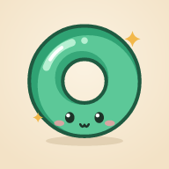

<!doctype html>
<html lang="en" translate="no" class="notranslate">
<head>
<meta charset="utf-8">
<meta name="viewport" content="width=device-width, initial-scale=1, maximum-scale=1, user-scalable=no, viewport-fit=cover, interactive-widget=resizes-content">
<meta name="theme-color" content="#F4EEE3">
<meta name="google" content="notranslate">
<meta name="color-scheme" content="only light">
<meta name="apple-mobile-web-app-capable" content="yes">
<meta name="mobile-web-app-capable" content="yes">
<meta name="apple-mobile-web-app-status-bar-style" content="default">
<title>ShiCards</title>
<link rel="manifest" href="manifest.webmanifest">
<link rel="icon" href="icons/favicon-64.png">
<link rel="apple-touch-icon" href="icons/apple-touch-icon.png">
<meta name="apple-mobile-web-app-title" content="ShiCards">
<link rel="preconnect" href="https://fonts.googleapis.com">
<link rel="preconnect" href="https://fonts.gstatic.com" crossorigin>
<link rel="preconnect" href="https://api.fontshare.com">
<link rel="preconnect" href="https://cdn.fontshare.com" crossorigin>
<link href="https://fonts.googleapis.com/css2?family=Baloo+2:wght@800&family=Noto+Serif+SC:wght@400;600&display=swap" rel="stylesheet">
<link href="https://api.fontshare.com/v2/css?f[]=satoshi@1,2&display=swap" rel="stylesheet">
<link href="https://api.fontshare.com/v2/css?f[]=chillax@500,600,700&display=swap" rel="stylesheet">
<script src="https://cdn.jsdelivr.net/npm/hanzi-writer@3.7.2/dist/hanzi-writer.min.js"></script>
<script src="https://cdn.jsdelivr.net/npm/pinyin-pro@3.26.0/dist/index.js"></script>
<style>
/* ǖ ǘ ǚ ǜ (lǜ, nǚ) from a system font: Satoshi has no ü with tone marks and would show the mark beside the letter */
@font-face{font-family:"PyMarks";src:local("Segoe UI"),local("SegoeUI"),local("Helvetica Neue"),local("HelveticaNeue"),local("Roboto"),local("Arial");unicode-range:U+01D5-01DC}
:root{
  --paper:#F4EEE3; --paper-deep:#EAE1D0; --card:#FCF9F3; --card-2:#F7F1E6;
  --ink:#1E1A15; --ink-2:#4A433A; --muted:#978C7C; --line:#E3D8C6; --line-2:#D2C4AD;
  --seal:#B23A2C; --seal-ink:#FFF8F2; --seal-soft:rgba(178,58,44,.09);
  --jade:#3F7A5F; --jade-soft:rgba(63,122,95,.12);
  --grid:rgba(178,58,44,.55);
  --shadow:0 1px 0 rgba(255,255,255,.7) inset, 0 18px 36px -18px rgba(70,45,20,.35), 0 3px 8px -4px rgba(70,45,20,.18);
  --shadow-sm:0 1px 0 rgba(255,255,255,.7) inset, 0 6px 16px -10px rgba(70,45,20,.35);
  --hanzi:"Noto Serif SC","Songti SC","STSong",serif;
  --display:"Chillax",var(--ui);
  --ui:"PyMarks","Satoshi",system-ui,-apple-system,sans-serif;   /* PyMarks: only ǖ ǘ ǚ ǜ, which Satoshi lacks */
  --r:16px;
  --fill:rgba(120,95,60,.11);         /* grey fill for secondary buttons, search, segmented controls */
  --ring:0 0 0 1px rgba(120,95,60,.07),0 1px 2px rgba(70,45,20,.05);   /* a group's quiet edge instead of a drop shadow */
  --kb:0px;
  --tabh:66px;
  --tabw:78px;
  color-scheme:light;
}
/* Dark mode: Menu › Dark mode sets data-theme="dark" on <html> (db.prefs.dark). Light stays the default. */
:root[data-theme="dark"]{
  --paper:#14120F; --paper-deep:#0E0D0B; --card:#211E19; --card-2:#1B1915;
  --ink:#EFE8DA; --ink-2:#C9C0B0; --muted:#8A8071; --line:#2F2A23; --line-2:#3E372D;
  --seal:#D65A4B; --seal-ink:#1A0F0C; --seal-soft:rgba(214,90,75,.13);
  --jade:#71B392; --jade-soft:rgba(113,179,146,.14);
  --grid:rgba(214,90,75,.5);
  --fill:rgba(239,232,218,.08);
  --ring:0 0 0 1px rgba(239,232,218,.06);
  --shadow:0 20px 40px -18px rgba(0,0,0,.8), 0 3px 10px -4px rgba(0,0,0,.5);
  --shadow-sm:0 8px 18px -10px rgba(0,0,0,.7);
  color-scheme:dark;
}
*{box-sizing:border-box;-webkit-tap-highlight-color:transparent}
html,body{margin:0}
/* feels like an app: no text marking on long press, no pinch or double-tap zoom, pictures can't be dragged, saved or copied */
html{touch-action:pan-x pan-y;-webkit-text-size-adjust:100%;text-size-adjust:100%}
body{-webkit-user-select:none;user-select:none;-webkit-touch-callout:none}
input,textarea,[contenteditable]{-webkit-user-select:text;user-select:text;-webkit-touch-callout:default}
img,svg{-webkit-user-drag:none;user-drag:none;-webkit-touch-callout:none}
body{
  background:var(--paper); color:var(--ink); font-family:var(--ui); font-size:15px; line-height:1.45;
  -webkit-font-smoothing:antialiased; overscroll-behavior-y:none;
}
body::before{ /* rice-paper grain */
  content:""; position:fixed; inset:0; pointer-events:none; z-index:0; opacity:.5; mix-blend-mode:multiply;
  background-image:url("data:image/svg+xml,%3Csvg xmlns='http://www.w3.org/2000/svg' width='180' height='180'%3E%3Cfilter id='n'%3E%3CfeTurbulence type='fractalNoise' baseFrequency='.85' numOctaves='2' stitchTiles='stitch'/%3E%3CfeColorMatrix values='0 0 0 0 .45 0 0 0 0 .36 0 0 0 0 .25 0 0 0 .09 0'/%3E%3C/filter%3E%3Crect width='100%25' height='100%25' filter='url(%23n)'/%3E%3C/svg%3E");
}
:root[data-theme="dark"] body::before{mix-blend-mode:screen;opacity:.25}
button{font:inherit;color:inherit;background:none;border:0;padding:0;cursor:pointer}
button:disabled{opacity:.4;cursor:default}
input{font:inherit;color:inherit}
svg.i{width:22px;height:22px;fill:none;stroke:currentColor;stroke-width:1.8;stroke-linecap:round;stroke-linejoin:round;flex:none}

#frame{position:relative;z-index:1}
#app{max-width:480px;margin:0 auto;padding:0 20px;position:relative;overflow-x:clip;touch-action:pan-y}
/* page swipe: the neighbouring page rides in beside the current one */
.peek{position:absolute;left:20px;right:20px;overflow:hidden;pointer-events:none}
.peek>.screen{min-height:100%}
#app.swiping{user-select:none;-webkit-user-select:none}
.screen{min-height:100dvh;display:flex;flex-direction:column;padding-top:env(safe-area-inset-top)}

/* desktop: show as a phone */
@media (min-width:700px){
  body{display:grid;place-items:center;min-height:100vh;background:var(--paper-deep)}
  #frame{width:400px;height:min(860px,94vh);border-radius:44px;overflow:hidden;background:var(--paper);
    box-shadow:0 0 0 10px #1b1813,0 0 0 11px #3a342b,0 40px 80px -20px rgba(0,0,0,.45);transform:translateZ(0);display:flex}
  #app{flex:1;overflow-y:auto;width:100%;scrollbar-width:none}
  .screen{min-height:100%}
}

/* ---------- pull to refresh: a red Chinese knot is lowered on its cord ---------- */
html{overscroll-behavior-y:none}   /* Chrome's own pull-to-refresh is off; this one replaces it */
#ptr{position:fixed;top:0;left:50%;width:0;height:0;z-index:4;pointer-events:none;transform-origin:0 0}
.ptr-charm{position:absolute;top:0;left:-26px;width:52px;opacity:0;transform:translate3d(0,-120%,0);will-change:transform,opacity}
.ptr-charm::before{content:"";position:absolute;bottom:calc(100% - 1px);left:calc(50% - .9px);width:1.8px;height:100vh;background:#B5161E}
.ptr-charm svg{display:block;width:100%;height:auto;transform-origin:50% 0;transition:transform .34s cubic-bezier(.3,1.7,.5,1)}
#ptr.armed svg{transform:scale(1.08)}
#ptr.swing{animation:ptrSwing .9s ease-in-out infinite alternate}
@keyframes ptrSwing{from{rotate:-6deg}to{rotate:6deg}}
@media (prefers-reduced-motion:reduce){#ptr.swing{animation:none}.ptr-charm svg{transition:none}}

/* ---------- top bar ---------- */
.bar{display:flex;align-items:center;gap:12px;height:60px;position:sticky;top:0;z-index:5;
  background:color-mix(in srgb,var(--paper) 80%,transparent);-webkit-backdrop-filter:blur(20px) saturate(1.5);backdrop-filter:blur(20px) saturate(1.5);margin:0 -20px;padding:0 10px}
.bar-title{flex:1;text-align:center;font-weight:600;font-size:17px;letter-spacing:-.01em;white-space:nowrap;overflow:hidden;text-overflow:ellipsis}
.icon-btn{width:42px;height:42px;border-radius:50%;display:grid;place-items:center;color:var(--ink-2);transition:opacity .2s}
.icon-btn:active{opacity:.4;transition:none}
.bar .icon-btn{color:var(--seal)}
.bar .icon-btn svg.i{stroke-width:2.1}
.icon-btn.lg{width:52px;height:52px;background:var(--fill);color:var(--ink)}
.brand{display:flex;align-items:center;gap:10px;flex:1;padding-left:6px}
.logo{width:36px;height:36px;display:block;margin-right:-2px}
.seal{display:inline-grid;place-items:center;width:30px;height:30px;border-radius:7px;background:var(--seal);color:var(--seal-ink);
  font-family:var(--hanzi);font-weight:600;font-size:18px;transform:rotate(-4deg);box-shadow:0 2px 6px -2px rgba(178,58,44,.6)}
.brand-name{font-family:"Baloo 2",var(--ui);font-weight:800;font-size:23px;line-height:1;letter-spacing:-.01em;padding-top:3px}
/* home bar: the menu button (opens the side menu) on the left, the ShiCards name in the middle, your streak flame on the right */
.bar-home{display:grid;grid-template-columns:1fr auto 1fr}
.bar-home .hm-menu{justify-self:start}
.hm-streak{justify-self:end;display:flex;align-items:center;gap:1px;height:42px;padding:0 8px 0 4px;border-radius:21px;transition:opacity .2s}
.hm-streak:active{opacity:.4;transition:none}
.hm-streak .flame{width:30px;height:30px;flex:none;margin-right:1px}
.hm-streak b{font-family:var(--display);font-size:21px;font-weight:600;line-height:1;color:var(--ink);font-variant-numeric:tabular-nums}
.hm-streak:not(.on) b{color:var(--muted)}
/* Learn and Read have no headline, just a little room at the top; Profile keeps only its settings button, on the right */
.top-gap{height:18px;flex:none}
.bar-end{justify-content:flex-end}
.bar-head{flex:1;margin:0;padding-left:10px;font-weight:700;font-size:32px;letter-spacing:-.02em;line-height:1;white-space:nowrap}
.bar-zh{font-family:var(--hanzi);font-weight:600;font-size:27px;color:var(--seal);letter-spacing:.04em;margin-left:4px}
.logo-mid{justify-self:center;font-family:"Satoshi",system-ui,sans-serif;font-weight:700;font-size:17px;line-height:1;letter-spacing:-.01em;color:var(--ink)}

/* ---------- buttons ---------- */
.btn{display:inline-flex;align-items:center;justify-content:center;gap:8px;height:50px;padding:0 20px;border-radius:14px;font-weight:600;font-size:16px;letter-spacing:-.01em;transition:opacity .2s, background .2s}
.btn:active{opacity:.7;transition:none}
.btn-primary{background:var(--ink);color:var(--paper)}
.btn-seal{background:var(--seal);color:var(--seal-ink)}
.btn-jade{background:var(--jade);color:#fff}
.btn-ghost{background:color-mix(in srgb,var(--paper) 88%,#785F3C);color:var(--ink)}   /* solid, so nothing shows through in the bottom bar */
.btn-quiet{color:var(--ink-2)}
.btn-danger{color:var(--seal)}
.wide{width:100%}
.row-btns{display:flex;gap:10px}
.row-btns>.btn{flex:1}
.link{color:var(--seal);font-weight:600;font-size:14px;padding:6px 2px}
.pill{display:inline-flex;align-items:center;gap:6px;height:36px;padding:0 12px;border-radius:10px;background:var(--fill);font-size:14px;font-weight:500;color:var(--ink)}
.pill:active{opacity:.6}
.pill svg.i{width:17px;height:17px}
.pill.on{background:var(--ink);color:var(--paper)}
.dock{position:sticky;bottom:0;margin-top:auto;padding:18px 0 calc(18px + env(safe-area-inset-bottom));
  background:linear-gradient(transparent, var(--paper) 32%);z-index:4}

/* ---------- home ---------- */
/* Learn: the HSK course, one big picture card per level (scene on top, name, word count and progress underneath) */
.crs-list{display:flex;flex-direction:column;gap:16px;margin-bottom:28px}
.crs{display:block;width:100%;padding:0;border-radius:20px;background:var(--card);box-shadow:0 0 0 2px rgba(120,95,60,.13),0 3px 0 rgba(120,95,60,.13);overflow:hidden;text-align:left;transition:transform .2s}
.crs:active{transform:translateY(2px) scale(.985);transition:none}
.crs.cur{box-shadow:0 0 0 2.5px var(--crs),0 4px 0 var(--crs)}
.crs-art{display:block;background:var(--crs)}
.crs-art svg{display:block;width:100%;height:auto}
.crs-art{position:relative}
.crs.locked .crs-art{filter:grayscale(1) contrast(.8)}
.crs.locked .crs-art>svg{opacity:.45}
.crs-lock{position:absolute;left:50%;top:50%;width:58px;height:58px;margin:-29px 0 0 -29px;border-radius:50%;display:grid;place-items:center;
  background:var(--card);color:var(--muted);box-shadow:0 0 0 2px rgba(120,95,60,.13),0 3px 0 rgba(120,95,60,.13)}
.crs-lock svg.i{width:28px;height:28px}
.crs.locked .crs-name,.crs.locked .crs-badge{opacity:.5}
.crs-locked{display:flex;align-items:center;gap:6px;font-size:14px;font-weight:700;color:var(--muted)}
.crs-locked svg.i{width:17px;height:17px}
/* Basics as a slim row above the HSK levels */
.crs-fold{display:flex;align-items:center;gap:12px;width:100%;padding:10px 14px 10px 10px;border-radius:18px;background:var(--card);text-align:left;
  box-shadow:0 0 0 2px rgba(120,95,60,.13),0 3px 0 rgba(120,95,60,.13);transition:transform .2s}
.crs-fold:active{transform:translateY(2px) scale(.985);transition:none}
.crs-fold-seal{flex:none;width:42px;height:42px;border-radius:11px;display:grid;place-items:center;background:var(--crs);color:#fff;font-family:var(--hanzi);font-weight:700;font-size:22px}
.crs-fold-main{flex:1;min-width:0;display:flex;flex-direction:column;gap:2px}
.crs-fold-main b{font-weight:800;font-size:17px}
.crs-fold-main small{font-size:13.5px;color:var(--muted);white-space:nowrap;overflow:hidden;text-overflow:ellipsis}
.crs-fold-chev{flex:none;color:var(--muted);transition:transform .2s}
.crs-low .crs-fold-seal svg.i{width:22px;height:22px;stroke-width:2.6}
.crs-low.open .crs-fold-chev{transform:rotate(90deg)}
.crs-lows{display:contents}
.crs-cap{display:block;padding:14px 16px 16px 18px}
.crs-top{display:flex;align-items:center;gap:10px}
.crs-name{flex:1;min-width:0;font-weight:800;font-size:23px;letter-spacing:-.02em;line-height:1.1}
.crs-zh{font-family:var(--hanzi);font-weight:600;font-size:16px;color:var(--seal);margin-left:8px;letter-spacing:.04em}
.crs-badge{flex:none;padding:5px 9px;border-radius:9px;background:var(--fill);font-size:13px;font-weight:700;color:var(--ink-2);font-variant-numeric:tabular-nums}
.crs-sub{display:block;margin-top:6px;font-size:14px;color:var(--muted);line-height:1.35}
.crs-foot{display:flex;align-items:center;gap:10px;margin-top:12px;min-height:16px}
.crs-bar{flex:1;height:14px;border-radius:8px;background:var(--fill);overflow:hidden}
.crs-bar i{display:block;height:100%;border-radius:8px;background:linear-gradient(90deg,#E8A33C,#FFD15C);box-shadow:inset 0 -3px 0 rgba(168,106,12,.25)}
.crs-pct{flex:none;font-size:13px;font-weight:700;color:var(--muted);font-variant-numeric:tabular-nums}
.crs-done{display:flex;align-items:center;gap:5px;font-size:14.5px;font-weight:700;color:var(--jade)}
.crs-done svg.i{width:18px;height:18px}
.group.remind-row{margin:-10px 0 24px}
.remind-row .list-btn{gap:12px}
.rem-ic{flex:none;width:36px;height:36px;border-radius:10px;display:grid;place-items:center;background:var(--seal-soft);color:var(--seal)}
.rem-ic svg.i{width:20px;height:20px}
.rem-t{flex:1}
.remind-warn{margin:14px 2px 0;padding:10px 12px;border-radius:12px;background:var(--seal-soft);color:var(--seal);font-size:13px;line-height:1.4}
.remind-help{margin:14px 2px 0;padding:12px 14px;border-radius:12px;background:var(--seal-soft);color:var(--ink);font-size:13.5px;line-height:1.45}
.remind-help b{color:var(--seal)}
.remind-help ol{margin:6px 0 4px;padding-left:20px}.remind-help li{margin:3px 0}
.remind-help .muted{font-size:12.5px;margin:6px 0 0}
.remind-help.flash{animation:helpflash .7s ease}
@keyframes helpflash{0%,100%{transform:none}30%{transform:scale(1.03)}}
.soon-line{display:flex;align-items:center;gap:10px;padding:10px 14px;margin:4px 0 8px;border-radius:14px;background:var(--fill);font-size:13.5px;color:var(--ink-2)}
.soon-line .lesson-seal{width:26px;height:26px;font-size:14px;flex:none}
@keyframes shiHop{0%,100%{transform:none}20%{transform:translateY(-10px) rotate(-5deg)}40%{transform:translateY(0) scale(1.04,.96)}60%{transform:translateY(-10px) rotate(5deg)}80%{transform:translateY(0) scale(1.04,.96)}}
@keyframes shiBreathe{0%,100%{transform:none}50%{transform:scale(1.03,.98)}}
/* Hanzi of the day: the second red card. Today's character hides under gold foil; rub it off, Shi Shi peeks at it */
/* the daily cards sit in a little deck: Hanzi of the day and the story card, with a third sheet under them.
   Swipe the top card away and it goes to the bottom; the card under it comes up (no × to close them) */
.hd-stack{position:relative;display:grid;margin:14px 0 14px;padding-bottom:24px;touch-action:pan-y}
.hd-stack>.hd-card{grid-area:1/1;margin:0}   /* both cards share one spot, so they are always the same size */
.hd-stack>.front{z-index:2;box-shadow:0 16px 26px -16px rgba(110,25,15,.8),0 2px 6px -3px rgba(110,25,15,.5)}
.hd-stack::after{content:"";position:absolute;left:0;right:0;top:0;bottom:24px;border-radius:22px;background:#A45446;
  transform:translateY(24px) scale(.88) rotate(1.4deg);transform-origin:50% 100%;opacity:.55}   /* the third sheet, deep in the deck */
.hd-card.back{z-index:1;transform:translateY(12px) scale(.94) rotate(-1.2deg);transform-origin:50% 100%;
  box-shadow:0 8px 14px -10px rgba(110,25,15,.6)}
.hd-card.back>*{opacity:var(--show,0)}
.hd-card.back.up>*{transition:opacity .25s}
.hd-card.back.up .hd-shi{animation:hdUp .6s cubic-bezier(.3,1.5,.5,1) .12s both}
.hd-card{--hd:#C4432E;position:relative;overflow:hidden;margin:-12px 0 28px;padding:16px 16px 18px 18px;border-radius:22px;background:var(--hd);color:var(--seal-ink);
  box-shadow:0 18px 30px -18px rgba(178,58,44,.75),0 2px 6px -3px rgba(178,58,44,.5)}
.hd-lbl{position:relative;display:flex;align-items:baseline;gap:8px;font-size:14px;font-weight:600;letter-spacing:0;opacity:.9}
.hd-zh{font-family:var(--hanzi);font-weight:600;font-size:13px;letter-spacing:.04em;opacity:.8}
.hd-row{position:relative;display:flex;align-items:center;gap:16px;margin-top:12px}
.hd-sheen{position:absolute;inset:0;pointer-events:none;background:linear-gradient(105deg,transparent 35%,rgba(255,255,255,.75) 48%,transparent 60%);
  transform:translateX(-120%);animation:hdSheen 3.6s ease-in-out 1s infinite}
@keyframes hdSheen{0%{transform:translateX(-120%)}35%,100%{transform:translateX(120%)}}
@keyframes hdStamp{0%{transform:scale(.86)}60%{transform:scale(1.07)}100%{transform:none}}
.hd-txt{position:relative;flex:1;min-width:0;padding-right:60px}
.hd-big{font-size:25px;font-weight:800;line-height:1.05;letter-spacing:-.02em}
.hd-sub{margin-top:6px;font-size:14px;line-height:1.35;opacity:.88}
.hd-py{font-size:26px;font-weight:700;letter-spacing:-.01em;line-height:1.1}
.hd-en{margin-top:4px;font-size:15.5px;font-weight:600;line-height:1.3;overflow:hidden;display:-webkit-box;-webkit-line-clamp:2;-webkit-box-orient:vertical}
.hd-meta{margin-top:8px;display:flex;flex-wrap:wrap;gap:6px}
.hd-meta span{font-size:12px;font-weight:600;padding:4px 8px;border-radius:8px;background:rgba(255,248,242,.16)}
.hd-go{position:relative;width:calc(100% - 92px);margin-top:16px;background:var(--seal-ink);color:var(--hd);font-weight:700}
.hd-story{--hd:#8E2A24}   /* each card its own red: vermilion on top, deep lacquer under it */
.hd-shi{position:absolute;right:-8px;bottom:-30px;width:88px;height:88px;transform-origin:50% 100%;animation:hdPeek 4.5s ease-in-out infinite;pointer-events:none}
.hd-shi .shi-face{width:100%;height:100%;display:block}
@keyframes hdPeek{0%,100%{transform:translateY(8px) rotate(4deg)}45%,70%{transform:translateY(-6px) rotate(-7deg)}}
/* the card: Shi Shi holds up today's character on a little gold-foil tile; one Learn now bubble */
.hd-day{min-height:176px}
.hd-day .hd-txt{margin-top:12px;padding-right:132px}
.hd-day .hd-big{font-size:22px}   /* "A new character is waiting" on two lines, so the card matches the story card */
.hd-day .hd-meta{margin-top:10px}
.hd-day .hd-py{font-size:28px}
.hd-bub{position:relative;display:inline-flex;align-items:center;gap:4px;margin-top:16px;height:46px;padding:0 14px 0 22px;border-radius:23px 23px 6px 23px;
  background:var(--seal-ink);color:var(--hd);font-size:17.5px;font-weight:800;letter-spacing:-.01em;box-shadow:0 10px 18px -12px rgba(60,10,5,.75);transition:transform .2s}
.hd-bub:active{transform:scale(.95);transition:none}
.hd-bub svg.i{width:18px;height:18px;stroke-width:2.8}
.hd-bub::after{content:"";position:absolute;right:-10px;bottom:5px;width:16px;height:13px;background:inherit;clip-path:polygon(0 0,100% 72%,0 100%)}   /* the tail points at Shi Shi */
.hd-pic{position:absolute;right:0;bottom:0;width:150px;height:138px;padding:0;background:none;border:0;cursor:pointer}
.hd-tag{position:absolute;left:10px;top:0;width:86px;height:86px;border-radius:12px;overflow:hidden;display:grid;place-items:center;rotate:-7deg;
  background:linear-gradient(135deg,#E2AE3E,#FFE7A0 45%,#E9B949 60%,#C98F24);box-shadow:0 14px 20px -12px rgba(60,10,5,.75),0 0 0 3px rgba(255,248,242,.18)}
.hd-tag i{font:800 52px/1 "Baloo 2",var(--ui);font-style:normal;color:#F4C14E;text-shadow:1.5px 1.5px 0 #A86A0C,-1px -1px 0 rgba(255,255,255,.6)}
.hd-tag.open{background:var(--card);color:var(--grid)}
.hd-tag b{position:relative;font-family:var(--hanzi);font-weight:600;font-size:60px;line-height:1;color:var(--ink);margin-top:-3px}
.hd-day .hd-shi{right:-4px;bottom:-16px;width:102px;height:102px}
.hd-day.rev .hd-shi{animation:none}
.hd-card.just .hd-tag{animation:hdStamp .55s cubic-bezier(.3,1.6,.5,1) .1s both}
.hd-card.just .hd-shi{animation:hdUp .7s cubic-bezier(.3,1.5,.5,1) both,shiHop 1.4s ease-in-out .7s 1}
@keyframes hdUp{from{transform:translateY(70px) scale(.7)}to{transform:none}}
.hd-card.just .hd-py,.hd-card.just .hd-en,.hd-card.just .hd-meta,.hd-card.just .hd-bub,.hd-card.just .hd-go{animation:hdRise .5s cubic-bezier(.2,.8,.3,1) both}
.hd-card.just .hd-en{animation-delay:.08s}.hd-card.just .hd-meta{animation-delay:.16s}.hd-card.just .hd-bub,.hd-card.just .hd-go{animation-delay:.26s}
@keyframes hdRise{from{opacity:0;transform:translateY(12px)}to{opacity:1;transform:none}}
.hd-fx{position:absolute;inset:0;pointer-events:none}
.hd-flake{position:absolute;width:7px;height:5px;border-radius:1.5px;background:#FFD15C;box-shadow:0 0 0 .5px rgba(168,106,12,.5)}
.hd-flake.w{background:#FFF3C8}.hd-flake.d{background:#D9A12B}
.hd-card :focus-visible{outline:3px solid #FFE08A;outline-offset:3px}
.hd-x{position:absolute;top:9px;right:9px;z-index:2;width:32px;height:32px;border-radius:50%;display:grid;place-items:center;background:rgba(255,248,242,.16);color:var(--seal-ink);transition:opacity .2s}
.hd-x:active{opacity:.5;transition:none}
.hd-x svg.i{width:16px;height:16px;stroke-width:2.4}
.hd-st{font-family:var(--hanzi);font-size:23px;font-weight:600;letter-spacing:.02em;line-height:1.2}
/* story card: no tile; Shi Shi reads a big book in the bottom-right corner, the words sit to his left */
.hd-story .hd-row{margin-top:14px}
.hd-card.rev.hd-story .hd-txt{padding-right:128px}
.hd-story .hd-st{font-size:30px;line-height:1.15;letter-spacing:.04em}
.hd-story .hd-en{font-size:17px}
.hd-story .hd-meta{margin-top:10px}
.hd-story .hd-go{width:auto;min-width:calc(100% - 160px);padding:0 18px;white-space:nowrap;z-index:1;display:flex;align-items:center;justify-content:center;gap:8px}
.hd-story .hd-go svg.i{width:20px;height:20px;flex:none}
.hd-card.rev.hd-story .hd-shi{right:-4px;bottom:-8px;width:160px;height:160px;pointer-events:auto;padding:0;background:none;border:0;cursor:pointer}
.hd-story .shi-read{width:100%;height:100%;display:block;filter:drop-shadow(0 10px 14px rgba(40,6,4,.45))}
@media (max-width:359px){.hd-card.rev.hd-story .hd-shi{width:124px;height:124px}.hd-card.rev.hd-story .hd-txt{padding-right:100px}.hd-story .hd-go{padding:0 14px;font-size:15px}}   /* small phones: the button keeps one line and stays clear of the book */
@media (prefers-reduced-motion:reduce){.hd-shi,.hd-sheen,.hd-card.just *,.hdx-tile.pop *,.hdx-head.new>*,.hdx-after>*,.hd-tag,.hd-card.back.up *{animation:none!important;transition:none!important}}
/* the Hanzi of the day pop-up: meaning, stroke order step by step, write it yourself, add to the word bank */
.hs-top{display:flex;align-items:center;gap:16px;margin:-4px 2px 14px}
.hs-hz{font-family:var(--hanzi);font-weight:600;font-size:74px;line-height:1;color:var(--ink)}
.hs-id{flex:1;min-width:0}
.hs-py{display:flex;align-items:center;gap:8px;font-size:24px;font-weight:700;color:var(--seal)}
.hs-say{width:36px;height:36px;border-radius:50%;display:grid;place-items:center;background:var(--seal-soft);color:var(--seal)}
.hs-say svg.i{width:19px;height:19px}
.hs-tags{display:flex;gap:6px;margin-top:6px}
.hs-tags span{font-size:12.5px;font-weight:600;padding:4px 8px;border-radius:8px;background:var(--fill);color:var(--ink-2)}
.hs-ms{margin:0 2px 14px;font-size:15.5px;line-height:1.45;color:var(--ink)}
.hs-ms span{color:var(--muted);margin:0 2px}
.hs-words{display:flex;flex-wrap:wrap;gap:8px;margin:0 0 18px}
.hs-w{display:flex;flex-direction:column;align-items:flex-start;padding:8px 12px;border-radius:12px;background:var(--card);box-shadow:var(--ring);text-align:left;transition:background .25s}
.hs-w:active{background:var(--paper-deep);transition:none}
.hs-w b{font-family:var(--hanzi);font-weight:600;font-size:19px;line-height:1.2}
.hs-w b i{font-style:normal;color:var(--seal)}
.hs-w small{font-size:12px;color:var(--muted);max-width:130px;white-space:nowrap;overflow:hidden;text-overflow:ellipsis}
.hs-say-row{display:flex;align-items:flex-end;gap:8px;margin:0 0 14px}
.hs-shi{flex:none;width:56px;height:56px;transform-origin:50% 100%}
.hs-shi .shi-face{width:100%;height:100%;display:block}
.hs-shi.hop{animation:shiHop 1.2s ease-in-out 1}
.hs-bub{position:relative;flex:1;padding:10px 13px;border-radius:16px 16px 16px 4px;background:var(--card);box-shadow:var(--ring);font-size:14px;line-height:1.35;color:var(--ink)}
.hs-bub.new{animation:hdRise .35s cubic-bezier(.2,.8,.3,1) both}
.hs-h{display:flex;align-items:baseline;gap:8px;margin:4px 2px 12px;font-size:17px;font-weight:700;letter-spacing:-.01em}
.hs-h span{font-family:var(--hanzi);font-size:14px;font-weight:600;color:var(--seal)}
.hs-stage{display:flex;justify-content:center}
.hs-tzg{--s:228px}
.hs-svg{position:absolute;inset:0;width:100%;height:100%}
.hs-svg .s-todo{fill:var(--line)}
.hs-svg .s-done{fill:var(--ink)}
.hs-svg .s-cur{fill:var(--seal)}
.hs-svg .s-ink{stroke:var(--seal)}
.hs-svg .s-badge{fill:var(--seal)}
.hs-svg text{fill:#fff;font:700 64px var(--ui)}
.hs-tzg.quizzing .hs-svg{display:none}
.hs-ctl{display:flex;align-items:center;justify-content:center;gap:18px;margin-top:14px}
.hs-ctl .icon-btn{background:var(--fill);color:var(--ink)}
.hs-ctl .hs-play{width:56px;height:56px;background:var(--seal);color:var(--seal-ink)}
.hs-ctl .hs-play svg.i{width:24px;height:24px}
.hs-cap{text-align:center;font-size:13.5px;color:var(--muted);margin-top:8px;min-height:20px}
.hs-strip{display:flex;gap:6px;margin:14px -20px 18px;padding:2px 20px 4px;overflow-x:auto;scrollbar-width:none}
.hs-strip::-webkit-scrollbar{display:none}
.hs-fr{flex:none;position:relative;width:46px;height:46px;border-radius:5px;background:var(--card);color:var(--grid);box-shadow:var(--ring);transition:transform .2s}
.hs-fr svg:last-child{position:absolute;inset:0;width:100%;height:100%}
.hs-fr .s-todo{fill:var(--line)} .hs-fr .s-done{fill:var(--ink)} .hs-fr .s-cur{fill:var(--seal)}
.hs-fr.on{box-shadow:0 0 0 2px var(--seal);transform:translateY(-2px)}
.hs-fr small{position:absolute;left:3px;top:1px;font-size:9.5px;font-weight:700;color:var(--muted)}
.hs-btns{display:flex;flex-direction:column;gap:10px}
.hs-add.done{background:var(--jade-soft);color:var(--jade);animation:pop .35s cubic-bezier(.2,.9,.3,1.4) both}
.hs-off{text-align:center;color:var(--muted);font-size:14px;margin:6px 0 18px}
/* the Hanzi of the day pop-up: the card grows into a red pop-up over the page, three pages side by side; swipe anywhere */
html.hdx-on,html.hdx-on body{overflow:hidden}
.hdx{position:fixed;inset:0;z-index:48;display:grid;place-items:center;padding:calc(14px + env(safe-area-inset-top)) 12px calc(14px + env(safe-area-inset-bottom))}
.hdx-scrim{position:absolute;inset:0;background:rgba(26,10,6,.52)}
.hdx-box{--hd:#C4432E;position:relative;width:min(100%,440px);height:min(100%,700px);border-radius:28px;background:var(--hd);color:var(--seal-ink);overflow:hidden;
  display:flex;flex-direction:column;transform-origin:0 0;box-shadow:0 30px 60px -24px rgba(40,6,4,.7)}
.hdx-bar{position:relative;flex:none;display:flex;align-items:center;padding:12px 10px 0 20px}
.hdx-bar .hd-lbl{flex:1}
.hdx .hd-x{position:static;flex:none;width:38px;height:38px}
.hdx .hd-x svg.i{width:18px;height:18px}
.hdx-pager{position:relative;flex:1;min-height:0;display:flex;overflow:hidden;scroll-snap-type:x mandatory;scrollbar-width:none;overscroll-behavior:contain}
.hdx-pager.free{overflow-x:auto}
.hdx-pager.drag{scroll-snap-type:none;cursor:grabbing;user-select:none;-webkit-user-select:none}
.hdx-pager::-webkit-scrollbar,.hdx-pg::-webkit-scrollbar{display:none}
.hdx-pg{flex:0 0 100%;min-width:0;scroll-snap-align:start;scroll-snap-stop:always;overflow-y:auto;overscroll-behavior-y:contain;scrollbar-width:none;
  display:flex;flex-direction:column;align-items:center;padding:8px 20px 12px}
.hdx-pg>*{flex-shrink:0}
.hdx-dots{position:relative;flex:none;display:flex;justify-content:center;padding:0 0 8px}
.hdx-dots button{width:22px;height:30px;display:grid;place-items:center}
.hdx-dots button::before{content:"";width:7px;height:7px;border-radius:4px;background:currentColor;opacity:.35;transition:width .25s,opacity .25s}
.hdx-dots button.on::before{width:20px;opacity:1}
/* page 1: scratch */
.hdx-head{min-height:78px;margin-bottom:12px;display:flex;flex-direction:column;justify-content:center;align-items:center;text-align:center}
.hdx-head.new>*{animation:hdRise .45s cubic-bezier(.2,.8,.3,1) both}.hdx-head.new>*+*{animation-delay:.08s}
.hdx-t{font-size:28px;font-weight:800;letter-spacing:-.02em;line-height:1.1}
.hdx-s{margin-top:6px;font-size:15px;opacity:.88}
.hdx-py{display:flex;align-items:center;gap:10px;font-size:34px;font-weight:800;letter-spacing:-.01em;line-height:1.1}
.hdx .hs-say{width:38px;height:38px;background:rgba(255,248,242,.18);color:var(--seal-ink)}
.hdx-en{margin-top:6px;font-size:15.5px;font-weight:600;line-height:1.35}
.hdx-en span{opacity:.6;margin:0 3px}
.hdx-tile{--t:min(calc(100vw - 72px),290px,38vh);position:relative;width:var(--t);height:var(--t);border-radius:16px;overflow:hidden;background:var(--card);color:var(--grid);
  box-shadow:0 22px 34px -18px rgba(60,10,5,.75),0 0 0 4px rgba(255,248,242,.16);touch-action:none}
.hdx-tile.pop,.hdx-tile.shown{touch-action:pan-x pan-y}
.hdx-ch{position:absolute;inset:0;display:grid;place-items:center;font-family:var(--hanzi);font-weight:600;font-size:calc(var(--t) * .68);line-height:1;color:var(--ink);padding-bottom:calc(var(--t) * .03)}
.hdx-foil,.hdx-tile canvas{position:absolute;inset:0;width:100%;height:100%}
.hdx-foil{background:linear-gradient(135deg,#E2AE3E,#FFE7A0 45%,#E9B949 60%,#C98F24)}
.hdx-tile.live .hdx-foil{visibility:hidden}
.hdx-tile canvas{cursor:grab;touch-action:none}
.hdx-tile.going .hd-sheen{display:none}
.hdx-tile.pop canvas{transition:opacity .4s ease,transform .45s cubic-bezier(.3,.6,.4,1);opacity:0;transform:scale(1.25)}
.hdx-tile.pop .hdx-ch{animation:hdStamp .5s cubic-bezier(.3,1.6,.5,1) both}
.hdx-tile:focus-visible{outline:3px solid #FFE08A;outline-offset:4px}
.hdx-after{min-height:40px;margin-top:16px;display:flex;justify-content:center;align-items:flex-start}
.hdx-after>*{animation:hdRise .45s cubic-bezier(.2,.8,.3,1) .12s both}
.hdx-after .hd-meta{margin:0}
.hdx-say{margin-top:auto;align-self:stretch;display:flex;align-items:flex-end;gap:8px;padding-top:12px}
.hdx .hs-shi{flex:none;width:54px;height:54px;transform-origin:50% 100%}
.hdx .hs-shi.hop{animation:shiHop 1.2s ease-in-out 1}
.hdx .hs-bub{box-shadow:none}
/* page 2: the stroke order as one quick animation */
.hdx .hs-h{align-self:stretch;margin:2px 2px 14px;font-size:20px}
.hdx .hs-h span{color:inherit;opacity:.75}
.hdx .hs-tzg,.hdx .hs-tzg *{touch-action:pan-x pan-y}   /* the film box swipes like the rest; only the Write it box takes the finger for drawing */
.hdx .hs-tzg{cursor:pointer}
.hdx-trace{border-radius:10px;box-shadow:0 22px 34px -18px rgba(60,10,5,.75),0 0 0 4px rgba(255,248,242,.16)}
.hdx-pw .hs-cap{margin-top:12px}
.hdx .hs-ctl{margin-top:16px}
.hdx .hs-ctl .hs-play{background:var(--seal-ink);color:var(--hd)}
.hdx .hs-cap{color:inherit;opacity:.85}
.hdx .hs-say-row{align-self:stretch;margin:16px 0 14px}
.hdx-btn{background:var(--seal-ink);color:var(--hd);font-weight:700}
.hdx-btn svg.i{width:19px;height:19px}
/* page 3: words that use it, and sentences with the pinyin over each character */
.hdx-lbl{align-self:stretch;margin:0 4px 8px;font-size:13.5px;font-weight:700;opacity:.82}
.hdx-words{align-self:stretch;margin-bottom:20px;border-radius:16px;background:var(--card);color:var(--ink);overflow:hidden}
.hdx-word{position:relative;width:100%;display:flex;align-items:center;gap:14px;padding:11px 14px 11px 16px;text-align:left;transition:background .25s}
.hdx-word+.hdx-word::before{content:"";position:absolute;top:0;left:16px;right:0;height:1px;background:var(--line)}
.hdx-word:active,.hdx-sent:active{background:var(--paper-deep);transition:none}
.hdx-word b{flex:none;min-width:58px;font-family:var(--hanzi);font-weight:600;font-size:26px;line-height:1.1}
.hdx-word b i{font-style:normal;color:var(--seal)}
.hdx-word>span{flex:1;min-width:0;display:flex;flex-direction:column}
.hdx-wpy{font-size:15px;font-weight:700}
.hdx-word small{font-size:13px;color:var(--muted);white-space:nowrap;overflow:hidden;text-overflow:ellipsis}
.hdx-word svg.i,.hdx-sent svg.i{flex:none;width:19px;height:19px;color:var(--seal);opacity:.8}
.hdx-sents{align-self:stretch;display:flex;flex-direction:column;gap:10px}
.hdx-sent{position:relative;display:flex;flex-direction:column;align-items:flex-start;gap:4px;padding:10px 44px 13px 16px;border-radius:16px;background:var(--card);color:var(--ink);text-align:left;transition:background .25s}
.hdx-sent svg.i{position:absolute;right:14px;top:22px}
.hdx-zh{font-family:var(--hanzi);font-weight:600;font-size:21px;line-height:1.9}
.hdx-zh ruby{ruby-position:over}
.hdx-zh rt{font-family:var(--ui);font-weight:500;font-size:10.5px;letter-spacing:0;color:var(--muted)}
.hdx-zh ruby.hz-me{color:var(--seal)}
.hdx-zh ruby.hz-me rt{color:var(--seal);font-weight:700}
.hdx-tr{font-size:14.5px;line-height:1.35;color:var(--ink-2)}
.hdx-none{text-align:center;font-size:14.5px;opacity:.85;margin:8px 0}
.hdx-src{font-size:12px;opacity:.7;margin:12px 0 0}
.hdx-dock{position:sticky;bottom:-12px;margin:auto -20px -12px;align-self:stretch;padding:22px 20px 12px;background:linear-gradient(to bottom,transparent,var(--hd) 34%)}
.hdx .hs-add.done{background:var(--seal-ink);color:var(--jade);opacity:1}
.hdx :focus-visible{outline:3px solid #FFE08A;outline-offset:3px}
.section-head{display:flex;align-items:baseline;justify-content:space-between;margin:4px 2px 10px}
.section-head h2{margin:0;font-size:21px;font-weight:700;letter-spacing:-.02em;color:var(--ink)}
.decks{display:flex;flex-direction:column;margin-bottom:22px;background:var(--card);border-radius:14px;box-shadow:var(--ring);overflow:hidden}
.deck{position:relative;display:flex;align-items:center;gap:14px;padding:12px 14px 12px 16px;text-align:left;transition:background .25s}
.deck:active{background:var(--paper-deep);transition:none}
.deck + .deck::before{content:"";position:absolute;top:0;right:0;left:74px;height:1px;transform:scaleY(.5);transform-origin:top;background:var(--line-2)}
.deck .chev{opacity:.55}
.deck .chev svg.i{width:17px;height:17px;stroke-width:2.2}
.deck-stack{position:relative;width:44px;height:52px;flex:none}
.deck-stack span,.deck-face{position:absolute;inset:0;border-radius:8px;border:1px solid var(--line-2);background:var(--card-2)}
.deck-stack span:nth-child(1){transform:rotate(-8deg) translate(-2px,1px)}
.deck-stack span:nth-child(2){transform:rotate(5deg) translate(2px,1px)}
.deck-face{display:grid;place-items:center;background:var(--card);font-family:var(--hanzi);font-size:22px;color:var(--ink);border-color:var(--line-2)}
.deck-face::after{content:"";position:absolute;top:4px;right:4px;width:6px;height:6px;border-radius:2px;background:var(--accent)}
.deck-plus{color:var(--seal)}
.deck-plus::after{display:none}
.deck-plus svg.i{width:22px;height:22px}
.deck-meta{flex:1;min-width:0}
.deck-name{font-size:17px;font-weight:600;letter-spacing:-.01em;line-height:1.25;white-space:nowrap;overflow:hidden;text-overflow:ellipsis}
.deck-count{font-size:13.5px;color:var(--muted);margin-top:1px}
.chev{color:var(--muted)}
.empty{text-align:center;padding:40px 20px;color:var(--muted)}
.empty .big{font-family:var(--hanzi);font-size:64px;color:var(--line-2);line-height:1}

/* ---------- deck ---------- */
.deck-hero{padding:8px 4px 22px}
.eyebrow{font-size:14px;font-weight:600;color:var(--accent,var(--seal))}
.deck-title{font-family:var(--display);font-weight:600;font-size:40px;line-height:1.05;margin:6px 0 4px}
.muted{color:var(--muted);font-size:14px}
.modes{display:grid;grid-template-columns:1fr 1fr;gap:12px;margin-bottom:28px}
.mode{background:var(--card);border-radius:var(--r);box-shadow:var(--ring);padding:14px;text-align:left;display:flex;flex-direction:column;gap:12px;transition:background .25s}
.mode:active{background:var(--paper-deep);transition:none}
.mode-ic{width:44px;height:44px;border-radius:11px;display:grid;place-items:center;background:var(--seal);color:#fff}
.mode-ic.tz{background:none;padding:0}
.mode-t{font-weight:600;font-size:17px;letter-spacing:-.01em}
.mode-s{font-size:13px;color:var(--muted);margin-top:1px}
.cards{list-style:none;margin:0 0 8px;padding:0;background:var(--card);border-radius:14px;box-shadow:var(--ring);overflow:hidden}
.cards li{position:relative}
.cards li+li::before{content:"";position:absolute;top:0;right:0;left:86px;height:1px;transform:scaleY(.5);transform-origin:top;background:var(--line-2)}
.crow{display:flex;align-items:center;gap:14px;width:100%;padding:12px 16px;text-align:left;transition:background .25s}
.crow:active{background:var(--paper-deep);transition:none}
.crow-hz{font-family:var(--hanzi);font-size:24px;min-width:56px}
.crow-txt{display:flex;flex-direction:column;min-width:0;flex:1}
.crow-py{font-size:13px;color:var(--seal)}
.crow-en{font-size:14.5px;color:var(--ink-2);white-space:nowrap;overflow:hidden;text-overflow:ellipsis}
.dots{display:flex;gap:3px}
.dots i{width:6px;height:6px;border-radius:50%;background:var(--line-2)}
.dots i.ok{background:var(--jade)} .dots i.no{background:var(--seal)}

/* ---------- study ---------- */
.progress{flex:1;height:4px;border-radius:4px;background:var(--line);overflow:hidden}
.progress-fill{height:100%;background:var(--seal);border-radius:4px;transition:width .35s ease}
.count{font-size:13px;color:var(--muted);min-width:42px;text-align:right;font-variant-numeric:tabular-nums;padding-right:6px}
.stage{flex:1;display:grid;place-items:center;perspective:1300px;padding:12px 0 6px;position:relative;touch-action:pan-y;user-select:none;-webkit-user-select:none;min-height:420px}
.stage-shadow{position:absolute;bottom:4%;left:50%;width:70%;height:26px;margin-left:-35%;border-radius:50%;background:radial-gradient(closest-side,rgba(60,35,15,.22),transparent);filter:blur(4px)}
.wrap{width:min(100%,340px);aspect-ratio:3/4;max-height:62dvh;position:relative}
.card3d{position:absolute;inset:0;transform-style:preserve-3d;will-change:transform}
.face{position:absolute;inset:0;border-radius:22px;background:var(--card);box-shadow:0 0 0 2px rgba(120,95,60,.12),0 5px 0 rgba(120,95,60,.13);backface-visibility:hidden;-webkit-backface-visibility:hidden;overflow:hidden}
.face.back{transform:rotateY(180deg)}
.face-in{position:absolute;inset:0;display:flex;flex-direction:column;align-items:center;justify-content:center;gap:10px;padding:22px 18px 34px;text-align:center}
.fc-ch{font-family:var(--hanzi);font-weight:600;line-height:1.05;word-break:break-all;color:var(--ink)}
.fc-py{font-size:24px;font-weight:700;color:var(--seal);display:flex;align-items:center;gap:6px;letter-spacing:.01em}
.fc-py .icon-btn{width:38px;height:38px;color:var(--seal);background:var(--seal-soft)}
.fc-en{font-weight:800;letter-spacing:-.01em;line-height:1.2;color:var(--ink)}
.fc-q{font-weight:800;letter-spacing:-.015em;line-height:1.15;color:var(--ink)}
.face .foot{position:absolute;bottom:14px;left:0;right:0;font-size:12.5px;color:var(--muted)}
.hz{font-family:var(--hanzi);line-height:1.12;letter-spacing:.02em;word-break:break-all}
.py{font-size:17px;color:var(--seal);margin-top:14px;letter-spacing:.03em}
.en{font-family:var(--display);font-weight:500;line-height:1.15;color:var(--ink)}
.hint{text-align:center;font-size:12.5px;color:var(--muted);margin:4px 0 0;transition:opacity .6s;height:18px}
.controls{display:flex;align-items:center;justify-content:space-between;gap:8px;padding:16px 0 calc(22px + env(safe-area-inset-bottom))}
.controls .mid{display:flex;gap:8px}
.controls[hidden],.grades[hidden]{display:none}
.hint.ask{font-size:14px;font-weight:600;color:var(--ink-2)}
/* "Did you know it?" answers after a card is turned */
.grades{display:grid;grid-template-columns:repeat(3,1fr);gap:8px;padding:12px 0 calc(20px + env(safe-area-inset-bottom));animation:gradesIn .28s cubic-bezier(.2,.85,.25,1) both}
.gbtn{height:62px;border-radius:15px;display:flex;flex-direction:column;align-items:center;justify-content:center;gap:2px;transition:opacity .2s}
.gbtn:active{opacity:.6;transition:none}
.gbtn b{font-size:15.5px;font-weight:700}
.gbtn small{font-size:12px;opacity:.75}
.g-no{background:var(--seal-soft);color:var(--seal)}
.g-mid{background:var(--fill);color:var(--ink)}
.g-yes{background:var(--jade);color:#fff}
@keyframes gradesIn{from{opacity:0;transform:translateY(10px)}to{opacity:1;transform:none}}
/* end of a flip round */
.done-hero{position:relative;text-align:center;padding:8px 0 0}
.done-shi{width:150px;height:150px;margin:0 auto;animation:donePop .7s cubic-bezier(.2,.9,.3,1.3) both}
.done-shi .shi-face{width:100%;height:100%;display:block;animation:shiHop 1.4s ease-in-out .8s 2}
.done-burst{position:absolute;left:50%;top:78px;width:0;height:0}
.done-burst i{position:absolute;width:7px;height:12px;border-radius:2px;opacity:0;animation:burst 1.5s cubic-bezier(.2,.65,.45,1) var(--d) both}
.done-hero h2{font-family:var(--hanzi);font-weight:600;font-size:34px;margin:10px 0 2px}
.done-py{color:var(--muted);font-size:14.5px}
.done-stats{display:grid;grid-template-columns:repeat(3,1fr);gap:8px;margin:22px 0 14px}
.done-stats div{background:var(--card);border-radius:14px;box-shadow:var(--ring);padding:12px 6px;text-align:center}
.done-stats b{display:block;font-family:var(--display);font-size:30px;font-weight:700;line-height:1;font-variant-numeric:tabular-nums}
.done-stats span{font-size:12px;color:var(--muted)}
.done-stats .fl b{color:#E8742C}
.done-words{display:flex;flex-wrap:wrap;justify-content:center;gap:6px;margin-bottom:14px}
.done-words span{font-family:var(--hanzi);font-size:19px;padding:6px 11px;border-radius:10px;background:var(--jade-soft);color:var(--jade)}
.done-next{display:flex;align-items:center;gap:12px;padding:12px 14px;border-radius:14px;background:var(--card);box-shadow:var(--ring);font-size:14px}
.done-next b{display:block}
.done-next small{color:var(--muted);font-size:13px}
.done-cal{flex:none;width:40px;height:42px;border-radius:9px;background:var(--seal-soft);color:var(--seal);display:flex;flex-direction:column;align-items:center;justify-content:center;font-weight:800;font-size:17px;line-height:1}
.done-cal small{font-size:9px;font-weight:700;letter-spacing:.04em;color:var(--seal);margin-bottom:2px}
@keyframes donePop{from{transform:translateY(40px) scale(.6);opacity:0}to{transform:none;opacity:1}}
@keyframes burst{0%{opacity:0;transform:translate(0,0) rotate(0)}15%{opacity:1}100%{opacity:0;transform:translate(var(--x),calc(var(--y) + 160px)) rotate(var(--r))}}
@media (prefers-reduced-motion:reduce){.done-shi,.done-shi .shi-face,.done-burst i{animation:none!important}.done-burst{display:none}}

/* ---------- write ---------- */
.seg{display:flex;background:var(--fill);border-radius:9px;padding:2px;gap:0}
.seg button{height:30px;padding:0 12px;border-radius:7px;font-size:13.5px;font-weight:500;color:var(--ink);transition:background .2s}
.seg button.on{background:var(--card);font-weight:600;box-shadow:0 3px 8px rgba(0,0,0,.08),0 1px 1px rgba(0,0,0,.06)}
.prompt{text-align:center;padding:18px 0 22px}
.prompt-en{font-family:var(--display);font-weight:600;line-height:1.1;margin:10px 0 8px}
.prompt .reveal-line{min-height:28px;display:flex;justify-content:center;align-items:center;gap:10px}
.prompt .reveal-line .py{margin:0;font-size:16px}
/* which sense is meant: a common word with the character left out (东＿ · thing) */
.w-clue{display:inline-flex;align-items:center;gap:6px;margin:0 0 8px;padding:4px 11px;border-radius:10px;background:var(--fill);font-size:14px;color:var(--ink-2)}
.w-clue .hz{font-family:var(--hanzi);font-size:19px;font-weight:400;color:var(--ink);display:inline-flex;align-items:center;height:auto;background:none;box-shadow:none;border-radius:0}
.w-clue .py{font-size:13px;color:var(--muted)}
.w-gap{display:inline-block;width:.95em;height:.95em;margin:0 1px;border:1.5px dashed var(--line-2);border-radius:3px;vertical-align:-2px}
.w-gap.fill{border:0;width:auto;height:auto;color:var(--seal);font-style:normal}
/* a hint: the next stroke drawn in faint red, in its writing direction, like a copybook */
.tzg .hint{position:absolute;inset:0;width:100%;height:100%;pointer-events:none;transition:opacity .3s}
.tzg .hint .hs{fill:none;stroke:color-mix(in srgb,var(--seal) 48%,transparent);stroke-width:150;stroke-linecap:round;stroke-linejoin:round;animation:hintDraw .8s cubic-bezier(.4,0,.2,1) forwards}
@keyframes hintDraw{to{stroke-dashoffset:0}}
@media (prefers-reduced-motion:reduce){.tzg .hint .hs{animation-duration:.01s}}
.tzg.revealed .hint{opacity:0}
/* Shi Shi when a writing answer is wrong: in the bottom section (a different character), or small in the box's corner (one part) */
.w-lfb{margin-bottom:12px;animation:lesUp .3s cubic-bezier(.2,.8,.3,1) both}
.w-lfb .lfb-txt b{font-size:17px}
.w-lfb .lfb-shi{animation:wShiIn .5s .05s cubic-bezier(.2,.9,.3,1.3) both}
.w-shi{position:absolute;right:-17px;bottom:-17px;z-index:4;width:50px;height:50px;pointer-events:none;transform-origin:50% 90%;animation:wShiIn .5s cubic-bezier(.2,.9,.3,1.3) both}
.w-shi .shi-face{width:100%;height:100%;display:block}
.w-shi-bub{position:relative;display:block;width:fit-content;max-width:300px;margin:10px auto 8px;padding:9px 13px 10px;border-radius:14px;background:var(--card);box-shadow:0 0 0 1.5px rgba(120,95,60,.14),0 4px 12px rgba(60,40,20,.12);
  font-size:13.5px;line-height:1.4;color:var(--ink-2);text-align:left;transform-origin:85% 0;animation:wBubIn .35s .22s cubic-bezier(.2,.9,.3,1.2) both}
.w-shi-bub::before{content:"";position:absolute;right:26px;top:-6px;width:12px;height:12px;border-radius:2px;background:var(--card);transform:rotate(45deg);box-shadow:-1.5px -1.5px 0 0 rgba(120,95,60,.14)}
.w-shi-want{display:block;font-weight:600;color:var(--ink)}
.note .w-shi-bub .hz,.w-shi-bub .hz{font-family:var(--hanzi);font-size:19px;font-weight:600;color:var(--jade);margin-right:1px;vertical-align:-2px}
.w-shi-not{display:block}
.note .w-shi-not .hz,.w-shi-not .hz{color:var(--seal)}
.w-shi-bub small{display:block;margin-top:3px;font-size:11.5px;color:var(--muted)}
@keyframes wShiIn{from{transform:translateY(14px) scale(.4);opacity:0}60%{transform:translateY(-3px) scale(1.08);opacity:1}to{transform:none}}
@keyframes wBubIn{from{transform:scale(.4);opacity:0}to{transform:none;opacity:1}}
/* the end of a writing round: Shi Shi jumps up big and cheers, with paper confetti */
.ws-end{padding-top:6px}
.ws-stage{position:relative;height:300px;margin:4px auto 10px;max-width:350px}
.ws-lion{position:absolute;left:calc(50% - 150px);bottom:0;width:236px;height:236px;transform-origin:50% 100%;transform:translateY(30px) scale(.3);opacity:0}
.ws-bubble{position:absolute;z-index:2;left:calc(50% + 50px);top:8px;min-width:96px;max-width:150px;padding:10px 14px 11px;border-radius:16px;background:var(--card);
  box-shadow:0 0 0 1.5px rgba(120,95,60,.14),0 6px 18px rgba(60,40,20,.14);text-align:left;opacity:0}
.ws-bubble::before{content:"";position:absolute;left:-5px;bottom:14px;width:14px;height:14px;border-radius:3px;background:var(--card);transform:rotate(45deg)}
.ws-bit{position:absolute;left:calc(50% - 34px);bottom:150px;width:8px;height:11px;border-radius:2px;opacity:0}
.ws-score{font-size:17px;color:var(--ink-2);margin-top:2px}
.ws-score b{font-family:var(--display);font-size:46px;font-weight:600;color:var(--ink);line-height:1;vertical-align:-6px;margin-right:4px}
@media (prefers-reduced-motion:reduce){.w-lfb,.w-lfb .lfb-shi,.w-shi,.w-shi-bub{animation:none}.ws-lion,.ws-bubble{transform:none;opacity:1}}
.note .hz{font-family:var(--hanzi);font-size:18px;font-weight:600;color:var(--seal);vertical-align:-2px}
.tzg .hint .hg{transition:opacity .45s ease-out}
.tzg .hint .hg.gone{opacity:0}
.pick-n{display:flex;align-items:center;justify-content:space-between;gap:12px;margin:-8px 0 8px}
.pick-n > span{font-size:14.5px;font-weight:600}
.pick-n .seg button{min-width:40px;padding:0 10px}
.grid{display:flex;flex-wrap:wrap;justify-content:center;gap:var(--gap,12px);width:100%;margin:0 auto}
.grid.rows .tzg::before{content:attr(data-n);position:absolute;top:6px;left:8px;z-index:2;pointer-events:none;
  font:600 10.5px/1 var(--ui);letter-spacing:.02em;color:var(--grid);opacity:.75}
.tzg{position:relative;width:var(--s,150px);height:var(--s,150px);background:var(--card);border-radius:6px;box-shadow:var(--shadow-sm);touch-action:none;color:var(--grid);transition:opacity .25s, transform .25s}
.tzg *{touch-action:none}
.tzg-bg{position:absolute;inset:0;width:100%;height:100%;pointer-events:none}
.tzg canvas,.tzg .ans,.tzg .quiz{position:absolute;inset:0}
.tzg .quiz:empty{display:none}
.tzg .ans{pointer-events:none;opacity:0;transition:opacity .4s ease-out}
.tzg.revealed .ans{opacity:1}
.tzg.revealed canvas{opacity:0;transition:opacity .15s .4s}   /* the answer fades in on top first, so the ink never looks washed out */
.tzg.morphing .ans{opacity:0}
.tzg.morphing canvas{opacity:1}
.tzg.dim{opacity:.45;transform:scale(.96)}
.tzg.done-ok{box-shadow:0 0 0 2px var(--jade), var(--shadow-sm)}
.tzg.judged-ok{box-shadow:0 0 0 2.5px var(--jade), var(--shadow-sm)}
.tzg.judged-no{box-shadow:0 0 0 2.5px var(--seal), var(--shadow-sm)}
.tzg .mark{position:absolute;top:-9px;right:-7px;z-index:3;min-width:30px;height:24px;padding:0 8px;border-radius:12px;display:grid;place-items:center;
  font:600 12.5px/1 var(--ui);color:#fff;background:var(--jade);box-shadow:0 3px 8px -3px rgba(0,0,0,.35);animation:pop .35s cubic-bezier(.2,.9,.3,1.4) both}
.tzg .mark.no{background:var(--seal)}
@keyframes pop{from{transform:scale(.4);opacity:0}to{transform:none;opacity:1}}
.verdict{font-weight:600;font-size:15px;color:var(--ink)}
.verdict.ok{color:var(--jade)} .verdict.no{color:var(--seal)}
.btn .spin{width:16px;height:16px;border-color:rgba(255,255,255,.35);border-top-color:#fff}
.ans-fallback{display:grid;place-items:center;height:100%;font-family:var(--hanzi);font-size:calc(var(--s) * .72);color:var(--ink)}
.tools{display:flex;justify-content:center;gap:10px;margin-top:22px;min-height:38px}
.note{text-align:center;color:var(--muted);font-size:13px;margin-top:14px;min-height:20px}
@media (max-height:720px){ /* short phones: give the writing boxes the room */
  .prompt{padding:6px 0 12px} .prompt-en{margin:6px 0 4px}
  .note{margin-top:10px} .tools{margin-top:10px} }
.summary{text-align:center;padding:30px 0 10px;flex:1}
.ring{width:170px;height:170px;border-radius:50%;margin:10px auto 26px;display:grid;place-items:center;
  background:conic-gradient(var(--jade) calc(var(--p)*1%), var(--line) 0)}
.ring>div{width:146px;height:146px;border-radius:50%;background:var(--paper);display:grid;place-items:center;align-content:center}
.ring b{font-family:var(--display);font-size:54px;font-weight:600;line-height:1}
.ring span{color:var(--muted);font-size:14px}
.summary h2{font-family:var(--hanzi);font-weight:400;font-size:34px;margin:0}
.summary .sub{color:var(--muted);margin-top:4px}
.missed{display:flex;flex-wrap:wrap;gap:8px;justify-content:center;margin-top:22px}
.missed span{font-family:var(--hanzi);font-size:20px;background:var(--card);padding:6px 12px;border-radius:10px;box-shadow:var(--ring)}

/* ---------- sheet ---------- */
#sheet-root{position:fixed;inset:0;z-index:50;pointer-events:none}
#sheet-root.open{pointer-events:auto}
.scrim{position:absolute;inset:0;background:rgba(20,14,8,.38);opacity:0;transition:opacity .3s}
#sheet-root.open .scrim{opacity:1}
.sheet{position:absolute;left:0;right:0;bottom:var(--kb);margin:0 auto;max-width:480px;background:var(--paper);border-radius:28px 28px 0 0;
  padding:10px 20px calc(20px + env(safe-area-inset-bottom));max-height:calc(100% - var(--kb) - 30px);overflow-y:auto;
  transform:translateY(105%);transition:transform .38s cubic-bezier(.2,.85,.25,1), bottom .15s;box-shadow:0 -10px 40px rgba(0,0,0,.18)}
#sheet-root.open .sheet{transform:none}
/* deck picker: a second pop-up stacked on the first */
#sheet-root .picker{position:absolute;inset:0;z-index:2}
#sheet-root .picker .scrim{opacity:0}
#sheet-root .picker.on .scrim{opacity:1}
#sheet-root .picker .sheet{transform:translateY(105%)}
#sheet-root .picker.on .sheet{transform:none}
.picker .group{margin-bottom:16px}
.pk-dot{width:10px;height:10px;border-radius:3px;flex:none}
.picker .row.has .tick svg.i{opacity:.4}
.picker .row.has .pk-dot{opacity:.45}
.pk-new{color:var(--seal)}
.pk-new svg.i{width:18px;height:18px;flex:none;margin-left:-4px}
.pk-new .row-t{color:var(--seal)}
.pk-make{gap:8px}
.pk-make .input{height:42px;flex:1}
.pk-make .btn{height:42px;padding:0 16px}
.qa-decks{margin-bottom:16px}
.qa-decks .row-val{max-width:55%;white-space:nowrap;overflow:hidden;text-overflow:ellipsis}
.handle{width:40px;height:5px;border-radius:5px;background:var(--line-2);margin:0 auto 14px;position:relative;cursor:grab}
.handle::after{content:"";position:absolute;inset:-14px -40px}  /* bigger grab area */
.sheet h3{font-size:17px;font-weight:600;letter-spacing:-.01em;text-align:center;margin:0 0 20px}
.field{display:block;margin-bottom:18px}
.field>.lbl{display:flex;justify-content:space-between;font-size:13px;font-weight:400;color:var(--muted);margin:0 16px 6px}
.input{width:100%;height:48px;border-radius:12px;border:0;background:var(--card);box-shadow:var(--ring);padding:0 16px;font-size:16px;outline:none;transition:box-shadow .2s}
.input:focus{box-shadow:0 0 0 2px var(--seal)}
.input::placeholder{color:var(--muted)}
.compose{display:flex;align-items:center;gap:6px;min-height:78px;border-radius:14px;background:var(--card);box-shadow:var(--ring);padding:8px 8px 8px 18px;margin-bottom:10px}
.compose-hz{flex:1;font-family:var(--hanzi);font-size:38px;line-height:1.2;letter-spacing:.04em;word-break:break-all}
.compose-hz.ph{font-family:var(--ui);font-size:14px;color:var(--muted);letter-spacing:0}
.cands{display:flex;gap:8px;overflow-x:auto;padding:10px 2px 4px;scrollbar-width:none;min-height:58px}
.cands::-webkit-scrollbar{display:none}
.cand{flex:none;height:44px;min-width:44px;padding:0 14px;border-radius:10px;background:var(--card);box-shadow:var(--ring);font-family:var(--hanzi);font-size:21px;transition:opacity .2s}
.cand:first-child{background:var(--ink);color:var(--paper)}
.cand:active{opacity:.6;transition:none}
.cands .msg{font-size:13px;color:var(--muted);align-self:center;padding-left:4px}
/* ---------- word bank + quick add ---------- */
.bank-tile{display:flex;align-items:center;gap:14px;width:100%;padding:16px 14px 16px 18px;margin-bottom:28px;background:var(--card);border-radius:14px;box-shadow:var(--ring);text-align:left;transition:background .25s}
.bank-tile:active{background:var(--paper-deep);transition:none}
.bank-tile .chev{opacity:.55}
.bank-count{display:flex;align-items:flex-end;gap:10px;flex:none}
.bank-num{font-family:var(--display);font-weight:600;font-size:54px;line-height:.82;letter-spacing:-.02em;font-variant-numeric:lining-nums}
.bank-lbl{font-size:13px;line-height:1.35;color:var(--muted)}
.bank-lbl b{color:var(--ink-2);font-weight:500}
.bank-chars{flex:1;min-width:0;display:flex;flex-direction:row-reverse;flex-wrap:wrap;gap:5px;max-height:63px;overflow:hidden}
.bank-chars i{font-style:normal;width:29px;height:29px;display:grid;place-items:center;border-radius:7px;background:var(--card-2);border:1px solid var(--line-2);font-family:var(--hanzi);font-size:17px;color:var(--ink)}
.bank-chars i:first-child{background:var(--seal);border-color:var(--seal);color:var(--seal-ink);transform:rotate(-4deg)}
.bank-chars .msg{flex:1;font-size:13px;line-height:1.4;color:var(--muted);text-align:left;padding-left:14px;border-left:1px solid var(--line)}
.qa-glyph{display:inline-grid;place-items:center;width:24px;height:24px;border-radius:6px;background:var(--seal);color:var(--seal-ink);font-family:var(--hanzi);font-size:15px;transform:rotate(-4deg)}
.dock.row-btns{display:flex}
.bank-hero{display:flex;align-items:flex-end;gap:14px;padding:22px 4px 24px}
.bank-hero .bank-num{font-size:76px}
.bank-hero .bank-lbl{font-size:15px;color:var(--ink-2)}
.bank-hero .bank-lbl small{display:block;font-size:13px;color:var(--muted)}
.char-grid{display:flex;flex-wrap:wrap;gap:6px;margin-bottom:26px}
.char-grid span{width:40px;height:40px;display:grid;place-items:center;border-radius:9px;background:var(--card);box-shadow:var(--shadow-sm);font-family:var(--hanzi);font-size:23px}
/* grouped list: rows inside one rounded group, hairlines start where the text starts (--sep) */
.group{background:var(--card);border-radius:14px;overflow:hidden;box-shadow:0 0 0 1px rgba(120,95,60,.06),0 1px 2px rgba(70,45,20,.05);margin-bottom:24px}
.group-foot{font-size:12.5px;line-height:1.45;color:var(--muted);margin:-16px 16px 24px}
.row{position:relative;display:flex;align-items:center;gap:12px;width:100%;min-height:52px;padding:10px 14px 10px 16px;text-align:left;color:var(--ink);background:transparent;transition:background .25s}
.row:active{background:var(--paper-deep);transition:none}
.row + .row::before{content:"";position:absolute;top:0;right:0;left:var(--sep,16px);height:1px;transform:scaleY(.5);transform-origin:top;background:var(--line-2)}
.row-main{flex:1;min-width:0;display:flex;flex-direction:column;gap:1px}
.row-t{font-size:16px;font-weight:500;line-height:1.3}
.row-s{font-size:13px;color:var(--muted)}
.row-val{flex:none;font-size:14px;color:var(--muted);font-variant-numeric:tabular-nums}
.row .chev{display:flex;opacity:.55}
.row .chev svg.i{width:17px;height:17px;stroke-width:2.2}
.icon-sq{flex:none;width:30px;height:30px;border-radius:7px;display:grid;place-items:center;background:var(--seal);color:#fff;font-family:var(--hanzi);font-size:17px}
.word .hz{font-size:24px;flex:none;min-width:48px}
.word .wp{font-size:13px;color:var(--seal)}
.word .we{font-size:14.5px;color:var(--ink-2);white-space:nowrap;overflow:hidden;text-overflow:ellipsis}
.word-list{margin-bottom:8px}
/* search field: filled, with a magnifier and a clear button */
.search{display:flex;align-items:center;gap:7px;height:38px;padding:0 8px 0 10px;border-radius:10px;background:rgba(120,95,60,.11);margin-bottom:16px}
.search svg.i{width:17px;height:17px;color:var(--muted);flex:none;stroke-width:2.1}
.search input{flex:1;min-width:0;height:100%;border:0;background:none;outline:none;padding:0;font:inherit;font-size:16px;color:var(--ink);-webkit-appearance:none;appearance:none}
.search input::placeholder{color:var(--muted)}
.search input::-webkit-search-cancel-button{display:none}
.search .clr{flex:none;width:20px;height:20px;border-radius:50%;background:var(--muted);color:var(--card);display:grid;place-items:center}
.search .clr[hidden]{display:none}
.search .clr svg.i{width:11px;height:11px;color:var(--card);stroke-width:3}
.search:focus-within{box-shadow:0 0 0 2px var(--seal-soft)}
/* selection circle (multi-select) and trailing checkmark (pick from a list) */
.sel{flex:none;width:24px;height:24px;border-radius:50%;border:1.5px solid var(--line-2);display:grid;place-items:center;color:#fff;transition:background .15s,border-color .15s}
.sel svg.i{width:14px;height:14px;stroke-width:3;opacity:0;transition:opacity .15s}
.row.on .sel{background:var(--seal);border-color:var(--seal)}
.row.on .sel svg.i,.row.has .sel svg.i{opacity:1}
.row.has .sel{background:var(--line-2);border-color:var(--line-2)}
.row.has .hz,.row.has .row-main{opacity:.45}
.tick{display:flex;flex:none;width:22px;color:var(--seal)}
.tick svg.i{width:20px;height:20px;stroke-width:2.4;opacity:0}
.row.on .tick svg.i{opacity:1}
/* progress ring with the level number inside */
.ring-s{position:relative;flex:none;width:40px;height:40px}
.ring-s svg{width:100%;height:100%;transform:rotate(-90deg);display:block}
.ring-s circle{fill:none;stroke-width:3.2}
.ring-s .rb{stroke:var(--line)}
.ring-s .rf{stroke:var(--seal);stroke-linecap:round}
.ring-s b{position:absolute;inset:0;display:grid;place-items:center;font-size:14px;font-weight:600;font-variant-numeric:tabular-nums}
.ring-s b.sm{font-size:10.5px;letter-spacing:-.01em}
.hsk-dock{display:flex;align-items:center;gap:14px;margin:0 -20px;padding:10px 20px calc(12px + env(safe-area-inset-bottom));background:color-mix(in srgb,var(--paper) 82%,transparent);-webkit-backdrop-filter:blur(20px) saturate(1.5);backdrop-filter:blur(20px) saturate(1.5);box-shadow:0 -.5px 0 var(--line-2)}
.deck-title,.face .foot{font-variant-numeric:lining-nums}
.hsk-dock .btn{flex:1}
.link-btn{font-size:15px;font-weight:500;color:var(--seal);padding:10px 2px;white-space:nowrap}
.link-btn:active{opacity:.5}
/* ready-made HSK decks on the Decks page: a sideways shelf of levels */
.shelf{display:flex;gap:10px;overflow-x:auto;margin:0 -20px 8px;padding:2px 20px 4px;scroll-snap-type:x mandatory;scroll-padding:0 20px;scrollbar-width:none;overscroll-behavior-x:contain}
.shelf::-webkit-scrollbar{display:none}
.shelf-tile{flex:none;width:104px;scroll-snap-align:start;display:flex;flex-direction:column;align-items:flex-start;padding:14px 14px 12px;border-radius:14px;background:var(--card);box-shadow:var(--ring);text-align:left;transition:background .25s}
.shelf-tile:active{background:var(--paper-deep);transition:none}
.shelf-tile .ring-s{width:44px;height:44px;margin-bottom:12px}
.shelf-t{font-size:15px;font-weight:600;letter-spacing:-.01em}
.shelf-s{font-size:12.5px;color:var(--muted)}
.shelf-note{font-size:13px;color:var(--muted);margin:0 2px 28px}
/* Shi Shi cheers when you add words from an HSK list: he springs up out of the bottom bar, hops, and drops back */
#cheer{position:fixed;left:0;right:0;bottom:var(--cheer-b,90px);height:320px;max-width:480px;margin:0 auto;overflow:hidden;pointer-events:none;z-index:40}
.cheer-lion{position:absolute;bottom:-4px;left:calc(50% - 152px);width:150px;height:150px;transform-origin:50% 100%;pointer-events:auto;will-change:transform;transform:translateY(105%)}
.cheer-bubble{position:absolute;z-index:2;bottom:104px;left:calc(50% + 2px);max-width:166px;padding:10px 14px 11px;border-radius:16px;background:var(--card);
  box-shadow:0 12px 28px -12px rgba(70,45,20,.4),0 0 0 1px rgba(120,95,60,.08);transform-origin:0 100%;opacity:0}
.cheer-bubble::before{content:"";position:absolute;left:-5px;bottom:16px;width:14px;height:14px;border-radius:3px;background:var(--card);transform:rotate(45deg)}
.cheer-zh{position:relative;font-family:var(--hanzi);font-size:25px;line-height:1.15;color:var(--seal)}
.cheer-py{position:relative;font-size:12px;color:var(--seal);opacity:.8}
.cheer-en{position:relative;font-size:13.5px;line-height:1.3;color:var(--ink-2);margin-top:4px}
.cheer-bit{position:absolute;left:calc(50% - 81px);bottom:118px;width:8px;height:11px;border-radius:2px;opacity:0}
.qa-seg{margin-bottom:14px}
.qa-seg button{flex:1;height:36px}
.qa-word{flex:1;min-width:0}
.compose-py{font-size:14px;color:var(--seal);margin-top:1px;min-height:18px}
.qa-pad{display:flex;gap:10px;align-items:flex-end}
.qa-tools{display:flex;flex-direction:column;gap:8px}
.qa-tool{width:36px;height:36px;border-radius:10px;display:grid;place-items:center;background:var(--fill);color:var(--ink)}
.qa-tool:active{opacity:.6}
.qa-tool svg.i{width:17px;height:17px}
.compose.qa-compose{min-height:52px;padding:4px 4px 4px 14px;border-radius:12px}
.qa-compose .compose-hz{font-size:28px}
.qa-compose .compose-hz.ph{font-size:13.5px}
.qa-compose .compose-py{min-height:0;font-size:13px}
.en-res{display:flex;flex-direction:column;gap:8px;padding:10px 0 10px;min-height:58px}
.en-res .msg{font-size:13px;color:var(--muted);padding:8px 4px}
.en-row{display:flex;align-items:center;gap:14px;width:100%;padding:10px 14px;border-radius:12px;background:var(--card);box-shadow:var(--ring);text-align:left}
.en-row:active{background:var(--paper-deep)}
.en-row .hz{font-size:26px;flex:none;min-width:44px}
.en-row .wp{font-size:13px;color:var(--seal)}
.en-row .we{font-size:13.5px;color:var(--ink-2);display:-webkit-box;-webkit-line-clamp:2;-webkit-box-orient:vertical;overflow:hidden}
.means{display:flex;flex-wrap:wrap;gap:6px;margin:-6px 0 16px}
.means:empty{display:none}
.mean{padding:7px 11px;border-radius:9px;background:var(--fill);font-size:13.5px;color:var(--ink);text-align:left}
.mean.on{background:var(--ink);border-color:var(--ink);color:var(--paper)}
.lbl-note{text-transform:none;letter-spacing:0;font-weight:500}
/* quick add: what you wrote is not a dictionary word; real words that start with it */
.qa-not{margin:2px 0 16px;font-size:13.5px;line-height:1.45;color:var(--ink-2)}
.qa-not b{font-family:var(--hanzi);font-weight:500;color:var(--seal)}
.qa-sugg{display:flex;flex-wrap:wrap;gap:6px;margin-top:10px}
.qa-sugg button{display:flex;align-items:baseline;gap:7px;padding:7px 11px;border-radius:9px;background:var(--fill);color:var(--ink);text-align:left}
.qa-sugg .hz{font-family:var(--hanzi);font-size:19px}
.qa-sugg .wp{font-size:12.5px;color:var(--seal)}
.chips{display:flex;flex-wrap:wrap;gap:8px}
.chip{display:inline-flex;align-items:center;gap:8px;height:38px;padding:0 13px;border-radius:10px;background:var(--fill);font-size:14.5px;font-weight:500;color:var(--ink);transition:background .15s,color .15s}
.chip i{width:8px;height:8px;border-radius:2px;background:var(--accent);flex:none}
.chip.on{background:var(--ink);color:var(--paper)}
.chip.on i{box-shadow:0 0 0 2px var(--paper)}
.swatches{display:flex;gap:12px}
.sw{width:36px;height:36px;border-radius:50%;background:var(--c);box-shadow:inset 0 0 0 2px rgba(255,255,255,.25)}
.sw.on{box-shadow:0 0 0 3px var(--paper),0 0 0 5px var(--c)}
.list-btn{position:relative;display:flex;align-items:center;justify-content:space-between;gap:12px;width:100%;min-height:56px;padding:10px 14px 10px 16px;font-size:16px;line-height:1.3;text-align:left;transition:background .25s}
.list-btn:active{background:var(--paper-deep);transition:none}
.list-btn + .list-btn::before{content:"";position:absolute;top:0;right:0;left:16px;height:1px;transform:scaleY(.5);transform-origin:top;background:var(--line-2)}
.list-btn small{color:var(--muted);font-size:13px}
.switch{width:51px;height:31px;border-radius:99px;background:var(--fill);position:relative;transition:background .25s;flex:none}
.switch::after{content:"";position:absolute;top:2px;left:2px;width:27px;height:27px;border-radius:50%;background:#fff;box-shadow:0 3px 8px rgba(0,0,0,.15),0 1px 1px rgba(0,0,0,.12);transition:transform .25s cubic-bezier(.3,.7,.3,1)}
.switch.on{background:var(--jade)} .switch.on::after{transform:translateX(20px)}
.list-btn .side{display:grid;place-items:center;min-width:24px;color:var(--muted)}
.list-btn .side svg.i{width:17px;height:17px;stroke-width:2.2;opacity:.75}
.list-btn .side.ok{color:var(--jade)}
.upd-badge{background:var(--seal);color:var(--seal-ink);font-size:13px;font-weight:600;padding:8px 13px;border-radius:10px}
.spin{width:18px;height:18px;border-radius:50%;border:2px solid var(--line-2);border-top-color:var(--seal);animation:spin .8s linear infinite}
@keyframes spin{to{transform:rotate(360deg)}}
.steps{margin:0 0 18px;padding:0;list-style:none;counter-reset:s}
.steps li{counter-increment:s;position:relative;padding:4px 0 16px 44px;font-size:15px;line-height:1.45}
.steps li::before{content:counter(s);position:absolute;left:0;top:0;width:30px;height:30px;border-radius:50%;background:var(--seal-soft);color:var(--seal);font-weight:600;font-size:14px;display:grid;place-items:center}
.copy-row{display:flex;align-items:center;gap:10px;background:var(--card);box-shadow:var(--ring);border-radius:12px;padding:6px 6px 6px 14px}
.copy-row span{flex:1;min-width:0;font-size:14px;color:var(--ink-2);overflow:hidden;text-overflow:ellipsis;white-space:nowrap}
.copy-row .btn{height:40px;padding:0 14px;border-radius:10px}
#toast{position:fixed;left:50%;bottom:calc(96px + env(safe-area-inset-bottom));transform:translate(-50%,20px);background:var(--ink);color:var(--paper);padding:11px 18px;border-radius:14px;font-size:14px;
  opacity:0;pointer-events:none;transition:opacity .25s, transform .25s;z-index:60;white-space:nowrap;max-width:90%}
#toast.show{opacity:1;transform:translate(-50%,0)}
/* ---------- bottom tab bar ---------- */
/* Modelled on Uber's bar: a dark floating capsule; the tapped icon fills instantly,
   the highlight follows after a short pause (about 0.12 s) and glides over in about 0.42 s. */
#tabbar{position:fixed;left:0;right:0;bottom:calc(12px + env(safe-area-inset-bottom));z-index:20;margin:0 auto;display:none;
  width:calc(var(--tabw) * 4 + 20px);height:var(--tabh);padding:0 9px;border-radius:999px;
  background:var(--ink);border:1px solid rgba(255,248,240,.16);box-shadow:0 14px 30px -12px rgba(30,20,10,.55)}
:root[data-theme="dark"] #tabbar{background:#2A2620;box-shadow:0 14px 30px -12px rgba(0,0,0,.8)}   /* dark mode: the capsule stays dark so its pale icons still read */
#frame.tabs #tabbar{display:flex}
#frame.tabs .screen{padding-bottom:calc(var(--tabh) + 26px + env(safe-area-inset-bottom))}
#frame.tabs .dock{bottom:0;margin-bottom:calc(-1 * (var(--tabh) + 26px + env(safe-area-inset-bottom)));padding-bottom:calc(var(--tabh) + 26px + env(safe-area-inset-bottom));background:linear-gradient(transparent, var(--paper) 16px)}
.tab-pill{position:absolute;top:7px;left:18px;width:calc(var(--tabw) - 18px);height:calc(var(--tabh) - 16px);border-radius:999px;background:var(--seal);
  transition:transform .42s cubic-bezier(.65,0,.35,1) .12s}
.tab{position:relative;z-index:1;flex:none;width:var(--tabw);display:flex;flex-direction:column;align-items:center;justify-content:center;gap:2px;
  font-size:11px;font-weight:500;letter-spacing:.01em;color:rgba(244,238,227,.6);border-radius:999px}
.tab svg.i{width:22px;height:22px;stroke-width:1.6}
.tab .i-on,.tab.on .i-off{display:none}
.tab.on .i-on{display:block}
.tab.on{color:var(--seal-ink);font-weight:600}
.tab:focus-visible{outline:2px solid var(--seal-ink);outline-offset:-3px}
@media (prefers-reduced-motion:reduce){.tab-pill{transition:none}}

/* ---------- read ---------- */
.read-tools{display:flex;gap:8px;margin:-10px 0 12px}
.py-glyph{font-family:var(--hanzi);font-weight:600;font-size:15px;line-height:1}
.read-note{font-size:13.5px;color:var(--muted);margin:0 2px 14px}
.read-note u{text-decoration:underline dotted var(--seal) 1.5px;text-underline-offset:4px}
.story{position:relative;background:var(--card);border-radius:14px;box-shadow:var(--ring);padding:15px 14px 14px 16px;margin-bottom:26px}
.story-head{display:flex;align-items:baseline;gap:10px;margin-bottom:6px}
.story-zh{margin:0;font-family:var(--hanzi);font-weight:600;font-size:21px;letter-spacing:.02em}
.story-en{font-size:14px;color:var(--muted)}
.story-done{margin-top:14px}
.story-cover{padding:24px 18px 18px;text-align:center}
.cover-zh{margin:0;font-family:var(--hanzi);font-weight:600;font-size:34px;line-height:1.2;letter-spacing:.04em;color:var(--ink)}
.cover-en{font-size:15px;color:var(--ink-2);margin-top:4px}
.cover-meta{font-size:13px;color:var(--muted);margin:12px 0 20px}
.sheet-go{position:sticky;bottom:calc(-20px - env(safe-area-inset-bottom));margin:0 -20px calc(-20px - env(safe-area-inset-bottom));padding:10px 20px calc(20px + env(safe-area-inset-bottom));background:var(--paper)}
.story-meta{font-size:13px;color:var(--muted);margin:12px 0 0}
/* finished stories carry a seal, like a chop stamped on a page you have read */
.story-stamp{position:absolute;top:12px;right:12px;display:flex;flex-direction:column;align-items:center;padding:4px 7px 5px;border:2px solid var(--seal);border-radius:7px;color:var(--seal);transform:rotate(-6deg);opacity:.88;pointer-events:none}
.story-stamp b{font-family:var(--hanzi);font-size:17px;line-height:1.1;letter-spacing:.06em}
.story-stamp span{font-size:10px;font-weight:700;letter-spacing:.02em}
.story:has(.story-stamp) .story-head{padding-right:62px}
.read-lv{display:flex;align-items:center;gap:8px;margin:0 2px 8px;font-size:15px;font-weight:600;color:var(--ink)}
.read-lv>span:last-child{margin-left:auto;font-size:12.5px;font-weight:400;color:var(--muted)}
.read-lv-seal{display:grid;place-items:center;min-width:24px;height:24px;padding:0 4px;border-radius:6px;background:var(--seal);color:var(--seal-ink);font-size:12px;font-weight:700}
.read-row-zh{font-family:var(--hanzi);font-weight:600}
.story-line{margin:0 0 2px;display:flex;flex-wrap:wrap;align-items:flex-start;font-family:var(--hanzi);font-size:28px;line-height:1.6;color:var(--ink)}
.rw,.rp{display:inline-flex;flex-direction:column;align-items:center}
.rw{border-radius:6px;padding:0 1px;font:inherit;line-height:inherit;transition:background .2s}
.rg{display:inline-flex;align-items:flex-start}
.rw.mine{background:radial-gradient(circle,color-mix(in srgb,var(--seal) 80%,transparent) 0.8px,transparent 1.1px) left calc(100% - 2px)/4px 4px repeat-x}
.rw.hl{background:rgba(255,209,92,.6);transition:none}
.ry{display:none;font-family:var(--ui);font-size:14px;font-weight:500;color:var(--seal);line-height:1.1;margin:-3px 0 5px;white-space:nowrap}
.story.py .ry{display:block}
.rpop{position:absolute;z-index:6;min-width:128px;max-width:250px;background:var(--ink);color:var(--paper);border-radius:13px;padding:9px 14px 10px;
  box-shadow:0 14px 28px -12px rgba(30,20,10,.6);animation:rpopIn .16s ease-out both}
.rpop::after{content:"";position:absolute;left:calc(var(--ax) - 7px);border:7px solid transparent}
.rpop.up::after{top:100%;border-top-color:var(--ink)}
.rpop.down::after{bottom:100%;border-bottom-color:var(--ink)}
.rpop.up{transform-origin:var(--ax) 100%}.rpop.down{transform-origin:var(--ax) 0}
@keyframes rpopIn{from{opacity:0;transform:scale(.92)}to{opacity:1;transform:none}}
.rpop-hz{font-family:var(--hanzi);font-size:22px;line-height:1.25}
.rpop-py{font-size:13px;color:#F4B5A6;margin-top:1px}
.rpop-en{font-size:14.5px;line-height:1.35;margin-top:5px}
.rpop-tag{font-size:11.5px;margin-top:7px;color:#FFD15C;font-weight:600}
.rpop-top{display:flex;align-items:flex-start;justify-content:space-between;gap:10px}
.rpop-say{flex:none;width:34px;height:34px;margin:2px -6px 0 0;border-radius:50%;display:grid;place-items:center;background:rgba(244,238,227,.12);color:var(--paper)}
.rpop-say svg.i{width:18px;height:18px}
.rpop-say:active{opacity:.5}
.rpop-parts{display:flex;flex-direction:column;gap:3px;margin-top:8px;padding-top:7px;border-top:1px solid rgba(244,238,227,.14);font-size:12.5px;color:rgba(244,238,227,.75)}
.rpop-parts b{font-family:var(--hanzi);font-weight:600;font-size:15px;color:var(--paper);margin-right:7px}
.rpop-add{display:flex;align-items:center;justify-content:center;gap:6px;width:100%;height:36px;margin-top:9px;border-radius:9px;background:var(--seal);color:var(--seal-ink);font-size:13.5px;font-weight:700}
.rpop-add svg.i{width:15px;height:15px;stroke-width:2.4}

/* ---------- side menu ---------- */
#drawer-root{position:fixed;inset:0;z-index:45;pointer-events:none}
#drawer-root.open{pointer-events:auto}
.dr-scrim{position:absolute;inset:0;background:rgba(30,20,10,.34);opacity:0;transition:opacity .3s}
#drawer-root.open .dr-scrim{opacity:1}
.drawer{position:absolute;top:0;bottom:0;left:0;width:min(80%,300px);background:var(--paper);border-radius:0 24px 24px 0;touch-action:pan-y;
  box-shadow:18px 0 40px -18px rgba(30,20,10,.45);transform:translateX(-104%);transition:transform .34s cubic-bezier(.2,.85,.25,1);
  display:flex;flex-direction:column;padding:calc(env(safe-area-inset-top) + 30px) 14px calc(env(safe-area-inset-bottom) + 18px)}
#drawer-root.open .drawer{transform:none}
@media (prefers-reduced-motion:reduce){.drawer,.dr-scrim{transition:none}}
.dr-head{display:flex;flex-direction:column;align-items:flex-start;text-align:left;padding:4px 10px 18px;border-bottom:1px solid var(--line)}
.dr-name{font-size:21px;font-weight:700;letter-spacing:-.02em;color:var(--ink)}
.dr-sub{font-size:13.5px;color:var(--muted);margin-top:2px}
.dr-list{display:flex;flex-direction:column;gap:2px;margin:12px -4px 0;padding:0 4px;flex:1;min-height:0;overflow-y:auto;overscroll-behavior:contain;scrollbar-width:none}
.dr-list::-webkit-scrollbar{display:none}
.dr-item{display:flex;align-items:center;gap:14px;min-height:52px;padding:6px 10px;border-radius:12px;font-size:16.5px;font-weight:500;text-align:left;transition:background .2s;flex:none;cursor:pointer}
.dr-item svg.i{flex:none}
.dr-t{flex:1;min-width:0;display:flex;flex-direction:column;line-height:1.25}
.dr-t small{font-size:12.5px;font-weight:400;color:var(--muted);margin-top:2px}
.dr-t small.opt{display:none}   /* the side menu is narrow: it leaves out the hints that only explain the obvious */
.dr-item .side{display:flex;align-items:center;flex:none;color:var(--muted)}
.dr-item .side.ok{color:var(--jade)}
.dr-item .rec-dot{width:9px;height:9px;border-radius:50%;background:var(--seal)}
.dr-item .upd-badge{padding:6px 10px}
.dr-sep{height:1px;background:var(--line);margin:8px 10px;flex:none}
.dr-item:active{background:var(--fill);transition:none}
.dr-item svg.i{color:var(--seal)}
.dr-foot{padding:12px 10px 0;font-size:12px;line-height:1.45;color:var(--muted)}

/* ---------- month calendar + streak (Profile) ---------- */
.cal-head h2{display:flex;align-items:baseline;gap:8px;flex-wrap:wrap}
.cal-zh{font-family:var(--hanzi);font-weight:600;font-size:21px;color:var(--seal);letter-spacing:.04em}
.cal{background:var(--card);border-radius:16px;box-shadow:var(--ring);padding:14px 12px 12px;margin-bottom:24px}
.cal-top{display:flex;align-items:center;justify-content:space-between;gap:10px;padding:0 4px 12px;margin-bottom:8px;border-bottom:1px solid var(--line)}
.streak{display:flex;align-items:center;gap:8px;color:var(--muted)}
.streak .flame{width:34px;height:34px;flex:none}
.streak b{font-family:var(--display);font-size:34px;font-weight:600;line-height:1;color:var(--ink)}
.streak>span{font-size:13px;line-height:1.2;color:var(--ink-2)}
.streak small{font-family:var(--hanzi);font-size:12px;color:var(--seal)}
.cal-note{font-size:12.5px;color:var(--muted);text-align:right;max-width:46%}
.cal-wk,.cal-grid{display:grid;grid-template-columns:repeat(7,1fr);gap:5px}
.cal-wk span{text-align:center;font-family:var(--hanzi);font-size:13px;color:var(--muted);padding:2px 0 4px}
.cal-d{position:relative;aspect-ratio:1;border-radius:10px;display:grid;place-items:center;font-size:13px;color:var(--ink-2)}
.cal-d.pad{visibility:hidden}
.cal-d.future{color:var(--line-2)}
.cal-d.today{box-shadow:inset 0 0 0 1.5px var(--seal);color:var(--seal);font-weight:700}
.cal-d.done{background:var(--seal);color:var(--seal-ink);box-shadow:0 3px 8px -4px rgba(178,58,44,.7);transition:transform .2s}
.cal-d.done:active{transform:scale(.92);transition:none}
.cal-d.done.today{box-shadow:0 0 0 2px var(--card),0 0 0 3.5px var(--seal)}
.cal-d.done b{font-family:var(--hanzi);font-weight:600;font-size:19px;line-height:1}
.cal-d.done i{position:absolute;left:4px;top:2px;font-style:normal;font-size:9.5px;font-weight:600;opacity:.8}
.cal-d i{font-style:normal}
.cal-d.done em{position:absolute;right:-3px;top:-4px;min-width:16px;height:16px;padding:0 4px;border-radius:8px;background:#FFD15C;color:var(--ink);font-style:normal;font-size:10px;font-weight:700;display:grid;place-items:center;box-shadow:0 0 0 2px var(--card)}

/* ---------- Streak page ---------- */
.st-page .bar{background:color-mix(in srgb,var(--card-2) 85%,transparent)}
.st-hero{margin:0 -20px;padding:14px 20px 22px;background:var(--card-2);border-bottom:1px solid var(--line);
  display:grid;grid-template-columns:1fr auto;align-items:center;column-gap:12px}
.st-count{display:flex;flex-direction:column;padding-left:6px}
.st-count b{font-family:var(--display);font-weight:700;font-size:112px;line-height:.82;letter-spacing:-.03em;color:var(--line-2);font-variant-numeric:lining-nums tabular-nums}
.st-count span{font-weight:700;font-size:26px;letter-spacing:-.01em;color:var(--muted);margin-top:6px}
.st-count small{font-family:var(--hanzi);font-size:14px;color:var(--muted);margin-top:2px;letter-spacing:.04em}
.st-hero.on .st-count b{color:#E8742C}
.st-hero.on .st-count span{color:var(--ink)}
.st-hero.on .st-count small{color:var(--seal)}
.st-flame{width:150px;height:150px;margin-right:-8px;overflow:visible}
.st-hero.on .st-flame{filter:drop-shadow(0 12px 20px rgba(242,68,43,.32))}
.st-hero.wait .st-flame{filter:none}
/* sparks float up off the big flame */
.st-hero.on:not(.wait) .st-flame .f-em{display:block;fill:#FFB422;transform-box:fill-box;transform-origin:center;animation:ember 2.4s ease-out infinite}
.st-hero.on:not(.wait) .st-flame .f-em:nth-of-type(2){animation-delay:-.8s;animation-duration:2.1s}
.st-hero.on:not(.wait) .st-flame .f-em:nth-of-type(3){animation-delay:-1.6s;animation-duration:2.7s}
@keyframes ember{0%{transform:translate(0,4px) scale(.5);opacity:0}20%{opacity:1}100%{transform:translate(2px,-12px) scale(1);opacity:0}}
/* the big flame flickers: the orange and yellow tongues stretch and lean from the base, a little out of step */
.st-hero.on:not(.wait) .st-flame .f-mid{transform-box:fill-box;transform-origin:50% 100%;animation:flick 1.7s ease-in-out infinite}
.st-hero.on:not(.wait) .st-flame .f-core{transform-box:fill-box;transform-origin:50% 100%;animation:flick 1.3s ease-in-out -.4s infinite}
.st-hero.on:not(.wait) .st-flame .f-out{transform-box:fill-box;transform-origin:50% 100%;animation:sway 3.2s ease-in-out infinite}
@keyframes flick{0%,100%{transform:none}30%{transform:scale(.94,1.08) skewX(-3deg)}65%{transform:scale(1.04,.95) skewX(2deg)}}
@keyframes sway{0%,100%{transform:none}50%{transform:scale(1.015,1.03) skewX(1.5deg)}}
@media (prefers-reduced-motion:reduce){.st-flame *{animation:none!important}}
.st-note{grid-column:1/-1;margin:10px 6px 16px;font-size:14px;color:var(--ink-2)}
.st-fz{grid-column:1/-1;display:flex;align-items:center;gap:16px;padding:16px 18px;border-radius:18px;background:var(--card);box-shadow:var(--ring)}
.st-ice{width:56px;height:56px;flex:none;overflow:visible;filter:drop-shadow(0 6px 10px rgba(42,111,168,.28))}
.st-fz.none .st-ice{filter:grayscale(1);opacity:.55}
.st-fz p{margin:0;font-size:16px;line-height:1.3;color:var(--ink)}
.st-fz span{display:block;margin-top:4px;font-size:13px;line-height:1.35;color:#3C78AE}
.st-h{margin:26px 4px 12px;font-size:24px;font-weight:700;letter-spacing:-.02em}
.st-cal{border:1.5px solid var(--line);border-radius:20px;padding:10px 10px 14px;margin-bottom:28px}
.st-mon{display:grid;grid-template-columns:42px 1fr 42px;align-items:center;text-align:center;margin-bottom:8px}
.st-mon b{display:block;font-size:17px;font-weight:700}
.st-mon small{display:block;margin-top:2px;font-size:12px;color:var(--muted)}
.st-mon .icon-btn{color:var(--ink-2)}
.st-mon .icon-btn:disabled{opacity:.25}
.st-wk,.st-grid{display:grid;grid-template-columns:repeat(7,1fr)}
.st-grid{row-gap:6px}
.st-wk span{text-align:center;font-size:13px;font-weight:700;color:var(--muted);padding:4px 0 8px}
.st-d{position:relative;height:42px;display:grid;place-items:center;font-size:15px;font-weight:600;color:var(--ink-2)}
.st-d i{position:relative;z-index:1;width:38px;height:38px;border-radius:50%;display:grid;place-items:center;font-style:normal;font-variant-numeric:tabular-nums}
.st-d.later{color:var(--line-2)}
.st-d.today i{box-shadow:inset 0 0 0 2px var(--ink-2);color:var(--ink)}
.st-d.fire i{background:#E8742C;color:#fff}
.st-d.frz i{background:#8EC7EF;color:#173E61}
.st-d.today.fire i,.st-d.today.frz i{box-shadow:0 0 0 2px var(--paper),0 0 0 4px #E8742C}
.st-d.jl::before,.st-d.jr::before{content:"";position:absolute;top:2px;bottom:2px;left:50%;right:50%;background:rgba(232,116,44,.28)}
.st-d.jl::before{left:0}
.st-d.jr::before{right:0}
button.st-d{transition:transform .2s}
button.st-d:active{transform:scale(.9);transition:none}

/* day sheet (tap a day in the calendar) */
.cal-d.busy{background:var(--seal-soft);color:var(--seal);font-weight:600}
.cal-d.ice{background:#E3EEF8;color:#3C6E9E;font-weight:600}
.cal-d.ice::after{content:"";position:absolute;right:2px;top:2px;width:11px;height:11px;background:url("data:image/svg+xml,%3Csvg xmlns='http://www.w3.org/2000/svg' viewBox='0 0 48 48'%3E%3Cpath d='M24 23 42 14v19L24 43z' fill='%236CBDF0'/%3E%3Cpath d='M24 23 6 14v19l18 10z' fill='%239ED8FA'/%3E%3Cpath d='M24 5 42 14 24 23 6 14z' fill='%23E6F6FF'/%3E%3Cpath d='M24 5 42 14v19L24 43 6 33V14z' fill='none' stroke='%232A6FA8' stroke-width='4' stroke-linejoin='round'/%3E%3C/svg%3E") center/contain no-repeat}
.ice-chip{display:flex;align-items:center;gap:4px;width:fit-content;margin:5px 0 0 auto;padding:3px 9px 3px 5px;border-radius:9px;background:#E3F2FC;color:#2A5E8C;font-size:11.5px;font-weight:700;white-space:nowrap}
.ice-chip .ice{width:16px;height:16px;flex:none}

/* ---------- streak flame and freeze ice cube ----------
   Cartoon pieces drawn like the Shi Shi logo: bright fills inside a darker outline of the same colour, plus a white shine.
   The colours come from the gradients in the hidden <svg> at the top of <body>. With no streak the flame turns grey;
   on a day you haven't practised yet it fades to a washed-out orange. */
.flame .f-out{fill:url(#flOut);stroke:#A8301A;stroke-width:2.6;stroke-linejoin:round}
.flame .f-mid{fill:url(#flMid)}
.flame .f-core{fill:url(#flCore)}
.flame .f-gl{fill:none;stroke:#fff;stroke-width:2.8;stroke-linecap:round;opacity:.85}
:not(.on)>.flame .f-out{fill:var(--line-2);stroke:#B5A68D}
:not(.on)>.flame .f-mid{fill:var(--line)}
:not(.on)>.flame .f-core{fill:var(--card)}
:not(.on)>.flame .f-gl{display:none}
.wait>.flame{opacity:.45}
.flame .f-em{display:none}
.ice .i-top{fill:#E6F6FF}
.ice .i-l{fill:#9ED8FA}
.ice .i-r{fill:#6CBDF0}
.ice .i-edge{fill:none;stroke:#4E9BD6;stroke-width:1.8;stroke-linecap:round}
.ice .i-ink{fill:none;stroke:#2A6FA8;stroke-width:2.6;stroke-linejoin:round}
.ice .i-gl{fill:none;stroke:#fff;stroke-width:2.8;stroke-linecap:round}
.ice .i-flake{fill:none;stroke:#fff;stroke-width:2;stroke-linecap:round}
.ice .i-spark{fill:#fff;stroke:#2A6FA8;stroke-width:1.6;stroke-linejoin:round}
.cal-d.busy::after{content:"";position:absolute;bottom:5px;left:50%;width:4px;height:4px;margin-left:-2px;border-radius:50%;background:var(--seal)}
.day-zh{font-family:var(--hanzi);font-size:15px;color:var(--seal);margin:-8px 0 14px;letter-spacing:.04em;text-align:center}
.day-stats{display:grid;grid-template-columns:repeat(3,1fr);background:var(--card);border-radius:14px;box-shadow:var(--ring);margin-bottom:18px}
.day-stat{display:flex;flex-direction:column;align-items:center;padding:12px 6px 10px;text-align:center}
.day-stat + .day-stat{border-left:1px solid var(--line)}
.day-stat b{font-family:var(--display);font-size:32px;font-weight:600;line-height:1}
.day-stat span{font-size:12.5px;color:var(--ink-2);margin-top:4px;line-height:1.2}
.day-stat small{font-family:var(--hanzi);font-size:11.5px;color:var(--seal);margin-top:2px}
.day-h{font-size:15px;font-weight:600;margin:0 2px 8px}
.day-words{display:flex;flex-wrap:wrap;gap:8px;margin-bottom:20px}
.day-w{display:flex;flex-direction:column;align-items:flex-start;min-width:76px;max-width:calc(50% - 4px);padding:8px 12px 9px;background:var(--card);border-radius:12px;box-shadow:var(--ring);text-align:left}
.day-w:active{background:var(--paper-deep)}
.day-w b{font-family:var(--hanzi);font-size:22px;font-weight:600;line-height:1.2}
.day-w span{font-size:12px;color:var(--seal)}
.day-w small{font-size:12px;color:var(--muted);line-height:1.25;max-width:100%;overflow:hidden;text-overflow:ellipsis;white-space:nowrap}

/* ---------- profile section ---------- */
.me{display:flex;flex-direction:column;align-items:center;text-align:center;padding:22px 0 24px}
.me-name{width:100%;max-width:290px;height:46px;border:0;border-radius:12px;background:transparent;text-align:center;font-size:25px;font-weight:600;letter-spacing:-.02em;outline:none;transition:background .2s}
.me-name::placeholder{color:var(--seal);opacity:1}
.me-name:focus{background:var(--card);box-shadow:var(--ring)}
.me-sub{font-size:13px;color:var(--muted);margin-top:2px}

/* ---------- HSK 1 course: hub, tones, pinyin chart, radicals, stroke order ---------- */
:root{--c1:#35A877;--c1-soft:color-mix(in srgb,#35A877 13%,var(--card))}   /* HSK 1 green; also used in its pop-ups */
.c1 .section-head{margin-top:26px}
.c1-zh{font-family:var(--hanzi);font-weight:600;font-size:.62em;color:var(--seal);letter-spacing:.04em;margin-left:6px}
.c1-scene{margin:0 0 4px;border-radius:20px;overflow:hidden;background:var(--c1);box-shadow:0 0 0 2.5px var(--c1),0 4px 0 var(--c1)}
.c1-scene svg{display:block;width:100%;height:auto}
.c1-top{padding:16px 4px 0}
.c1-title{margin:0;font-weight:800;font-size:30px;letter-spacing:-.02em;line-height:1.1}
.c1-top .muted{margin:6px 0 0;font-size:14.5px;line-height:1.4}
.c1-hero{padding:4px 4px 18px}
.c1-hero .deck-title{margin:2px 0 0}
.c1-hero .muted{margin:8px 0 0;font-size:14.5px;line-height:1.45}
.c1-note{margin:-2px 2px 12px;font-size:14px}
.c1-snd{flex:none;width:34px;height:34px;border-radius:50%;display:grid;place-items:center;background:var(--seal-soft);color:var(--seal)}
.c1-snd svg.i{width:18px;height:18px}
/* the four foundation tiles: chunky like the course cards on Learn */
.c1-grid{display:grid;grid-template-columns:1fr 1fr;gap:12px}
.c1-tile{display:flex;flex-direction:column;padding:0;border-radius:18px;background:var(--card);overflow:hidden;text-align:left;
  box-shadow:0 0 0 2px rgba(120,95,60,.13),0 3px 0 rgba(120,95,60,.13);transition:transform .2s}
.c1-tile:active{transform:translateY(2px) scale(.98);transition:none}
.c1-art{display:block;background:var(--c1-soft);padding:12px 14px 8px}
.c1-art svg{display:block;width:100%;height:auto;overflow:visible}
.c1-cap{display:flex;flex-direction:column;gap:3px;padding:10px 12px 13px 13px}
.c1-name{font-weight:800;font-size:16.5px;letter-spacing:-.01em;line-height:1.15}
.c1-name .c1-zh{font-size:12.5px}
.c1-sub{font-size:12.5px;line-height:1.3;color:var(--muted)}
.c1-art-box{fill:var(--card);stroke:rgba(120,95,60,.18);stroke-width:1}
.c1-art-py{font:700 9.5px var(--ui);text-anchor:middle;dominant-baseline:central}
.c1-art-hz{font-family:var(--hanzi);font-weight:700;font-size:40px;text-anchor:middle;dominant-baseline:central;fill:var(--ink)}
.c1-art-plus{font:700 18px var(--ui);text-anchor:middle;dominant-baseline:central;fill:var(--muted)}
.c1-art-ghost{fill:var(--line-2);font-size:50px}
.c1-art-stroke{fill:none;stroke:var(--seal);stroke-width:6;stroke-linecap:round}
.c1-art-n{font:700 8px var(--ui);fill:#fff;text-anchor:middle;dominant-baseline:central}
/* ---------- HSK 1 lessons: the path, then the lesson screens ---------- */
.les-count{font-size:13px;font-weight:700}
.les-intro{margin:-4px 2px 4px;font-size:14px;line-height:1.4}
.les-unit{margin-top:18px}
.les-band{display:flex;flex-direction:column;gap:1px;padding:13px 18px 14px;border-radius:18px;background:var(--c1);color:#fff;box-shadow:0 4px 0 color-mix(in srgb,var(--c1) 68%,#000)}
.les-band small{font-size:13px;font-weight:700;opacity:.88}
.les-band b{font-size:20px;font-weight:800;letter-spacing:-.01em;line-height:1.2}
.les-band-zh{font-family:var(--hanzi);font-weight:600;font-size:.78em;margin-left:8px;opacity:.9}
.les-path{display:flex;flex-direction:column;align-items:center;gap:18px;padding:26px 0 8px}
.les-row{position:relative;display:grid;place-items:center;transform:translateX(var(--x))}
.les-node{width:66px;height:60px;border-radius:50%;display:grid;place-items:center;background:var(--fill);color:var(--muted);box-shadow:inset 0 -6px 0 rgba(120,95,60,.14);transition:transform .15s}
.les-node:active{transform:translateY(3px)}
.les-node svg.i{width:25px;height:25px}
.les-node.done{background:var(--c1);color:#fff;box-shadow:inset 0 -6px 0 rgba(0,0,0,.2)}
.les-node.done svg.i{stroke-width:3.2}
.les-node.cur{width:78px;height:72px;background:var(--seal);color:var(--seal-ink);box-shadow:inset 0 -7px 0 rgba(0,0,0,.22),0 0 0 7px var(--seal-soft)}
.les-glyph{font-family:var(--hanzi);font-weight:700;font-size:33px;line-height:1;margin-top:-4px}
.les-start{position:absolute;bottom:calc(100% + 12px);padding:6px 13px;border-radius:10px;background:var(--card);box-shadow:var(--ring);font-weight:800;font-size:13.5px;color:var(--seal);white-space:nowrap;animation:lesBob 1.8s ease-in-out infinite}
.les-start::after{content:"";position:absolute;left:50%;top:100%;margin-left:-7px;border:7px solid transparent;border-top-color:var(--card)}
@keyframes lesBob{50%{transform:translateY(-4px)}}
.les-shi{position:absolute;left:calc(100% + 20px);top:50%;width:66px;height:66px;margin-top:-33px}
.les-shi.l{left:auto;right:calc(100% + 20px)}
.les-shi .shi-face{width:100%;height:100%;display:block}
.les-sh-top{text-align:center}
.les-sh-top small{font-size:13px;font-weight:700;color:var(--c1)}
.les-sh-top h3{margin:2px 0 14px}
.les-sh-note{margin:14px 0 16px;font-size:14px}
.les-words{display:flex;flex-wrap:wrap;gap:8px}
.les-chip{display:flex;flex-direction:column;align-items:flex-start;gap:1px;min-width:76px;padding:8px 12px 9px;border-radius:12px;background:var(--fill)}
.les-chip b{font-family:var(--hanzi);font-weight:600;font-size:22px;line-height:1.15}
.les-chip small{font-size:12.5px;font-weight:700;color:var(--seal)}
.les-chip i{font-style:normal;font-size:12.5px;line-height:1.3;color:var(--ink-2);max-width:150px}
.les-chip.have{opacity:.55}
.w-src{margin-top:6px;font-size:13px}
/* inside a lesson */
.les-top{display:flex;align-items:center;gap:12px;height:60px}
.les-bar{flex:1;height:12px;border-radius:7px;background:var(--fill);overflow:hidden}
.les-bar i{display:block;height:100%;border-radius:7px;background:var(--c1);transition:width .35s}
.les-body{display:flex;flex-direction:column;padding:6px 0 20px}
.les-ask{margin:6px 0 16px;font-size:21px;font-weight:800;letter-spacing:-.01em}
.les-ask span{margin-left:8px;font-size:14px;font-weight:700;color:var(--muted)}
.les-card{display:flex;flex-direction:column;align-items:center;gap:12px;padding:30px 20px 28px;border-radius:22px;background:var(--card);box-shadow:0 0 0 2px rgba(120,95,60,.12),0 4px 0 rgba(120,95,60,.12)}
.les-hz{font-family:var(--hanzi);font-weight:600;line-height:1.08;color:var(--ink)}
.les-py{display:inline-flex;align-items:center;gap:8px;padding:6px 14px;border-radius:12px;background:var(--seal-soft);color:var(--seal);font-size:22px;font-weight:700}
.les-py svg.i{width:20px;height:20px}
.les-mean{font-size:20px;font-weight:600;color:var(--ink-2);text-align:center;line-height:1.3}
.les-big{display:flex;align-items:center;justify-content:center;gap:14px;min-height:136px;margin-bottom:18px}
.les-en{font-size:28px;font-weight:800;letter-spacing:-.01em;text-align:center;line-height:1.2}
.les-snd{flex:none;width:44px;height:44px;border-radius:50%;display:grid;place-items:center;background:var(--seal-soft);color:var(--seal)}
.les-play{width:96px;height:96px;border-radius:50%;display:grid;place-items:center;background:var(--seal);color:var(--seal-ink);box-shadow:inset 0 -6px 0 rgba(0,0,0,.2)}
.les-play:active{transform:translateY(2px)}
.les-play svg.i{width:42px;height:42px}
.les-opts{display:grid;grid-template-columns:1fr 1fr;gap:12px}
.les-opts.list{grid-template-columns:1fr}
.les-opt,.les-pair{min-height:84px;padding:12px;border-radius:16px;display:grid;place-items:center;text-align:center;background:var(--card);
  box-shadow:0 0 0 2px rgba(120,95,60,.14),0 4px 0 rgba(120,95,60,.14);transition:background .15s,box-shadow .15s,opacity .25s}
.les-opts.list .les-opt{min-height:58px;padding:12px 18px;justify-items:start;text-align:left}
.les-opt:not(:disabled):active,.les-pair:not(:disabled):active{transform:translateY(3px);box-shadow:0 0 0 2px rgba(120,95,60,.14)}
.les-opt{position:relative;transition:background .15s,box-shadow .15s,opacity .3s,transform .3s}
/* answered: the right card keeps its place and gets a red seal stamped on its corner; the others step back.
   A wrong pick is struck through with a brush line, and the right one glows green so you see it */
.les-opts.answered .les-opt:not(.ok):not(.no){opacity:.32;transform:scale(.96)}
.les-opt.ok{background:var(--card);box-shadow:0 0 0 2.5px var(--jade),0 4px 0 var(--jade);opacity:1}
.les-opt.ok.reveal{animation:lesGlow 1.1s ease-in-out 2}
@keyframes lesGlow{50%{box-shadow:0 0 0 2.5px var(--jade),0 4px 0 var(--jade),0 0 0 9px color-mix(in srgb,var(--jade) 22%,transparent)}}
.les-opt.no{background:color-mix(in srgb,var(--ink) 6%,var(--card));box-shadow:0 0 0 2px rgba(120,95,60,.16);opacity:1;animation:lesShake .3s}
.les-opt.no > span{opacity:.45}
.les-opt.no::after{content:"";position:absolute;left:14%;right:14%;top:50%;height:5px;margin-top:-2px;border-radius:3px;background:var(--ink);opacity:.6;
  transform:rotate(-5deg);transform-origin:left center;animation:lesStrike .28s .12s cubic-bezier(.4,0,.2,1) both}
@keyframes lesStrike{from{transform:rotate(-5deg) scaleX(0)}to{transform:rotate(-5deg) scaleX(1)}}
.lo-stamp,.lfb-seal,.lw-stamp{display:grid;place-items:center;border-radius:8px;background:var(--seal);color:#fff;font-family:var(--hanzi);font-weight:700;line-height:1;
  box-shadow:inset 0 0 0 2px var(--seal),inset 0 0 0 4px rgba(255,255,255,.75),0 3px 8px -2px rgba(126,29,25,.45);transform:rotate(-8deg)}
.lo-stamp{position:absolute;top:-11px;right:-9px;z-index:2;width:36px;height:36px;font-size:21px;animation:lesStamp .42s cubic-bezier(.3,.7,.3,1) both}
@keyframes lesStamp{0%{transform:scale(2.3) rotate(-26deg);opacity:0}55%{transform:scale(.88) rotate(-6deg);opacity:1}78%{transform:scale(1.07) rotate(-9deg)}100%{transform:rotate(-8deg)}}
/* points in the top bar */
.les-pts{flex:none;display:inline-flex;align-items:center;gap:6px;height:32px;padding:0 10px 0 4px;border-radius:9px;background:var(--card);box-shadow:var(--ring);font-size:15px;font-weight:800;font-variant-numeric:tabular-nums;color:var(--ink)}
.les-pts i{width:24px;height:24px;border-radius:6px;display:grid;place-items:center;background:var(--seal);color:var(--seal-ink);font:700 14px/1 var(--hanzi);font-style:normal}
.les-pts.bump{animation:lesBump .5s cubic-bezier(.2,.9,.3,1.4)}
@keyframes lesBump{35%{transform:scale(1.2)}}
.lo-hz{font-family:var(--hanzi);font-weight:600;line-height:1.1;color:var(--ink)}
.lo-py{font-size:22px;font-weight:700;color:var(--ink)}
.lo-en{font-size:16.5px;font-weight:600;line-height:1.3;color:var(--ink)}
.les-pairs{display:grid;grid-template-columns:1fr 1.3fr;gap:12px}
.les-col{display:flex;flex-direction:column;gap:12px}
.les-pair{min-height:66px}
.les-pair.p-sel{background:color-mix(in srgb,var(--c1) 13%,var(--card));box-shadow:0 0 0 2.5px var(--c1),0 4px 0 var(--c1)}
.les-pair.p-bad{background:var(--seal-soft);box-shadow:0 0 0 2.5px var(--seal),0 4px 0 var(--seal);animation:lesShake .3s}
.les-pair.p-gone{opacity:.3;background:var(--jade-soft);box-shadow:none}
@keyframes lesShake{25%{transform:translateX(-5px)}75%{transform:translateX(5px)}}
.les-dock{position:sticky;bottom:0;z-index:4;margin:auto -20px 0;padding:16px 20px calc(16px + env(safe-area-inset-bottom));background:var(--paper)}
/* the answer strip: a paper card rising from the bottom, not a coloured panel */
.lfb-dock{animation:lesUp .3s cubic-bezier(.2,.8,.3,1) both}
.lfb-dock.ok{cursor:pointer}
@keyframes lesUp{from{transform:translateY(26px);opacity:0}}
.lfb{display:flex;align-items:center;gap:14px;padding:14px 16px;border-radius:18px;background:var(--card);box-shadow:0 0 0 2px rgba(120,95,60,.12),0 4px 0 rgba(120,95,60,.12)}
.lfb-dock.no .lfb{margin-bottom:12px}
.lfb-seal{flex:none;width:52px;height:52px;font-size:30px;animation:lesStamp .45s .08s cubic-bezier(.3,.7,.3,1) both}
.lfb-shi{flex:none;width:54px;height:54px}
.lfb-shi .shi-face{width:100%;height:100%;display:block}
.lfb-txt{flex:1;min-width:0;display:flex;flex-direction:column;gap:2px}
.lfb-txt b{font-size:18px;font-weight:800;color:var(--ink)}
.lfb-txt > span{font-size:15px;color:var(--ink-2)}
.lfb-txt small{font-size:13px;color:var(--muted)}
.lfb-hz{font-family:var(--hanzi);font-weight:600;font-size:19px;color:var(--ink)}
.lfb-gain{flex:none;font-size:23px;font-weight:800;color:var(--seal);font-variant-numeric:tabular-nums;animation:lesGain .5s .18s cubic-bezier(.2,.9,.3,1.3) both}
@keyframes lesGain{from{transform:translateY(12px) scale(.7);opacity:0}}
.lfb-time{display:block;height:4px;margin:12px 8px 0;border-radius:2px;background:var(--fill);overflow:hidden}
.lfb-time i{display:block;height:100%;background:var(--c1);transform-origin:left;animation:lesDrain var(--t) linear both}
@keyframes lesDrain{from{transform:scaleX(1)}to{transform:scaleX(0)}}
/* writing in the tianzige */
.lw-word{display:flex;flex-direction:column;align-items:center;gap:7px;margin:-6px 0 14px}
.lw-hz{display:flex;align-items:center;gap:3px;font-family:var(--hanzi);font-weight:600;font-size:34px;line-height:1.15;color:var(--ink)}
.lw-gap{display:inline-grid;place-items:center;width:1.2em;height:1.2em;border-radius:7px;background:var(--seal-soft);color:var(--seal);font-weight:600}
.lw-gap.hide{background:transparent;border:2px dashed color-mix(in srgb,var(--seal) 70%,transparent)}
.lw-py{font-size:17px;padding:4px 11px}
.lw-py svg.i{width:17px;height:17px}
.lw-en{font-size:16px;font-weight:600;color:var(--ink-2);text-align:center}
.lw-stage{display:grid;place-items:center}
.lw-box{border-radius:10px;box-shadow:0 0 0 2px rgba(120,95,60,.14),0 6px 0 rgba(120,95,60,.12)}
.lw-box.lw-done{box-shadow:0 0 0 2.5px var(--jade),0 6px 0 color-mix(in srgb,var(--jade) 55%,transparent)}
.lw-stamp{position:absolute;right:-14px;bottom:-14px;z-index:3;width:58px;height:58px;font-size:33px;animation:lesStamp .45s .12s cubic-bezier(.3,.7,.3,1) both}
.lw-cap{margin-top:14px}
.lw-hint{display:block;margin:2px auto 0;padding:8px 12px;font-size:14.5px;font-weight:700;color:var(--seal)}
.lw-hint:disabled{opacity:.4}
/* the end: three seals */
.les-seals{display:flex;justify-content:center;gap:14px;margin:22px 0 4px}
.les-seal{display:flex;flex-direction:column;align-items:center;gap:8px;width:92px}
.les-seal i{width:60px;height:60px;border-radius:11px;display:grid;place-items:center;font:700 33px/1 var(--hanzi);font-style:normal;color:var(--line);border:2.5px dashed var(--line)}
.les-seal.got i{border:0;background:var(--seal);color:#fff;box-shadow:inset 0 0 0 3px var(--seal),inset 0 0 0 5px rgba(255,255,255,.75),0 4px 10px -3px rgba(126,29,25,.5);
  transform:rotate(-8deg);animation:lesStamp .45s var(--d) cubic-bezier(.3,.7,.3,1) both}
.les-seal small{font-size:12.5px;line-height:1.25;color:var(--muted);text-align:center}
.les-seal.got small{color:var(--ink-2);font-weight:600}
.les-tally{display:flex;width:100%;margin-top:18px;border-radius:16px;background:var(--card);box-shadow:var(--ring)}
.les-tally span{flex:1;display:flex;flex-direction:column;align-items:center;gap:1px;padding:12px 6px}
.les-tally span+span{border-left:1px solid var(--line)}
.les-tally b{font-size:24px;font-weight:800;font-variant-numeric:tabular-nums}
.les-tally small{font-size:12.5px;color:var(--muted)}
.les-wrote{width:100%;margin-top:14px;display:flex;align-items:center;flex-wrap:wrap;gap:8px}
.les-wrote > small{margin-right:4px;font-size:13.5px;font-weight:700;color:var(--muted)}
.btn-jade{background:var(--jade);color:#fff}
.les-end{display:flex;flex-direction:column;align-items:center;text-align:center;padding-bottom:20px}
.les-end-shi{width:150px;height:150px;margin:44px auto 6px;animation:donePop .7s cubic-bezier(.2,.9,.3,1.3) both}
.les-end-shi .shi-face{width:100%;height:100%;display:block}
.les-end h1{margin:8px 0 4px;font-size:28px;font-weight:800;letter-spacing:-.02em}
.les-end > .muted{margin:0;font-size:14.5px}
.les-end-box{width:100%;margin-top:22px;padding:16px;border-radius:18px;background:var(--card);box-shadow:var(--ring);text-align:left}
.les-end-box > b{display:block;margin-bottom:12px;font-size:16.5px;color:var(--jade)}
.les-end-box > small{display:block;margin-top:12px;font-size:13px;color:var(--muted)}
@media (prefers-reduced-motion:reduce){.les-start,.les-pair.p-bad,.les-end-shi,.les-opt.no,.les-opt.no::after,.les-opt.ok.reveal,.lo-stamp,.lfb-seal,.lw-stamp,.lfb-dock,.lfb-gain,.lfb-time i,.les-pts.bump,.les-seal.got i{animation:none}}

/* tones: the pitch staff (5 = high, 1 = low) with each tone's line on it */
.tone-svg{display:block;overflow:visible}
.tone-staff{fill:none;stroke:var(--line);stroke-width:1}
.tone-line{fill:none;stroke-width:6;stroke-linecap:round;stroke-linejoin:round;transition:opacity .25s}
.tone-stage{padding:14px 16px 10px 10px;border-radius:18px;background:var(--card);box-shadow:var(--ring)}
.tone-big{display:block;width:100%;height:auto;overflow:visible}
.tone-big .tone-line{stroke-width:4.5}
.tone-lv{font:700 5.5px var(--ui);fill:var(--muted);text-anchor:middle;dominant-baseline:central}
.tone-line.dim{opacity:.16}
.tone-line.draw{stroke-dasharray:1 1;animation:toneDraw .75s cubic-bezier(.4,.1,.4,1) both}
@keyframes toneDraw{from{stroke-dashoffset:1}to{stroke-dashoffset:0}}
.tone-hint{margin-top:6px;text-align:center;font-size:12.5px;color:var(--muted)}
.tone-list{display:flex;flex-direction:column;gap:10px;margin-top:14px}
.tone-card{display:flex;align-items:center;gap:14px;width:100%;padding:12px 14px;border-radius:16px;background:var(--card);box-shadow:var(--ring);text-align:left;transition:box-shadow .2s,transform .2s}
.tone-card:active{transform:scale(.985);transition:none}
.tone-card.on{box-shadow:0 0 0 2.5px var(--tc)}
.tone-mark{flex:none;width:46px;text-align:center;font:800 38px/1 var(--ui);color:var(--tc)}
.tone-main{flex:1;min-width:0;display:flex;flex-direction:column;gap:3px}
.tone-name{font-weight:700;font-size:15px}
.tone-how{font-size:13px;line-height:1.35;color:var(--ink-2)}
.tone-ex{flex:none;display:flex;flex-direction:column;align-items:center;min-width:56px}
.tone-ex b{font-family:var(--hanzi);font-size:26px;font-weight:600;line-height:1.1}
.tone-ex small{font-size:11.5px;color:var(--muted);line-height:1.25}
.tone-ex small:first-of-type{color:var(--tc);font-weight:700;font-size:13px}
.c1-rule-row{align-items:center}
.c1-rule-hz{flex:none;width:52px;font-family:var(--hanzi);font-size:21px;font-weight:600}
.c1-rule-row .row-s{white-space:normal;line-height:1.35}
.c1-rule-row .row-t b{color:var(--seal)}
/* the ear test */
.ear{padding:16px;border-radius:18px;background:var(--card);box-shadow:var(--ring)}
.ear-intro{margin:0 0 14px;font-size:14px;text-align:center}
.ear-top{display:flex;align-items:center;gap:10px;margin-bottom:14px}
.ear-n{font-size:13px;font-weight:700;color:var(--muted);font-variant-numeric:tabular-nums}
.ear-bar{flex:1;height:10px;border-radius:6px;background:var(--fill);overflow:hidden}
.ear-bar i{display:block;height:100%;border-radius:6px;background:var(--c1);transition:width .3s}
.ear-q{display:flex;align-items:center;gap:16px;margin-bottom:14px}
.ear-play{flex:none;width:68px;height:68px;border-radius:50%;display:grid;place-items:center;background:var(--seal);color:var(--seal-ink);box-shadow:inset 0 -5px 0 rgba(0,0,0,.18)}
.ear-play:active{transform:translateY(2px)}
.ear-play svg.i{width:30px;height:30px}
.ear-reveal{flex:1;display:flex;align-items:baseline;flex-wrap:wrap;gap:4px 10px}
.ear-reveal b{font-family:var(--hanzi);font-size:36px;font-weight:600;line-height:1}
.ear-reveal span{font-size:20px;font-weight:700}
.ear-reveal small{flex-basis:100%;font-size:13px;color:var(--muted)}
.ear-opts{display:grid;grid-template-columns:1fr 1fr;gap:10px;margin-bottom:14px}
.ear-opt{display:flex;flex-direction:column;align-items:center;gap:6px;padding:12px 10px 10px;border-radius:14px;background:var(--fill);font-weight:700;font-size:14px;transition:background .2s,box-shadow .2s}
.ear-opt .tone-svg{width:72%;height:auto}
.ear-opt:not(:disabled):active{transform:scale(.97)}
.ear-opt.ok{background:var(--jade-soft);box-shadow:0 0 0 2.5px var(--jade)}
.ear-opt.no{background:var(--seal-soft);box-shadow:0 0 0 2.5px var(--seal)}
.ear-opt:disabled:not(.ok):not(.no){opacity:.5}
.ear-end{display:flex;flex-direction:column;align-items:center;gap:8px;text-align:center}
.ear-end b{font-size:20px}
.ear-end .muted{font-size:14px;margin-bottom:6px}
.ear-shi{width:84px;height:84px}
.ear-shi .shi-face{width:100%;height:100%;display:block}

/* pinyin chart: endings down the side, starting sounds across the top (both stay put while you scroll); white boxes on a grid */
.py-search{margin-bottom:12px}
.py-wrap{position:relative;margin:0 -20px;max-height:min(64vh,560px);overflow:auto;overscroll-behavior:contain;border-top:1px solid var(--line);border-bottom:1px solid var(--line);background:var(--card)}
.py-grid{display:grid;grid-template-columns:48px repeat(var(--cols),54px);width:max-content}
.py-c{height:38px;display:grid;place-items:center;font-size:14px;border-right:1px solid var(--line);border-bottom:1px solid var(--line);background:var(--card)}
.py-s{color:var(--ink);transition:background .15s}
.py-s:active,.py-s.on{background:var(--c1);color:#fff;font-weight:700}
.py-h,.py-ini,.py-corner{position:sticky;z-index:1;font-weight:700;font-size:13.5px;background:var(--c1);color:#fff;border-color:color-mix(in srgb,#fff 25%,var(--c1))}
.py-h{top:0}
.py-ini,.py-corner{left:0}
.py-corner{top:0;z-index:2}
.py-credit{margin:8px 2px 0;font-size:12px;color:var(--muted)}
.py-pop{position:absolute;z-index:3;width:272px;padding:10px 10px 12px 14px;border-radius:14px;background:var(--card);
  box-shadow:0 0 0 1px rgba(120,95,60,.14),0 12px 28px -10px rgba(70,45,20,.35)}
.py-pop[hidden]{display:none}
.pyp-top{display:flex;align-items:baseline;gap:10px;margin-bottom:10px}
.pyp-top b{font-size:22px;font-weight:800;letter-spacing:-.01em}
.pyp-top span{flex:1;font-size:13px;color:var(--muted)}
.pyp-x{align-self:center;width:30px;height:30px;border-radius:50%;display:grid;place-items:center;color:var(--ink-2);background:var(--fill)}
.pyp-x svg.i{width:15px;height:15px}
.pyp-tones{display:grid;grid-template-columns:repeat(4,1fr);gap:6px}
.pyp-t{display:flex;flex-direction:column;align-items:center;gap:3px;padding:8px 2px 7px;border-radius:11px;background:var(--fill);font-weight:800;font-size:17px;color:var(--tc)}
.pyp-t svg.i{width:15px;height:15px}
.pyp-t:active{background:var(--tc);color:#fff}
.pyp-note{margin:10px 0 0;font-size:12.5px;line-height:1.4;color:var(--ink-2)}

/* radicals: a dictionary page, grouped by stroke count like a paper radical index */
.rad-sec{margin-bottom:18px}
.rad-sec[hidden],.rad[hidden]{display:none}
.rad-h{margin:0 2px 8px;font-size:13px;font-weight:600;color:var(--muted)}
.rad-grid{display:grid;grid-template-columns:repeat(auto-fill,minmax(76px,1fr));gap:8px}
.rad{display:flex;flex-direction:column;align-items:center;gap:2px;padding:10px 4px 9px;border-radius:14px;background:var(--card);box-shadow:var(--ring)}
.rad:active{background:var(--c1-soft)}
.rad-g{font-family:var(--hanzi);font-size:30px;font-weight:600;line-height:1.15;color:var(--ink)}
.rad-g small{font-size:15px;color:var(--muted);margin-left:3px}
.rad-en{font-size:12px;color:var(--ink-2);line-height:1.2;text-align:center}
.rs-top{display:flex;align-items:center;gap:12px;margin-bottom:18px}
.rs-g{font-family:var(--hanzi);font-size:58px;font-weight:600;line-height:1;color:var(--c1)}
.rs-v{font-family:var(--hanzi);font-size:30px;font-weight:600;color:var(--muted)}
.rs-txt{flex:1;display:flex;flex-direction:column;gap:3px}
.rs-txt b{font-size:20px}
.rs-txt span{font-size:13.5px;color:var(--muted)}
.rs-say{background:var(--seal-soft);color:var(--seal)}
.rs-h{margin:0 2px 8px;font-size:13px;font-weight:700;color:var(--ink-2)}
.rs-list{display:grid;grid-template-columns:repeat(3,minmax(0,1fr));gap:8px}
.rs-ch{display:flex;flex-direction:column;align-items:center;gap:1px;padding:10px 4px;border-radius:14px;background:var(--card);box-shadow:var(--ring)}
.rs-ch b{font-family:var(--hanzi);font-size:30px;font-weight:600;line-height:1.15}
.rs-ch span{font-size:13px;font-weight:600;color:var(--seal)}
.rs-ch small{font-size:11.5px;color:var(--muted);text-align:center;line-height:1.2;max-width:100%;overflow:hidden;text-overflow:ellipsis;white-space:nowrap}
.rs-foot{margin:14px 2px 0;font-size:13px;text-align:center}

/* stroke order */
.sk-grid{display:grid;grid-template-columns:repeat(4,1fr);gap:8px}
.sk{display:flex;flex-direction:column;align-items:center;gap:2px;padding:8px 4px 9px;border-radius:14px;background:var(--card);box-shadow:var(--ring)}
.sk svg{width:56px;height:56px;margin-bottom:2px}
.sk-guide{fill:none;stroke:var(--line);stroke-width:1.5;stroke-dasharray:4 4}
.sk-line{fill:none;stroke:var(--ink);stroke-width:10;stroke-linecap:round;stroke-linejoin:round}
.sk.draw .sk-line{stroke:var(--seal);stroke-dasharray:1 1;animation:toneDraw .6s cubic-bezier(.4,.1,.4,1) both}
.sk-zh{font-family:var(--hanzi);font-weight:600;font-size:17px}
.sk-zh small{font-family:var(--ui);font-size:11.5px;color:var(--seal);font-weight:600}
.sk-en{font-size:11.5px;color:var(--muted);text-align:center;line-height:1.2}
.sr-list{display:grid;grid-template-columns:1fr 1fr;gap:8px}
.sr{display:flex;flex-direction:column;align-items:center;gap:8px;padding:12px 8px 11px;border-radius:14px;background:var(--card);box-shadow:var(--ring);text-align:center}
.sr-box{flex:none;box-shadow:none;background:var(--card-2)}
.sr-txt{display:flex;flex-direction:column;gap:2px;min-width:0}
.sr-txt b{font-size:13.5px;line-height:1.25}
.sr-txt span{font-size:12px;color:var(--muted)}
.hz-grid{display:grid;grid-template-columns:repeat(auto-fill,minmax(52px,1fr));gap:6px}
.hz-grid .hz{height:52px;border-radius:12px;background:var(--card);box-shadow:var(--ring);font-family:var(--hanzi);font-size:25px;font-weight:600;color:var(--ink)}
.hz-grid .hz:active{background:var(--c1-soft)}
.ss-top{display:flex;align-items:center;gap:12px;margin-bottom:14px}
.ss-hz{font-family:var(--hanzi);font-size:44px;font-weight:600;line-height:1}
.ss-txt{flex:1;display:flex;flex-direction:column;gap:2px;min-width:0}
.ss-txt b{font-size:19px}
.ss-txt small{font-size:13.5px;color:var(--muted)}
.ss-btns{margin-top:14px}
@media (prefers-reduced-motion: reduce){.tone-line.draw,.sk.draw .sk-line{animation:none}}

/* ---------- learn + profile ---------- */
.learn-list{display:flex;flex-direction:column;gap:12px;margin-bottom:22px}
.learn-deck{background:var(--card);border-radius:14px;box-shadow:var(--ring);padding:14px}
.learn-head{display:flex;align-items:baseline;gap:10px;margin:0 2px 12px}
.learn-head .deck-name{flex:1}
.learn-head::before{content:"";width:9px;height:9px;border-radius:3px;background:var(--accent);flex:none;align-self:center}
/* Learn: lessons will come later; for now a quiet card says so */
.lesson-soon{display:flex;align-items:center;gap:14px;background:var(--card);border-radius:14px;box-shadow:var(--ring);padding:14px}
.lesson-seal{width:40px;height:40px;font-size:22px;border-radius:9px;flex:none}
.lesson-soon b{display:block;font-size:16px;font-weight:600}
.lesson-soon small{display:block;font-size:13px;color:var(--muted);margin-top:2px}
.learn-none{margin:0 2px 22px;font-size:14.5px;color:var(--muted)}
/* Learn: a Shi Shi picture fills the word bank tile (tap it to practise) and sits on top of My decks */
.scene-tile{display:block;width:100%;padding:0;background:var(--card);border-radius:14px;box-shadow:var(--ring);overflow:hidden;text-align:left;transition:background .25s}
.scene-tile svg{display:block;width:100%;height:auto}
button.scene-tile:active{background:var(--paper-deep);transition:none}
button.scene-tile:active svg{opacity:.92}
.scene-tile .lesson-soon{box-shadow:none;border-radius:0}   /* the lessons bubble sits inside the picture tile */
/* the pop-up list of your decks, opened from the My decks picture: one bubble per deck */
.dk-list{display:flex;flex-direction:column;gap:10px}
.dk-bub{background:var(--card);border-radius:18px;box-shadow:var(--ring);padding:12px 12px 12px 14px}
.dk-top{display:flex;align-items:center;gap:14px;margin-bottom:12px}
.dk-top .deck-stack{width:38px;height:45px}
.dk-top .deck-face{font-size:19px}
.dk-meta{flex:1;min-width:0}
.dk-bub .row-btns{display:grid;grid-template-columns:1fr 1fr;gap:8px}
.dk-bub .btn{height:42px;font-size:15px;padding:0 10px;border-radius:11px}
.dk-bub .btn svg.i{width:18px;height:18px}
.dk-bub .btn.wide{grid-column:1 / -1}
.scene-cap{display:flex;align-items:center;gap:10px;padding:12px 14px 13px 16px}
.scene-cap::before{content:"";width:9px;height:9px;border-radius:3px;background:var(--accent);flex:none}
.scene-cap .deck-name{flex:0 1 auto;min-width:0}
.scene-cap .deck-count{flex:1 0 auto;margin:0;white-space:nowrap}
.scene-go{display:flex;align-items:center;gap:2px;font-size:14.5px;font-weight:600;color:var(--seal)}
.scene-go svg.i{width:18px;height:18px}
.learn-deck .btn{height:44px;font-size:15px;padding:0 12px;border-radius:11px}
.learn-deck .btn svg.i{width:19px;height:19px}
.stats{display:grid;grid-template-columns:1fr 1fr;margin-bottom:28px;background:var(--card);border-radius:14px;box-shadow:var(--ring);overflow:hidden}
.stat{position:relative;padding:16px 16px 14px}
.stat:nth-child(odd)::after{content:"";position:absolute;top:14px;bottom:14px;right:0;width:1px;transform:scaleX(.5);background:var(--line-2)}
.stat:nth-child(n+3)::before{content:"";position:absolute;top:0;left:16px;right:16px;height:1px;transform:scaleY(.5);background:var(--line-2)}
.stat b{display:block;font-family:var(--display);font-size:40px;font-weight:600;line-height:1;font-variant-numeric:lining-nums}
.stat span{display:block;font-size:13px;color:var(--muted);margin-top:6px}
.menu-card,.list-group{background:var(--card);border-radius:14px;box-shadow:var(--ring);overflow:hidden}
.list-group{margin-bottom:12px}

/* ---------- activity log ---------- */
/* a small seal-red tab on the left edge while recording; tap it to jot a note */
#rec{position:fixed;left:0;top:42%;z-index:30;width:15px;height:42px;border-radius:0 12px 12px 0;background:var(--seal);
  display:grid;place-items:center;box-shadow:0 4px 12px -4px rgba(120,30,20,.5)}
#rec[hidden]{display:none}
#rec::before{content:"";position:absolute;inset:-10px -9px -10px 0}  /* bigger tap area */
#rec i{width:6px;height:6px;border-radius:50%;background:var(--seal-ink);animation:recPulse 1.6s ease-in-out infinite}
@keyframes recPulse{50%{opacity:.35}}
@media (prefers-reduced-motion: reduce){ #rec i{animation:none} }
.list-btn .side.with-dot{display:flex;align-items:center}
.dev-now{margin:14px 2px 0;font-size:13.5px;line-height:1.4}
.list-btn .rec-dot{width:9px;height:9px;border-radius:50%;background:var(--seal);margin-right:8px}
.log-count{font-variant-numeric:tabular-nums}
.pair-qr{display:grid;place-items:center;margin:0 auto;width:min(260px,70vw);aspect-ratio:1;background:#fff;border-radius:16px;padding:8px}.pair-qr svg{width:100%;height:100%}
.note-input{width:100%;min-height:96px;border-radius:12px;border:0;box-shadow:var(--ring);background:var(--card);padding:12px 16px;font:inherit;font-size:16px;color:inherit;resize:vertical;outline:none}
.note-input:focus{box-shadow:0 0 0 2px var(--seal)}

/* ---------- full-screen moments: onboarding, streak saved, milestones, welcome back, paywall ---------- */
#ob{position:fixed;inset:0;z-index:60;background:var(--paper);display:flex;flex-direction:column;overflow-y:auto;overscroll-behavior:contain;
  padding:env(safe-area-inset-top) 0 0;animation:obIn .32s cubic-bezier(.2,.8,.3,1) both}
#ob.out{animation:obOut .2s ease both}
@keyframes obIn{from{opacity:0;transform:translateY(14px)}to{opacity:1;transform:none}}
@keyframes obOut{to{opacity:0;transform:translateY(10px)}}
.ob-in{flex:1;display:flex;flex-direction:column;width:100%;max-width:480px;margin:0 auto;padding:0 20px}
.ob-top{display:flex;align-items:center;gap:10px;height:60px;flex:none}
.ob-top .icon-btn{color:var(--ink-2);flex:none}
.ob-top .icon-btn[hidden]{display:grid;visibility:hidden}
.ob-prog{flex:1;height:12px;border-radius:8px;background:var(--fill);overflow:hidden}
.ob-prog i{display:block;height:100%;border-radius:8px;background:var(--seal);transition:width .5s cubic-bezier(.3,1.3,.5,1)}
.ob-say{display:flex;align-items:flex-end;gap:12px;margin:12px 0 22px}
.ob-shi{flex:none;width:74px;height:74px}
.ob-shi .shi-face{width:100%;height:100%;display:block}
.ob-bub{position:relative;flex:1;margin:0 0 14px;padding:13px 16px;border-radius:18px 18px 18px 4px;background:var(--card);box-shadow:var(--ring),var(--shadow-sm);
  font-weight:700;font-size:19px;line-height:1.3;letter-spacing:-.01em}
.ob-bub small{display:block;margin-top:4px;font-weight:500;font-size:14.5px;color:var(--ink-2);letter-spacing:0}
.ob-opts{display:flex;flex-direction:column;gap:10px}
.ob-opt{display:flex;align-items:center;gap:14px;width:100%;min-height:64px;padding:10px 14px;border-radius:16px;background:var(--card);text-align:left;
  box-shadow:0 0 0 2px rgba(120,95,60,.12),0 3px 0 rgba(120,95,60,.12);transition:box-shadow .15s,background .15s,transform .15s}
.ob-opt:active{transform:translateY(2px);box-shadow:0 0 0 2px rgba(120,95,60,.12),0 1px 0 rgba(120,95,60,.12);transition:none}
.ob-opt[aria-pressed="true"]{background:color-mix(in srgb,var(--card) 88%,var(--seal));box-shadow:0 0 0 2.5px var(--seal),0 3px 0 var(--seal)}
.ob-glyph{flex:none;width:44px;height:44px;border-radius:12px;display:grid;place-items:center;background:var(--seal-soft);color:var(--seal);font-family:var(--hanzi);font-weight:600;font-size:23px}
.ob-opt[aria-pressed="true"] .ob-glyph{background:var(--seal);color:var(--seal-ink)}
.ob-opt b{display:block;font-size:16.5px;line-height:1.25}
.ob-opt small{display:block;font-size:13.5px;color:var(--muted);margin-top:1px}
.ob-opt .ob-txt{flex:1;min-width:0}
.ob-opt .ob-num{flex:none;font-family:var(--display);font-weight:600;font-size:30px;line-height:1;color:var(--ink-2);font-variant-numeric:lining-nums tabular-nums}
.ob-dock{position:sticky;bottom:0;margin-top:auto;padding:16px 0 calc(16px + env(safe-area-inset-bottom));background:linear-gradient(transparent,var(--paper) 26%);display:flex;flex-direction:column;gap:6px}
.ob-dock .btn{width:100%;height:54px;font-size:17px}
.ob-dock .btn:disabled{opacity:1;background:var(--fill);color:var(--muted)}
.ob-link{height:44px;font-weight:600;font-size:15px;color:var(--ink-2)}
/* welcome */
.ob-hi{flex:1;display:flex;flex-direction:column;align-items:center;justify-content:center;text-align:center;padding-top:20px}
.ob-hi .ob-big{width:min(220px,56vw);aspect-ratio:1;animation:donePop .7s cubic-bezier(.2,.9,.3,1.3) both}
.ob-hi .ob-big .shi-face{width:100%;height:100%;display:block;animation:shiHop 1.4s ease-in-out .9s 2}
.ob-name{margin:18px 0 0;font-family:'Baloo 2',var(--ui);font-weight:800;font-size:40px;line-height:1;letter-spacing:-.01em;color:var(--seal)}
.ob-hi h1{margin:14px 0 0;font-size:24px;font-weight:800;letter-spacing:-.02em;line-height:1.2;max-width:15em;text-wrap:balance}
.ob-hi p{margin:8px 0 0;font-size:16px;color:var(--ink-2);max-width:20em}
/* first lesson: a card you turn over */
/* character check */
.ob-grid{display:grid;grid-template-columns:repeat(4,1fr);gap:10px}
.ob-ch-t{position:relative;aspect-ratio:1;border-radius:16px;background:var(--card);font-family:var(--hanzi);font-weight:600;font-size:clamp(30px,9vw,40px);line-height:1;color:var(--ink);
  box-shadow:0 0 0 2px rgba(120,95,60,.12),0 3px 0 rgba(120,95,60,.12);transition:box-shadow .15s,background .15s,transform .15s}
.ob-ch-t:active{transform:translateY(2px);transition:none}
.ob-ch-t i{position:absolute;top:-6px;right:-6px;width:22px;height:22px;border-radius:50%;display:grid;place-items:center;background:var(--seal);color:#fff;transform:scale(0);transition:transform .2s cubic-bezier(.3,1.6,.5,1)}
.ob-ch-t i svg.i{width:14px;height:14px;stroke-width:3}
.ob-ch-t[aria-pressed="true"]{background:color-mix(in srgb,var(--card) 86%,var(--seal));box-shadow:0 0 0 2.5px var(--seal),0 3px 0 var(--seal)}
.ob-ch-t[aria-pressed="true"] i{transform:scale(1)}
.ob-wait{height:200px}
.ob-qask{margin-top:4px}
.ob-qcard{padding:26px 20px 22px;margin-bottom:18px}
.ob-qcard .les-mean{font-size:16px;color:var(--ink-2)}
.ob-story{padding:18px 18px 16px;border-radius:18px;background:var(--card);box-shadow:var(--ring),var(--shadow-sm);font-family:var(--hanzi);font-size:21px;line-height:1.75;color:var(--ink);text-align:justify}
.ob-sq{margin:20px 2px 12px;font-size:18px;font-weight:800;letter-spacing:-.01em}
.ob-sigs{display:grid;grid-template-columns:1fr 1fr;gap:8px;width:100%;max-width:330px;margin:16px auto 0}
.ob-sig{display:flex;flex-direction:column;align-items:center;padding:7px 12px;border-radius:12px;background:var(--card);box-shadow:var(--ring)}
.ob-sig small{font-size:11.5px;color:var(--muted);font-weight:600}
.ob-sig b{font-size:14px;font-weight:800}
/* your level */
.ob-art-s{width:min(120px,32vw);margin-top:4px}
.ob-place{display:flex;flex-direction:column;align-items:center;margin:14px 0 0}
.ob-place small{font-size:15px;color:var(--ink-2)}
.ob-place b{font-family:var(--display);font-weight:600;font-size:76px;line-height:.95;font-variant-numeric:lining-nums tabular-nums;color:var(--ink)}
.ob-lvls{display:grid;grid-template-columns:repeat(7,1fr);gap:5px;margin:20px 0 0}
.ob-lvls span{height:34px;border-radius:9px;display:grid;place-items:center;background:var(--fill);font-size:13px;font-weight:800;color:var(--muted)}
.ob-lvls span.done{background:var(--jade-soft);color:var(--jade)}
.ob-lvls span.now{background:var(--seal);color:var(--seal-ink);box-shadow:0 3px 0 #7E1D19}
/* daily minutes, with how soon each gets you to the next level */
.ob-gopt{gap:12px}
.gopt-min{flex:none;width:44px;display:flex;flex-direction:column;align-items:center;line-height:1}
.gopt-min b{font-family:var(--display);font-weight:600;font-size:30px;font-variant-numeric:lining-nums;color:var(--ink)}
.gopt-min small{font-size:12px;font-weight:700;color:var(--muted);margin-top:1px}
.gopt-bar{display:block;height:8px;margin-top:7px;border-radius:5px;background:var(--fill);overflow:hidden}
.gopt-bar i{display:block;height:100%;border-radius:5px;background:linear-gradient(90deg,#E8A33C,#FFD15C)}
.ob-opt[aria-pressed="true"] .gopt-bar i{background:var(--seal)}
.gopt-when{flex:none;text-align:right;line-height:1.2}
.gopt-when b{display:block;font-size:14px}
.gopt-when small{display:block;font-size:12.5px;color:var(--muted)}
.ob-opt[aria-pressed="true"] .gopt-when small{color:var(--seal);font-weight:700}
.ob-you{display:flex;flex-direction:column;align-items:center;margin:10px 0 0}
.ob-you small{font-size:16px;font-weight:600;color:var(--ink-2)}
.ob-hsk{display:flex;align-items:baseline;gap:12px;font-family:var(--display);font-weight:600;line-height:1;color:var(--ink);margin:2px 0 4px}
.ob-hsk > span:first-child{font-size:44px}
.ob-reel{display:inline-block;height:84px;overflow:hidden;font-size:84px;line-height:84px;color:var(--seal);font-variant-numeric:lining-nums tabular-nums}
.ob-reel-in{display:flex;flex-direction:column;align-items:center;transform:translateY(calc(var(--p) * -84px));transition:transform var(--d,.15s) cubic-bezier(.3,1.4,.5,1)}
.ob-reel-in b{height:84px;font-weight:700}
.ob-hsk.landed .ob-reel{animation:obLand .38s cubic-bezier(.3,1.6,.5,1)}
@keyframes obLand{40%{transform:scale(1.14)}}
.ob-chars{margin-top:2px;font-size:14px!important;font-weight:500!important;color:var(--muted)!important}
.ob-add{display:flex;align-items:center;justify-content:center;flex-wrap:wrap;gap:4px 8px;margin:18px auto 0;font-size:14px;color:var(--ink-2);text-align:center}
.ob-add-n{padding:3px 9px;border-radius:8px;background:var(--jade-soft);color:var(--jade);font-weight:800;font-size:13.5px}
.ob-next{margin:8px auto 0;font-size:14px;color:var(--muted);text-align:center;max-width:22em}
.ob-note{margin:12px 2px 0;font-size:13px;color:var(--muted);text-align:center}
/* celebration (also used by milestones and streak moments) */
.mo-hero{position:relative;text-align:center;padding:20px 0 0}
.mo-hero .done-shi{width:170px;height:170px}
.mo-hero h2{font-family:var(--hanzi);font-weight:600;font-size:34px;margin:12px 0 2px}
.mo-sub{font-size:15px;color:var(--muted)}
.mo-title{text-wrap:balance;margin:18px 0 6px;font-size:24px;font-weight:800;letter-spacing:-.02em;line-height:1.2;text-align:center}
.mo-text{margin:0 auto;font-size:16px;line-height:1.45;color:var(--ink-2);text-align:center;max-width:22em}
.mo-big{display:flex;align-items:center;justify-content:center;gap:4px;margin:20px 0 0}
.mo-big b{font-family:var(--display);font-weight:600;font-size:110px;line-height:.8;color:var(--ink);font-variant-numeric:lining-nums tabular-nums}
.mo-big .flame{width:92px;height:92px}
.mo-big.cold .flame .f-out{fill:#8FD0F7;stroke:#2A6FA8}
.mo-big.cold .flame .f-mid{fill:#C9EBFF}
.mo-big.cold .flame .f-core{fill:#fff}
.mo-week{display:flex;justify-content:center;gap:8px;margin:22px 0 0}
.mo-week span{display:flex;flex-direction:column;align-items:center;gap:5px;font-size:12px;font-weight:700;color:var(--muted)}
.mo-week i{width:32px;height:32px;border-radius:50%;background:var(--fill);display:grid;place-items:center}
.mo-week i.on{background:#E8742C}
.mo-week i.ice{background:#9FD3F5}
.mo-week i svg{width:16px;height:16px;fill:none;stroke:#fff;stroke-width:3;stroke-linecap:round;stroke-linejoin:round}
.mo-card{display:flex;align-items:center;gap:14px;margin:22px 0 0;padding:14px 16px;border-radius:16px;background:var(--card);box-shadow:var(--ring)}
.mo-card b{display:block;font-size:15.5px}
.mo-card small{display:block;font-size:13.5px;color:var(--ink-2)}
.mo-card .ice{width:42px;height:42px;flex:none}
.mo-pips{display:flex;gap:6px;margin-top:8px}
.mo-pips i{width:26px;height:8px;border-radius:5px;background:var(--fill)}
.mo-pips i.on{background:#E8742C}
.ob-hours{justify-content:center;margin:6px 0 0}
.ob-art{width:min(190px,50vw);margin:20px auto 0}
.ob-art .shi-face{width:100%;height:auto;display:block}
.ob-phone{position:relative;width:150px;height:150px;margin:24px auto 0;border-radius:34px;background:var(--card);box-shadow:var(--ring),var(--shadow-sm);display:grid;place-items:center}
.ob-phone img{width:88px;height:88px;border-radius:22px;box-shadow:0 6px 16px -6px rgba(70,45,20,.4)}
.ob-phone::after{content:"";position:absolute;top:22px;right:24px;width:22px;height:22px;border-radius:50%;background:var(--seal);box-shadow:0 0 0 3px var(--card)}
/* daily goal ring around the flame on Decks */
.hm-streak .gring{position:relative;width:34px;height:34px;display:grid;place-items:center;flex:none}
.hm-streak .gring svg.gr{position:absolute;inset:0;width:100%;height:100%;transform:rotate(-90deg)}
.gr circle{fill:none;stroke-width:3}
.gr .gr-bg{stroke:var(--fill)}
.gr .gr-fg{stroke:var(--jade);stroke-linecap:round;transition:stroke-dashoffset .6s ease}
.hm-streak .gring .flame{width:22px;height:22px}
/* daily goal: Streak page row and end of round */
.goal-row{display:flex;align-items:center;gap:12px;width:100%;margin:16px 0 0;padding:12px 14px;border-radius:16px;background:var(--card);box-shadow:var(--ring);text-align:left}
.goal-row .goal-main{flex:1;min-width:0}
.goal-row b{display:block;font-size:15px}
.goal-row small{display:block;font-size:13px;color:var(--muted)}
.goal-bar{display:block;height:10px;margin-top:7px;border-radius:6px;background:var(--fill);overflow:hidden}
.goal-bar i{display:block;height:100%;border-radius:6px;background:var(--jade);transition:width .6s ease}
.goal-row .goal-ch{flex:none;font-size:14px;font-weight:700;color:var(--seal)}
.done-goal{margin:12px 0 0}
.done-goal .goal-row{margin:0}
/* badges on Profile */
.badges{display:grid;grid-template-columns:repeat(3,1fr);gap:10px;margin-bottom:26px}
.bdg{display:flex;flex-direction:column;align-items:center;padding:14px 6px 12px;border-radius:16px;background:var(--card);box-shadow:var(--ring);text-align:center}
.bdg-seal{width:54px;height:54px;border-radius:50%;display:grid;place-items:center;font-family:var(--hanzi);font-weight:600;font-size:25px;
  background:radial-gradient(circle at 35% 30%,#FFE58A,#F4C14E 60%,#E8A33C);color:#7E1D19;box-shadow:0 0 0 3px #fff,0 0 0 5px #E8A33C,0 4px 8px -2px rgba(168,106,12,.5)}
.bdg b{display:block;margin-top:10px;font-size:13.5px;line-height:1.2}
.bdg small{display:block;margin-top:2px;font-size:12px;color:var(--muted);font-variant-numeric:tabular-nums}
.bdg.off .bdg-seal{background:var(--fill);color:var(--line-2);box-shadow:0 0 0 3px var(--card),0 0 0 5px var(--line)}
.bdg.off b{color:var(--ink-2)}
.bdg-bar{width:70%;height:5px;margin-top:6px;border-radius:3px;background:var(--fill);overflow:hidden}
.bdg-bar i{display:block;height:100%;background:#E8A33C}
/* paywall (preview only) */
.pw-top{display:flex;justify-content:space-between;align-items:center;height:56px;flex:none}
.pw-tag{padding:5px 10px;border-radius:8px;background:var(--fill);font-size:12.5px;font-weight:700;color:var(--ink-2)}
.pw-head{display:flex;align-items:center;gap:14px}
.pw-head .ob-shi{width:64px;height:64px}
.pw-head h2{margin:0;font-size:24px;font-weight:800;letter-spacing:-.02em;line-height:1.15}
.pw-head h2 span{color:var(--seal)}
.pw-list{list-style:none;margin:18px 0 0;padding:0;display:flex;flex-direction:column;gap:10px}
.pw-list li{display:flex;align-items:center;gap:12px;font-size:15.5px;font-weight:600}
.pw-list li i{flex:none;width:30px;height:30px;border-radius:9px;display:grid;place-items:center;background:var(--jade-soft);color:var(--jade);font-style:normal;font-family:var(--hanzi);font-size:16px}
.pw-tl{position:relative;margin:18px 0 6px;padding:4px 0 0 0}
.pw-tl h3{margin:0 0 12px;font-size:16px;font-weight:800}
.pw-step{position:relative;display:flex;gap:14px;padding-bottom:12px}
.pw-step:not(:last-child)::before{content:"";position:absolute;left:15px;top:30px;bottom:0;width:3px;border-radius:2px;background:var(--line)}
.pw-step:first-of-type:not(:last-child)::before{background:linear-gradient(var(--seal),var(--line))}
.pw-dot{flex:none;width:33px;height:33px;border-radius:50%;display:grid;place-items:center;background:var(--fill);color:var(--ink-2)}
.pw-dot svg.i{width:18px;height:18px}
.pw-step.now .pw-dot{background:var(--seal);color:var(--seal-ink)}
.pw-step b{display:block;font-size:15px}
.pw-step small{display:block;font-size:13.5px;color:var(--ink-2)}
.pw-plans{display:flex;flex-direction:column;gap:10px;margin:6px 0 0}
.pw-plan{position:relative;display:flex;align-items:center;gap:12px;width:100%;padding:14px 16px;border-radius:16px;background:var(--card);text-align:left;box-shadow:0 0 0 2px rgba(120,95,60,.14)}
.pw-plan[aria-pressed="true"]{box-shadow:0 0 0 2.5px var(--seal);background:color-mix(in srgb,var(--card) 92%,var(--seal))}
.pw-radio{flex:none;width:22px;height:22px;border-radius:50%;box-shadow:inset 0 0 0 2px var(--line-2)}
.pw-plan[aria-pressed="true"] .pw-radio{box-shadow:inset 0 0 0 7px var(--seal)}
.pw-plan .pw-pt{flex:1}
.pw-plan b{display:block;font-size:16px}
.pw-plan small{display:block;font-size:13px;color:var(--muted)}
.pw-price{text-align:right;font-weight:800;font-size:16px}
.pw-price small{font-weight:500}
.pw-save{position:absolute;top:-10px;right:14px;padding:3px 9px;border-radius:7px;background:var(--seal);color:var(--seal-ink);font-size:11.5px;font-weight:800;letter-spacing:.02em}
.pw-fine{margin:2px 0 0;font-size:12.5px;line-height:1.4;color:var(--muted);text-align:center}
#ob.mo .ob-top{height:9vh}
@media (prefers-reduced-motion:reduce){#ob,#ob.out,.ob-hi .ob-big,.ob-hi .ob-big .shi-face{animation:none}}

.fade-in{animation:fadeIn .35s ease both}
@keyframes fadeIn{from{opacity:0;transform:translateY(8px)}to{opacity:1;transform:none}}
</style>
</head>
<body>
<!-- colours for the streak flame (see .flame in the styles); kept out of view but not display:none, which would break the gradients -->
<svg width="0" height="0" style="position:absolute" aria-hidden="true" focusable="false"><defs>
  <linearGradient id="flOut" x1="0" y1="0" x2="0" y2="1"><stop offset="0" stop-color="#F2442B"/><stop offset=".55" stop-color="#FF6A1F"/><stop offset="1" stop-color="#FF8A1A"/></linearGradient>
  <linearGradient id="flMid" x1="0" y1="0" x2="0" y2="1"><stop offset="0" stop-color="#FF9A1F"/><stop offset="1" stop-color="#FFC233"/></linearGradient>
  <linearGradient id="flCore" x1="0" y1="0" x2="0" y2="1"><stop offset="0" stop-color="#FFF6C4"/><stop offset="1" stop-color="#FFE066"/></linearGradient>
</defs></svg>
<div id="frame">
  <div id="ptr" aria-hidden="true"></div>
  <main id="app"></main>
  <nav id="tabbar" aria-label="Main"></nav>
  <div id="drawer-root"></div>
  <div id="sheet-root"></div>
  <div id="toast"></div>
  <button id="rec" data-act="rec-note" hidden aria-label="Recording your activity. Tap to add a note"><i></i></button>
</div>

<script>
/* =========================================================
   ShiCards — hanzi flashcards
   ========================================================= */
const $ = (s, r = document) => r.querySelector(s);
const $$ = (s, r = document) => [...r.querySelectorAll(s)];
const esc = s => String(s ?? '').replace(/[&<>"']/g, c => ({'&':'&amp;','<':'&lt;','>':'&gt;','"':'&quot;',"'":'&#39;'}[c]));
const uid = () => Math.random().toString(36).slice(2, 9) + Date.now().toString(36).slice(-4);
const HAN = /\p{Script=Han}/u;
const hanChars = s => [...(s || '')].filter(c => HAN.test(c));
const shuffle = a => { a = a.slice(); for (let i = a.length - 1; i > 0; i--) { const j = Math.random() * (i + 1) | 0; [a[i], a[j]] = [a[j], a[i]]; } return a; };
const css = v => getComputedStyle(document.documentElement).getPropertyValue(v).trim();
const ACCENTS = ['#B23A2C', '#3F7A5F', '#3E5C80', '#B5893A', '#7B4B67'];

const ic = p => `<svg class="i" viewBox="0 0 24 24">${p}</svg>`;
const I = {
  back: ic('<path d="M15 5l-7 7 7 7"/>'),
  close: ic('<path d="M6 6l12 12M18 6L6 18"/>'),
  share: ic('<path d="M12 3.5v11M7.5 8L12 3.5 16.5 8"/><path d="M5.5 12.5v6a2 2 0 0 0 2 2h9a2 2 0 0 0 2-2v-6"/>'),
  more: ic('<circle cx="5" cy="12" r="1.3" fill="currentColor"/><circle cx="12" cy="12" r="1.3" fill="currentColor"/><circle cx="19" cy="12" r="1.3" fill="currentColor"/>'),
  plus: ic('<path d="M12 5v14M5 12h14"/>'),
  menu: ic('<path d="M4 7h16M4 12h16M4 17h16"/>'),
  moon: ic('<path d="M20 14.5A8 8 0 0 1 9.5 4a8 8 0 1 0 10.5 10.5z"/>'),
  chev: ic('<path d="M9 6l6 6-6 6"/>'),
  left: ic('<path d="M15 6l-6 6 6 6"/>'),
  right: ic('<path d="M9 6l6 6-6 6"/>'),
  shuffle: ic('<path d="M3 7h3.5c2 0 3.2 1 4.3 2.7l2.4 4.6c1.1 1.7 2.3 2.7 4.3 2.7H21M3 17h3.5c1.3 0 2.3-.4 3.1-1.2M13.4 8.2c.8-.8 1.8-1.2 3.1-1.2H21M18 4l3 3-3 3M18 14l3 3-3 3"/>'),
  flip: ic('<rect x="4" y="4.5" width="11" height="15" rx="2.2"/><path d="M18 8c1.5 1 2.2 2.4 2.2 4 0 2.6-2.4 4.6-5.7 5.1"/><path d="M16 15.3l-1.6 1.8 1.9 1.5"/>'),
  undo: ic('<path d="M9 14L4 9l5-5"/><path d="M4 9h10.5a5.5 5.5 0 0 1 0 11H11"/>'),
  trash: ic('<path d="M4 7h16M10 11v6M14 11v6M6 7l1 12a2 2 0 0 0 2 2h6a2 2 0 0 0 2-2l1-12M9 7V4h6v3"/>'),
  check: ic('<path d="M5 12.5l4.5 4.5L19 7.5"/>'),
  bulb: ic('<path d="M9.5 18h5M10.5 21h3"/><path d="M12 3a6 6 0 0 0-3.6 10.8c.7.6 1.1 1.3 1.1 2.1V16h5v-.1c0-.8.4-1.5 1.1-2.1A6 6 0 0 0 12 3z"/>'),
  search: ic('<circle cx="10.5" cy="10.5" r="6.5"/><path d="M20 20l-4.8-4.8"/>'),
  eye: ic('<path d="M2 12s3.6-7 10-7 10 7 10 7-3.6 7-10 7S2 12 2 12z"/><circle cx="12" cy="12" r="3"/>'),
  swap: ic('<path d="M7 4L3 8l4 4M3 8h14M17 20l4-4-4-4M21 16H7"/>'),
  bksp: ic('<path d="M21 5H9l-6 7 6 7h12a1 1 0 0 0 1-1V6a1 1 0 0 0-1-1z"/><path d="M12 9l6 6M18 9l-6 6"/>'),
  play: ic('<path d="M7 5l12 7-12 7z"/>'),
  pen: ic('<path d="M4 20l1.2-4.6L15.8 4.8a2 2 0 0 1 2.8 0l.6.6a2 2 0 0 1 0 2.8L8.6 18.8z"/><path d="M14 6.6l3.4 3.4"/>'),
  decks: ic('<rect x="8" y="3.5" width="11.5" height="14.5" rx="2"/><path d="M4.5 7.5v10a3 3 0 0 0 3 3h8"/>'),
  learn: ic('<path d="M12 6.5C10.5 5 8 4.5 4 4.5v13c4 0 6.5.5 8 2 1.5-1.5 4-2 8-2v-13c-4 0-6.5.5-8 2z"/><path d="M12 6.5v13"/>'),
  profile: ic('<circle cx="12" cy="8.5" r="3.8"/><path d="M4.5 20c1.2-3.6 4-5.5 7.5-5.5s6.3 1.9 7.5 5.5"/>'),
  camera: ic('<path d="M4 8.5A1.5 1.5 0 0 1 5.5 7h2l1.5-2h6l1.5 2h2A1.5 1.5 0 0 1 20 8.5v9a1.5 1.5 0 0 1-1.5 1.5h-13A1.5 1.5 0 0 1 4 17.5z"/><circle cx="12" cy="12.5" r="3.5"/>'),
  read: ic('<path d="M6.5 3.5h8l4 4v12a1 1 0 0 1-1 1h-11a1 1 0 0 1-1-1v-15a1 1 0 0 1 1-1z"/><path d="M9 11.5h6.5M9 15h6.5M9 18.5h3.5"/>'),
  sound: ic('<path d="M4 9.5h3.5L12 5.5v13l-4.5-4H4z"/><path d="M15.5 9a4 4 0 0 1 0 6M18 6.5a7.5 7.5 0 0 1 0 11"/>'),
  refresh: ic('<path d="M19.5 12a7.5 7.5 0 1 1-2.2-5.3"/><path d="M19.8 4.2v4.3h-4.3"/>'),
  install: ic('<rect x="6.5" y="2.5" width="11" height="19" rx="2.5"/><path d="M12 7v7M9.2 11.2L12 14l2.8-2.8"/>'),
  download: ic('<path d="M12 4v10.5M7.5 10L12 14.5 16.5 10"/><path d="M4.5 15.5v3A1.5 1.5 0 0 0 6 20h12a1.5 1.5 0 0 0 1.5-1.5v-3"/>'),
  upload: ic('<path d="M12 14.5V4M7.5 8.5L12 4l4.5 4.5"/><path d="M4.5 15.5v3A1.5 1.5 0 0 0 6 20h12a1.5 1.5 0 0 0 1.5-1.5v-3"/>'),
  log: ic('<path d="M9 6.5h10.5M9 12h10.5M9 17.5h7"/><path d="M4.5 6.5h.5M4.5 12h.5M4.5 17.5h.5" stroke-width="2.6"/>'),
  code: ic('<path d="M8.5 7.5L4 12l4.5 4.5M15.5 7.5L20 12l-4.5 4.5M13.5 5l-3 14"/>'),
  bell: ic('<path d="M6 16.5V11a6 6 0 0 1 12 0v5.5l1.5 2h-15z"/><path d="M10 20.5a2 2 0 0 0 4 0"/>'),
};
/* filled versions, shown on the active tab */
const icOn = p => `<svg class="i i-on" viewBox="0 0 24 24">${p}</svg>`;
const IF = {
  decks: icOn('<path d="M4.5 7.5v10a3 3 0 0 0 3 3h8"/><rect x="8" y="3.5" width="11.5" height="14.5" rx="2" fill="currentColor"/>'),
  learn: icOn('<path d="M12 6.5C10.5 5 8 4.5 4 4.5v13c4 0 6.5.5 8 2 1.5-1.5 4-2 8-2v-13c-4 0-6.5.5-8 2z" fill="currentColor"/><path d="M12 7.5v11" style="stroke:var(--seal)"/>'),
  read: icOn('<path d="M6.5 3.5h8l4 4v12a1 1 0 0 1-1 1h-11a1 1 0 0 1-1-1v-15a1 1 0 0 1 1-1z" fill="currentColor"/><path d="M9 11.5h6.5M9 15h6.5M9 18.5h3.5" style="stroke:var(--seal)"/>'),
  profile: icOn('<circle cx="12" cy="8.5" r="3.8" fill="currentColor"/><path d="M4.5 20c1.2-3.6 4-5.5 7.5-5.5s6.3 1.9 7.5 5.5z" fill="currentColor"/>'),
};
const TZG = `<svg class="tzg-bg" viewBox="0 0 100 100" preserveAspectRatio="none">
  <rect x=".8" y=".8" width="98.4" height="98.4" rx="3" fill="none" stroke="currentColor" stroke-width="1.6" vector-effect="non-scaling-stroke"/>
  <path d="M50 1V99M1 50H99" fill="none" stroke="currentColor" stroke-width="1" stroke-dasharray="5 5" vector-effect="non-scaling-stroke" opacity=".8"/></svg>`;
const miniTZG = ch => `<div class="tzg" style="--s:44px;box-shadow:none;border-radius:4px">${TZG}<div style="position:absolute;inset:0;display:grid;place-items:center;font-family:var(--hanzi);font-size:28px;color:var(--ink)">${ch}</div></div>`;

/* ---------- storage ---------- */
const KEY = 'moka.v1';
function seed() {
  const now = Date.now();
  const mk = rows => rows.map(([en, hanzi, pinyin]) => ({ id: uid(), en, hanzi, pinyin, created: now, hist: [] }));
  return {
    prefs: { englishFirst: true, writeMode: 'free', outline: false },
    decks: [{ id: uid(), name: 'First words', accent: ACCENTS[0], created: now, cards: mk([
      ['hello', '你好', 'nǐ hǎo'], ['thank you', '谢谢', 'xiè xie'], ['friend', '朋友', 'péng you'],
      ['to study', '学习', 'xué xí'], ['cat', '猫', 'māo'], ['tea', '茶', 'chá'],
      ['library', '图书馆', 'tú shū guǎn'], ['have a safe trip', '一路平安', 'yí lù píng ān'],
    ]) }],
  };
}
function load() { try { const d = JSON.parse(localStorage.getItem(KEY)); if (d && Array.isArray(d.decks)) return d; } catch (e) {} return seed(); }
function save() { try { localStorage.setItem(KEY, JSON.stringify(db)); } catch (e) {} }
const FRESH = (() => { try { return !localStorage.getItem(KEY); } catch (e) { return false; } })();   // first time ShiCards opens on this phone: show the onboarding
let db = load();
db.prefs = Object.assign({ englishFirst: true, writeMode: 'free', outline: false }, db.prefs);
db.prefs.writeN ??= 10;   // word bank writing: how many at a time (0 = all)
function applyTheme() {   // Menu › Dark mode: dark palette on <html>, and the phone's status bar colour to match
  document.documentElement.dataset.theme = db.prefs.dark ? 'dark' : 'light';
  document.querySelector('meta[name="theme-color"]')?.setAttribute('content', db.prefs.dark ? '#14120F' : '#F4EEE3');
}
applyTheme();
if (!db.prefs.enDefault) { db.prefs.englishFirst = true; db.prefs.enDefault = 1; }   // v1.86: Flip cards start on English for everyone, once; the switch still works after that
if (db.prefs.goal && !db.prefs.goalMin) { db.prefs.goalMin = { 5: 5, 10: 10, 20: 15, 30: 20 }[db.prefs.goal] || 10; delete db.prefs.goal; }   // v1.82 goals were words a day
db.bank = Array.isArray(db.bank) ? db.bank : [];   // word bank: [{ id, hanzi, pinyin, en, added }], newest first
db.lessons = db.lessons && typeof db.lessons === 'object' ? db.lessons : {};   // HSK 1 lessons you finished: { n: { done, last, best } }
db.readDone = Array.isArray(db.readDone) ? db.readDone : [];   // finished stories: [{ id, zh, en, lines, hsk, done, learned }], newest first
db.days = db.days && typeof db.days === 'object' ? db.days : {};   // per day ("2026-10-17", month from 0): { decks: { deckId: { name, n, cards } } }: the different cards you practised
// streak freezes: have = how many are saved up (at most 2), days = the days a freeze covered, run/given = the 7-day rewards of the current streak
db.freeze = Object.assign({ have: 1, days: [], run: null, given: 0 }, db.freeze);
save();

const deckById = id => id === 'bank' ? bankDeck() : id === 'today' ? (S.today || todayDeck()) : db.decks.find(d => d.id === id);
const curDeck = () => deckById(S.deckId);
const cardById = (d, id) => d.cards.find(c => c.id === id);

/* ---------- routing ---------- */
const S = { view: 'home', deckId: null, study: null, write: null, smo: 0 };   // smo: which month the Streak calendar shows (0 = this month)
function parse() {
  const p = location.hash.replace(/^#\/?/, '').split('/');
  if (p[0] === 'deck' && p[1] === 'bank') return p[2] === 'study' || p[2] === 'write' ? { view: p[2], deckId: 'bank' } : { view: 'bank', deckId: null };
  if (p[0] === 'deck' && p[1] === 'today') return p[2] === 'study' ? { view: 'study', deckId: 'today' } : { view: 'learn', deckId: null };
  if (p[0] === 'deck' && deckById(p[1])) return { view: p[2] || 'deck', deckId: p[1] };
  if (p[0] === 'hsk') return { view: 'hsk', deckId: null, lv: Math.min(7, Math.max(0, +p[1] || 0)) || null };
  if (p[0] === 'basics') return { view: 'course', deckId: null, basics: true, part: p[1] || null };
  if (p[0] === 'course' && p[1] === '1' && p[2] === 'lesson') return { view: 'lesson', deckId: null, les: +p[3] || 0 };
  if (p[0] === 'course' && p[1] === '1') return { view: 'course', deckId: null, part: p[2] || null };   // only HSK 1 has a course so far; its old /tones etc. links still open the Basics pages
  if (p[0] === 'read') return { view: 'read', deckId: null, readId: p[1] || null };
  if (p[0] === 'learn' || p[0] === 'profile' || p[0] === 'bank' || p[0] === 'streak') return { view: p[0], deckId: null };
  return { view: 'home', deckId: null };
}
function route() {
  closeSheet(true); $('#cheer')?.remove(); closeDrawer();
  const r = parse(); S.view = r.view; S.deckId = r.deckId;
  if ((r.lv || null) !== S.hskLevel || !S.hskSel) S.hskSel = new Set();   // words ticked on an HSK level page, kept while you stay on it
  S.hskLevel = r.lv || null; S.readId = r.readId || null; S.cPart = r.part || null; S.cBasics = !!r.basics;
  const d = curDeck();
  if ((S.view === 'study' || S.view === 'write') && (!d || !d.cards.length)) {
    if (S.deckId === 'today') { history.replaceState(history.state, '', '#/learn'); S.view = 'learn'; S.deckId = null; }
    else S.view = S.deckId === 'bank' ? 'bank' : 'deck';
  }
  if (S.view === 'study') startStudy();
  if (S.view === 'write') startWrite();
  if (S.view === 'lesson') lesRoute(r.les);
  // what you used last, for the slot under the word bank on the Decks page
  if (d && S.deckId !== 'bank' && S.deckId !== 'today' && ['deck', 'study', 'write'].includes(S.view)) { db.last = { t: 'deck', id: S.deckId }; save(); }
  if (S.view === 'read' && !S.readId && db.readCur?.opened) { db.last = { t: 'read' }; save(); }
  render();
  LOG.add('page', S.deckId ? { deck: d?.name } : undefined);
  if (S.toTop) { S.toTop = false; const top = () => { window.scrollTo(0, 0); $('#app').scrollTop = 0; }; top(); requestAnimationFrame(top); }
}
function nav(h) { const d = (history.state?.d || 0) + 1; history.pushState({ d }, '', h); route(); window.scrollTo(0, 0); $('#app').scrollTop = 0; }
function goBack(fallback) { if ((history.state?.d || 0) > 0) history.back(); else { history.replaceState({ d: 0 }, '', fallback); route(); } }
addEventListener('popstate', route);

/* ---------- activity log ----------
   Off unless switched on in the side menu (tap the menu button on Decks). While on, it notes what you do (pages, taps, swipes, flips,
   writing checks, errors, your own notes) and keeps it on this phone only. Share it with Claude to tune the app. */
const LOG = (() => {
  const KEYL = 'shicards.log', MAX = 5000;
  let st = null, timer = 0;
  try { st = JSON.parse(localStorage.getItem(KEYL)); } catch (_) {}
  if (!st || !Array.isArray(st.ev)) st = { on: false, ev: [] };
  const flush = () => {
    clearTimeout(timer); timer = 0;
    for (let k = 0; k < 4; k++) {   // storage full: drop the oldest third and try again
      try { localStorage.setItem(KEYL, JSON.stringify(st)); return; } catch (_) { st.ev.splice(0, Math.ceil(st.ev.length / 3)); }
    }
  };
  const add = (k, d) => {
    if (!st.on) return;
    const e = { t: Date.now(), k, at: S.view };
    if (d !== undefined) e.d = d;
    st.ev.push(e);
    if (st.ev.length > MAX) st.ev.splice(0, st.ev.length - MAX);
    if (!timer) timer = setTimeout(flush, 500);
  };
  addEventListener('pagehide', flush);
  document.addEventListener('visibilitychange', () => { add('app', document.visibilityState === 'hidden' ? 'left the app' : 'came back'); if (document.hidden) flush(); });
  addEventListener('error', e => add('error', `${e.message} (line ${e.lineno})`));
  addEventListener('unhandledrejection', e => add('error', String(e.reason?.message || e.reason)));
  return {
    add, flush,
    get on() { return st.on; },
    get ev() { return st.ev; },
    set(on) {
      if (on === st.on) return;
      if (!on) add('log', 'stopped');
      st.on = on;
      if (on) { add('log', 'started'); add('device', deviceInfo()); }
      flush(); paintRec();
    },
    clear() { st.ev = []; if (st.on) add('log', 'cleared'); flush(); },
    blocked() {   // the app swallowed the last tap (it ended a swipe): mark it, or drop it if it hit nothing anyway
      const e = st.ev[st.ev.length - 1];
      if (e?.k === 'tap') e.k = 'tap-blocked'; else if (e?.k === 'tap-nothing') st.ev.pop();
    },
  };
})();
function deviceInfo() {
  const ua = navigator.userAgent;
  const os = (ua.match(/Android [\d.]+|iPhone OS [\d_]+|iPad; CPU OS [\d_]+|Windows NT [\d.]+|Mac OS X [\d_.]+/) || ['?'])[0].replace(/_/g, '.');
  const br = (ua.match(/SamsungBrowser\/\d+|EdgA?\/\d+|Firefox\/\d+|CriOS\/\d+|Chrome\/\d+|Version\/[\d.]+ (?:Mobile\/\S+ )?Safari/) || ['?'])[0];
  return { app: APP_VERSION, os, browser: br, screen: `${innerWidth}x${innerHeight}`, dpr: devicePixelRatio, installed: isInstalled() };
}
/* what a tapped thing was, in words: its action, id and visible label */
function tapLabel(el) {
  const txt = (el.getAttribute('aria-label') || (el.isConnected ? el.innerText : el.textContent) || el.value || '').trim().replace(/\s*\n\s*/g, ' · ').replace(/\s+/g, ' ').slice(0, 60);
  return [el.dataset?.act && `[${el.dataset.act}]`, el.id && `#${el.id}`, txt && `"${txt}"`].filter(Boolean).join(' ') || el.tagName.toLowerCase();
}
// capture phase: the tap is written down before whatever it causes (a new page, a toast)
addEventListener('click', e => {
  if (!LOG.on || !(e.target instanceof Element)) return;
  const el = e.target.closest('button,a,label,input,select,textarea,[data-act]');
  if (el) { if (!(el.matches('input[type=file]') && e.target.closest('label'))) LOG.add('tap', tapLabel(el)); return; }
  if (e.target.closest('canvas,.tzg,.stage')) return;   // drawing and the flip card log themselves
  // a tap on something that does nothing: often a sign it looked tappable
  const spot = e.target.closest('[class]'), words = (e.target.textContent || '').replace(/\s+/g, ' ').trim();
  LOG.add('tap-nothing', { on: spot ? '.' + spot.classList[0] : e.target.tagName.toLowerCase(), text: words.length <= 40 ? words : undefined, x: Math.round(e.clientX), y: Math.round(e.clientY) });
}, true);
function paintRec() { const r = $('#rec'); if (r) r.hidden = !LOG.on; }
const p2 = n => String(n).padStart(2, '0');
const clock = t => { const d = new Date(t); return `${p2(d.getHours())}:${p2(d.getMinutes())}`; };
function logSummary() {
  const ev = LOG.ev; if (!ev.length) return LOG.on ? 'Recording · nothing yet' : 'Off · nothing recorded';
  const first = new Date(ev[0].t), today = first.toDateString() === new Date().toDateString();
  return `${LOG.on ? 'Recording' : 'Off'} · ${plural(ev.length, 'event')} since ${clock(ev[0].t)}${today ? ' today' : ', ' + first.toLocaleDateString(undefined, { day: 'numeric', month: 'short' })}`;
}
/* plain text, one line per event, readable by people and by Claude */
function logText() {
  const ev = LOG.ev, fmt = d => d == null ? '' : typeof d !== 'object' ? String(d)
    : Object.entries(d).filter(([, v]) => v !== undefined && v !== null && v !== '').map(([k, v]) => `${k}=${typeof v === 'object' ? JSON.stringify(v) : v}`).join(' ');
  const hms = t => { const d = new Date(t); return `${p2(d.getHours())}:${p2(d.getMinutes())}:${p2(d.getSeconds())}.${Math.floor(d.getMilliseconds() / 100)}`; };
  let day = '';
  const lines = ev.map(e => {
    const ds = new Date(e.t).toDateString(), head = ds === day ? '' : `\n== ${new Date(e.t).toLocaleDateString(undefined, { weekday: 'short', day: 'numeric', month: 'short', year: 'numeric' })} ==\n`;
    day = ds;
    return `${head}${hms(e.t)}  ${e.k.padEnd(13)} ${(e.at || '').padEnd(8)} ${fmt(e.d)}`;
  });
  return `ShiCards activity log · app ${APP_VERSION} · ${plural(ev.length, 'event')}\n`
    + `Columns: time · what happened · page · details. "tap-nothing" = a tap on something that does nothing.\n` + lines.join('\n') + '\n';
}
function logFileName() { const d = new Date(); return `shicards-log-${d.getFullYear()}-${p2(d.getMonth() + 1)}-${p2(d.getDate())}-${p2(d.getHours())}${p2(d.getMinutes())}.txt`; }
async function copyLog() {
  const text = logText();
  try { await navigator.clipboard.writeText(text); }
  catch (_) {   // older browsers: copy through a hidden text box
    const ta = document.createElement('textarea'); ta.value = text; ta.style.cssText = 'position:fixed;opacity:0';
    document.body.appendChild(ta); ta.select(); const ok = document.execCommand('copy'); ta.remove();
    if (!ok) { toast('Couldn’t copy. Use Share log instead'); return; }
  }
  toast('Log copied. Paste it into your chat with Claude');
}
async function shareLog() {
  const text = logText(), name = logFileName();
  const file = new File([text], name, { type: 'text/plain' });
  try {
    if (navigator.canShare?.({ files: [file] })) { await navigator.share({ files: [file], title: 'ShiCards activity log' }); return; }
    if (navigator.share) { await navigator.share({ title: 'ShiCards activity log', text }); return; }
  } catch (e) { if (e.name === 'AbortError') return; }
  const a = document.createElement('a');   // no share menu here: save it as a file instead
  a.href = URL.createObjectURL(new Blob([text], { type: 'text/plain' })); a.download = name; a.click();
  setTimeout(() => URL.revokeObjectURL(a.href), 1000); toast('Log saved to Downloads');
}
/* Send to Claude automatically: with a GitHub key saved on this phone, the log is uploaded as plain text to a
   private repo that Claude can read. The key can only write to that one repo. It is sent only to GitHub, and
   never goes into the log. Uploads happen when the log has changed: on leaving the app and every few minutes. */
const SYNC = (() => {
  const KEYS = 'shicards.sync', REPO = 'ilkegits/shicards-log', EVERY = 3 * 60e3, API = `https://api.github.com/repos/${REPO}/contents/`;
  let st = {}, busy = false;
  try { st = JSON.parse(localStorage.getItem(KEYS)) || {}; } catch (_) {}
  if (!st.id) st.id = Math.random().toString(36).slice(2, 8);
  const keep = () => { try { localStorage.setItem(KEYS, JSON.stringify(st)); } catch (_) {} };
  const path = () => `logs/${st.id}.txt`;
  const head = () => ({ Authorization: `Bearer ${st.key}`, Accept: 'application/vnd.github+json', 'X-GitHub-Api-Version': '2022-11-28' });
  const b64 = text => { const b = new TextEncoder().encode(text); let bin = ''; for (let i = 0; i < b.length; i += 0x8000) bin += String.fromCharCode(...b.subarray(i, i + 0x8000)); return btoa(bin); };
  const sha = async () => { const r = await fetch(API + path(), { headers: head(), cache: 'no-store' }); if (r.status === 404) return undefined; if (!r.ok) throw r; return (await r.json()).sha; };
  async function send(force) {
    const last = LOG.ev[LOG.ev.length - 1]?.t || 0;
    if (!st.key || busy || !navigator.onLine || (!force && (last === st.sentT || Date.now() - (st.sentAt || 0) < EVERY && document.visibilityState === 'visible'))) return st.err ? false : null;
    busy = true;
    try {
      const body = t => JSON.stringify({ message: `log from ${deviceInfo().os} · ${LOG.ev.length} events`, content: b64(logText()), sha: t });
      if (st.sha === undefined) st.sha = await sha();
      let r = await fetch(API + path(), { method: 'PUT', headers: head(), body: body(st.sha) });
      if (r.status === 409 || r.status === 422) { st.sha = await sha(); r = await fetch(API + path(), { method: 'PUT', headers: head(), body: body(st.sha) }); }
      if (!r.ok) throw r;
      st.sha = (await r.json()).content.sha; Object.assign(st, { sentAt: Date.now(), sentT: last, err: '' });
      return true;
    } catch (e) {
      st.err = e?.status === 401 || e?.status === 403 || e?.status === 404 ? 'GitHub didn’t accept the key' : 'Couldn’t reach GitHub, will try again';
      if (e?.status === 404) st.sha = undefined;
      return false;
    } finally { busy = false; keep(); paintSync(); }
  }
  document.addEventListener('visibilitychange', () => send());
  setInterval(() => { if (document.visibilityState === 'visible') send(); }, EVERY);
  addEventListener('online', () => send());
  // write any small file into the private repo (the reminder note); remembers each file's version so updates go through
  async function put(p, text, msg) {
    if (!st.key || !navigator.onLine) return false;
    const shas = st.shas ||= {}, url = API + p, body = v => JSON.stringify({ message: msg, content: b64(text), sha: v });
    const now = async () => { const r = await fetch(url, { headers: head(), cache: 'no-store' }); if (r.status === 404) return undefined; if (!r.ok) throw r; return (await r.json()).sha; };
    try {
      if (!(p in shas)) shas[p] = await now();
      let r = await fetch(url, { method: 'PUT', headers: head(), body: body(shas[p]) });
      if (r.status === 409 || r.status === 422) { shas[p] = await now(); r = await fetch(url, { method: 'PUT', headers: head(), body: body(shas[p]) }); }
      if (!r.ok) throw r;
      shas[p] = (await r.json()).content.sha; keep(); return true;
    } catch (_) { delete shas[p]; keep(); return false; }
  }
  return {
    get on() { return !!st.key; }, get err() { return st.err; }, get sentAt() { return st.sentAt; }, get id() { return st.id; }, send, put,
    pairUrl: () => st.key && `https://ilkegits.github.io/moka/#pair=${encodeURIComponent(st.key)}`,
    async connect(key) { Object.assign(st, { key, sha: undefined, sentT: null, err: '' }); keep(); return send(true); },
    off() { delete st.key; st.sha = undefined; st.err = ''; keep(); },
  };
})();
function syncSummary() {
  if (!SYNC.on) return 'Off · the log stays on this phone';
  if (SYNC.err) return SYNC.err;
  return SYNC.sentAt ? `On · last sent ${clock(SYNC.sentAt)}${new Date(SYNC.sentAt).toDateString() === new Date().toDateString() ? '' : ', ' + new Date(SYNC.sentAt).toLocaleDateString(undefined, { day: 'numeric', month: 'short' })}` : 'On · sending…';
}
/* Connect your phone: the computer shows a QR code holding the key; the phone's camera opens ShiCards with it,
   and the app saves it and starts sending. The key is removed from the address straight away. */
const KEY_RE = /^(github_pat_|ghp_)\w{20,}$/;
function takePairLink() {   // runs once at start-up, before the first page is shown
  if (!location.hash.startsWith('#pair=')) return;
  const k = decodeURIComponent(location.hash.slice(6));
  history.replaceState(null, '', location.pathname + location.search + '#/');
  if (KEY_RE.test(k)) { if (!LOG.on) LOG.set(true); SYNC.connect(k).then(ok => setTimeout(() => toast(ok ? 'Connected. Claude can now read this phone’s log' : SYNC.err), 600)); }
}
function loadQr() {
  return window.qrcode ? Promise.resolve() : new Promise((ok, no) => { const sc = document.createElement('script');
    sc.src = 'https://cdnjs.cloudflare.com/ajax/libs/qrcode-generator/1.4.4/qrcode.min.js'; sc.onload = ok; sc.onerror = no; document.head.append(sc); });
}
function pairSheet() {
  openSheet(`<h3>Connect your phone</h3>
    <p class="muted" style="margin:-6px 0 14px">Point your phone’s camera at this code and open the link. ShiCards opens and starts sending that phone’s log too.</p>
    <div class="pair-qr" id="pairQr"><span class="spin"></span></div>
    <p class="muted" style="font-size:13px;margin-top:12px;text-align:center">The code holds your key. Don’t share a photo of it.</p>`,
    async sh => {
      const box = sh.querySelector('#pairQr');
      try { await loadQr(); const q = qrcode(0, 'M'); q.addData(SYNC.pairUrl()); q.make(); box.innerHTML = q.createSvgTag({ cellSize: 6, margin: 3, scalable: true }); }
      catch (_) { box.textContent = 'Couldn’t make the code (offline?)'; }
    });
}
function paintSync() { const e = $('#lSyncSub'); if (e) { e.textContent = syncSummary(); $('#lSync .switch')?.classList.toggle('on', SYNC.on); } }
function syncSheet() {
  const make = 'https://github.com/settings/personal-access-tokens/new?name=ShiCards%20log&description=Lets%20the%20ShiCards%20app%20upload%20its%20activity%20log&target_name=ilkegits&expires_in=365&contents=write';
  openSheet(`<h3>Send to Claude automatically</h3>
    <p class="muted" style="margin:-6px 0 12px">The log uploads to your private GitHub repo <b>shicards-log</b>, where Claude can read it. Set it up once:</p>
    <ol class="steps"><li>Tap <b>Make a key</b>. GitHub opens with the details filled in.</li>
      <li>Under <b>Repository access</b>, pick <b>Only select repositories</b> and choose <b>shicards-log</b>.</li>
      <li>Tap <b>Generate token</b>, copy it, and paste it below.</li></ol>
    <a class="btn btn-ghost wide" href="${make}" target="_blank" rel="noopener" style="text-decoration:none">Make a key</a>
    <input class="input" id="syKey" type="password" aria-label="GitHub key" placeholder="Paste the key (github_pat_…)" autocomplete="off" autocapitalize="none" spellcheck="false" style="margin-top:12px">
    <button class="btn btn-primary wide" id="sySave" style="margin-top:10px">Save and send</button>`,
    sh => {
      const inp = sh.querySelector('#syKey');
      sh.querySelector('#sySave').onclick = async e => {
        const key = inp.value.trim(); if (!KEY_RE.test(key)) { toast('That doesn’t look like a GitHub key'); inp.focus(); return; }
        e.currentTarget.disabled = true; e.currentTarget.textContent = 'Sending…';
        if (!LOG.on) LOG.set(true);
        const ok = await SYNC.connect(key);
        closeSheet(); toast(ok ? 'Connected. Claude can now read your log' : SYNC.err); paintSync();
      };
    });
}
function noteSheet() {
  const at = S.view;
  openSheet(`<h3>Add a note</h3>
    <p class="muted" style="margin:-6px 0 14px">It goes into the log at this moment, next to what you just did.</p>
    <textarea class="note-input" id="nTxt" placeholder="e.g. The Check button is hard to reach" maxlength="500"></textarea>
    <button class="btn btn-primary wide" id="nSave" style="margin-top:12px">Save note</button>`,
    sh => {
      const ta = sh.querySelector('#nTxt'); setTimeout(() => ta.focus(), 250);
      sh.querySelector('#nSave').onclick = () => {
        const v = ta.value.trim(); if (!v) { ta.focus(); return; }
        LOG.add('NOTE', { page: at, text: v }); LOG.flush(); closeSheet(); toast('Note saved');
      };
    });
}
function logSheet() {
  openSheet(`<h3>Activity log</h3>
    <p class="muted" style="margin:-6px 0 8px">While this is on, ShiCards writes down what you do: pages you open, what you tap, swipes, card flips and how your writing checks go. It stays on this phone unless you share it or turn on sending. Send it to Claude with what you want improved.</p>
    <div class="list-group"><button class="list-btn" id="lOn"><span>Record my activity<br><small class="log-count" id="lSub">${logSummary()}</small></span><span class="switch ${LOG.on ? 'on' : ''}"></span></button>
    <button class="list-btn" id="lNote"><span>Add a note<br><small>Say what felt off, right where it happened</small></span><span class="side">${I.chev}</span></button>
    <button class="list-btn" id="lSync"><span>Send to Claude automatically<br><small id="lSyncSub">${syncSummary()}</small></span><span class="switch ${SYNC.on ? 'on' : ''}"></span></button>
    ${SYNC.on ? `<button class="list-btn" id="lPair"><span>Connect your phone<br><small>Show a code to scan, no copying</small></span><span class="side">${I.chev}</span></button>` : ''}</div>
    <div class="row-btns" style="margin-top:14px"><button class="btn btn-ghost" id="lCopy">Copy log</button><button class="btn btn-primary" id="lShare">Share log</button></div>
    <button class="btn btn-danger wide" id="lClear" style="margin-top:6px">${I.trash}Clear log</button>`,
    sh => {
      const sub = sh.querySelector('#lSub'), sw = sh.querySelector('#lOn .switch');
      const paint = () => { sub.textContent = logSummary(); sw.classList.toggle('on', LOG.on); };
      sh.querySelector('#lOn').onclick = () => { LOG.set(!LOG.on); paint(); toast(LOG.on ? 'Recording your activity' : 'Recording stopped'); };
      sh.querySelector('#lNote').onclick = () => { if (!LOG.on) LOG.set(true); noteSheet(); };
      sh.querySelector('#lPair')?.addEventListener('click', pairSheet);
      sh.querySelector('#lSync').onclick = () => { if (!SYNC.on) { syncSheet(); return; }
        confirmSheet('Stop sending the log?', 'The key is removed from this phone. What was already sent stays in your shicards-log repo.', 'Stop', () => { SYNC.off(); toast('Stopped sending the log'); }); };
      const empty = () => { if (LOG.ev.length) return false; toast('Nothing recorded yet'); return true; };
      sh.querySelector('#lCopy').onclick = () => { if (!empty()) copyLog(); };
      sh.querySelector('#lShare').onclick = () => { if (!empty()) shareLog(); };
      sh.querySelector('#lClear').onclick = () => { if (empty()) return;
        confirmSheet('Clear the log?', `All ${plural(LOG.ev.length, 'event')} recorded on this phone will be removed. Share it first if you still need it.`, 'Clear', () => { LOG.clear(); toast('Log cleared'); }); };
    });
}

/* ---------- render ---------- */
function render() {
  const app = $('#app'); const d = curDeck();
  if (S.view === 'home') { app.innerHTML = Home(); mountHotd();
    if (!S.H) loadHsk().then(() => { const sh = $('#hskShelf'); if (sh) sh.outerHTML = HskShelf();
      const hd = $('#hotd[data-wait]'); if (hd) { hd.outerHTML = HotdCard(); mountHotd(); } }, () => {}); }
  else if (S.view === 'deck') { app.innerHTML = DeckView(d); }
  else if (S.view === 'study') { app.innerHTML = StudyView(d); if (!S.study.done) mountStudy(); }
  else if (S.view === 'write') { app.innerHTML = WriteView(d); mountWrite(); }
  else if (S.view === 'learn') { app.innerHTML = LearnView(); }
  else if (S.view === 'read') { app.innerHTML = ReadView(); mountRead(); }
  else if (S.view === 'profile') { app.innerHTML = ProfileView(); }
  else if (S.view === 'streak') { app.innerHTML = StreakView(); }
  else if (S.view === 'bank') { app.innerHTML = BankView(); mountBank(); }
  else if (S.view === 'hsk') { app.innerHTML = HskView(); mountHsk(); }
  else if (S.view === 'course') { app.innerHTML = CourseView(); mountCourse(); }
  else if (S.view === 'lesson') { app.innerHTML = LessonView(); mountLesson(); }
  if (S.instant) { app.firstElementChild?.classList.remove('fade-in'); S.instant = false; }  // tab switches are instant, like Uber
  renderTabs();
  const main = () => ['home', 'learn', 'profile'].includes(S.view) || S.view === 'read' && !S.readId;
  if (main()) setTimeout(() => { if (main()) moments(); }, 380);
  iconBadge();
}

/* ---------- bottom tab bar (hidden during flip and write sessions) ---------- */
const TABS = [['decks', 'Decks', '#/'], ['learn', 'Lessons', '#/learn'], ['read', 'Read', '#/read'], ['profile', 'Profile', '#/profile']];
function renderTabs() {
  // picking words on an HSK level: its own bottom bar (Select all / Add) takes the tab bar's place, as in a select mode
  const cur = S.view === 'hsk' && S.hskLevel ? null : S.view === 'home' || S.view === 'deck' || S.view === 'bank' || S.view === 'hsk' ? 'decks' : S.view === 'course' ? 'learn' : S.view;
  const i = TABS.findIndex(t => t[0] === cur), bar = $('#tabbar'), frame = $('#frame');
  const wasShown = frame.classList.contains('tabs');
  frame.classList.toggle('tabs', i >= 0);
  if (i < 0) return;
  if (!bar.children.length) bar.innerHTML = '<span class="tab-pill"></span>' + TABS.map(([k, label, h]) =>
    `<button class="tab" data-act="tab" data-h="${h}">${I[k].replace('class="i"', 'class="i i-off"')}${IF[k]}${label}</button>`).join('');
  $$('.tab', bar).forEach((b, j) => { b.classList.toggle('on', j === i); if (j === i) b.setAttribute('aria-current', 'page'); else b.removeAttribute('aria-current'); });
  const pill = $('.tab-pill', bar), x = `translateX(calc(${i} * var(--tabw)))`;
  if (wasShown) { pill.style.transform = x; return; }
  pill.style.transition = 'none'; pill.style.transform = x; pill.offsetWidth; pill.style.transition = '';  // bar just appeared: no slide
}

/* Shi Shi picture scenes for the Learn tab (cartoon, same colours as the logo; drawn on mascot-scenes.html) */
const SCENE = {
  bank: `<svg viewBox="0 0 360 200" xmlns="http://www.w3.org/2000/svg" aria-hidden="true" focusable="false"><rect width="360" height="200" fill="#FFF3D6"/><circle cx="268" cy="120" r="84" fill="#FFE3A3"/><ellipse cx="180" cy="196" rx="210" ry="22" fill="#00000010"/><path d="M150 108L194 64" stroke="#7E1D19" stroke-width="19" stroke-linecap="round"/><path d="M150 108L194 64" stroke="#E5483F" stroke-width="13" stroke-linecap="round"/><g transform="translate(118 116) rotate(8) scale(0.76) translate(-100 -100)"><ellipse cx="82" cy="178" rx="11" ry="13" fill="#E5483F" stroke="#7E1D19" stroke-width="5"/><ellipse cx="118" cy="178" rx="11" ry="13" fill="#E5483F" stroke="#7E1D19" stroke-width="5"/><ellipse cx="82" cy="188" rx="13" ry="5" fill="#FFFFFF" stroke="#3B1A12" stroke-width="3"/><ellipse cx="118" cy="188" rx="13" ry="5" fill="#FFFFFF" stroke="#7E1D19" stroke-width="3"/><circle cx="100.0" cy="44.0" r="17" fill="#FFD15C" stroke="#A86A0C" stroke-width="8"/><circle cx="124.3" cy="49.5" r="17" fill="#FFD15C" stroke="#A86A0C" stroke-width="8"/><circle cx="143.8" cy="65.1" r="17" fill="#FFD15C" stroke="#A86A0C" stroke-width="8"/><circle cx="154.6" cy="87.5" r="17" fill="#FFD15C" stroke="#A86A0C" stroke-width="8"/><circle cx="154.6" cy="112.5" r="17" fill="#FFD15C" stroke="#A86A0C" stroke-width="8"/><circle cx="143.8" cy="134.9" r="17" fill="#FFD15C" stroke="#A86A0C" stroke-width="8"/><circle cx="124.3" cy="150.5" r="17" fill="#FFD15C" stroke="#A86A0C" stroke-width="8"/><circle cx="100.0" cy="156.0" r="17" fill="#FFD15C" stroke="#A86A0C" stroke-width="8"/><circle cx="75.7" cy="150.5" r="17" fill="#FFD15C" stroke="#A86A0C" stroke-width="8"/><circle cx="56.2" cy="134.9" r="17" fill="#FFD15C" stroke="#A86A0C" stroke-width="8"/><circle cx="45.4" cy="112.5" r="17" fill="#FFD15C" stroke="#A86A0C" stroke-width="8"/><circle cx="45.4" cy="87.5" r="17" fill="#FFD15C" stroke="#A86A0C" stroke-width="8"/><circle cx="56.2" cy="65.1" r="17" fill="#FFD15C" stroke="#A86A0C" stroke-width="8"/><circle cx="75.7" cy="49.5" r="17" fill="#FFD15C" stroke="#A86A0C" stroke-width="8"/><circle cx="100.0" cy="44.0" r="17" fill="#FFD15C"/><circle cx="124.3" cy="49.5" r="17" fill="#FFD15C"/><circle cx="143.8" cy="65.1" r="17" fill="#FFD15C"/><circle cx="154.6" cy="87.5" r="17" fill="#FFD15C"/><circle cx="154.6" cy="112.5" r="17" fill="#FFD15C"/><circle cx="143.8" cy="134.9" r="17" fill="#FFD15C"/><circle cx="124.3" cy="150.5" r="17" fill="#FFD15C"/><circle cx="100.0" cy="156.0" r="17" fill="#FFD15C"/><circle cx="75.7" cy="150.5" r="17" fill="#FFD15C"/><circle cx="56.2" cy="134.9" r="17" fill="#FFD15C"/><circle cx="45.4" cy="112.5" r="17" fill="#FFD15C"/><circle cx="45.4" cy="87.5" r="17" fill="#FFD15C"/><circle cx="56.2" cy="65.1" r="17" fill="#FFD15C"/><circle cx="75.7" cy="49.5" r="17" fill="#FFD15C"/><circle cx="100" cy="100" r="50" fill="#E5483F" stroke="#7E1D19" stroke-width="5"/><path d="M60 116Q56 130 66 138M140 116Q144 130 134 138" fill="none" stroke="#FFD15C" stroke-width="4" stroke-linecap="round"/><path d="M91 56Q100 22 109 56Z" fill="#F4C14E" stroke="#A86A0C" stroke-width="4" stroke-linejoin="round"/><circle cx="100" cy="64" r="7" fill="#D8F2FF" stroke="#A86A0C" stroke-width="3.5"/><g transform="translate(0 0)"><path d="M62 80Q76 66 90 78" fill="none" stroke="#7E1D19" stroke-width="11" stroke-linecap="round"/><path d="M62 80Q76 66 90 78" fill="none" stroke="#FFFFFF" stroke-width="6" stroke-linecap="round"/></g><g transform="translate(0 0)"><path d="M138 80Q124 66 110 78" fill="none" stroke="#7E1D19" stroke-width="11" stroke-linecap="round"/><path d="M138 80Q124 66 110 78" fill="none" stroke="#FFFFFF" stroke-width="6" stroke-linecap="round"/></g><ellipse cx="59.9" cy="105.5" rx="9.2" ry="5.5" fill="#FF9AA6" opacity="0.72"/><ellipse cx="140.1" cy="105.5" rx="9.2" ry="5.5" fill="#FF9AA6" opacity="0.72"/><path d="M67 97Q76 84 85 97" fill="none" stroke="#2A0E0C" stroke-width="5" stroke-linecap="round"/><path d="M115 97Q124 84 133 97" fill="none" stroke="#2A0E0C" stroke-width="5" stroke-linecap="round"/><path d="M82 118Q100 144 118 118Q100 124 82 118Z" fill="#7E1D19" stroke="#7E1D19" stroke-width="3" stroke-linejoin="round"/><ellipse cx="100" cy="128" rx="7" ry="4.5" fill="#FF8A96"/><circle cx="100" cy="110" r="9" fill="#FF8A7E" stroke="#7E1D19" stroke-width="3"/><circle cx="97" cy="107" r="2.6" fill="#FFFFFF" opacity=".8"/></g><rect x="236" y="52" width="70" height="16" rx="5" fill="#F4C14E" stroke="#3B1A12" stroke-width="3.5"/><rect x="218" y="64" width="106" height="124" rx="24" fill="#D8F2FF" fill-opacity=".7" stroke="#3B1A12" stroke-width="4"/><g transform="rotate(-8 240 168)"><rect x="229" y="157" width="22" height="22" rx="4" fill="#FFFFFF" stroke="#5A3520" stroke-width="2.4"/><text x="240" y="169" font-size="14" fill="#3B1A12" opacity="1" transform="rotate(0 240 169)" font-family="'Noto Serif SC',serif" font-weight="600" text-anchor="middle" dominant-baseline="central">你</text></g><g transform="rotate(6 264 170)"><rect x="253" y="159" width="22" height="22" rx="4" fill="#FFFFFF" stroke="#5A3520" stroke-width="2.4"/><text x="264" y="171" font-size="14" fill="#3B1A12" opacity="1" transform="rotate(0 264 171)" font-family="'Noto Serif SC',serif" font-weight="600" text-anchor="middle" dominant-baseline="central">好</text></g><g transform="rotate(-4 289 168)"><rect x="278" y="157" width="22" height="22" rx="4" fill="#FFFFFF" stroke="#5A3520" stroke-width="2.4"/><text x="289" y="169" font-size="14" fill="#3B1A12" opacity="1" transform="rotate(0 289 169)" font-family="'Noto Serif SC',serif" font-weight="600" text-anchor="middle" dominant-baseline="central">大</text></g><g transform="rotate(10 307 166)"><rect x="296" y="155" width="22" height="22" rx="4" fill="#FFFFFF" stroke="#5A3520" stroke-width="2.4"/><text x="307" y="167" font-size="14" fill="#3B1A12" opacity="1" transform="rotate(0 307 167)" font-family="'Noto Serif SC',serif" font-weight="600" text-anchor="middle" dominant-baseline="central">人</text></g><g transform="rotate(12 250 146)"><rect x="239" y="135" width="22" height="22" rx="4" fill="#FFFFFF" stroke="#5A3520" stroke-width="2.4"/><text x="250" y="147" font-size="14" fill="#3B1A12" opacity="1" transform="rotate(0 250 147)" font-family="'Noto Serif SC',serif" font-weight="600" text-anchor="middle" dominant-baseline="central">天</text></g><g transform="rotate(-10 275 147)"><rect x="264" y="136" width="22" height="22" rx="4" fill="#FFFFFF" stroke="#5A3520" stroke-width="2.4"/><text x="275" y="148" font-size="14" fill="#3B1A12" opacity="1" transform="rotate(0 275 148)" font-family="'Noto Serif SC',serif" font-weight="600" text-anchor="middle" dominant-baseline="central">水</text></g><g transform="rotate(4 300 144)"><rect x="289" y="133" width="22" height="22" rx="4" fill="#FFFFFF" stroke="#5A3520" stroke-width="2.4"/><text x="300" y="145" font-size="14" fill="#3B1A12" opacity="1" transform="rotate(0 300 145)" font-family="'Noto Serif SC',serif" font-weight="600" text-anchor="middle" dominant-baseline="central">火</text></g><g transform="rotate(-6 262 124)"><rect x="251" y="113" width="22" height="22" rx="4" fill="#FFFFFF" stroke="#5A3520" stroke-width="2.4"/><text x="262" y="125" font-size="14" fill="#3B1A12" opacity="1" transform="rotate(0 262 125)" font-family="'Noto Serif SC',serif" font-weight="600" text-anchor="middle" dominant-baseline="central">学</text></g><g transform="rotate(8 288 123)"><rect x="277" y="112" width="22" height="22" rx="4" fill="#FFFFFF" stroke="#5A3520" stroke-width="2.4"/><text x="288" y="124" font-size="14" fill="#3B1A12" opacity="1" transform="rotate(0 288 124)" font-family="'Noto Serif SC',serif" font-weight="600" text-anchor="middle" dominant-baseline="central">中</text></g><path d="M228 84Q226 120 230 150" stroke="#fff" stroke-width="6" stroke-linecap="round" opacity=".65"/><g transform="rotate(14 224 36)"><rect x="210" y="22" width="28" height="28" rx="5" fill="#FFFFFF" stroke="#3B1A12" stroke-width="3"/><text x="224" y="37" font-size="19" fill="#E5483F" opacity="1" transform="rotate(0 224 37)" font-family="'Noto Serif SC',serif" font-weight="600" text-anchor="middle" dominant-baseline="central">字</text></g><g transform="translate(200 58) rotate(40) scale(0.72)"><ellipse cx="0" cy="11" rx="15" ry="8" fill="#FFD15C" stroke="#A86A0C" stroke-width="3.5"/><ellipse cx="0" cy="-2" rx="13" ry="12.5" fill="#E5483F" stroke="#7E1D19" stroke-width="4"/><path d="M-5 -13v5M0 -14.5v5M5 -13v5" stroke="#7E1D19" stroke-width="2.6" stroke-linecap="round"/></g><path d="M254 30Q262 38 266 50" fill="none" stroke="#5A3520" stroke-width="2.2" stroke-linecap="round" stroke-dasharray="1 7" opacity=".55"/><path d="M330 27Q331.62 34.38 339 36Q331.62 37.62 330 45Q328.38 37.62 321 36Q328.38 34.38 330 27Z" fill="#F4C14E"/><path d="M208 94Q209.08 98.92 214 100Q209.08 101.08 208 106Q206.92 101.08 202 100Q206.92 98.92 208 94Z" fill="#F4C14E"/><path d="M40 33Q41.26 38.74 47 40Q41.26 41.26 40 47Q38.74 41.26 33 40Q38.74 38.74 40 33Z" fill="#F4C14E"/></svg>`,
  decks: `<svg viewBox="0 0 360 200" xmlns="http://www.w3.org/2000/svg" aria-hidden="true" focusable="false"><rect width="360" height="200" fill="#FFF0D6"/><circle cx="180" cy="110" r="98" fill="#FFDDA0"/><g transform="translate(180 88) rotate(0) scale(0.76) translate(-100 -100)"><circle cx="100.0" cy="44.0" r="17" fill="#FFD15C" stroke="#A86A0C" stroke-width="8"/><circle cx="124.3" cy="49.5" r="17" fill="#FFD15C" stroke="#A86A0C" stroke-width="8"/><circle cx="143.8" cy="65.1" r="17" fill="#FFD15C" stroke="#A86A0C" stroke-width="8"/><circle cx="154.6" cy="87.5" r="17" fill="#FFD15C" stroke="#A86A0C" stroke-width="8"/><circle cx="154.6" cy="112.5" r="17" fill="#FFD15C" stroke="#A86A0C" stroke-width="8"/><circle cx="143.8" cy="134.9" r="17" fill="#FFD15C" stroke="#A86A0C" stroke-width="8"/><circle cx="124.3" cy="150.5" r="17" fill="#FFD15C" stroke="#A86A0C" stroke-width="8"/><circle cx="100.0" cy="156.0" r="17" fill="#FFD15C" stroke="#A86A0C" stroke-width="8"/><circle cx="75.7" cy="150.5" r="17" fill="#FFD15C" stroke="#A86A0C" stroke-width="8"/><circle cx="56.2" cy="134.9" r="17" fill="#FFD15C" stroke="#A86A0C" stroke-width="8"/><circle cx="45.4" cy="112.5" r="17" fill="#FFD15C" stroke="#A86A0C" stroke-width="8"/><circle cx="45.4" cy="87.5" r="17" fill="#FFD15C" stroke="#A86A0C" stroke-width="8"/><circle cx="56.2" cy="65.1" r="17" fill="#FFD15C" stroke="#A86A0C" stroke-width="8"/><circle cx="75.7" cy="49.5" r="17" fill="#FFD15C" stroke="#A86A0C" stroke-width="8"/><circle cx="100.0" cy="44.0" r="17" fill="#FFD15C"/><circle cx="124.3" cy="49.5" r="17" fill="#FFD15C"/><circle cx="143.8" cy="65.1" r="17" fill="#FFD15C"/><circle cx="154.6" cy="87.5" r="17" fill="#FFD15C"/><circle cx="154.6" cy="112.5" r="17" fill="#FFD15C"/><circle cx="143.8" cy="134.9" r="17" fill="#FFD15C"/><circle cx="124.3" cy="150.5" r="17" fill="#FFD15C"/><circle cx="100.0" cy="156.0" r="17" fill="#FFD15C"/><circle cx="75.7" cy="150.5" r="17" fill="#FFD15C"/><circle cx="56.2" cy="134.9" r="17" fill="#FFD15C"/><circle cx="45.4" cy="112.5" r="17" fill="#FFD15C"/><circle cx="45.4" cy="87.5" r="17" fill="#FFD15C"/><circle cx="56.2" cy="65.1" r="17" fill="#FFD15C"/><circle cx="75.7" cy="49.5" r="17" fill="#FFD15C"/><circle cx="100" cy="100" r="50" fill="#E5483F" stroke="#7E1D19" stroke-width="5"/><path d="M60 116Q56 130 66 138M140 116Q144 130 134 138" fill="none" stroke="#FFD15C" stroke-width="4" stroke-linecap="round"/><path d="M91 56Q100 22 109 56Z" fill="#F4C14E" stroke="#A86A0C" stroke-width="4" stroke-linejoin="round"/><circle cx="100" cy="64" r="7" fill="#D8F2FF" stroke="#A86A0C" stroke-width="3.5"/><g transform="translate(0 0)"><path d="M62 80Q76 66 90 78" fill="none" stroke="#7E1D19" stroke-width="11" stroke-linecap="round"/><path d="M62 80Q76 66 90 78" fill="none" stroke="#FFFFFF" stroke-width="6" stroke-linecap="round"/></g><g transform="translate(0 -7)"><path d="M138 80Q124 66 110 78" fill="none" stroke="#7E1D19" stroke-width="11" stroke-linecap="round"/><path d="M138 80Q124 66 110 78" fill="none" stroke="#FFFFFF" stroke-width="6" stroke-linecap="round"/></g><ellipse cx="59.9" cy="105.5" rx="9.2" ry="5.5" fill="#FF9AA6" opacity="0.72"/><ellipse cx="140.1" cy="105.5" rx="9.2" ry="5.5" fill="#FF9AA6" opacity="0.72"/><path d="M67 97Q76 84 85 97" fill="none" stroke="#2A0E0C" stroke-width="5" stroke-linecap="round"/><path d="M115 97Q124 84 133 97" fill="none" stroke="#2A0E0C" stroke-width="5" stroke-linecap="round"/><path d="M82 118Q100 144 118 118Q100 124 82 118Z" fill="#7E1D19" stroke="#7E1D19" stroke-width="3" stroke-linejoin="round"/><ellipse cx="100" cy="128" rx="7" ry="4.5" fill="#FF8A96"/><circle cx="100" cy="110" r="9" fill="#FF8A7E" stroke="#7E1D19" stroke-width="3"/><circle cx="97" cy="107" r="2.6" fill="#FFFFFF" opacity=".8"/></g><g transform="translate(124.72026556695762 156.1201778917679) rotate(-40)"><rect x="-23" y="-31" width="46" height="62" rx="5.98" fill="#FFFFFF" stroke="#5A3520" stroke-width="3"/><rect x="-18.5" y="-26.5" width="37" height="53" rx="3.68" fill="none" stroke="#E5483F" stroke-width="1.3" opacity=".45"/><text x="-9.200000000000001" y="-16.740000000000002" font-size="17.48" fill="#3B1A12" opacity="1" transform="rotate(0 -9.200000000000001 -16.740000000000002)" font-family="'Noto Serif SC',serif" font-weight="600" text-anchor="middle" dominant-baseline="central">你</text></g><g transform="translate(150.5862676739925 141.18643461241186) rotate(-20)"><rect x="-23" y="-31" width="46" height="62" rx="5.98" fill="#FFFFFF" stroke="#5A3520" stroke-width="3"/><rect x="-18.5" y="-26.5" width="37" height="53" rx="3.68" fill="none" stroke="#E5483F" stroke-width="1.3" opacity=".45"/><text x="-9.200000000000001" y="-16.740000000000002" font-size="17.48" fill="#3B1A12" opacity="1" transform="rotate(0 -9.200000000000001 -16.740000000000002)" font-family="'Noto Serif SC',serif" font-weight="600" text-anchor="middle" dominant-baseline="central">好</text></g><g transform="translate(180 136) rotate(0)"><rect x="-23" y="-31" width="46" height="62" rx="5.98" fill="#FFFFFF" stroke="#5A3520" stroke-width="3"/><rect x="-18.5" y="-26.5" width="37" height="53" rx="3.68" fill="none" stroke="#E5483F" stroke-width="1.3" opacity=".45"/><text x="-9.200000000000001" y="-16.740000000000002" font-size="17.48" fill="#3B1A12" opacity="1" transform="rotate(0 -9.200000000000001 -16.740000000000002)" font-family="'Noto Serif SC',serif" font-weight="600" text-anchor="middle" dominant-baseline="central">学</text></g><g transform="translate(209.4137323260075 141.18643461241186) rotate(20)"><rect x="-23" y="-31" width="46" height="62" rx="5.98" fill="#FFFFFF" stroke="#5A3520" stroke-width="3"/><rect x="-18.5" y="-26.5" width="37" height="53" rx="3.68" fill="none" stroke="#E5483F" stroke-width="1.3" opacity=".45"/><text x="-9.200000000000001" y="-16.740000000000002" font-size="17.48" fill="#3B1A12" opacity="1" transform="rotate(0 -9.200000000000001 -16.740000000000002)" font-family="'Noto Serif SC',serif" font-weight="600" text-anchor="middle" dominant-baseline="central">中</text></g><g transform="translate(235.2797344330424 156.1201778917679) rotate(40)"><rect x="-23" y="-31" width="46" height="62" rx="5.98" fill="#FFFFFF" stroke="#5A3520" stroke-width="3"/><rect x="-18.5" y="-26.5" width="37" height="53" rx="3.68" fill="none" stroke="#E5483F" stroke-width="1.3" opacity=".45"/><text x="-9.200000000000001" y="-16.740000000000002" font-size="17.48" fill="#3B1A12" opacity="1" transform="rotate(0 -9.200000000000001 -16.740000000000002)" font-family="'Noto Serif SC',serif" font-weight="600" text-anchor="middle" dominant-baseline="central">文</text></g><g transform="translate(160 182) rotate(-12) scale(0.72)"><ellipse cx="0" cy="11" rx="15" ry="8" fill="#FFD15C" stroke="#A86A0C" stroke-width="3.5"/><ellipse cx="0" cy="-2" rx="13" ry="12.5" fill="#E5483F" stroke="#7E1D19" stroke-width="4"/><path d="M-5 -13v5M0 -14.5v5M5 -13v5" stroke="#7E1D19" stroke-width="2.6" stroke-linecap="round"/></g><g transform="translate(202 182) rotate(12) scale(0.72)"><ellipse cx="0" cy="11" rx="15" ry="8" fill="#FFD15C" stroke="#A86A0C" stroke-width="3.5"/><ellipse cx="0" cy="-2" rx="13" ry="12.5" fill="#E5483F" stroke="#7E1D19" stroke-width="4"/><path d="M-5 -13v5M0 -14.5v5M5 -13v5" stroke="#7E1D19" stroke-width="2.6" stroke-linecap="round"/></g><g transform="translate(52 64) rotate(-22)"><rect x="-15" y="-20" width="30" height="40" rx="3.9000000000000004" fill="#E5483F" stroke="#3B1A12" stroke-width="3"/><rect x="-10.5" y="-15.5" width="21" height="31" rx="2.4" fill="none" stroke="#FFD15C" stroke-width="2"/><circle r="5.1000000000000005" fill="#FFD15C" stroke="#5A3520" stroke-width="2"/></g><g transform="translate(312 74) rotate(20)"><rect x="-15" y="-20" width="30" height="40" rx="3.9000000000000004" fill="#E5483F" stroke="#3B1A12" stroke-width="3"/><rect x="-10.5" y="-15.5" width="21" height="31" rx="2.4" fill="none" stroke="#FFD15C" stroke-width="2"/><circle r="5.1000000000000005" fill="#FFD15C" stroke="#5A3520" stroke-width="2"/></g><path d="M86 120Q87.44 126.56 94 128Q87.44 129.44 86 136Q84.56 129.44 78 128Q84.56 126.56 86 120Z" fill="#F4C14E"/><path d="M282 19Q283.26 24.74 289 26Q283.26 27.26 282 33Q280.74 27.26 275 26Q280.74 24.74 282 19Z" fill="#F4C14E"/><path d="M330 144Q331.08 148.92 336 150Q331.08 151.08 330 156Q328.92 151.08 324 150Q328.92 148.92 330 144Z" fill="#F4C14E"/><path d="M36 162Q37.08 166.92 42 168Q37.08 169.08 36 174Q34.92 169.08 30 168Q34.92 166.92 36 162Z" fill="#F4C14E"/></svg>`,
  lessons: `<svg viewBox="0 0 360 200" xmlns="http://www.w3.org/2000/svg" aria-hidden="true" focusable="false"><rect width="360" height="200" fill="#F1F0E0"/><circle cx="280" cy="150" r="80" fill="#E4E3BE"/><g transform="rotate(-3 266 156)"><rect x="186" y="124" width="160" height="62" fill="#FFFFFF" stroke="#5A3520" stroke-width="3"/><rect x="178" y="118" width="12" height="74" rx="5" fill="#C98E55" stroke="#3B1A12" stroke-width="3"/><rect x="342" y="118" width="12" height="74" rx="5" fill="#C98E55" stroke="#3B1A12" stroke-width="3"/><text x="270" y="156" font-size="50" fill="#3B1A12" opacity="1" transform="rotate(0 270 156)" font-family="'Noto Serif SC',serif" font-weight="600" text-anchor="middle" dominant-baseline="central">永</text></g><path d="M146 104L190 96" stroke="#7E1D19" stroke-width="19" stroke-linecap="round"/><path d="M146 104L190 96" stroke="#E5483F" stroke-width="13" stroke-linecap="round"/><g transform="translate(108 104) rotate(10) scale(0.74) translate(-100 -100)"><ellipse cx="82" cy="178" rx="11" ry="13" fill="#E5483F" stroke="#7E1D19" stroke-width="5"/><ellipse cx="118" cy="178" rx="11" ry="13" fill="#E5483F" stroke="#7E1D19" stroke-width="5"/><ellipse cx="82" cy="188" rx="13" ry="5" fill="#FFFFFF" stroke="#3B1A12" stroke-width="3"/><ellipse cx="118" cy="188" rx="13" ry="5" fill="#FFFFFF" stroke="#7E1D19" stroke-width="3"/><circle cx="100.0" cy="44.0" r="17" fill="#FFD15C" stroke="#A86A0C" stroke-width="8"/><circle cx="124.3" cy="49.5" r="17" fill="#FFD15C" stroke="#A86A0C" stroke-width="8"/><circle cx="143.8" cy="65.1" r="17" fill="#FFD15C" stroke="#A86A0C" stroke-width="8"/><circle cx="154.6" cy="87.5" r="17" fill="#FFD15C" stroke="#A86A0C" stroke-width="8"/><circle cx="154.6" cy="112.5" r="17" fill="#FFD15C" stroke="#A86A0C" stroke-width="8"/><circle cx="143.8" cy="134.9" r="17" fill="#FFD15C" stroke="#A86A0C" stroke-width="8"/><circle cx="124.3" cy="150.5" r="17" fill="#FFD15C" stroke="#A86A0C" stroke-width="8"/><circle cx="100.0" cy="156.0" r="17" fill="#FFD15C" stroke="#A86A0C" stroke-width="8"/><circle cx="75.7" cy="150.5" r="17" fill="#FFD15C" stroke="#A86A0C" stroke-width="8"/><circle cx="56.2" cy="134.9" r="17" fill="#FFD15C" stroke="#A86A0C" stroke-width="8"/><circle cx="45.4" cy="112.5" r="17" fill="#FFD15C" stroke="#A86A0C" stroke-width="8"/><circle cx="45.4" cy="87.5" r="17" fill="#FFD15C" stroke="#A86A0C" stroke-width="8"/><circle cx="56.2" cy="65.1" r="17" fill="#FFD15C" stroke="#A86A0C" stroke-width="8"/><circle cx="75.7" cy="49.5" r="17" fill="#FFD15C" stroke="#A86A0C" stroke-width="8"/><circle cx="100.0" cy="44.0" r="17" fill="#FFD15C"/><circle cx="124.3" cy="49.5" r="17" fill="#FFD15C"/><circle cx="143.8" cy="65.1" r="17" fill="#FFD15C"/><circle cx="154.6" cy="87.5" r="17" fill="#FFD15C"/><circle cx="154.6" cy="112.5" r="17" fill="#FFD15C"/><circle cx="143.8" cy="134.9" r="17" fill="#FFD15C"/><circle cx="124.3" cy="150.5" r="17" fill="#FFD15C"/><circle cx="100.0" cy="156.0" r="17" fill="#FFD15C"/><circle cx="75.7" cy="150.5" r="17" fill="#FFD15C"/><circle cx="56.2" cy="134.9" r="17" fill="#FFD15C"/><circle cx="45.4" cy="112.5" r="17" fill="#FFD15C"/><circle cx="45.4" cy="87.5" r="17" fill="#FFD15C"/><circle cx="56.2" cy="65.1" r="17" fill="#FFD15C"/><circle cx="75.7" cy="49.5" r="17" fill="#FFD15C"/><circle cx="100" cy="100" r="50" fill="#E5483F" stroke="#7E1D19" stroke-width="5"/><path d="M60 116Q56 130 66 138M140 116Q144 130 134 138" fill="none" stroke="#FFD15C" stroke-width="4" stroke-linecap="round"/><path d="M91 56Q100 22 109 56Z" fill="#F4C14E" stroke="#A86A0C" stroke-width="4" stroke-linejoin="round"/><circle cx="100" cy="64" r="7" fill="#D8F2FF" stroke="#A86A0C" stroke-width="3.5"/><g transform="translate(0 0)"><path d="M62 80Q76 66 90 78" fill="none" stroke="#7E1D19" stroke-width="11" stroke-linecap="round"/><path d="M62 80Q76 66 90 78" fill="none" stroke="#FFFFFF" stroke-width="6" stroke-linecap="round"/></g><g transform="translate(0 0)"><path d="M138 80Q124 66 110 78" fill="none" stroke="#7E1D19" stroke-width="11" stroke-linecap="round"/><path d="M138 80Q124 66 110 78" fill="none" stroke="#FFFFFF" stroke-width="6" stroke-linecap="round"/></g><ellipse cx="59.9" cy="105.5" rx="9.2" ry="5.5" fill="#FF9AA6" opacity="0.72"/><ellipse cx="140.1" cy="105.5" rx="9.2" ry="5.5" fill="#FF9AA6" opacity="0.72"/><ellipse cx="81" cy="98" rx="7.5" ry="9" fill="#2A0E0C"/><circle cx="78.6" cy="94.6" r="3.1" fill="#fff"/><circle cx="83.5" cy="101" r="1.4" fill="#fff"/><ellipse cx="129" cy="98" rx="7.5" ry="9" fill="#2A0E0C"/><circle cx="126.6" cy="94.6" r="3.1" fill="#fff"/><circle cx="131.5" cy="101" r="1.4" fill="#fff"/><path d="M86 120Q100 132 114 120" fill="none" stroke="#3B1A12" stroke-width="4" stroke-linecap="round"/><path d="M104 125Q106 137 113 135Q117 131 113 122" fill="#FF8A96" stroke="#3B1A12" stroke-width="3" stroke-linejoin="round"/><circle cx="100" cy="110" r="9" fill="#FF8A7E" stroke="#7E1D19" stroke-width="3"/><circle cx="97" cy="107" r="2.6" fill="#FFFFFF" opacity=".8"/></g><path d="M196 70L232 132" stroke="#3B1A12" stroke-width="10" stroke-linecap="round"/><path d="M196 70L232 132" stroke="#C98E55" stroke-width="5.5" stroke-linecap="round"/><path d="M226 122L240 146L230 128Z" fill="#3B1A12" stroke="#3B1A12" stroke-width="7" stroke-linejoin="round"/><path d="M228 120L234 130" stroke="#F4C14E" stroke-width="9"/><g transform="translate(204 92) rotate(30) scale(0.72)"><ellipse cx="0" cy="11" rx="15" ry="8" fill="#FFD15C" stroke="#A86A0C" stroke-width="3.5"/><ellipse cx="0" cy="-2" rx="13" ry="12.5" fill="#E5483F" stroke="#7E1D19" stroke-width="4"/><path d="M-5 -13v5M0 -14.5v5M5 -13v5" stroke="#7E1D19" stroke-width="2.6" stroke-linecap="round"/></g><ellipse cx="44" cy="182" rx="20" ry="8" fill="#3A3530" stroke="#3B1A12" stroke-width="3"/><ellipse cx="44" cy="179" rx="12" ry="3.5" fill="#3B1A12"/><text x="330" y="40" font-size="28" fill="#E5483F" opacity="0.85" transform="rotate(10 330 40)" font-family="'Noto Serif SC',serif" font-weight="600" text-anchor="middle" dominant-baseline="central">写</text><text x="282" y="74" font-size="20" fill="#3B1A12" opacity="0.5" transform="rotate(-8 282 74)" font-family="'Noto Serif SC',serif" font-weight="600" text-anchor="middle" dominant-baseline="central">心</text><text x="244" y="30" font-size="18" fill="#3B1A12" opacity="0.45" transform="rotate(-12 244 30)" font-family="'Noto Serif SC',serif" font-weight="600" text-anchor="middle" dominant-baseline="central">字</text><circle cx="252" cy="160" r="3" fill="#3B1A12" opacity=".7"/><circle cx="246" cy="172" r="2" fill="#3B1A12" opacity=".5"/><path d="M30 33Q31.26 38.74 37 40Q31.26 41.26 30 47Q28.74 41.26 23 40Q28.74 38.74 30 33Z" fill="#F4C14E"/><path d="M176 20Q177.08 24.92 182 26Q177.08 27.08 176 32Q174.92 27.08 170 26Q174.92 24.92 176 20Z" fill="#F4C14E"/></svg>`,
};
/* Shi Shi's head (icons/logo.svg) with a face for each mood: happy, cheer (just practised), miss (evening, not practised
   yet), sleep (two days or more away) */
const MANE = [[100, 44], [124.3, 49.5], [143.8, 65.1], [154.6, 87.5], [154.6, 112.5], [143.8, 134.9], [124.3, 150.5], [100, 156], [75.7, 150.5], [56.2, 134.9], [45.4, 112.5], [45.4, 87.5], [56.2, 65.1], [75.7, 49.5]];
function shiFace(mood, fill = 1) {
  const lit = new Set([7, 8, 6, 9, 5, 10, 4, 11, 3, 12, 2, 13, 1, 0].slice(0, Math.round(Math.max(0, Math.min(1, fill)) * 14)));   // bottom first
  const mf = i => lit.has(i) ? '#FFD15C' : '#EFE6D6', ms = i => lit.has(i) ? '#A86A0C' : '#CDBFA8';
  const brow = d => `<path d="${d}" fill="none" stroke="#7E1D19" stroke-width="11" stroke-linecap="round"/><path d="${d}" fill="none" stroke="#fff" stroke-width="6" stroke-linecap="round"/>`;
  const eye = x => `<ellipse cx="${x}" cy="94" rx="7.5" ry="9" fill="#2A0E0C"/><circle cx="${x - 2.4}" cy="90.5" r="3.1" fill="#fff"/><circle cx="${x + 2.5}" cy="97" r="1.4" fill="#fff"/>`;
  const arc = (x, up) => `<path d="M${x - 9} ${up ? 96 : 92}Q${x} ${up ? 84 : 102} ${x + 9} ${up ? 96 : 92}" fill="none" stroke="#2A0E0C" stroke-width="5" stroke-linecap="round"/>`;
  const big = x => `<ellipse cx="${x}" cy="95" rx="8" ry="9.5" fill="#2A0E0C"/><circle cx="${x - 3}" cy="91" r="3.8" fill="#fff"/><circle cx="${x + 3}" cy="98" r="1.8" fill="#fff"/>`;
  const face = {
    happy: [brow('M62 80Q76 66 90 78') + brow('M138 80Q124 66 110 78'), eye(76) + eye(124), '<path d="M82 118Q100 144 118 118Q100 124 82 118Z" fill="#7E1D19" stroke="#7E1D19" stroke-width="3" stroke-linejoin="round"/><ellipse cx="100" cy="128" rx="7" ry="4.5" fill="#FF8A96"/>'],
    cheer: [brow('M62 80Q76 66 90 78') + brow('M138 80Q124 66 110 78'), arc(76, 1) + arc(124, 1), '<path d="M78 116Q100 156 122 116Q100 123 78 116Z" fill="#7E1D19" stroke="#7E1D19" stroke-width="3" stroke-linejoin="round"/><ellipse cx="100" cy="133" rx="9" ry="5.5" fill="#FF8A96"/>'],
    miss: [brow('M64 82Q76 72 89 72') + brow('M136 82Q124 72 111 72'), big(76) + big(124), '<path d="M88 128Q100 120 112 128" fill="none" stroke="#7E1D19" stroke-width="4.5" stroke-linecap="round"/>'],
    sleep: [brow('M63 78Q76 74 90 78') + brow('M137 78Q124 74 110 78'), arc(76, 0) + arc(124, 0), '<ellipse cx="100" cy="125" rx="5" ry="6" fill="#7E1D19"/>'],
    peek: [brow('M62 74Q75 58 89 68') + brow('M138 74Q125 58 111 68'), big(71) + big(119), '<ellipse cx="100" cy="127" rx="6.5" ry="7.5" fill="#7E1D19"/><ellipse cx="100" cy="130" rx="3.6" ry="2.6" fill="#FF8A96"/>'],   // curious, looking to the left
    read: [brow('M62 76Q76 64 90 74') + brow('M138 76Q124 64 110 74'), [76, 124].map(x => `<ellipse cx="${x}" cy="99" rx="7.5" ry="7" fill="#2A0E0C"/><circle cx="${x - 2}" cy="96.5" r="2.6" fill="#fff"/>`).join(''), '<path d="M86 124Q100 136 114 124" fill="none" stroke="#7E1D19" stroke-width="4.5" stroke-linecap="round"/>'],   // eyes down on the page
    lost: [brow('M62 70Q76 56 90 68') + brow('M138 82Q124 78 110 82'), '<ellipse cx="80" cy="95" rx="8" ry="9.5" fill="#2A0E0C"/><circle cx="77" cy="91" r="3.6" fill="#fff"/><ellipse cx="126" cy="97" rx="6.5" ry="8" fill="#2A0E0C"/><circle cx="123.5" cy="93.5" r="3" fill="#fff"/>', '<path d="M86 127Q91 121 96 127T106 127T116 125" fill="none" stroke="#7E1D19" stroke-width="4.5" stroke-linecap="round" stroke-linejoin="round"/>'],   // which way now?
    wow: [brow('M62 72Q76 58 90 70') + brow('M138 72Q124 58 110 70'), big(76) + big(124), '<ellipse cx="100" cy="129" rx="9" ry="10" fill="#7E1D19"/><ellipse cx="100" cy="134" rx="5.5" ry="3.6" fill="#FF8A96"/>'],   // amazed
    focus: [brow('M62 76Q77 74 90 84') + brow('M138 76Q123 74 110 84'), eye(76) + eye(124), '<path d="M86 122Q100 132 114 122" fill="none" stroke="#7E1D19" stroke-width="4.5" stroke-linecap="round"/><path d="M106 126Q109 134 114 131Q116 127 113 123" fill="#FF8A96" stroke="#7E1D19" stroke-width="2.5" stroke-linejoin="round"/>'],   // trying hard, tongue out
    tired: [brow('M64 80Q76 72 89 70') + brow('M136 80Q124 72 111 70'), [76, 124].map(x => `<path d="M${x - 8} 96Q${x} 106 ${x + 8} 96Z" fill="#2A0E0C"/><path d="M${x - 9} 95.5Q${x} 98 ${x + 9} 95.5" fill="none" stroke="#2A0E0C" stroke-width="4.5" stroke-linecap="round"/>`).join(''), '<path d="M88 121Q100 117 112 121Q110 137 100 137Q90 137 88 121Z" fill="#7E1D19"/><ellipse cx="100" cy="132" rx="6" ry="3.5" fill="#FF8A96"/>'],   // out of breath
    up: [brow('M62 76Q76 62 90 74') + brow('M138 76Q124 62 110 74'), [76, 124].map(x => `<ellipse cx="${x}" cy="93" rx="7.5" ry="9" fill="#2A0E0C"/><circle cx="${x + 1}" cy="87.5" r="3.4" fill="#fff"/><circle cx="${x - 2.5}" cy="96" r="1.4" fill="#fff"/>`).join(''), '<path d="M89 123Q100 131 111 123" fill="none" stroke="#7E1D19" stroke-width="4.5" stroke-linecap="round"/>'],   // dreamy, looking up
  }[mood] || [];
  return `<svg class="shi-face" viewBox="21 21 158 158" xmlns="http://www.w3.org/2000/svg" aria-hidden="true">`
    + MANE.map(([x, y], i) => `<circle cx="${x}" cy="${y}" r="17" fill="${mf(i)}" stroke="${ms(i)}" stroke-width="8"/>`).join('')
    + MANE.map(([x, y], i) => `<circle cx="${x}" cy="${y}" r="17" fill="${mf(i)}"/>`).join('')
    + '<circle cx="100" cy="100" r="50" fill="#E5483F" stroke="#7E1D19" stroke-width="5"/><path d="M60 116Q56 130 66 138M140 116Q144 130 134 138" fill="none" stroke="#FFD15C" stroke-width="4" stroke-linecap="round"/>'
    + '<path d="M91 56Q100 22 109 56Z" fill="#F4C14E" stroke="#A86A0C" stroke-width="4" stroke-linejoin="round"/><circle cx="100" cy="64" r="7" fill="#D8F2FF" stroke="#A86A0C" stroke-width="3.5"/>'
    + face[0] + '<ellipse cx="60" cy="105.5" rx="9.2" ry="5.5" fill="#FF9AA6" opacity=".72"/><ellipse cx="140" cy="105.5" rx="9.2" ry="5.5" fill="#FF9AA6" opacity=".72"/>'
    + face[1] + face[2] + '<circle cx="100" cy="110" r="9" fill="#FF8A7E" stroke="#7E1D19" stroke-width="3"/><circle cx="97" cy="107" r="2.6" fill="#fff" opacity=".8"/></svg>';
}
/* Shi Shi peeking over an open thread-bound book; the story's first two characters are printed on its pages */
function shiReads([a = '读', b = '书'] = []) {
  const pg = (x, r, c) => `<text x="${x}" y="152" font-size="31" fill="#2A0E0C" transform="rotate(${r} ${x} 152)" font-family="'Noto Serif SC',serif" font-weight="600" text-anchor="middle" dominant-baseline="central">${esc(c)}</text>`;
  return '<svg class="shi-read" viewBox="0 0 200 200" xmlns="http://www.w3.org/2000/svg" aria-hidden="true">'
    + shiFace('read').replace('<svg class="shi-face"', '<svg x="22" y="2" width="156" height="156"')
    + '<path d="M18 120Q60 108 100 124Q140 108 182 120L180 192Q140 182 100 198Q60 182 20 192Z" fill="#2E4A7D" stroke="#1B2A4A" stroke-width="4" stroke-linejoin="round"/>'
    + '<path d="M26 114Q64 102 100 118L100 188Q64 174 28 182Z" fill="#FFF8EE" stroke="#7E1D19" stroke-width="3.5" stroke-linejoin="round"/>'
    + '<path d="M174 114Q136 102 100 118L100 188Q136 174 172 182Z" fill="#FFF8EE" stroke="#7E1D19" stroke-width="3.5" stroke-linejoin="round"/>'
    + '<path d="M100 120V186" stroke="#E8D9C4" stroke-width="5"/><path d="M40 170Q64 164 88 172M112 172Q136 164 160 170" fill="none" stroke="#E8D9C4" stroke-width="3" stroke-linecap="round"/>'
    + pg(62, -5, a) + pg(138, 5, b)
    + [26, 174].map(x => `<ellipse cx="${x}" cy="142" rx="11" ry="14" fill="#E5483F" stroke="#7E1D19" stroke-width="4"/><path d="M${x - 4} 134v6M${x + 4} 134v6" stroke="#7E1D19" stroke-width="2.5" stroke-linecap="round"/>`).join('')
    + '</svg>';
}
function shiMood(pileLeft) {
  const days = practiceDays(), now = new Date();
  if (days.has(dayKey(now))) return pileLeft ? 'happy' : 'cheer';
  const y = new Date(now); y.setDate(y.getDate() - 1);
  if (days.size && !days.has(dayKey(y)) && !db.freeze.days.includes(dayKey(y))) return 'sleep';
  const h = now.getHours(); return h >= 17 || h < 5 ? 'miss' : 'happy';   // evening and late night: he misses you
}
/* the decks picture with characters from your own decks on the fan of cards Shi Shi is holding (no cards: the sample ones) */
function deckScene(cards) {
  if (!cards?.length) return SCENE.decks;
  const chars = [...new Set(cards.flatMap(c => hanChars(c.hanzi)))].slice(0, 5);
  let i = 0;
  return SCENE.decks.replace(/>(你|好|学|中|文)<\/text>/g, () => `>${esc(chars[i++] || '')}</text>`);
}
/* tapping the My decks picture on Learn: a pop-up with a bubble for every deck you made, each with Flip cards and Write */
function decksSheet() {
  openSheet(`<h3>Your decks</h3><p class="muted" style="margin:-6px 0 16px;text-align:center">Pick a deck to practise.</p>
    <div class="dk-list">${db.decks.map(d => {
      const n = d.cards.length, first = hanChars(d.cards[0]?.hanzi)[0] || '字';
      return `<div class="dk-bub" style="--accent:${d.accent}">
        <div class="dk-top"><div class="deck-stack"><span></span><span></span><div class="deck-face">${esc(first)}</div></div>
          <div class="dk-meta"><div class="deck-name">${esc(d.name)}</div><div class="deck-count">${n ? plural(n, 'card') : 'No cards yet'}</div></div></div>
        <div class="row-btns">${n ? `<button class="btn btn-ghost" data-act="learn-study" data-id="${d.id}">${I.flip}Flip cards</button>
          <button class="btn btn-seal" data-act="learn-write" data-id="${d.id}">${I.pen}Write</button>`
          : `<button class="btn btn-ghost wide" data-act="open-deck" data-id="${d.id}">${I.plus}Add cards</button>`}</div></div>`;
    }).join('')}</div>`);
}
/* what you know: the words in your word bank (you told the app you know them) and the cards you answered Knew it
   enough times; per HSK level, how much of the level that covers */
function knownWords() {
  const k = new Set(db.bank.map(w => w.hanzi));
  for (const d of db.decks) for (const c of d.cards) if (isKnown(c)) k.add(c.hanzi);
  return k;
}
/* Learn: the HSK course as a stack of section cards, one per level, each with its own Shi Shi scene in its own colour.
   The level you are on shows a progress bar; levels you haven't started say Jump here; far-off ones are greyed out */
const CRS = (() => {
  const red = '#E5483F', gold = '#FFD15C', gold2 = '#F4C14E', ln = '#3B1A12', fl = '#7E1D19', ml = '#A86A0C', wood = '#C98E55', woodD = '#8A5A2E';
  const HZF = `font-family="'Noto Serif SC',serif" font-weight="700" text-anchor="middle" dominant-baseline="central"`;
  const hz = (x, y, ch, size, rot = 0, fill = ln, op = 1) => `<text x="${x}" y="${y}" font-size="${size}" fill="${fill}" opacity="${op}" transform="rotate(${rot} ${x} ${y})" ${HZF}>${ch}</text>`;
  const hzO = (x, y, ch, size, rot = 0, fill = '#fff') => `<text x="${x}" y="${y}" font-size="${size}" fill="${fill}" stroke="${ln}" stroke-width="${size / 6}" stroke-linejoin="round" paint-order="stroke" transform="rotate(${rot} ${x} ${y})" ${HZF}>${ch}</text>`;
  const star = (x, y, r = 7, fill = gold2) => `<path d="M${x} ${y - r}Q${x + r * .18} ${y - r * .18} ${x + r} ${y}Q${x + r * .18} ${y + r * .18} ${x} ${y + r}Q${x - r * .18} ${y + r * .18} ${x - r} ${y}Q${x - r * .18} ${y - r * .18} ${x} ${y - r}Z" fill="${fill}"/>`;
  const paw = (x, y, rot = 0, s = .62) => `<g transform="translate(${x} ${y}) rotate(${rot}) scale(${s})"><ellipse cx="0" cy="11" rx="15" ry="8" fill="${gold}" stroke="${ml}" stroke-width="3.5"/><ellipse cx="0" cy="-2" rx="13" ry="12.5" fill="${red}" stroke="${fl}" stroke-width="4"/><path d="M-5 -13v5M0 -14.5v5M5 -13v5" stroke="${fl}" stroke-width="2.6" stroke-linecap="round"/></g>`;
  const arm = (x1, y1, x2, y2, w = 9) => `<path d="M${x1} ${y1}L${x2} ${y2}" stroke="${fl}" stroke-width="${w + 5}" stroke-linecap="round"/><path d="M${x1} ${y1}L${x2} ${y2}" stroke="${red}" stroke-width="${w}" stroke-linecap="round"/>`;
  const feet = `<ellipse cx="-18" cy="78" rx="11" ry="13" fill="${red}" stroke="${fl}" stroke-width="5"/><ellipse cx="18" cy="78" rx="11" ry="13" fill="${red}" stroke="${fl}" stroke-width="5"/><ellipse cx="-18" cy="88" rx="13" ry="5" fill="#fff" stroke="${ln}" stroke-width="3"/><ellipse cx="18" cy="88" rx="13" ry="5" fill="#fff" stroke="${ln}" stroke-width="3"/>`;
  /* Shi Shi centred on x,y at size s (1 = the lion's own 158-unit head); his feet end 92*s below the centre */
  const lion = (x, y, s, mood = 'happy', r = 0, legs = true) => `<g transform="translate(${x} ${y}) rotate(${r}) scale(${s})">${legs ? feet : ''}${shiFace(mood).replace('<svg class="shi-face"', '<svg x="-79" y="-79" width="158" height="158"')}</g>`;
  const sweat = (x, y, s = 1) => `<path transform="translate(${x} ${y}) scale(${s})" d="M0 -9Q7 1 4.5 5A4.6 4.6 0 0 1 -4.5 5Q-7 1 0 -9Z" fill="#BDE9FF" stroke="#2F6E9A" stroke-width="2"/>`;

  /* the side characters from mascot-samples.html, drawn in their own 200 x 200 space */
  const cface = ({ x = 100, y = 100, gap = 22, s = 1, eye = '#1D3328', mouth = 'w', blush = true, inv = false, squint = false } = {}) => {
    const eyes = [-1, 1].map(k => { const ex = x + k * gap;
      return squint ? `<path d="M${ex - 7 * k} ${y - 6}L${ex + 5 * k} ${y}L${ex - 7 * k} ${y + 6}" fill="none" stroke="${eye}" stroke-width="3.6" stroke-linecap="round" stroke-linejoin="round"/>`
        : inv ? `<ellipse cx="${ex}" cy="${y}" rx="${7 * s}" ry="${8.4 * s}" fill="#fff"/><circle cx="${ex + .6 * s}" cy="${y + 1.6 * s}" r="${4 * s}" fill="${eye}"/><circle cx="${ex - .8 * s}" cy="${y - .2 * s}" r="${1.5 * s}" fill="#fff"/>`
        : `<ellipse cx="${ex}" cy="${y}" rx="${6.5 * s}" ry="${7.8 * s}" fill="${eye}"/><circle cx="${ex - 2.1 * s}" cy="${y - 3 * s}" r="${2.7 * s}" fill="#fff"/><circle cx="${ex + 2.2 * s}" cy="${y + 2.6 * s}" r="${1.2 * s}" fill="#fff"/>`; }).join('');
    const my = y + 12 * s;
    const m = mouth === 'w' ? `<path d="M${x - 6 * s} ${my}Q${x - 3 * s} ${my + 5 * s} ${x} ${my + .5 * s}Q${x + 3 * s} ${my + 5 * s} ${x + 6 * s} ${my}" fill="none" stroke="${eye}" stroke-width="${2.8 * s}" stroke-linecap="round" stroke-linejoin="round"/>`
      : mouth === 'smile' ? `<path d="M${x - 6 * s} ${my}Q${x} ${my + 7 * s} ${x + 6 * s} ${my}" fill="none" stroke="${eye}" stroke-width="${2.8 * s}" stroke-linecap="round"/>`
      : mouth === 'o' ? `<ellipse cx="${x}" cy="${my + 2}" rx="${4.5 * s}" ry="${5.5 * s}" fill="${eye}"/>`
      : mouth === 'wobble' ? `<path d="M${x - 8} ${my + 1}Q${x - 4} ${my - 3} ${x} ${my + 1}T${x + 8} ${my + 1}" fill="none" stroke="${eye}" stroke-width="2.6" stroke-linecap="round"/>` : '';
    const b = blush ? [-1, 1].map(k => `<ellipse cx="${x + k * (gap + 14 * s)}" cy="${y + 10 * s}" rx="${8 * s}" ry="${4.8 * s}" fill="#FF9AA6" opacity=".72"/>`).join('') : '';
    return b + eyes + m;
  };
  const tube = (d, line, fill, w = 14) => `<path d="${d}" fill="none" stroke="${line}" stroke-width="${w + 9}" stroke-linecap="round"/><path d="${d}" fill="none" stroke="${fill}" stroke-width="${w}" stroke-linecap="round"/>`;
  const FRIEND = {
    dragon: () => { const L = '#1F5A41', J = '#5CC898'; return `${tube('M124 166C152 174 174 160 170 134C168 122 160 118 155 124', L, J, 13)}<path d="M156 130C146 124 147 110 156 102C156 110 161 113 166 109C171 117 167 128 156 130Z" fill="${red}" stroke="${fl}" stroke-width="4" stroke-linejoin="round"/><ellipse cx="80" cy="182" rx="13" ry="9" fill="${J}" stroke="${L}" stroke-width="5"/><ellipse cx="120" cy="182" rx="13" ry="9" fill="${J}" stroke="${L}" stroke-width="5"/><ellipse cx="100" cy="150" rx="38" ry="32" fill="${J}" stroke="${L}" stroke-width="5"/><ellipse cx="100" cy="158" rx="22" ry="19" fill="#FFF1C9"/>${tube('M78 50C74 36 66 28 60 15M69 31C63 31 57 29 52 24', L, gold2, 7)}${tube('M122 50C126 36 134 28 140 15M131 31C137 31 143 29 148 24', L, gold2, 7)}<path d="M88 44C85 30 93 22 100 15C100 23 106 25 111 21C115 30 113 39 109 44Z" fill="${red}" stroke="${fl}" stroke-width="4" stroke-linejoin="round"/><ellipse cx="100" cy="86" rx="56" ry="48" fill="${J}" stroke="${L}" stroke-width="5"/><ellipse cx="72" cy="58" rx="12" ry="6" transform="rotate(-28 72 58)" fill="#B6F0D2" opacity=".8"/><path d="M72 106C54 112 38 106 32 94C28 86 36 80 41 87" fill="none" stroke="${red}" stroke-width="4.5" stroke-linecap="round"/><path d="M128 106C146 112 162 106 168 94C172 86 164 80 159 87" fill="none" stroke="${red}" stroke-width="4.5" stroke-linecap="round"/><ellipse cx="100" cy="106" rx="30" ry="19" fill="#8FDDB6" stroke="${L}" stroke-width="4"/><ellipse cx="92" cy="101" rx="2.6" ry="3.4" fill="${L}"/><ellipse cx="108" cy="101" rx="2.6" ry="3.4" fill="${L}"/><path d="M90 111Q100 122 110 111" fill="${fl}" stroke="${L}" stroke-width="3" stroke-linejoin="round"/>${cface({ x: 100, y: 78, gap: 25, mouth: 'none', blush: false })}<ellipse cx="58" cy="92" rx="8" ry="4.8" fill="#FF9AA6" opacity=".75"/><ellipse cx="142" cy="92" rx="8" ry="4.8" fill="#FF9AA6" opacity=".75"/><circle cx="100" cy="152" r="12" fill="#FFE7A8" stroke="#9A6A10" stroke-width="4"/><circle cx="96" cy="148" r="3.6" fill="#fff"/><ellipse cx="85" cy="150" rx="9" ry="7" transform="rotate(-20 85 150)" fill="${J}" stroke="${L}" stroke-width="4.5"/><ellipse cx="115" cy="150" rx="9" ry="7" transform="rotate(20 115 150)" fill="${J}" stroke="${L}" stroke-width="4.5"/>`; },
    tiger: (ears) => { const L = '#8A4410', O = '#F7A03C', S = '#6B3410', W = '#FFF6E8'; const wedge = (x, y, d) => `<path d="M${x} ${y - 4}L${x + d * 15} ${y}L${x} ${y + 4}Z" fill="${S}"/>`;
      return `${tube('M126 168C158 172 172 150 164 128', L, O, 12)}<circle cx="164" cy="128" r="8" fill="${S}"/><ellipse cx="80" cy="182" rx="13" ry="9" fill="${O}" stroke="${L}" stroke-width="5"/><ellipse cx="120" cy="182" rx="13" ry="9" fill="${O}" stroke="${L}" stroke-width="5"/><ellipse cx="100" cy="152" rx="36" ry="30" fill="${O}" stroke="${L}" stroke-width="5"/><ellipse cx="100" cy="158" rx="20" ry="18" fill="${W}"/>${wedge(66, 148, 1)}${wedge(134, 148, -1)}<circle cx="56" cy="50" r="18" fill="${O}" stroke="${L}" stroke-width="5"/><circle cx="57" cy="52" r="9" fill="#FF9AA6"/><circle cx="144" cy="50" r="18" fill="${O}" stroke="${L}" stroke-width="5"/><circle cx="143" cy="52" r="9" fill="#FF9AA6"/><ellipse cx="100" cy="90" rx="62" ry="50" fill="${O}" stroke="${L}" stroke-width="5"/><path d="M87 52H113M89 61H111M85 70H115M100 52V70" stroke="${S}" stroke-width="5" stroke-linecap="round"/>${wedge(41, 80, 1)}${wedge(41, 96, 1)}${wedge(159, 80, -1)}${wedge(159, 96, -1)}<circle cx="89" cy="108" r="14" fill="${W}"/><circle cx="111" cy="108" r="14" fill="${W}"/><path d="M93 98Q100 94 107 98Q104 105 100 106Q96 105 93 98Z" fill="#F27A8A" stroke="${L}" stroke-width="2.5" stroke-linejoin="round"/>${ears ? `<path d="M90 113Q95 108 100 113T110 113" fill="none" stroke="${L}" stroke-width="2.8" stroke-linecap="round"/>` : `<path d="M100 106V109M92 110Q96 116 100 109Q104 116 108 110" fill="none" stroke="${L}" stroke-width="2.8" stroke-linecap="round" stroke-linejoin="round"/>`}${cface({ x: 100, y: 84, gap: 27, mouth: 'none', blush: false, eye: '#2A1A0E', squint: ears })}<ellipse cx="62" cy="100" rx="8" ry="4.8" fill="#FF9AA6" opacity=".8"/><ellipse cx="138" cy="100" rx="8" ry="4.8" fill="#FF9AA6" opacity=".8"/>${ears ? `<ellipse cx="50" cy="56" rx="17" ry="14" transform="rotate(-30 50 56)" fill="${O}" stroke="${L}" stroke-width="4.5"/><ellipse cx="150" cy="56" rx="17" ry="14" transform="rotate(30 150 56)" fill="${O}" stroke="${L}" stroke-width="4.5"/><path d="M76 132Q60 100 52 74M124 132Q140 100 148 74" fill="none" stroke="${L}" stroke-width="15" stroke-linecap="round"/><path d="M76 132Q60 100 52 74M124 132Q140 100 148 74" fill="none" stroke="${O}" stroke-width="9" stroke-linecap="round"/>` : `<ellipse cx="80" cy="146" rx="9" ry="7" fill="${O}" stroke="${L}" stroke-width="4.5"/><ellipse cx="120" cy="146" rx="9" ry="7" fill="${O}" stroke="${L}" stroke-width="4.5"/>`}`; },
    rabbit: (wave) => { const L = '#2F7A5A', B = '#F4FBF7';
      return `<ellipse cx="82" cy="44" rx="14" ry="34" transform="rotate(-12 82 44)" fill="${B}" stroke="${L}" stroke-width="5"/><ellipse cx="82" cy="47" rx="6.5" ry="23" transform="rotate(-12 82 47)" fill="#9BE3BF"/><ellipse cx="122" cy="48" rx="14" ry="32" transform="rotate(24 122 48)" fill="${B}" stroke="${L}" stroke-width="5"/><ellipse cx="121" cy="51" rx="6.5" ry="21" transform="rotate(24 121 51)" fill="#9BE3BF"/><circle cx="136" cy="168" r="11" fill="${B}" stroke="${L}" stroke-width="5"/><ellipse cx="82" cy="182" rx="14" ry="8" fill="${B}" stroke="${L}" stroke-width="5"/><ellipse cx="118" cy="182" rx="14" ry="8" fill="${B}" stroke="${L}" stroke-width="5"/><ellipse cx="100" cy="156" rx="36" ry="28" fill="${B}" stroke="${L}" stroke-width="5"/><ellipse cx="100" cy="100" rx="50" ry="42" fill="${B}" stroke="${L}" stroke-width="5"/><ellipse cx="100" cy="109" rx="3.6" ry="2.6" fill="#F27A8A"/>${cface({ x: 100, y: 99, gap: 21, mouth: 'w' })}${wave ? `<ellipse cx="84" cy="150" rx="9" ry="7" transform="rotate(-20 84 150)" fill="${B}" stroke="${L}" stroke-width="4.5"/><path d="M134 138Q150 120 154 100" fill="none" stroke="${L}" stroke-width="16" stroke-linecap="round"/><path d="M134 138Q150 120 154 100" fill="none" stroke="${B}" stroke-width="10" stroke-linecap="round"/>` : `<circle cx="100" cy="153" r="15" fill="#5CC898" stroke="#1F5A41" stroke-width="3.5"/><circle cx="100" cy="153" r="5.5" fill="${B}" stroke="#1F5A41" stroke-width="3"/><ellipse cx="84" cy="150" rx="9" ry="7" transform="rotate(-20 84 150)" fill="${B}" stroke="${L}" stroke-width="4.5"/><ellipse cx="116" cy="150" rx="9" ry="7" transform="rotate(20 116 150)" fill="${B}" stroke="${L}" stroke-width="4.5"/>`}`; },
    panda: (cheer) => { const K = '#2B2B33', W = '#FFFFFF';
      return `<ellipse cx="80" cy="182" rx="14" ry="10" fill="${K}"/><ellipse cx="120" cy="182" rx="14" ry="10" fill="${K}"/><ellipse cx="100" cy="152" rx="38" ry="30" fill="${W}" stroke="${K}" stroke-width="5"/><circle cx="60" cy="52" r="17" fill="${K}"/><circle cx="140" cy="52" r="17" fill="${K}"/><ellipse cx="100" cy="92" rx="58" ry="48" fill="${W}" stroke="${K}" stroke-width="5"/><ellipse cx="76" cy="92" rx="14" ry="17" transform="rotate(28 76 92)" fill="${K}"/><ellipse cx="124" cy="92" rx="14" ry="17" transform="rotate(-28 124 92)" fill="${K}"/>${cface({ x: 100, y: 90, gap: 23, inv: true, eye: K, mouth: 'none', blush: false })}<path d="M94 106Q100 103 106 106Q104 111 100 112Q96 111 94 106Z" fill="${K}"/>${cheer ? `<path d="M91 115Q100 128 109 115Z" fill="${fl}" stroke="${K}" stroke-width="2.6" stroke-linejoin="round"/><path d="M62 140Q40 112 38 84" fill="none" stroke="${K}" stroke-width="20" stroke-linecap="round"/><path d="M138 140Q160 112 162 84" fill="none" stroke="${K}" stroke-width="20" stroke-linecap="round"/>` : `<path d="M100 112V114M94 115Q97 120 100 114Q103 120 106 115" fill="none" stroke="${K}" stroke-width="2.6" stroke-linecap="round"/><ellipse cx="78" cy="150" rx="12" ry="10" fill="${K}"/><ellipse cx="124" cy="154" rx="12" ry="10" fill="${K}"/>`}<ellipse cx="60" cy="112" rx="8" ry="4.8" fill="#FF9AA6" opacity=".8"/><ellipse cx="140" cy="112" rx="8" ry="4.8" fill="#FF9AA6" opacity=".8"/>`; },
    bao: () => { const L = '#B08A5A', B = '#FFF6E6', T = '#E8BC72', TL = '#8A5A1E';
      return `<ellipse cx="100" cy="130" rx="60" ry="14" fill="#C8954A" stroke="${TL}" stroke-width="5"/><ellipse cx="100" cy="116" rx="52" ry="40" fill="${B}" stroke="${L}" stroke-width="5"/><path d="M83 92Q90 82 97 79M90 94Q95 84 99 79M110 94Q105 84 101 79M117 92Q110 82 103 79" fill="none" stroke="#D8BB92" stroke-width="3" stroke-linecap="round"/><circle cx="100" cy="80" r="5" fill="${red}"/><ellipse cx="76" cy="92" rx="10" ry="5" transform="rotate(-25 76 92)" fill="#fff"/>${cface({ x: 100, y: 110, gap: 20, mouth: 'wobble', eye: '#3A2A18', inv: true })}<path d="M40 130V170Q100 190 160 170V130Q100 146 40 130Z" fill="${T}" stroke="${TL}" stroke-width="5" stroke-linejoin="round"/><path d="M42 150Q100 166 158 150M42 162Q100 178 158 162" fill="none" stroke="${TL}" stroke-width="2.5" opacity=".55"/><path d="M40 130Q100 146 160 130" fill="none" stroke="${TL}" stroke-width="5" stroke-linecap="round"/>`; },
  };
  /* a friend centred on x,y (their own 100,100) at size s; flip mirrors them */
  const friend = (name, x, y, s, r = 0, flip = false, opt) => `<g transform="translate(${x} ${y}) rotate(${r}) scale(${flip ? -s : s} ${s}) translate(-100 -100)">${FRIEND[name](opt)}</g>`;

  /* scenery */
  const bg = (sky, low) => `<defs><linearGradient id="crsg${sky.slice(1)}" x1="0" y1="0" x2="0" y2="1"><stop offset="0" stop-color="${sky}"/><stop offset="1" stop-color="${low}"/></linearGradient></defs><rect width="360" height="210" fill="url(#crsg${sky.slice(1)})"/>`;
  const karst = (base, fill, peaks) => `<path d="${peaks.map(([x, h, w]) => `M${x - w} ${base}C${x - w * .9} ${base - h * 1.33} ${x + w * .9} ${base - h * 1.33} ${x + w} ${base}Z`).join('')}" fill="${fill}"/>`;
  const roofD = (x, y, w, h) => `M${x - w / 2 - 14} ${y - 9}Q${x - w / 2 - 6} ${y + 5} ${x - w / 2 + 4} ${y + 5}H${x + w / 2 - 4}Q${x + w / 2 + 6} ${y + 5} ${x + w / 2 + 14} ${y - 9}Q${x + w / 2 + 2} ${y - 3} ${x + w / 2 - 14} ${y - h}H${x - w / 2 + 14}Q${x - w / 2 - 2} ${y - 3} ${x - w / 2 - 14} ${y - 9}Z`;
  const roof = (x, y, w, h, fill, line = ln, ridge = fill) => `<path d="${roofD(x, y, w, h)}" fill="${fill}" stroke="${line}" stroke-width="3" stroke-linejoin="round"/><rect x="${x - w / 2 + 8}" y="${y - h - 4}" width="${w - 16}" height="6" rx="2" fill="${ridge}" stroke="${line}" stroke-width="2.5"/>`;
  const pagoda = (x, base, s, fill, win) => { let y = base, out = ''; for (let i = 0; i < 5; i++) { const tw = (58 - i * 8) * s, th = 13 * s, rh = 7 * s;
      out += `<rect x="${x - tw * .32}" y="${y - th}" width="${tw * .64}" height="${th + 1}" fill="${fill}"/>${win ? `<rect x="${x - 2 * s}" y="${y - th * .75}" width="${4 * s}" height="${th * .5}" fill="${win}"/>` : ''}<path d="${roofD(x, y - th, tw * .82, rh)}" fill="${fill}"/>`; y -= th + rh; }
    return out + `<path d="M${x} ${y + 2}V${y - 14 * s}" stroke="${fill}" stroke-width="${2.6 * s}"/><circle cx="${x}" cy="${y - 6 * s}" r="${2.6 * s}" fill="${fill}"/>`; };
  const xcloud = (x, y, s, fill = '#fff', curl = 'rgba(0,0,0,.12)') => `<g transform="translate(${x} ${y}) scale(${s})"><path d="M-34 8H34a10 10 0 0 0-6-17a12 12 0 0 0-22-6a14 14 0 0 0-25 5a10 10 0 0 0-15 18Z" fill="${fill}"/><path d="M-12 1a6 6 0 1 1 7 6M14 2a5 5 0 1 0-5-6" fill="none" stroke="${curl}" stroke-width="2.6" stroke-linecap="round"/></g>`;
  const pine = (x, y, s, fill, trunk = '#6B4428') => `<g transform="translate(${x} ${y}) scale(${s})"><path d="M0 0Q-6 -30 4 -60Q10 -76 2 -92" fill="none" stroke="${trunk}" stroke-width="7" stroke-linecap="round"/><path d="M4 -60Q20 -66 30 -60" stroke="${trunk}" stroke-width="4" fill="none" stroke-linecap="round"/><ellipse cx="-14" cy="-50" rx="24" ry="8" fill="${fill}"/><ellipse cx="26" cy="-64" rx="20" ry="7" fill="${fill}"/><ellipse cx="2" cy="-84" rx="26" ry="9" fill="${fill}"/><ellipse cx="0" cy="-100" rx="14" ry="6" fill="${fill}"/></g>`;
  const lantern = (x, y, s = 1, glow) => `<g transform="translate(${x} ${y}) scale(${s})">${glow ? `<circle r="30" fill="${glow}" opacity=".35"/>` : ''}<path d="M0 -26V-16" stroke="${ln}" stroke-width="2.5"/><rect x="-8" y="-18" width="16" height="6" rx="2" fill="${gold2}" stroke="${ln}" stroke-width="2.5"/><ellipse cx="0" cy="0" rx="17" ry="14" fill="${red}" stroke="${ln}" stroke-width="3"/><path d="M-7 -12Q-12 0 -7 12M7 -12Q12 0 7 12" fill="none" stroke="${fl}" stroke-width="2"/><rect x="-8" y="12" width="16" height="6" rx="2" fill="${gold2}" stroke="${ln}" stroke-width="2.5"/><path d="M0 18V30" stroke="${gold2}" stroke-width="3" stroke-linecap="round"/></g>`;
  const burst = (x, y, r, fill) => `<g transform="translate(${x} ${y})" stroke="${fill}" stroke-width="3.2" stroke-linecap="round">${Array.from({ length: 12 }, (_, i) => { const a = i * Math.PI / 6; return `<path d="M${(r * .4 * Math.cos(a)).toFixed(1)} ${(r * .4 * Math.sin(a)).toFixed(1)}L${(r * Math.cos(a)).toFixed(1)} ${(r * Math.sin(a)).toFixed(1)}"/>`; }).join('')}<circle r="${r * .14}" fill="${fill}" stroke="none"/></g>`;
  const bubble = (x, y, w, h, tx, ty, txt, size, col = red) => `<rect x="${x - w / 2}" y="${y - h / 2}" width="${w}" height="${h}" rx="${h / 2.6}" fill="#fff" stroke="${ln}" stroke-width="3"/><path d="M${x - 8} ${y + h / 2 - 2}L${tx} ${ty}L${x + 8} ${y + h / 2 - 2}" fill="#fff" stroke="${ln}" stroke-width="3" stroke-linejoin="round"/><rect x="${x - 7}" y="${y + h / 2 - 5}" width="14" height="5" fill="#fff"/>${hz(x, y + 1, txt, size, 0, col)}`;

  const S = {
    /* Basics: the classroom before HSK 1. Shi Shi points at the four tones chalked on the board; radicals are the toy blocks
       characters are built from; the panda sits in the front row */
    0: ['#DE9A30', () => { const chalk = ['', '#FF9A8E', '#FFD86B', '#9BE8BE', '#A6D2F5'];
      const block = (x, y, ch, fill, r = 0) => `<g transform="rotate(${r} ${x + 17} ${y + 17})"><rect x="${x}" y="${y}" width="34" height="34" rx="5" fill="${fill}" stroke="${ln}" stroke-width="3"/><rect x="${x + 4}" y="${y + 4}" width="26" height="26" rx="3" fill="none" stroke="#fff" stroke-opacity=".55" stroke-width="2"/>${hz(x + 17, y + 18, ch, 20, 0, ln)}</g>`;
      return bg('#FFD983', '#EFAA47')
      + star(26, 92, 5, '#FFF3C4') + star(132, 24, 6, '#FFF3C4') + star(112, 70, 4, '#FFF3C4')
      /* the 基础 sign on the wall */
      + `<path d="M64 6V16M48 16L64 6L80 16" fill="none" stroke="${ln}" stroke-width="2.5" stroke-linejoin="round"/><rect x="26" y="16" width="76" height="34" rx="4" fill="${red}" stroke="${ln}" stroke-width="3"/><rect x="31" y="21" width="66" height="24" rx="2" fill="none" stroke="${gold}" stroke-width="2"/>${hz(64, 33.5, '基础', 17, 0, gold)}`
      /* floor */
      + `<rect x="-10" y="176" width="380" height="40" fill="#B8763A"/><path d="M-10 176H370" stroke="${ln}" stroke-width="3"/><path d="M40 176L24 210M130 176L126 210M230 176L236 210M320 176L338 210" stroke="#9A5E2A" stroke-width="2.5"/>`
      /* the chalkboard with the four tones */
      + `<rect x="152" y="16" width="196" height="122" rx="7" fill="${wood}" stroke="${ln}" stroke-width="3.5"/><rect x="162" y="26" width="176" height="102" rx="3" fill="#2F5D4E" stroke="${ln}" stroke-width="2.5"/>`
      + `<path d="M172 40H328M172 55H328M172 70H328M172 85H328M172 100H328" stroke="#fff" stroke-opacity=".13" stroke-width="1.5"/>`
      + [1, 2, 3, 4].map(t => `<path d="${TONE_D[t]}" transform="translate(178 34) scale(1.45 1.1)" fill="none" stroke="${chalk[t]}" stroke-width="4.5" stroke-linecap="round" vector-effect="non-scaling-stroke"/>`).join('')
      + ['mā', 'má', 'mǎ', 'mà'].map((s, i) => `<text x="${196 + i * 38}" y="117" font-size="14" font-weight="700" font-family="system-ui,sans-serif" text-anchor="middle" dominant-baseline="central" fill="${chalk[i + 1]}">${s}</text>`).join('')
      + `<rect x="158" y="136" width="184" height="7" rx="2" fill="${woodD}" stroke="${ln}" stroke-width="2.5"/><rect x="292" y="131" width="16" height="5" rx="2" fill="#fff" stroke="${ln}" stroke-width="1.5"/><rect x="312" y="131" width="12" height="5" rx="2" fill="${chalk[1]}" stroke="${ln}" stroke-width="1.5"/>`
      /* radical blocks */
      + block(14, 142, '木', '#FF9A8A') + block(50, 142, '口', '#A6D2F5', 3) + block(31, 108, '氵', '#9BE8BE', -6)
      /* the panda in the front row */
      + friend('panda', 330, 168, .27, 4)
      /* Shi Shi with the pointer */
      + `<path d="M170 116L214 56" stroke="${ln}" stroke-width="7" stroke-linecap="round"/><path d="M170 116L214 56" stroke="${wood}" stroke-width="3.5" stroke-linecap="round"/><circle cx="214" cy="56" r="4" fill="#fff" stroke="${ln}" stroke-width="2"/>`
      + arm(146, 146, 168, 120) + arm(102, 146, 92, 160)
      + lion(124, 132, .46, 'cheer')
      + paw(168, 118, 30) + paw(90, 162, -30); }],

    /* HSK 1: first steps. Shi Shi is lost at the village gate (入门, "getting started"), map upside down, signposts every way; Yu Tu waves to help */
    1: ['#35A877', () => bg('#7FD3AE', '#3FAE7E')
      + xcloud(56, 30, .8, '#E6F8EF') + xcloud(300, 22, .6, '#E6F8EF')
      + karst(150, '#5DBE93', [[20, 52, 34], [64, 78, 30], [300, 70, 30], [344, 48, 30]]) + pagoda(300, 84, .55, '#5DBE93')
      + karst(168, '#43A77B', [[-6, 50, 40], [96, 40, 40], [270, 44, 46], [372, 56, 36]])
      + '<path d="M-10 172Q180 150 370 172V220H-10Z" fill="#2E9466"/>'
      + '<path d="M156 176H204L262 214H98Z" fill="#E6CF98"/><path d="M150 196l10 -3M210 196l10 3M178 204h8" stroke="#C9AF73" stroke-width="3" stroke-linecap="round"/>'
      + pine(30, 190, .9, '#1F7A50')
      /* the gate */
      + `<rect x="104" y="40" width="12" height="142" fill="#D9443A" stroke="${ln}" stroke-width="3"/><rect x="244" y="40" width="12" height="142" fill="#D9443A" stroke="${ln}" stroke-width="3"/><rect x="99" y="176" width="22" height="9" rx="2" fill="#9C8F80" stroke="${ln}" stroke-width="2.5"/><rect x="239" y="176" width="22" height="9" rx="2" fill="#9C8F80" stroke="${ln}" stroke-width="2.5"/>`
      + `<rect x="92" y="44" width="176" height="13" fill="#3E7FB1" stroke="${ln}" stroke-width="3"/>${[110, 140, 170, 200, 230, 252].map(x => `<circle cx="${x}" cy="50.5" r="2.6" fill="${gold}"/>`).join('')}<rect x="98" y="84" width="164" height="8" fill="#D9443A" stroke="${ln}" stroke-width="2.5"/>`
      + roof(180, 40, 196, 14, '#2C5A4F', ln, '#2C5A4F')
      + `<rect x="152" y="57" width="56" height="27" rx="3" fill="${gold2}" stroke="${ln}" stroke-width="3"/>${hz(180, 70.5, '入门', 17, 0, '#7E1D19')}`
      /* signpost */
      + `<rect x="301" y="96" width="8" height="90" fill="${wood}" stroke="${ln}" stroke-width="2.5"/>`
      + `<path d="M284 104H322L332 112L322 120H284Z" fill="#FFF3D6" stroke="${ln}" stroke-width="2.5" stroke-linejoin="round" transform="rotate(-8 305 112)"/>${hz(303, 111, '东', 13, -8, red)}`
      + `<path d="M328 128H290L280 136L290 144H328Z" fill="#FFF3D6" stroke="${ln}" stroke-width="2.5" stroke-linejoin="round" transform="rotate(10 305 136)"/>${hz(306, 136, '西', 13, 10, red)}`
      + friend('rabbit', 336, 168, .26, 6, false, true)
      /* Shi Shi, lost */
      + lion(180, 128, .48, 'lost', -4)
      + `<g transform="rotate(8 180 160)"><rect x="152" y="146" width="56" height="34" rx="3" fill="#FFF3D6" stroke="${ln}" stroke-width="3"/><path d="M170 146V180M190 146V180" stroke="#E2CFA6" stroke-width="2"/><path d="M158 172Q170 156 182 166T202 154" fill="none" stroke="${red}" stroke-width="2.4" stroke-dasharray="4 3"/>${hz(196, 168, '北', 9, 180, ln)}</g>`
      + paw(152, 162, -40) + paw(209, 168, 40)
      + hzO(230, 112, '?', 32, 14) + hzO(134, 106, '?', 22, -18)],

    /* HSK 2: food and shopping. A night-market stall: Shi Shi can't take his eyes off Bao Bao in the steamer; Bao Bao is nervous */
    2: ['#EC6AA4', () => bg('#F58BBB', '#D9518F')
      + `<path d="M0 96H40V70H90V96H130V60H210V96H240V74H300V96H360V210H0Z" fill="#C9497F"/>` + roof(65, 70, 60, 10, '#B23C70', '#B23C70') + roof(170, 60, 90, 12, '#B23C70', '#B23C70') + roof(270, 74, 70, 10, '#B23C70', '#B23C70')
      + [[60, 84], [170, 76], [270, 86]].map(([x, y]) => `<rect x="${x - 10}" y="${y}" width="20" height="14" fill="#FFD98A" opacity=".85"/>`).join('')
      + '<path d="M-4 18Q90 40 180 22T364 18" fill="none" stroke="#5A1E3C" stroke-width="2"/>' + lantern(40, 54, .62, gold) + lantern(130, 52, .62, gold) + lantern(230, 50, .62, gold) + lantern(326, 46, .62, gold)
      /* menu tags on the back of the stall */
      + `${[['面', 30], ['饺', 56], ['包', 82]].map(([c, x], i) => `<g transform="rotate(${i - 1} ${x} 110)"><rect x="${x - 10}" y="94" width="20" height="34" rx="2" fill="#FFF3D6" stroke="${ln}" stroke-width="2.5"/>${hz(x, 111, c, 14, 0, red)}</g>`).join('')}`
      /* Shi Shi behind the counter */
      + lion(150, 128, .5, 'wow', 6, false)
      + `<path d="M196 122L246 104M200 128L250 114" stroke="${ln}" stroke-width="6" stroke-linecap="round"/><path d="M196 122L246 104M200 128L250 114" stroke="#E7B77A" stroke-width="3" stroke-linecap="round"/>` + arm(180, 140, 196, 128) + paw(196, 126, 70)
      /* steamers and Bao Bao */
      + `<g>${[0, 1].map(i => `<path d="M236 ${176 - i * 18}H332V${194 - i * 18}H236Z" fill="#E8BC72" stroke="#8A5A1E" stroke-width="3"/><path d="M242 ${176 - i * 18}V${194 - i * 18}M326 ${176 - i * 18}V${194 - i * 18}" stroke="#8A5A1E" stroke-width="2" opacity=".5"/>`).join('')}</g>`
      + friend('bao', 284, 112, .5) + sweat(316, 92, 1.1) + sweat(326, 104, .7)
      + '<path d="M268 70Q262 60 268 50M300 66Q306 56 300 46" fill="none" stroke="#fff" stroke-width="3.5" stroke-linecap="round" opacity=".6"/>'
      /* the counter */
      + `<rect x="0" y="160" width="360" height="12" fill="#B5713A" stroke="${ln}" stroke-width="3"/><rect x="0" y="171" width="360" height="40" fill="#C93A33"/><path d="M0 171H360" stroke="${ln}" stroke-width="3"/>`
      + `<rect x="18" y="178" width="78" height="26" rx="3" fill="${gold2}" stroke="${ln}" stroke-width="2.5"/>${hz(57, 191, '小吃街', 15, 0, '#7E1D19')}`
      + paw(110, 158, 0, .58)],

    /* HSK 3: going places. A dragon boat through Guilin's karst hills; Shi Shi paddles hard, Long Long rides at the front */
    3: ['#F2884A', () => bg('#FFB070', '#F07A43')
      + '<circle cx="246" cy="98" r="34" fill="#FFD9A0"/>'
      + karst(140, '#F6A36E', [[30, 70, 26], [80, 92, 26], [132, 60, 24], [222, 74, 26], [288, 104, 28], [340, 66, 26]]) + pagoda(80, 50, .4, '#F6A36E')
      + karst(150, '#DE7442', [[0, 50, 34], [60, 44, 30], [176, 56, 30], [330, 52, 36]])
      + '<path d="M232 34l6 4l6 -4M254 46l5 3l5 -3M218 52l4 3l4 -3" fill="none" stroke="#7A3216" stroke-width="2.4" stroke-linecap="round" stroke-linejoin="round"/>'
      + '<rect x="0" y="148" width="360" height="62" fill="#3A9BC0"/><path d="M0 148H360" stroke="#7FD0E8" stroke-width="3"/>'
      + '<path d="M20 160h40M120 158h30M200 162h50M290 158h40M40 196h40M300 200h40" stroke="#7FD0E8" stroke-width="3" stroke-linecap="round" opacity=".8"/><path d="M226 152h40M232 160h28" stroke="#FFD9A0" stroke-width="3" stroke-linecap="round" opacity=".7"/>'
      + `<path d="M84 72L130 206" stroke="${ln}" stroke-width="8" stroke-linecap="round"/><path d="M84 72L130 206" stroke="${wood}" stroke-width="4.5" stroke-linecap="round"/><ellipse cx="130" cy="196" rx="9" ry="19" transform="rotate(-18 130 196)" fill="${wood}" stroke="${ln}" stroke-width="3"/>`
      + arm(150, 112, 100, 116) + arm(156, 132, 110, 142)
      + lion(176, 110, .5, 'focus', 4, false)
      + paw(98, 116, -70) + paw(109, 143, -70) + sweat(206, 82, .9)
      /* drum at the back */
      + `<ellipse cx="62" cy="146" rx="14" ry="6" fill="#F5E2C0" stroke="${ln}" stroke-width="3"/><path d="M48 146V160Q62 168 76 160V146" fill="${red}" stroke="${ln}" stroke-width="3"/>`
      + friend('dragon', 286, 108, .34, 10)
      + `<path d="M40 150Q176 182 312 146L326 132Q338 128 336 140L304 180Q176 204 56 176Z" fill="${red}" stroke="${ln}" stroke-width="3.5" stroke-linejoin="round"/><path d="M54 162Q176 192 310 158" fill="none" stroke="${gold}" stroke-width="5"/>${[90, 130, 170, 210, 250].map(x => `<path d="M${x} ${164 + (x - 170) * (x - 170) / 2000 + 6}l6 -6l6 6" fill="none" stroke="${gold}" stroke-width="2.5" stroke-linejoin="round"/>`).join('')}`
      + '<circle cx="146" cy="188" r="5" fill="#fff" opacity=".85"/><circle cx="156" cy="182" r="3.5" fill="#fff" opacity=".85"/><circle cx="138" cy="178" r="3" fill="#fff" opacity=".7"/>'],

    /* HSK 4: everyday life. In the temple courtyard Shi Shi bangs the big gong (咚!) and Hu Hu covers his ears */
    4: ['#4A9DE2', () => bg('#7CC0F0', '#4A95D8')
      + xcloud(140, 26, .9) + xcloud(330, 120, .55, '#E3F2FD')
      + karst(120, '#6AAEE6', [[30, 40, 40], [110, 56, 40], [200, 34, 40]]) + pagoda(110, 66, .44, '#6AAEE6')
      /* temple hall */
      + `<rect x="-10" y="92" width="210" height="80" fill="#C6402F" stroke="${ln}" stroke-width="3"/>${[18, 74, 130, 186].map(x => `<rect x="${x - 6}" y="92" width="12" height="80" fill="#A8301F" stroke="${ln}" stroke-width="2.5"/>`).join('')}`
      + `<rect x="30" y="104" width="34" height="56" fill="#7A2418"/><rect x="86" y="104" width="34" height="56" fill="#7A2418"/><path d="M30 118H64M30 132H64M30 146H64M47 104V160M86 118H120M86 132H120M86 146H120M103 104V160" stroke="${gold2}" stroke-width="2" opacity=".75"/>`
      + `<rect x="-10" y="86" width="214" height="8" fill="#3E7FB1" stroke="${ln}" stroke-width="2.5"/>` + roof(96, 86, 220, 26, '#2D3F5E', ln, gold2)
      + `<path d="M-10 172H370V210H-10Z" fill="#B9AE9C"/><path d="M0 186H360M60 172V210M140 172V210M220 172V210M300 172V210" stroke="#A2967F" stroke-width="2"/>`
      /* gong in its frame */
      + `<rect x="238" y="36" width="10" height="144" fill="#9C3A20" stroke="${ln}" stroke-width="3"/><rect x="330" y="36" width="10" height="144" fill="#9C3A20" stroke="${ln}" stroke-width="3"/><path d="M224 40Q232 30 244 36H334Q346 30 354 40" fill="none" stroke="${ln}" stroke-width="13" stroke-linecap="round"/><path d="M224 40Q232 30 244 36H334Q346 30 354 40" fill="none" stroke="#9C3A20" stroke-width="7" stroke-linecap="round"/>`
      + `<path d="M272 40L280 70M306 40L298 70" stroke="${ln}" stroke-width="2.5"/>`
      + `<path d="M246 64Q240 108 254 128M332 64Q338 108 324 128M236 58Q226 108 244 140M342 58Q352 108 334 140" fill="none" stroke="#fff" stroke-width="3.5" stroke-linecap="round" opacity=".8"/>`
      + `<circle cx="289" cy="106" r="40" fill="#E3A93A" stroke="#7A4A0E" stroke-width="4"/><circle cx="289" cy="106" r="31" fill="none" stroke="#B87C1E" stroke-width="3"/><circle cx="289" cy="106" r="14" fill="#F2C35C" stroke="#7A4A0E" stroke-width="3"/><path d="M266 86A30 30 0 0 1 282 78" fill="none" stroke="#FFE7A0" stroke-width="4" stroke-linecap="round"/>${hz(289, 106, '福', 15, 0, '#7A4A0E')}`
      + hzO(296, 168, '咚!', 26, -8, gold)
      /* Hu Hu hates the noise */
      + friend('tiger', 56, 150, .3, -6, false, true)
      /* Shi Shi with the mallet */
      + `<path d="M196 138L250 112" stroke="${ln}" stroke-width="7" stroke-linecap="round"/><path d="M196 138L250 112" stroke="${wood}" stroke-width="3.5" stroke-linecap="round"/><ellipse cx="252" cy="110" rx="10" ry="12" transform="rotate(-26 252 110)" fill="${red}" stroke="${ln}" stroke-width="3"/>`
      + lion(162, 128, .46, 'cheer', -6) + arm(186, 144, 196, 140) + paw(198, 138, 64)],

    /* HSK 5: festivals. Mid-Autumn night by the river: a pagoda with lit windows, a big moon, a mooncake to share with Yu Tu */
    5: ['#7458C9', () => bg('#4E3A9E', '#8B6FDA')
      + '<circle cx="290" cy="52" r="46" fill="#FFF1B8" opacity=".18"/><circle cx="290" cy="52" r="32" fill="#FFF1B8"/><circle cx="280" cy="44" r="6" fill="#F4E09A"/><circle cx="300" cy="60" r="4" fill="#F4E09A"/><circle cx="296" cy="40" r="3" fill="#F4E09A"/>'
      + star(30, 30, 5, '#FFF1B8') + star(110, 18, 4, '#FFF1B8') + star(200, 40, 5, '#FFF1B8') + star(346, 108, 4, '#FFF1B8') + star(160, 64, 3, '#FFF1B8')
      + karst(142, '#6650BA', [[20, 30, 50], [170, 26, 50], [330, 34, 50]])
      + pagoda(70, 140, .8, '#3A2A80', '#FFD15C')
      + '<rect x="0" y="140" width="360" height="70" fill="#3A2A80"/><path d="M268 150h44M276 160h28M284 170h14" stroke="#FFF1B8" stroke-width="3" stroke-linecap="round" opacity=".7"/>'
      + [[30, 176], [118, 190], [330, 186]].map(([x, y]) => `<path d="M${x - 12} ${y}Q${x} ${y + 8} ${x + 12} ${y}Z" fill="#FF9AA6" stroke="${ln}" stroke-width="2"/><path d="M${x} ${y - 10}V${y}" stroke="${gold}" stroke-width="5" stroke-linecap="round"/><circle cx="${x}" cy="${y - 12}" r="6" fill="${gold}" opacity=".35"/>`).join('')
      + '<path d="M-4 22Q60 44 130 28" fill="none" stroke="#24185A" stroke-width="2"/>' + lantern(40, 54, .6, gold) + lantern(98, 48, .6, gold)
      + `<path d="M140 162H260L266 172H134Z" fill="#8E6A3E" stroke="${ln}" stroke-width="3" stroke-linejoin="round"/>`
      + lion(170, 120, .46, 'up', 0, false) + `<circle cx="174" cy="152" r="13" fill="#E8A33C" stroke="#7A4A0E" stroke-width="3"/><circle cx="174" cy="152" r="7.5" fill="none" stroke="#B87C1E" stroke-width="2"/>${hz(174, 152, '月', 8, 0, '#7A4A0E')}` + paw(160, 154, -30) + paw(188, 154, 30)
      + friend('rabbit', 232, 132, .3, 4)],

    /* HSK 6: the hard climb. Shi Shi is out of breath on the Great Wall; Gun Gun shouts 加油 (keep going!) from the watchtower */
    6: ['#27998B', () => bg('#6CC8B8', '#2E9C8E')
      + xcloud(70, 28, .7, '#E5F7F3') + xcloud(200, 48, .5, '#E5F7F3')
      + karst(140, '#4FB3A3', [[10, 60, 40], [90, 84, 36], [180, 50, 36], [250, 70, 40]])
      + karst(176, '#2C8A7E', [[40, 60, 50], [150, 46, 44], [230, 56, 40], [350, 80, 46]])
      + pine(18, 196, .7, '#1D6B5F') + pine(340, 206, .6, '#1D6B5F')
      /* the wall climbing to the tower */
      + `<path d="M-10 212L262 108L268 132L-10 238Z" fill="#E6C690" stroke="${ln}" stroke-width="3" stroke-linejoin="round"/>`
      + Array.from({ length: 15 }, (_, i) => { const x = -6 + i * 18, y = 212 - (x + 10) * 104 / 272; return `<rect x="${x}" y="${y - 9}" width="9" height="11" fill="#E6C690" stroke="${ln}" stroke-width="2.5" transform="rotate(-21 ${x + 4.5} ${y - 3})"/>`; }).join('')
      + `<path d="M-10 225L265 120" stroke="#C9A468" stroke-width="2" stroke-dasharray="8 6"/>`
      + `<rect x="256" y="62" width="80" height="88" fill="#E6C690" stroke="${ln}" stroke-width="3"/>${[256, 274, 292, 310, 326].map(x => `<rect x="${x}" y="52" width="10" height="11" fill="#E6C690" stroke="${ln}" stroke-width="2.5"/>`).join('')}<path d="M284 150V122A12 12 0 0 1 308 122V150Z" fill="#5A3B1E"/><rect x="268" y="86" width="10" height="14" rx="5" fill="#5A3B1E"/><rect x="314" y="86" width="10" height="14" rx="5" fill="#5A3B1E"/>`
      + friend('panda', 296, 26, .28, 0, false, true)
      + bubble(226, 26, 52, 26, 262, 34, '加油!', 15)
      /* Shi Shi, tired */
      + lion(132, 118, .44, 'tired', -12) + sweat(162, 88, 1) + sweat(100, 92, .8) + sweat(170, 104, .6)
      + arm(114, 132, 100, 152) + paw(98, 154, 200)],

    /* HSK 7–9: mastery. On the palace roof with fireworks; every friend cheers as Shi Shi holds up 中文 */
    7: ['#B8332C', () => bg('#7E1F1B', '#C43A2F')
      + burst(56, 46, 30, gold) + burst(306, 40, 34, '#FFB4A6') + burst(330, 128, 20, gold) + burst(30, 128, 18, '#FFB4A6') + burst(126, 22, 16, '#FFE58A')
      + star(250, 96, 5, gold) + star(100, 96, 5, '#FFE58A') + star(220, 20, 4, gold)
      /* palace: red wall, two golden roofs */
      + `<rect x="-10" y="176" width="380" height="40" fill="#A42A22" stroke="${ln}" stroke-width="3"/>${[30, 90, 270, 330].map(x => `<rect x="${x - 4}" y="176" width="8" height="40" fill="#8A2019"/>`).join('')}<path d="M150 210V190A30 30 0 0 1 210 190V210Z" fill="#7A1C16" stroke="${ln}" stroke-width="3"/>${[164, 180, 196].map(x => `<circle cx="${x}" cy="200" r="2.4" fill="${gold}"/>`).join('')}`
      + roof(180, 176, 340, 22, '#E8A33C', ln, '#E8A33C') + `<rect x="-10" y="148" width="380" height="8" fill="#3E7FB1" stroke="${ln}" stroke-width="2.5"/>` + roof(180, 150, 250, 22, '#F2B648', ln, '#E8A33C')
      + `<path d="${[60, 100, 140, 220, 260, 300].map(x => `M${x} 158V174`).join('')}" stroke="#B87C1E" stroke-width="2"/>`
      /* friends on the lower roof */
      + friend('dragon', 46, 132, .26, -8) + friend('tiger', 104, 138, .22, -4) + friend('panda', 258, 138, .22, 4) + friend('rabbit', 316, 130, .25, 8, false, true)
      /* Shi Shi on the ridge with the scroll */
      + arm(160, 98, 142, 58) + arm(200, 98, 218, 58)
      + `<rect x="138" y="26" width="84" height="36" fill="#FFF8EE" stroke="${ln}" stroke-width="3.5"/><rect x="128" y="20" width="12" height="48" rx="5" fill="${wood}" stroke="${ln}" stroke-width="3"/><rect x="220" y="20" width="12" height="48" rx="5" fill="${wood}" stroke="${ln}" stroke-width="3"/>${hz(180, 44, '中文', 22, 0, red)}`
      + paw(140, 54, -10) + paw(220, 54, 10)
      + lion(180, 104, .44, 'cheer')],
  };
  return S;
})();
/* the highest HSK level you can open: where onboarding placed you (db.prefs.level). Finishing a level's lessons will
   raise db.prefs.unlocked to the next one once lessons exist; until then the levels above yours stay locked */
const openLevel = () => Math.min(7, Math.max(db.prefs.level || 1, db.prefs.unlocked || 1));
const LOCK_I = `<svg viewBox="0 0 24 24" class="i" aria-hidden="true"><rect x="5" y="10.5" width="14" height="10" rx="2.5"/><path d="M8.5 10.5V8a3.5 3.5 0 0 1 7 0v2.5"/></svg>`;
function CourseBlock() {
  const k = knownWords(), H = S.H, top = openLevel();
  const lv = [1, 2, 3, 4, 5, 6, 7].map(l => { const L = H?.levels[l] || []; return { l, n: L.length, k: L.filter(r => k.has(r.h)).length }; });
  const zh = ['', '一级', '二级', '三级', '四级', '五级', '六级', '七至九级'];
  /* Basics is a slim row above the levels that opens it; its picture is on the Basics page itself */
  const basics = `<button class="crs-fold" data-act="basics-open"><span class="crs-fold-seal" style="--crs:${CRS[0][0]}">基</span>
      <span class="crs-fold-main"><b>Basics</b><small>Tones, pinyin, radicals, strokes</small></span><span class="crs-fold-chev">${I.chev}</span></button>`;
  /* the levels below the one you started on are open but folded into one row, so your own level is what you see first */
  const start = Math.min(7, db.prefs.level || 1), lowN = start - 1;
  const fold = lowN ? `<button class="crs-fold crs-low${S.lowOpen ? ' open' : ''}" data-act="crs-low" aria-expanded="${!!S.lowOpen}"><span class="crs-fold-seal" style="--crs:${CRS[1][0]}">${I.check}</span>
      <span class="crs-fold-main"><b>${lowN > 1 ? `HSK 1–${lowN}` : 'HSK 1'}</b><small>Below your level · already known</small></span><span class="crs-fold-chev">${I.chev}</span></button>` : '';
  const card = x => {
    const f = x.n ? x.k / x.n : 0, done = x.n && x.k >= x.n, locked = x.l > top;
    const foot = locked ? `<span class="crs-locked">${LOCK_I}Finish ${HSK_NAME(x.l - 1)} to unlock</span>`
      : !H ? '' : done ? `<span class="crs-done">${I.check}Complete</span>`
      : `<span class="crs-bar"><i style="width:${Math.max(4, Math.round(f * 100))}%"></i></span><span class="crs-pct">${Math.floor(f * 100)}%</span>`;
    return `<button class="crs${locked ? ' locked' : ''}${x.l === top ? ' cur' : ''}" data-act="${locked ? 'crs-locked' : x.l === 1 ? 'c1-open' : 'hsk-level'}" data-lv="${x.l}" style="--crs:${CRS[x.l][0]}"${locked ? ` aria-label="${HSK_NAME(x.l)}, locked"` : ''}>
      <span class="crs-art"><svg viewBox="0 0 360 210" xmlns="http://www.w3.org/2000/svg" aria-hidden="true" focusable="false">${CRS[x.l][1]()}</svg>${locked ? `<span class="crs-lock">${LOCK_I}</span>` : ''}</span>
      <span class="crs-cap"><span class="crs-top"><span class="crs-name">${HSK_NAME(x.l)}<span class="crs-zh">${zh[x.l]}</span></span>
        ${x.n ? `<span class="crs-badge">${x.n.toLocaleString('en')} words</span>` : ''}</span>
        ${foot ? `<span class="crs-foot">${foot}</span>` : ''}</span></button>`;
  };
  return `<div class="crs-list">${basics}${fold}${lowN && S.lowOpen ? `<div class="crs-lows">${lv.filter(x => x.l < start).map(card).join('')}</div>` : ''}${lv.filter(x => x.l >= start).map(card).join('')}</div>`;
}
/* ---------- HSK 1 course: tap the HSK 1 picture on Learn ----------
   HSK levels are lessons only: the HSK 1 page holds the lessons path, still locked. The four foundation topics
   (tones, pinyin chart, radicals, stroke order) live under Basics instead: #/basics, #/basics/tones, /pinyin, /radicals, /strokes. */
const C1 = '#35A877';   // HSK 1's own green, the same as its picture card
const TONE_C = ['var(--muted)', '#E5483F', '#E8A33C', '#2E9E6B', '#3E7FB1'];   // tone colours: 1 red, 2 gold, 3 green, 4 blue
/* the pitch of each tone on a five-level scale (5 = high): 1 is 55, 2 is 35, 3 is 214, 4 is 51; the light tone is a short mid dot */
const TONE_D = ['M44 30H56', 'M10 6H90', 'M10 30C40 28 70 22 90 6', 'M10 42C26 56 56 60 90 18', 'M10 6C40 14 70 34 90 54'];
const toneSvg = (t, cls = '') => `<svg class="tone-svg ${cls}" viewBox="0 0 100 60" aria-hidden="true" focusable="false">
  <path class="tone-staff" d="M4 6H96M4 18H96M4 30H96M4 42H96M4 54H96"/>
  <path class="tone-line" pathLength="1" d="${TONE_D[t]}" style="stroke:${TONE_C[t]}"/></svg>`;
const TONES = [
  { n: 0, mark: 'a', name: 'Light tone', zh: '轻声', how: 'Short and soft, with no tone of its own. Endings like 吗 and the second 妈 in 妈妈 are light.', ex: ['妈妈', 'māma', 'mum'] },
  { n: 1, mark: 'ā', name: 'High and level', zh: '一声', how: 'Start high and hold it flat, like singing one long note.', ex: ['妈', 'mā', 'mother'] },
  { n: 2, mark: 'á', name: 'Rising', zh: '二声', how: 'Go from the middle up, like a surprised “what?”', ex: ['麻', 'má', 'hemp'] },
  { n: 3, mark: 'ǎ', name: 'Dip and rise', zh: '三声', how: 'Dip low, then come back up. In fast speech it often just stays low.', ex: ['马', 'mǎ', 'horse'] },
  { n: 4, mark: 'à', name: 'Falling', zh: '四声', how: 'Drop sharply from high to low, like a firm “no!”', ex: ['骂', 'mà', 'to scold'] },
];
const TONE_RULES = [
  { say: '你好', top: 'nǐ hǎo', sounds: 'ní hǎo', how: 'Two third tones in a row: the first one rises instead.' },
  { say: '不是', top: 'bù shì', sounds: 'bú shì', how: '不 rises before a falling (4th) tone. Before others it stays bù: 不好 bù hǎo.' },
  { say: '一个', top: 'yī gè', sounds: 'yí gè', how: '一 rises before a 4th tone, and falls before the others: 一天 yì tiān. Counting, it stays yī.' },
];

/* pinyin: every syllable of Mandarin, by its first sound (initial) and its ending (final) */
const PY_INI = ['', 'b', 'p', 'm', 'f', 'd', 't', 'n', 'l', 'g', 'k', 'h', 'j', 'q', 'x', 'zh', 'ch', 'sh', 'r', 'z', 'c', 's'];
const PY_SYL = {
  '': 'a o e er ai ei ao ou an en ang eng yi ya yao ye you yan yin yang ying yong wu wa wo wai wei wan wen wang weng yu yue yuan yun',
  b: 'ba bo bai bei bao ban ben bang beng bi biao bie bian bin bing bu',
  p: 'pa po pai pei pao pou pan pen pang peng pi piao pie pian pin ping pu',
  m: 'ma mo me mai mei mao mou man men mang meng mi miao mie miu mian min ming mu',
  f: 'fa fo fei fou fan fen fang feng fu',
  d: 'da de dai dei dao dou dan den dang deng dong di dia diao die diu dian ding du duo dui duan dun',
  t: 'ta te tai tao tou tan tang teng tong ti tiao tie tian ting tu tuo tui tuan tun',
  n: 'na ne nai nei nao nou nan nen nang neng nong ni niao nie niu nian nin niang ning nu nuo nuan nü nüe',
  l: 'la lo le lai lei lao lou lan lang leng long li lia liao lie liu lian lin liang ling lu luo luan lun lü lüe',
  g: 'ga ge gai gei gao gou gan gen gang geng gong gu gua guo guai gui guan gun guang',
  k: 'ka ke kai kei kao kou kan ken kang keng kong ku kua kuo kuai kui kuan kun kuang',
  h: 'ha he hai hei hao hou han hen hang heng hong hu hua huo huai hui huan hun huang',
  j: 'ji jia jiao jie jiu jian jin jiang jing jiong ju jue juan jun',
  q: 'qi qia qiao qie qiu qian qin qiang qing qiong qu que quan qun',
  x: 'xi xia xiao xie xiu xian xin xiang xing xiong xu xue xuan xun',
  zh: 'zha zhe zhi zhai zhei zhao zhou zhan zhen zhang zheng zhong zhu zhua zhuo zhuai zhui zhuan zhun zhuang',
  ch: 'cha che chi chai chao chou chan chen chang cheng chong chu chua chuo chuai chui chuan chun chuang',
  sh: 'sha she shi shai shei shao shou shan shen shang sheng shu shua shuo shuai shui shuan shun shuang',
  r: 're ri rao rou ran ren rang reng rong ru rua ruo rui ruan run',
  z: 'za ze zi zai zei zao zou zan zen zang zeng zong zu zuo zui zuan zun',
  c: 'ca ce ci cai cao cou can cen cang ceng cong cu cuo cui cuan cun',
  s: 'sa se si sai sao sou san sen sang seng song su suo sui suan sun',
};
const PY_YW = { yi: 'i', ya: 'ia', yao: 'iao', ye: 'ie', you: 'iu', yan: 'ian', yin: 'in', yang: 'iang', ying: 'ing', yong: 'iong',
  wu: 'u', wa: 'ua', wo: 'uo', wai: 'uai', wei: 'ui', wan: 'uan', wen: 'un', wang: 'uang', weng: 'ueng', yu: 'ü', yue: 'üe', yuan: 'üan', yun: 'ün' };
const PY_GRID = (() => {   // 'initial|final' -> the syllable as it is written
  const g = new Map();
  for (const ini of PY_INI) for (const s of PY_SYL[ini].split(' ')) {
    let f = s.slice(ini.length);
    if (!ini && PY_YW[s]) f = PY_YW[s];
    else if ('jqx'.includes(ini) && ini && f[0] === 'u') f = 'ü' + f.slice(1);
    else if (['z', 'c', 's', 'zh', 'ch', 'sh', 'r'].includes(ini) && f === 'i') f = '-i';
    g.set(ini + '|' + f, s);
  }
  return g;
})();
const TM = { a: 'āáǎà', o: 'ōóǒò', e: 'ēéěè', i: 'īíǐì', u: 'ūúǔù', ü: 'ǖǘǚǜ' };
function toneMark(s, t) {   // the mark goes on a or e, on the o of ou, otherwise on the last vowel
  if (!t) return s;
  let i = s.indexOf('a'); if (i < 0) i = s.indexOf('e'); if (i < 0 && s.includes('ou')) i = s.indexOf('o');
  if (i < 0) for (let k = s.length - 1; k >= 0; k--) if ('iouü'.includes(s[k])) { i = k; break; }
  return i < 0 ? s : s.slice(0, i) + TM[s[i]][t - 1] + s.slice(i + 1);
}
/* one common character per syllable and tone (dict/pinyin.tsv), so the phone's Chinese voice can say each sound */
let pyP = null, PYM = null;
function loadPy() {
  return pyP ||= fetch('dict/pinyin.tsv').then(r => { if (!r.ok) throw new Error(r.status); return r.text(); }).then(t => {
    PYM = new Map();
    for (const l of t.split('\n')) { if (!l || l[0] === '#') continue; const [k, h, e] = l.split('\t'); if (h) PYM.set(k, { h, e: e || '', s: k.slice(0, -1), t: +k.slice(-1) }); }
    return PYM;
  }).catch(e => { pyP = null; throw e; });
}
/* recorded syllables: every syllable in every tone, spoken by Chen Wang (audio-cmn, CC BY-SA), one small mp3 each from jsDelivr.
   Played through Web Audio: a plain fetch, so the offline helper keeps each sound after its first play. */
const PY_AUDIO = 'https://cdn.jsdelivr.net/gh/hugolpz/audio-cmn@f759a0f18f27690742957619e1248ed91e9b3f2c/64k/syllabs/cmn-';
let AC = null, pySrc = null;
const acx = () => { AC ||= new (window.AudioContext || window.webkitAudioContext)(); if (AC.state === 'suspended') AC.resume(); return AC; };
const pyBuf = new Map();
function playPy(s, t) {
  let ctx; try { ctx = acx(); } catch (_) { return; }
  let k = s.replace(/ü/g, 'v') + t; if (k === 'ju4') k = 'jv4';   // the set saves this one file under jv4
  if (!pyBuf.has(k)) pyBuf.set(k, fetch(PY_AUDIO + k + '.mp3').then(r => { if (!r.ok) throw new Error(r.status); return r.arrayBuffer(); })
    .then(b => new Promise((res, rej) => ctx.decodeAudioData(b, res, rej))).catch(e => { pyBuf.delete(k); throw e; }));
  pyBuf.get(k).then(buf => { try { pySrc?.stop(); } catch (_) {} pySrc = ctx.createBufferSource(); pySrc.buffer = buf; pySrc.connect(ctx.destination); pySrc.start(); },
    () => toast('The sounds need the internet the first time'));
}
/* the right-answer chime: two quick bell notes going up (A5 then E6), each with a little shimmer on top */
function chime() {
  try { const c = acx(), t = c.currentTime + .01;
    for (const [f, d] of [[880, 0], [1318.5, .1]]) for (const [m, g] of [[1, .24], [2, .06], [3, .025]]) {
      const o = c.createOscillator(), v = c.createGain(); o.type = 'sine'; o.frequency.value = f * m;
      v.gain.setValueAtTime(0, t + d); v.gain.linearRampToValueAtTime(g, t + d + .008); v.gain.exponentialRampToValueAtTime(.0001, t + d + .5);
      o.connect(v).connect(c.destination); o.start(t + d); o.stop(t + d + .55);
    }
  } catch (_) {}
}
/* the wrong-answer buzz: two low, dull notes going down (B♭3 then F♯3), each sagging a little in pitch, softened by a filter */
function buzz() {
  try { const c = acx(), t = c.currentTime + .01;
    const lp = c.createBiquadFilter(); lp.type = 'lowpass'; lp.frequency.value = 900; lp.connect(c.destination);
    for (const [f, d] of [[233, 0], [185, .16]]) for (const [type, g] of [['square', .07], ['triangle', .22]]) {
      const o = c.createOscillator(), v = c.createGain(); o.type = type;
      o.frequency.setValueAtTime(f, t + d); o.frequency.exponentialRampToValueAtTime(f * .9, t + d + .2);
      v.gain.setValueAtTime(0, t + d); v.gain.linearRampToValueAtTime(g, t + d + .012); v.gain.setValueAtTime(g, t + d + .1); v.gain.exponentialRampToValueAtTime(.0001, t + d + .26);
      o.connect(v).connect(lp); o.start(t + d); o.stop(t + d + .3);
    }
  } catch (_) {}
}

/* radicals: the building blocks inside characters, by stroke count, each with characters that contain it */
const RADICALS = [
  ['一', '', 'yī', 'one', 1, '三下不上'],
  ['亻', '人', 'rén', 'person', 2, '你他们做住作'], ['冫', '', 'bīng', 'ice', 2, '冷冰准冻'], ['八', '', 'bā', 'eight; divide', 2, '公六共兴'],
  ['十', '', 'shí', 'ten', 2, '午半南千'], ['厂', '', 'chǎng', 'cliff', 2, '历厅厕厨'], ['刂', '刀', 'dāo', 'knife', 2, '到别刻'],
  ['力', '', 'lì', 'strength', 2, '动加办助'], ['讠', '言', 'yán', 'speech', 2, '说话请谢认语'],
  ['口', '', 'kǒu', 'mouth', 3, '吃喝叫吗呢哪'], ['囗', '', 'wéi', 'enclosure', 3, '国四回园'], ['土', '', 'tǔ', 'earth', 3, '在地坐块'],
  ['大', '', 'dà', 'big', 3, '太天奇'], ['女', '', 'nǚ', 'woman', 3, '妈好她姐妹'], ['子', '', 'zǐ', 'child', 3, '字学孩'],
  ['宀', '', 'mián', 'roof', 3, '家安室'], ['小', '', 'xiǎo', 'small', 3, '少尖'], ['山', '', 'shān', 'mountain', 3, '岁岛岸'],
  ['广', '', 'guǎng', 'shelter', 3, '店床座度'], ['彳', '', 'chì', 'step', 3, '很得往行'], ['忄', '心', 'xīn', 'heart', 3, '想您怎忙快'],
  ['扌', '手', 'shǒu', 'hand', 3, '打找拿把'], ['氵', '水', 'shuǐ', 'water', 3, '没汉洗海'], ['犭', '', 'quǎn', 'dog; animal', 3, '狗猫猪狮'],
  ['艹', '', 'cǎo', 'grass', 3, '茶菜花英'], ['辶', '', 'chuò', 'walk', 3, '这还进过远道'], ['门', '', 'mén', 'door', 3, '们问间'],
  ['马', '', 'mǎ', 'horse', 3, '骑验驾'], ['纟', '糸', 'sī', 'silk', 3, '红给经绍'], ['饣', '食', 'shí', 'food', 3, '饭馆饿饺'],
  ['日', '', 'rì', 'sun; day', 4, '时明是早昨晚'], ['月', '', 'yuè', 'moon; body', 4, '朋有服脑'], ['木', '', 'mù', 'tree; wood', 4, '林树本校机杯'],
  ['火', '灬', 'huǒ', 'fire', 4, '灯烧点热'], ['王', '', 'wáng', 'king; jade', 4, '玩现球理'], ['贝', '', 'bèi', 'shell; money', 4, '贵货账'],
  ['车', '', 'chē', 'vehicle', 4, '辆轻较'], ['攵', '', 'pū', 'tap; action', 4, '教数放故'], ['礻', '示', 'shì', 'spirit; ritual', 4, '视礼祝福'],
  ['欠', '', 'qiàn', 'yawn; owe', 4, '欢歌次'], ['方', '', 'fāng', 'square; side', 4, '旅族旁'], ['戈', '', 'gē', 'spear', 4, '我或成战'],
  ['目', '', 'mù', 'eye', 5, '看眼睡睛'], ['田', '', 'tián', 'field', 5, '男界留'], ['石', '', 'shí', 'stone', 5, '研破码础'],
  ['钅', '金', 'jīn', 'metal; gold', 5, '钱钟银铁'], ['疒', '', 'nè', 'illness', 5, '病疼痛'], ['衤', '衣', 'yī', 'clothes', 5, '衬裤袜被'],
  ['皿', '', 'mǐn', 'dish', 5, '盘盒盐'], ['穴', '', 'xué', 'cave; hole', 5, '空穿窗'], ['白', '', 'bái', 'white', 5, '的百'],
  ['立', '', 'lì', 'stand', 5, '站位端'], ['鸟', '', 'niǎo', 'bird', 5, '鸡鸭'],
  ['页', '', 'yè', 'page; head', 6, '题颜顾'], ['米', '', 'mǐ', 'rice', 6, '粉糖精类'], ['竹', '', 'zhú', 'bamboo', 6, '笔第等答'],
  ['足', '', 'zú', 'foot', 7, '跑跳路踢'], ['走', '', 'zǒu', 'walk; run', 7, '起赶超'],
  ['雨', '', 'yǔ', 'rain', 8, '雪零雷需'], ['鱼', '', 'yú', 'fish', 8, '鲜鲤'],
];

/* stroke order: the eight basic strokes and the rules for their order */
const STROKES = [
  ['横', 'héng', 'Across', 'M18 52C40 48 62 47 82 46', '一'], ['竖', 'shù', 'Down', 'M50 14V86', '十'],
  ['撇', 'piě', 'Sweep left', 'M64 14C62 46 46 70 20 86', '人'], ['捺', 'nà', 'Sweep right', 'M26 16C40 50 58 74 84 82', '八'],
  ['点', 'diǎn', 'Dot', 'M40 36C48 42 54 50 58 60', '六'], ['提', 'tí', 'Flick up', 'M22 74L80 38', '我'],
  ['折', 'zhé', 'Turn', 'M20 26H74V84', '口'], ['钩', 'gōu', 'Hook', 'M56 14V78L38 64', '小'],
];
const STROKE_RULES = [
  ['三', 'Top before bottom'], ['川', 'Left before right'], ['十', 'Across before down'], ['八', 'Sweep left before sweep right'],
  ['月', 'Outside before inside'], ['回', 'Close the box last'], ['小', 'Middle before the sides'], ['我', 'Small dots come last'],
];

const C1_PARTS = [
  ['tones', 'Tones', '声调', 'Four tones that change the meaning'],
  ['pinyin', 'Pinyin chart', '拼音', 'Every sound, tap to hear it'],
  ['radicals', 'Radicals', '部首', 'The parts characters are built from'],
  ['strokes', 'Stroke order', '笔顺', 'Which stroke comes first'],
];
const C1_ART = {
  tones: `<svg viewBox="0 0 100 60" aria-hidden="true" focusable="false"><path class="tone-staff" d="M4 6H96M4 18H96M4 30H96M4 42H96M4 54H96"/>${[1, 2, 3, 4].map(t => `<path class="tone-line" d="${TONE_D[t]}" style="stroke:${TONE_C[t]}"/>`).join('')}</svg>`,
  pinyin: `<svg viewBox="0 0 100 60" aria-hidden="true" focusable="false">${['bā', 'má', 'nǐ', 'hǎo', 'shì', 'lǜ'].map((s, i) => `<rect x="${6 + (i % 3) * 31}" y="${6 + Math.floor(i / 3) * 26}" width="27" height="22" rx="5" class="c1-art-box"/><text x="${19.5 + (i % 3) * 31}" y="${17.5 + Math.floor(i / 3) * 26}" class="c1-art-py" style="fill:${TONE_C[[1, 2, 3, 3, 4, 4][i]]}">${s}</text>`).join('')}</svg>`,
  radicals: `<svg viewBox="0 0 100 60" aria-hidden="true" focusable="false"><text x="17" y="30" class="c1-art-hz" style="fill:${C1};font-size:38px">氵</text><path d="M37 12V48" stroke="var(--line-2)" stroke-width="1.5"/>${['海', '河', '洗'].map((h, i) => `<text x="${52 + i * 19}" y="30" class="c1-art-hz" style="font-size:19px">${h}</text>`).join('')}</svg>`,
  strokes: `<svg viewBox="0 0 100 60" aria-hidden="true" focusable="false"><text x="50" y="32" class="c1-art-hz c1-art-ghost">永</text><path d="M44 10C48 12 51 14 53 18" class="c1-art-stroke"/><circle cx="36" cy="10" r="6" fill="var(--seal)"/><text x="36" y="10.5" class="c1-art-n">1</text></svg>`,
};

const c1Head = title => `<header class="bar"><button class="icon-btn" data-act="c1-back" aria-label="Back">${I.back}</button><div class="bar-title">${title}</div><div style="width:42px"></div></header>`;
const c1Hero = (en, zh, sub) => `<section class="c1-hero"><div class="eyebrow" style="--accent:${C1}">Basics</div>
  <h1 class="deck-title">${en} <span class="c1-zh">${zh}</span></h1><p class="muted">${sub}</p></section>`;
function CourseView() {
  const P = S.cPart;
  if (P === 'tones') return TonesView();
  if (P === 'pinyin') return PinyinView();
  if (P === 'radicals') return RadicalsView();
  if (P === 'strokes') return StrokesView();
  if (S.cBasics) return BasicsView();
  const L = S.H?.levels[1] || [], k = knownWords(), n = L.filter(r => k.has(r.h)).length;
  const done = LESSONS.filter(x => lesDone(x.n)).length;
  return `<div class="screen fade-in c1">${c1Head('')}
    <div class="c1-scene"><svg viewBox="0 0 360 210" xmlns="http://www.w3.org/2000/svg" aria-hidden="true" focusable="false">${CRS[1][1]()}</svg></div>
    <section class="c1-top"><h1 class="c1-title">HSK 1 <span class="c1-zh">入门</span></h1>
      ${L.length ? `<p class="muted">${L.length} words · ${n} you know.</p>` : ''}</section>
    <div class="section-head"><h2>Lessons <span class="cal-zh">课</span></h2><span class="muted les-count">${done} of ${LESSONS.length} done</span></div>
    <p class="muted les-intro">Each lesson teaches a few words. Finish it and they go into your word bank by themselves.</p>
    ${LessonPath()}
  </div>`;
}

/* ---------- HSK 1 lessons ----------
   49 short lessons in 8 units cover all 294 HSK 1 words, one theme each. A lesson: meet each new word (sound, pinyin,
   meaning), then about a dozen quick questions (what it means, which character, which one you hear, how you say it);
   a wrong answer comes back at the end; last, match the pairs. Finishing a lesson puts its words into the word bank by
   itself, back in the daily review tomorrow, so the word bank fills as you learn; Quick add and the HSK lists still add
   words by hand. Lessons open one after another. db.lessons = { n: { done, last, best } }, n from 1. Route: #/course/1/lesson/n */
const LES_UNITS = [
  ['Hello', '你好', [['Hello', '你 好 我 您 再见 谢谢'], ['Polite words', '不客气 对不起 没关系 请 请问 喂'], ['Me, you, them', '我们 你们 他 她 他们 她们'],
    ['Who is it?', '是 不 谁 人 叫 名字'], ['Asking questions', '吗 呢 什么 哪 哪儿 哪里'], ['One to five', '一 二 三 四 五 零']]],
  ['Numbers and time', '时间', [['Six to ten', '六 七 八 九 十 两'], ['Big numbers', '百 千 几 多少 第 半 一半'], ['Days', '今天 明天 昨天 天 日 号'],
    ['Weeks and months', '星期 星期天 星期日 月 年 岁'], ['Times of day', '早上 上午 中午 下午 晚上 白天'], ['Telling the time', '点 分 分钟 小时 时候 时间']]],
  ['Family and people', '家人', [['Family', '爸爸 妈妈 家 家人 孩子 儿子 女儿'], ['Brothers and sisters', '哥哥 姐姐 弟弟 妹妹 们'], ['Friends', '朋友 男朋友 女朋友 同学 大家 小朋友'],
    ['Men and women', '男 女 先生 女士 老师 学生'], ['At work', '医生 医院 公司 工作 上班 下班'], ['This year', '今年 去年 明年 现在 早 晚']]],
  ['Food and shopping', '吃饭', [['Eat and drink', '吃 喝 饭 水 茶 菜'], ['Meals', '早饭 午饭 晚饭 米饭 做饭 饭店'], ['Breakfast', '牛奶 鸡蛋 面包 包子 饺子 面条儿'],
    ['Fruit', '水果 苹果 好吃 杯子 口 一点儿'], ['Money', '买 卖 钱 块 元 贵 便宜'], ['Shops', '商店 超市 书店 店 东西 衣服 穿']]],
  ['School', '学校', [['School', '学校 小学 中学 大学 上学 课'], ['Students', '大学生 中学生 小学生 上课 下课'], ['Studying', '学 学习 读 读书 写 字'],
    ['Chinese', '中国 中文 汉语 汉字 国 书'], ['Talking', '说 说话 问 问题 听 知道'], ['See and hear', '看 看见 听见 见 认识 觉得']]],
  ['Home and travel', '回家', [['My room', '房间 桌子 椅子 电脑 电视 手机'], ['Sleep and rest', '睡 睡觉 起床 休息 住 回'], ['Phones and films', '电话 打电话 电影 电影院 歌 唱'],
    ['Getting around', '车 开车 出租车 火车 飞机 坐'], ['Come and go', '去 来 到 开 找 给'], ['Here and there', '这里 那里 这儿 那儿 这边 那边']]],
  ['Describing things', '怎么样', [['Up and down', '上 下 里 外 外边 边'], ['Big and small', '大 小 多 少 很 太'], ['Likes', '爱 喜欢 想 要 高兴 忙'],
    ['Weather', '天气 热 冷 雨 下雨 雪'], ['Nice!', '漂亮 好看 好听 好玩儿 新 真'], ['Feeling ill', '病 生病 看病 有点儿 非常'], ['Pets and play', '狗 猫 玩 做']]],
  ['Little words', '小词', [['This and that', '这 那 这些 那些 哪些 些'], ['Counting words', '个 本 件 一些 有些 有的'], ['Have and be', '有 没有 在 正在 的 了'],
    ['And, also, all', '和 也 都 还 再 只'], ['Can and may', '会 能 可以 不要 吧 对'], ['How', '怎么 怎么样 前 后 事 它 它们']]],
];
const LESSONS = LES_UNITS.flatMap(([, , ls], u) => ls.map(([title, w]) => ({ u, title, words: w.split(' ') }))).map((L, i) => Object.assign(L, { n: i + 1 }));
/* plain meanings for lessons where the dictionary's first one is odd or too long ("年: grain; harvest") */
const LES_MEAN = Object.fromEntries(`的=of; 's|了=(action done; change)|是=to be; yes|在=at; in; to be at|不=no; not|个=(measure word)|和=and; with|好=good; well|也=also; too|会=can; will|还=still; also|给=to give; for|没有=not have; didn't|那=that|什么=what|吧=(let's…; …right?)|点=o'clock; a bit|里=in; inside|年=year|很=very|太=too; very|吗=(yes or no question)|呢=(and…? question)|时候=time; when|你们=you (more than one)|怎么=how|谁=who|找=to look for|今天=today|觉得=to feel; to think|几=how many|大家=everyone|开=to open; to drive|叫=to be called|请=please; to invite|钱=money|不要=don't|本=(measure word: books)|回=to go back|岁=years old|号=date; number|件=(measure word: clothes)|女=woman; female|分=minute; cent|日=day; date|正在=(doing right now)|早=early; morning|们=(more than one person)|块=yuan (money)|多少=how many; how much|哪=which|先生=Mr; sir|卖=to sell|些=some|歌=song|店=shop|元=yuan|唱=to sing|她们=they (women)|它们=they (things)|字=character; word|热=hot|第=(-th: 第一 first)|读=to read|猫=cat|休息=to rest|有的=some (of them)|喂=hello? (phone)|课=lesson; class|饭=rice; meal|家人=family|同学=classmate|雨=rain|雪=snow|百=hundred|那边=over there|哪些=which ones|一点儿=a little|好玩儿=fun|面条儿=noodles|包子=steamed bun|牛奶=milk|鸡蛋=egg|好听=nice to hear|请问=excuse me, may I ask|饺子=dumplings|想=to want; to think|上=up; on|下=down; under|天=day; sky|菜=dish; vegetables|小朋友=kid|起床=to get up|打电话=to phone|妈妈=mum|手机=mobile phone|电影=film|他=he; him|她=she; her|晚=late; evening|坐=to sit; to take (a bus)|认识=to know (someone)|怎么样=how is it?|上课=to have class|读书=to read; to study|没关系=it's OK|中文=Chinese (language)|汉语=Chinese (spoken)|东西=thing; stuff|两=two (of)|一些=a few; some|有些=somewhat; some|学=to learn|学习=to study|上班=to go to work|知道=to know|好看=good-looking|看见=to see|做=to do; to make|家=home; family|后=after; behind|前=before; in front|边=side|外=outside|事=thing; matter|有点儿=a bit|非常=very; really|星期日=Sunday (written)|星期天=Sunday|这里=here|这儿=here (spoken)|那里=there|那儿=there (spoken)|哪里=where|哪儿=where (spoken)|白天=daytime|做饭=to cook|好吃=tasty|下雨=to rain|一半=half|半=half (of)|您=you (polite)|再见=goodbye|谢谢=thank you|对不起=sorry|不客气=you're welcome`.split('|').map(s => s.split('=')));
const lesRows = new Map();
function lesRow(h) {   // { h, p, en } for a lesson word
  if (!lesRows.has(h) && S.H) { const r = S.H.byHz.get(h); lesRows.set(h, { h, p: r?.p || autoPinyin(h), en: LES_MEAN[h] || (r ? meanOf(r) : '') }); }
  return lesRows.get(h) || { h, p: autoPinyin(h), en: LES_MEAN[h] || '' };
}
const lesDone = n => !!db.lessons[n]?.done;
const lesNext = () => LESSONS.find(L => !lesDone(L.n))?.n || 0;   // 0: every lesson done
const LES_X = [0, 44, 66, 44, 0, -44, -66, -44];   // the path winds left and right
const lesHz = (h, kind = 0) => { const n = [...h].length; return ([[0, 112, 92, 72, 58], [0, 44, 38, 30, 26], [0, 34, 30, 24, 20]][kind][n]) || [50, 24, 18][kind]; };
function LessonPath() {
  const next = lesNext();
  return LES_UNITS.map(([en, zh], u) => `<section class="les-unit"><div class="les-band"><small>Unit ${u + 1}</small><b>${en}<span class="les-band-zh">${zh}</span></b></div>
    <div class="les-path">${LESSONS.filter(L => L.u === u).map(L => {
      const x = LES_X[(L.n - 1) % LES_X.length], done = lesDone(L.n), cur = L.n === next;
      return `<div class="les-row" style="--x:${x}px">${cur ? '<span class="les-start">Start</span>' : ''}
        <button class="les-node${done ? ' done' : cur ? ' cur' : ''}" data-act="les-node" data-n="${L.n}" aria-label="Lesson ${L.n}, ${esc(L.title)}${done ? ', done' : cur ? '' : ', locked'}">${done ? I.check : cur ? `<span class="les-glyph">${hanChars(L.words[0])[0]}</span>` : LOCK_I}</button>
        ${cur ? `<span class="les-shi${x > 0 ? ' l' : ''}">${shiFace('happy')}</span>` : ''}</div>`;
    }).join('')}</div></section>`).join('');
}
function lesSheet(n) {   // tap a lesson on the path: its words, and Start
  const L = LESSONS[n - 1], done = lesDone(n), next = lesNext();
  if (!done && n !== next) { toast(`Finish lesson ${next} first`); return; }
  openSheet(`<div class="les-sh-top"><small>Unit ${L.u + 1} · Lesson ${n}</small><h3>${esc(L.title)}</h3></div>
    <div class="les-words">${L.words.map(h => { const w = lesRow(h); return `<span class="les-chip"><b>${esc(h)}</b><small>${esc(w.p)}</small><i>${esc(w.en)}</i></span>`; }).join('')}</div>
    <p class="muted les-sh-note">${done ? 'Done. Do it again any time.' : `Finish it and ${L.words.length === 1 ? 'this word goes' : 'these words go'} into your word bank.`}</p>
    <button class="btn btn-seal wide" data-act="les-go" data-n="${n}">${done ? 'Practise again' : 'Start lesson'}</button>`);
}
function lesRoute(n) {   // opening #/course/1/lesson/n
  if (!LESSONS[n - 1] || !lesDone(n) && n !== lesNext()) { history.replaceState(history.state, '', '#/course/1'); S.view = 'course'; S.cPart = null; S.cBasics = false; return; }
  if (S.les && S.les.n === n && S.les.step !== 'done') return;   // back to a lesson you left: carry on
  S.les = null;
  if (S.H) startLesson(n);
  else loadHsk().then(() => { if (S.view === 'lesson' && !S.les) { startLesson(n); render(); } }, () => toast('Lessons need the internet the first time'));
}
function startLesson(n) {
  const L = LESSONS[n - 1], words = L.words.map(lesRow);
  const pool = LESSONS.slice(Math.max(0, n - 4), n).flatMap(x => x.words).map(lesRow);   // this lesson and the three before it
  const q = shuffle(words.flatMap(w => shuffle(['hz2en', 'en2hz', 'ear', 'py']).slice(0, 2).map(t => ({ t, w }))));
  for (let i = 1; i < q.length; i++) if (q[i].w === q[i - 1].w) {   // never the same word twice in a row
    const j = q.findIndex((x, k) => k > i && x.w !== q[i - 1].w); if (j > 0) [q[i], q[j]] = [q[j], q[i]];
  }
  // writing in the tianzige: trace each picked character a quarter and half way in, then the first one again from memory at the end
  const nq = q.length, wt = lesWriteTasks(n, words);
  if (wt[0]) q.splice(nq, 0, { t: 'write', mode: 'recall', ...wt[0] });
  if (wt[1]) q.splice(Math.round(nq * .55), 0, { t: 'write', mode: 'trace', ...wt[1] });
  if (wt[0]) q.splice(Math.round(nq * .25), 0, { t: 'write', mode: 'trace', ...wt[0] });
  S.les = { n, words, pool, step: 'intro', i: 0, q, qi: 0, ans: null, settled: 0, total: q.length, nq, nWrite: q.length - nq,
    pts: 0, combo: 0, best: 0, wroteCh: [] };
  LOG.add('lesson-start', { n, title: L.title });
}
function lesWriteTasks(n, words) {   // up to two characters to write, from two different words, the ones this lesson brings in first
  const before = new Set(LESSONS.slice(0, n - 1).flatMap(L => L.words.flatMap(hanChars)));
  const seen = new Set(), fresh = [], old = [];
  for (const w of shuffle(words)) {
    const cs = hanChars(w.h).filter(c => !seen.has(c)), ch = cs.find(c => !before.has(c)) || cs[0];
    if (ch) { seen.add(ch); (before.has(ch) ? old : fresh).push({ ch, w }); }
  }
  return [...fresh, ...old].slice(0, 2);
}
/* points: 10 a right answer, up to +15 more for a run in a row; writing 15 (trace) or 25 (from memory), +10 with no slips */
const LES_AUTO = 1500;   // a right answer moves on by itself after this long (tap to go sooner)
function lesGain(g) { const E = S.les; E.pts += g; E.gain = g; E.flash = 1; }
function lesAutoNext() {
  const E = S.les, qi = E.qi; clearTimeout(E.timer);
  E.timer = setTimeout(() => { if (S.les === E && S.view === 'lesson' && E.qi === qi && E.ans != null) lesAct('next'); }, LES_AUTO + 150);
}
const lesBoxSize = () => Math.max(170, Math.min(250, (document.documentElement.clientWidth || 360) - 130));
function lesTop() {
  const E = S.les, nW = E.words.length, P = E.pairs;
  const prog = (Math.min(E.i, nW) + E.settled + (P ? P.gone.size / P.L.length : 0)) / (nW + E.total + 1);
  return `<div class="les-top"><button class="icon-btn" data-les="quit" aria-label="Quit the lesson">${I.close}</button><span class="les-bar"><i style="width:${Math.max(3, prog * 100)}%"></i></span>
    <span class="les-pts${E.flash ? ' bump' : ''}" aria-label="${E.pts} points"><i>分</i><b>${E.pts}</b></span></div>`;
}
/* the answer strip: a right answer gets a red seal stamp, the points and a timer line, and moves on by itself;
   a wrong one shows a quiet note with the right word (no red flood) and waits for "Got it" */
function lesFb() {
  const E = S.les, Q = E.q[E.qi], a = Q.w, word = `<span><span class="lfb-hz">${esc(a.h)}</span> ${esc(a.p)} · ${esc(a.en)}</span>`;
  if (!E.ok) return `<div class="les-dock lfb-dock no" role="status"><div class="lfb"><span class="lfb-shi">${shiFace('miss')}</span>
      <span class="lfb-txt"><b>This one was it</b>${word}<small>${Q.again ? 'Keep it in mind for your review.' : 'It comes back before the end.'}</small></span></div>
    <button class="btn btn-seal wide" data-les="next">Got it</button></div>`;
  return `<div class="les-dock lfb-dock ok" data-les="next" role="status"><div class="lfb"><span class="lfb-seal">${E.seal}</span>
      <span class="lfb-txt"><b>${esc(E.praise)}</b>${word}</span><span class="lfb-gain">+${E.gain}</span></div>
    <span class="lfb-time" style="--t:${LES_AUTO}ms"><i></i></span></div>`;
}
function lesWriteHtml(Q, done) {   // the word with the character to write marked, and the tianzige
  const trace = Q.mode === 'trace', s = lesBoxSize();
  const word = [...Q.w.h].map(c => c === Q.ch ? `<b class="lw-gap${trace ? '' : ' hide'}">${trace || done ? esc(c) : ''}</b>` : esc(c)).join('');
  return `<div class="les-body"><p class="les-ask">${trace ? 'Trace it' : 'Now from memory'}<span>+${trace ? 15 : 25}</span></p>
    <div class="lw-word"><span class="lw-hz">${word}</span><button class="les-py lw-py" data-act="say" data-h="${esc(Q.w.h)}" aria-label="Hear ${esc(Q.w.h)}">${esc(Q.w.p)}${I.sound}</button><span class="lw-en">${esc(Q.w.en)}</span></div>
    <div class="lw-stage"><div class="tzg lw-box${done ? ' lw-done' : ''}" id="lwBox" style="--s:${s}px">${TZG}<div class="quiz">${done ? `<span class="ans-fallback" style="--s:${s}px">${esc(Q.ch)}</span>` : ''}</div>${done ? `<span class="lw-stamp">${S.les.seal}</span>` : ''}</div></div>
    <p class="hs-cap lw-cap" id="lwCap">${done ? '' : trace ? 'Follow the light lines, stroke by stroke' : 'Write it stroke by stroke'}</p>
    ${!trace && !done ? '<button class="link-btn lw-hint" data-les="whint">Show me how</button>' : ''}</div>`;
}
function lesWriteMount() {   // start the stroke-by-stroke writing box (HanziWriter checks each stroke)
  const E = S.les, Q = E?.step === 'quiz' ? E.q[E.qi] : null;
  if (!Q || Q.t !== 'write' || E.ans != null) return;
  const box = $('#lwBox'), q = box?.querySelector('.quiz'), cap = $('#lwCap'); if (!q || q.childElementCount) return;
  const off = () => { if (S.les !== E || E.q[E.qi] !== Q || E.ans != null) return; cap.textContent = 'Writing needs the internet. Skipping it for now.';
    setTimeout(() => { if (S.les === E && E.q[E.qi] === Q && E.ans == null) lesDropWrites(true); }, 1400); };
  if (!window.HanziWriter) return off();
  const s = box.offsetWidth || lesBoxSize(), trace = Q.mode === 'trace';
  let miss = 0, N = 0;
  const W = HanziWriter.create(q, Q.ch, writerOpts(s, { showCharacter: false, showOutline: trace, strokeColor: css('--ink'), outlineColor: css('--line'),
    drawingColor: css('--ink'), highlightColor: css('--seal'), drawingWidth: INK_W, showHintAfterMisses: trace ? 2 : 3,
    highlightOnComplete: true, highlightCompleteColor: css('--jade'), strokeAnimationSpeed: 2.2, delayBetweenStrokes: 70,   // "Show me how" plays quickly
    charDataLoader: (ch, ok, err) => loadRef(ch).then(ok, err) }));
  E.writer = W;
  E.wq = () => W.quiz({ onMistake: () => { miss++; },
    onCorrectStroke: d => { if (d.strokesRemaining) cap.textContent = `Stroke ${d.strokeNum + 1} of ${N || d.strokeNum + 1 + d.strokesRemaining} ✓`; },
    onComplete: () => lesWriteDone(Q, miss) });
  loadRef(Q.ch).then(ref => { N = ref.strokes.length; if (E.writer === W && E.ans == null && !trace) cap.textContent = `${plural(N, 'stroke')}. A hint shows after 3 slips.`; }, off);
  E.wq();
}
function lesWriteDone(Q, miss) {
  const E = S.les; if (!E || E.q[E.qi] !== Q || E.ans != null) return;
  const clean = !miss && !E.hinted;
  E.ans = 'w'; E.ok = true; E.settled++; E.combo++; E.best = Math.max(E.best, E.combo); E.wroteCh.push(Q.ch);
  lesGain((Q.mode === 'trace' ? 15 : 25) + (clean ? 10 : 0));
  E.seal = clean ? '美' : '写';
  E.praise = clean ? 'Every stroke right!' : E.hinted ? 'Written, with a hint' : `Written · ${plural(miss, 'slip')}`;
  LOG.add('lesson-write', { n: E.n, hz: Q.ch, mode: Q.mode, mistakes: miss, hint: !!E.hinted });
  E.hinted = false; E.writer = null; chime();
  setTimeout(() => { if (S.les === E) sayZh(Q.w.h); }, 300);
  // keep the finished character on screen: swap in the stamp, the top bar and the answer strip, not the whole page
  const scr = $('#lesScr'); if (!scr) return;
  const swap = (el, html) => { if (!el) return; const t = document.createElement('template'); t.innerHTML = html; el.replaceWith(t.content); };
  const box = $('#lwBox'); box?.classList.add('lw-done'); box?.insertAdjacentHTML('beforeend', `<span class="lw-stamp">${E.seal}</span>`);
  $('#lwCap').textContent = ''; scr.querySelector('.lw-hint')?.remove();
  swap(scr.querySelector('.les-top'), lesTop()); swap(scr.querySelector('.les-dock'), lesFb()); E.flash = 0;
  lesAutoNext();
}
function lesDropWrites(quiet) {   // "Can't write now", or no internet: no more writing in this lesson (and no writing seal)
  const E = S.les, left = E.q.slice(E.qi).filter(x => x.t === 'write').length;
  E.q = [...E.q.slice(0, E.qi), ...E.q.slice(E.qi).filter(x => x.t !== 'write')];
  E.settled += left; E.skipW = true; E.writer = null;
  if (!quiet) toast('No more writing in this lesson');
  LOG.add('lesson-write-skip', { n: E.n, left, quiet: !!quiet });
  if (E.qi >= E.q.length) lesPairsStart();
  lesPaint(true);
}
function lesOpts(Q) {   // the answer and three others that can't be mistaken for it
  const a = Q.w, show = Q.t === 'hz2en' ? 'en' : Q.t === 'py' ? 'p' : 'h', sound = Q.t === 'ear' || Q.t === 'py';
  const more = shuffle(LESSONS.slice(0, S.les.n + 3).flatMap(L => L.words)).map(lesRow);
  const out = [a], seen = new Set([a[show]]);
  for (const w of [...shuffle(S.les.pool), ...more]) {
    if (out.length >= 4) break;
    if (w.h === a.h || w.en === a.en || seen.has(w[show]) || sound && w.p === a.p) continue;
    seen.add(w[show]); out.push(w);
  }
  return shuffle(out);
}
function LessonView() {
  if (!S.les) return `<div class="screen fade-in les-scr"><div class="les-top"><button class="icon-btn" data-act="c1-back" aria-label="Close">${I.close}</button></div>
    <p class="muted" style="text-align:center;margin-top:40px">Getting the lesson ready…</p></div>`;
  return `<div class="screen fade-in les-scr" id="lesScr">${lesInner()}</div>`;
}
function lesInner() {
  const E = S.les;
  if (E.step === 'done') return lesEndHtml();
  const nW = E.words.length, P = E.pairs, top = lesTop();
  if (E.step === 'intro') {
    const w = E.words[E.i];
    return `${top}<div class="les-body"><p class="les-ask">New word<span>${E.i + 1} of ${nW}</span></p>
      <div class="les-card"><span class="les-hz" style="font-size:${lesHz(w.h)}px">${esc(w.h)}</span>
        <button class="les-py" data-act="say" data-h="${esc(w.h)}" aria-label="Hear ${esc(w.h)}">${esc(w.p)}${I.sound}</button>
        <span class="les-mean">${esc(w.en)}</span></div></div>
      <div class="les-dock"><button class="btn btn-seal wide" data-les="next">${E.i + 1 < nW ? 'Next' : 'Start the questions'}</button></div>`;
  }
  if (E.step === 'pairs') {
    const cell = (side, w, i) => { const gone = P.gone.has(w.h), sel = P.sel?.side === side && P.sel.i === i, bad = P.bad?.[side] === i;
      return `<button class="les-pair${gone ? ' p-gone' : sel ? ' p-sel' : bad ? ' p-bad' : ''}" data-les="${side}" data-i="${i}"${gone ? ' disabled' : ''}>${side === 'l'
        ? `<span class="lo-hz" style="font-size:${lesHz(w.h, 2)}px">${esc(w.h)}</span>` : `<span class="lo-en">${esc(w.en)}</span>`}</button>`; };
    return `${top}<div class="les-body"><p class="les-ask">Match the pairs<span>+5 each</span></p>
      <div class="les-pairs"><div class="les-col">${P.L.map((w, i) => cell('l', w, i)).join('')}</div><div class="les-col">${P.R.map((w, i) => cell('r', w, i)).join('')}</div></div></div>`;
  }
  const Q = E.q[E.qi], a = Q.w, done = E.ans != null;
  if (Q.t === 'write') return top + lesWriteHtml(Q, done)
    + (done ? lesFb() : '<div class="les-dock"><button class="btn btn-ghost wide" data-les="wskip">Can’t write now</button></div>');
  Q.opts ||= lesOpts(Q);
  const hz = `<span class="les-hz" style="font-size:${lesHz(a.h)}px">${esc(a.h)}</span>`;
  const ask = {
    hz2en: ['What does this mean?', `${hz}<button class="les-snd" data-act="say" data-h="${esc(a.h)}" aria-label="Hear it">${I.sound}</button>`],
    en2hz: ['Which one means…', `<span class="les-en">${esc(a.en)}</span>`],
    ear: ['Which one do you hear?', `<button class="les-play" data-act="say" data-h="${esc(a.h)}" aria-label="Play it again">${I.sound}</button>`],
    py: ['How do you say it?', hz],
  }[Q.t];
  const lab = w => Q.t === 'hz2en' ? `<span class="lo-en">${esc(w.en)}</span>` : Q.t === 'py' ? `<span class="lo-py">${esc(w.p)}</span>`
    : `<span class="lo-hz" style="font-size:${lesHz(w.h, 1)}px">${esc(w.h)}</span>`;
  const cls = (w, i) => !done ? '' : w === a ? (E.ok ? ' ok pick' : ' ok reveal') : i === E.ans ? ' no' : '';
  return `${top}<div class="les-body"><p class="les-ask">${ask[0]}</p><div class="les-big">${ask[1]}</div>
    <div class="les-opts${Q.t === 'hz2en' ? ' list' : ''}${done ? ' answered' : ''}">${Q.opts.map((w, i) => `<button class="les-opt${cls(w, i)}" data-les="opt" data-i="${i}"${done ? ' disabled' : ''}>${lab(w)}${done && E.ok && w === a ? `<span class="lo-stamp" aria-hidden="true">${E.seal}</span>` : ''}</button>`).join('')}</div></div>
    ${done ? lesFb() : ''}`;
}
/* the end: three seals to earn (finish it; 80% right first time; write every character), the points, and the words */
function lesEndHtml() {
  const E = S.les, L = LESSONS[E.n - 1], add = E.added || [], chars = [...new Set(E.wroteCh)];
  const seals = [['完', 'Finished', true], ['准', '80% right first time', E.pct >= 80], ['写', E.skipW ? 'Writing skipped' : 'Wrote every character', E.nWrite > 0 && !E.skipW]];
  return `<div class="les-end"><span class="les-end-shi">${shiFace('cheer')}</span>
      <h1>Lesson done!</h1><p class="muted">Lesson ${E.n} · ${esc(L.title)}</p>
      <div class="les-seals">${seals.map(([zh, en, got], i) => `<span class="les-seal${got ? ' got' : ''}" style="--d:${(.45 + i * .3).toFixed(2)}s"><i>${zh}</i><small>${en}</small></span>`).join('')}</div>
      <div class="les-tally"><span><b>${E.pts}</b><small>${E.newBest ? 'points · new best' : 'points'}</small></span><span><b>${E.pct}%</b><small>right first time</small></span><span><b>${E.best}</b><small>best run</small></span></div>
      ${chars.length ? `<div class="les-wrote"><small>You wrote</small>${chars.map(miniTZG).join('')}</div>` : ''}
      <div class="les-end-box"><b>${add.length ? `+${plural(add.length, 'word')} in your word bank` : 'These words were already in your word bank'}</b>
        <div class="les-words">${E.words.map(w => `<span class="les-chip${add.includes(w) ? '' : ' have'}"><b>${esc(w.h)}</b><small>${esc(w.p)}</small><i>${esc(w.en)}</i></span>`).join('')}</div>
        ${add.length ? '<small>They come back in your daily review tomorrow.</small>' : ''}</div></div>
    <div class="les-dock"><button class="btn btn-seal wide" data-les="end">Continue</button></div>`;
}
function mountLesson() {
  const scr = $('#lesScr'); if (!scr) return;
  scr.onclick = e => {
    const b = e.target.closest('[data-les]');
    if (b) { if (!b.disabled) lesAct(b.dataset.les, b); return; }
    const E = S.les;   // after a right answer, a tap anywhere (but a sound button) goes on
    if (E?.step === 'quiz' && E.ans != null && E.ok && !e.target.closest('[data-act]')) lesAct('next');
  };
  lesAuto(); lesWriteMount();
}
function lesPaint(auto) { const scr = $('#lesScr'); if (!scr) return; scr.innerHTML = lesInner(); if (S.les) S.les.flash = 0; if (auto) lesAuto(); lesWriteMount(); }
function lesAuto() {   // say each new word, the word in "what does this mean" and "which one do you hear", and the word you are about to write
  const E = S.les; if (!E) return;
  const h = E.step === 'intro' ? E.words[E.i]?.h : E.step === 'quiz' && ['hz2en', 'ear', 'write'].includes(E.q[E.qi]?.t) ? E.q[E.qi].w.h : null;
  if (h) setTimeout(() => { if (S.les === E) sayZh(h); }, 150);
}
function lesPairsStart() {
  const E = S.les, pick = [], ens = new Set();
  for (const w of shuffle(E.words)) { if (pick.length >= 5) break; if (ens.has(w.en)) continue; ens.add(w.en); pick.push(w); }
  E.pairs = { L: shuffle(pick), R: shuffle(pick), sel: null, bad: null, gone: new Set() }; E.step = 'pairs';
}
function lesAct(k, b) {
  const E = S.les; if (!E) return;
  const leave = () => { clearTimeout(E.timer); S.les = null; goBack('#/course/1'); };
  if (k === 'quit') { if (E.step === 'intro' && !E.i) leave(); else confirmSheet('Quit this lesson?', 'You will start it again from the beginning next time.', 'Quit', leave); return; }
  if (k === 'end') { goBack('#/course/1'); return; }
  if (E.step === 'intro' && k === 'next') { if (++E.i >= E.words.length) { E.step = 'quiz'; E.qi = 0; } lesPaint(true); return; }
  if (E.step === 'quiz') {
    const Q = E.q[E.qi];
    if (k === 'opt' && E.ans == null) {
      E.ans = +b.dataset.i; E.ok = Q.opts[E.ans] === Q.w;
      if (E.ok) {
        E.combo++; E.best = Math.max(E.best, E.combo);
        lesGain(Q.again ? 5 : 10 + 5 * Math.min(E.combo - 1, 3));
        E.seal = E.combo >= 5 ? '棒' : E.combo >= 3 ? '好' : '对';
        E.praise = E.combo >= 3 ? `${E.combo} in a row!` : ['Right!', 'Nice!', 'Correct!', 'Well done!'][Math.random() * 4 | 0];
        chime();
      } else { E.combo = 0; buzz(); if (!Q.again) E.q.push({ t: Q.t, w: Q.w, again: true }); }
      if (E.ok || Q.again) E.settled++;
      if (Q.t === 'en2hz' || Q.t === 'py') setTimeout(() => { if (S.les === E) sayZh(Q.w.h); }, 350);
      LOG.add('lesson-answer', { n: E.n, type: Q.t, hz: Q.w.h, ok: E.ok });
      lesPaint(); if (E.ok) lesAutoNext(); return;
    }
    if (k === 'wskip' && Q.t === 'write' && E.ans == null) { lesDropWrites(); return; }
    if (k === 'whint' && E.writer && E.ans == null) {   // play the strokes once, then write it again (no clean-writing bonus)
      const W = E.writer; E.hinted = true; b.disabled = true; W.cancelQuiz();
      W.animateCharacter({ onComplete: () => { if (E.writer !== W || E.ans != null) return; W.hideCharacter(); E.wq(); b.disabled = false; } });
      return;
    }
    if (k === 'next' && E.ans != null) { clearTimeout(E.timer); E.ans = null; if (++E.qi >= E.q.length) lesPairsStart(); lesPaint(true); }
    return;
  }
  if (E.step === 'pairs' && (k === 'l' || k === 'r')) {
    const P = E.pairs, i = +b.dataset.i, w = (k === 'l' ? P.L : P.R)[i];
    if (k === 'l') sayZh(w.h);
    if (!P.sel || P.sel.side === k) { P.sel = { side: k, i }; P.bad = null; lesPaint(); return; }
    const other = (P.sel.side === 'l' ? P.L : P.R)[P.sel.i];
    if (other === w) {
      P.gone.add(w.h); P.sel = null; P.bad = null; chime(); lesGain(5);
      if (P.gone.size === P.L.length) setTimeout(() => { if (S.les === E) { finishLesson(); lesPaint(); } }, 550);
    } else {
      buzz(); P.bad = { [P.sel.side]: P.sel.i, [k]: i }; P.sel = null;
      setTimeout(() => { if (S.les === E && P.bad) { P.bad = null; lesPaint(); } }, 500);
    }
    lesPaint();
  }
}
/* the end of a lesson: its words go into the word bank by themselves (each one seen today, back for review tomorrow) */
function finishLesson() {
  const E = S.les, now = Date.now(), add = E.words.filter(w => !bankHas(w.h));
  add.slice().reverse().forEach(w => db.bank.unshift({ id: uid(), hanzi: w.h, pinyin: w.p, en: w.en, added: now, hsk: S.H?.byHz.get(w.h)?.lv || 1,
    src: 'lesson', les: E.n, srs: { first: now, seen: now, iv: 1, n: 1, miss: 0, due: dayStart(now, 1) } }));
  const again = E.q.filter(x => x.again).length, pct = Math.round((E.nq - again) / E.nq * 100);   // the writing steps don't count here
  const seals = 1 + (pct >= 80) + (E.nWrite > 0 && !E.skipW);
  const rec = db.lessons[E.n] ||= {}; E.newBest = rec.pts != null && E.pts > rec.pts;
  rec.done ||= now; rec.last = now; rec.best = Math.max(rec.best || 0, pct); rec.pts = Math.max(rec.pts || 0, E.pts); rec.seals = Math.max(rec.seals || 0, seals);
  const day = db.days[dayKey(now)] ||= { decks: {} }; (day.les ||= []).push(E.n);   // counts for the streak
  if (E.n === LESSONS.length) db.prefs.unlocked = Math.max(db.prefs.unlocked || 1, 2);   // all of HSK 1 done: HSK 2 opens
  E.added = add; E.pct = pct; E.step = 'done'; save();
  LOG.add('lesson-done', { n: E.n, pct, pts: E.pts, seals, run: E.best, wrote: E.wroteCh.join(''), added: add.map(w => w.h).join('') });
}
/* Basics: a slim row on Learn, above HSK 1. The four topics (tones, pinyin chart, radicals, stroke order). Routes: #/basics, #/basics/tones … */
function BasicsView() {
  return `<div class="screen fade-in c1">${c1Head('')}
    <div class="c1-scene" style="--c1:${CRS[0][0]}"><svg viewBox="0 0 360 210" xmlns="http://www.w3.org/2000/svg" aria-hidden="true" focusable="false">${CRS[0][1]()}</svg></div>
    <section class="c1-top"><h1 class="c1-title">Basics <span class="c1-zh">基础</span></h1>
      <p class="muted">How Chinese sounds and how characters are built. Good to know before HSK 1.</p></section>
    <div class="section-head"><h2>Topics <span class="cal-zh">主题</span></h2></div>
    <div class="c1-grid">${C1_PARTS.map(([p, en, zh, sub]) => `<button class="c1-tile" data-act="c1-part" data-p="${p}">
      <span class="c1-art">${C1_ART[p]}</span><span class="c1-cap"><span class="c1-name">${en}<span class="c1-zh">${zh}</span></span><span class="c1-sub">${sub}</span></span></button>`).join('')}</div>
  </div>`;
}

function TonesView() {
  const big = `<svg class="tone-big" viewBox="-14 0 114 60" aria-hidden="true" focusable="false">
    ${[5, 4, 3, 2, 1].map((l, i) => `<text x="-7" y="${6 + i * 12}" class="tone-lv">${l}</text>`).join('')}
    <path class="tone-staff" d="M4 6H96M4 18H96M4 30H96M4 42H96M4 54H96"/>
    ${[1, 2, 3, 4].map(t => `<path class="tone-line" data-t="${t}" pathLength="1" d="${TONE_D[t]}" style="stroke:${TONE_C[t]}"/>`).join('')}</svg>`;
  return `<div class="screen fade-in c1">${c1Head('Tones')}
    ${c1Hero('Tones', '声调', 'Every syllable has a tone, a rise or fall in your voice. The same sound with another tone is another word: mā is mother, mǎ is horse.')}
    <div class="tone-stage" id="toneStage">${big}<div class="tone-hint">Your voice from high (5) to low (1)</div></div>
    <div class="tone-list">${[1, 2, 3, 4, 0].map(t => { const T = TONES[t];
      return `<button class="tone-card" data-act="c1-tone" data-t="${t}" style="--tc:${TONE_C[t]}">
        <span class="tone-mark">${T.mark}</span>
        <span class="tone-main"><span class="tone-name">${t ? 'Tone ' + t : 'No tone'} · ${T.name}</span><span class="tone-how">${T.how}</span></span>
        <span class="tone-ex"><b>${T.ex[0]}</b><small>${T.ex[1]}</small><small>${T.ex[2]}</small></span></button>`; }).join('')}</div>
    <div class="section-head"><h2>Tones that change <span class="cal-zh">变调</span></h2></div>
    <div class="group">${TONE_RULES.map(r => `<button class="row c1-rule-row" data-act="say" data-h="${r.say}">
      <span class="c1-rule-hz">${r.say}</span><span class="row-main"><span class="row-t">${r.top} → sounds like <b>${r.sounds}</b></span><span class="row-s">${r.how}</span></span><span class="c1-snd">${I.sound}</span></button>`).join('')}</div>
    <div class="section-head"><h2>Ear test <span class="cal-zh">听力</span></h2></div>
    <div class="ear" id="ear"></div>
  </div>`;
}
/* the ear test: ten HSK 1 characters, you hear one and pick its tone */
function earHtml() {
  const E = S.ear;
  if (!E) return `<p class="muted ear-intro">Ten sounds from HSK 1. Listen, then pick the tone you heard.</p>
    <button class="btn btn-seal wide" data-ear="go">${I.sound}Start the ear test</button>`;
  if (E.i >= E.q.length) return `<div class="ear-end"><span class="ear-shi">${shiFace(E.right >= 8 ? 'cheer' : 'happy')}</span>
    <b>${E.right} of ${E.q.length} right</b><span class="muted">${E.right >= 8 ? 'Great ears!' : E.right >= 5 ? 'Good. Tones 2 and 3 are the ones most people mix up.' : 'Tones take time. Tap the tone cards above to hear each one again.'}</span>
    <button class="btn btn-seal wide" data-ear="go">Try again</button></div>`;
  const Q = E.q[E.i], done = E.ans != null;
  return `<div class="ear-top"><span class="ear-n">${E.i + 1} of ${E.q.length}</span><span class="ear-bar"><i style="width:${E.i / E.q.length * 100}%"></i></span></div>
    <div class="ear-q"><button class="ear-play" data-ear="play" aria-label="Play the sound again">${I.sound}</button>
      <div class="ear-reveal">${done ? `<b>${Q.h}</b><span style="color:${TONE_C[Q.t]}">${toneMark(Q.s, Q.t)}</span><small>${esc(Q.e)}</small>` : '<span class="muted">Which tone?</span>'}</div></div>
    <div class="ear-opts">${[1, 2, 3, 4].map(t => `<button class="ear-opt${done ? t === Q.t ? ' ok' : t === E.ans ? ' no' : '' : ''}" data-ear="${t}" style="--tc:${TONE_C[t]}"${done ? ' disabled' : ''}>
      ${toneSvg(t)}<span>Tone ${t}</span></button>`).join('')}</div>
    ${done ? `<button class="btn btn-primary wide" data-ear="next">${E.i + 1 < E.q.length ? 'Next' : 'See result'}</button>` : ''}`;
}
function mountTones() {
  const box = $('#ear'), paint = () => { box.innerHTML = earHtml(); };
  const play = () => sayZh(S.ear.q[S.ear.i].h);
  paint();
  box.onclick = e => {
    const b = e.target.closest('[data-ear]'); if (!b) return; const k = b.dataset.ear;
    if (k === 'go') {
      Promise.all([loadHsk(), loadPy()]).then(() => {
        const one = new Set((S.H.levels[1] || []).map(r => r.h).filter(h => [...h].length === 1));
        const pool = shuffle([...PYM.values()].filter(x => one.has(x.h)));
        S.ear = { q: pool.slice(0, 10), i: 0, ans: null, right: 0 }; paint(); play();
      }, () => toast('The ear test needs the internet the first time'));
    } else if (k === 'play') play();
    else if (k === 'next') { S.ear.i++; S.ear.ans = null; paint(); if (S.ear.i < S.ear.q.length) play(); else LOG.add('c1-ear', { right: S.ear.right }); }
    else { const t = +k; S.ear.ans = t; if (t === S.ear.q[S.ear.i].t) { S.ear.right++; chime(); } else buzz(); paint(); }
  };
}
function playTone(t) {
  const T = TONES[t]; sayZh(T.ex[0]);
  const st = $('#toneStage'); if (!st) return;
  $$('.tone-line', st).forEach(p => { const on = +p.dataset.t === t; p.classList.toggle('dim', !!t && !on); p.classList.remove('draw'); if (on) { void p.getBoundingClientRect(); p.classList.add('draw'); } });
  $$('.tone-card').forEach(c => c.classList.toggle('on', +c.dataset.t === t));
}

/* the chart, laid out like Yoyo Chinese's: endings down the side, starting sounds across the top, a search box above.
   Tap a box and a small card opens beside it with the four tones; each one plays a recording. */
const PY_ROWS = ['-i', 'a', 'ai', 'an', 'ang', 'ao', 'e', 'ei', 'en', 'eng', 'er', 'i', 'ia', 'ian', 'iang', 'iao', 'ie', 'in', 'ing', 'iong', 'iu',
  'o', 'ong', 'ou', 'u', 'ua', 'uai', 'uan', 'uang', 'ui', 'un', 'ueng', 'uo', 'ü', 'üan', 'üe', 'ün'];
const PY_COLS = ['', 'b', 'p', 'm', 'f', 'd', 't', 'n', 'l', 'g', 'k', 'h', 'j', 'q', 'x', 'z', 'c', 's', 'zh', 'ch', 'sh', 'r'];
const PY_FULL = { iu: 'iou', ui: 'uei', un: 'uen' };   // the endings' full names, as charts list them
function PinyinView() {
  const head = `<div class="py-c py-corner"></div>` + PY_COLS.map(c => `<div class="py-c py-h">${c}</div>`).join('');
  const rows = PY_ROWS.map(f => `<div class="py-c py-ini">${PY_FULL[f] || f}</div>` + PY_COLS.map(ini => {
    const s = PY_GRID.get(ini + '|' + f);
    return s ? `<button class="py-c py-s" data-s="${s}" data-i="${ini}" data-f="${f}">${s}</button>` : `<div class="py-c py-x"></div>`;
  }).join('')).join('');
  return `<div class="screen fade-in c1">${c1Head('Pinyin')}
    ${c1Hero('Pinyin chart', '拼音', 'A syllable is a starting sound plus an ending: m + a is ma. Tap any box to hear it in all four tones.')}
    <label class="search py-search">${I.search}<input id="pyQ" type="search" placeholder="Search pinyin, use v for ü" autocomplete="off" autocorrect="off" autocapitalize="off" spellcheck="false" enterkeyhint="search"></label>
    <div class="py-wrap" id="pyWrap"><div class="py-grid" style="--cols:${PY_COLS.length}">${head}${rows}</div><div class="py-pop" id="pyPop" hidden></div></div>
    <p class="py-credit">Recordings by Chen Wang, from audio-cmn (CC BY-SA).</p>
  </div>`;
}
function mountPinyin() {
  const wrap = $('#pyWrap'), pop = $('#pyPop'), q = $('#pyQ'); if (!wrap) return;
  let cur = null;
  const close = () => { pop.hidden = true; cur?.classList.remove('on'); cur = null; };
  const open = b => {
    close(); cur = b; b.classList.add('on');
    const s = b.dataset.s, ini = b.dataset.i, f = b.dataset.f;
    const note = !ini && s !== f && f !== '-i' ? `With nothing in front, ${PY_FULL[f] || f} is written ${s}.`
      : 'jqx'.includes(ini) && ini && f[0] === 'ü' ? `After ${ini}, ü is written u: ${s} still says ü.`
      : f === '-i' ? `This i is not “ee”: it is a buzz that carries on the ${ini}.` : '';
    pop.innerHTML = `<div class="pyp-top"><b>${s}</b><span>${ini ? `${ini} + ${f === '-i' ? 'i' : PY_FULL[f] || f}` : 'no starting sound'}</span>
        <button class="pyp-x" data-x aria-label="Close">${I.close}</button></div>
      <div class="pyp-tones">${[1, 2, 3, 4].map(t => `<button class="pyp-t" data-t="${t}" style="--tc:${TONE_C[t]}">${toneMark(s, t)}${I.play}</button>`).join('')}</div>
      ${note ? `<p class="pyp-note">${note}</p>` : ''}`;
    pop.hidden = false;
    // under the box, kept inside the chart's visible area
    const W = pop.offsetWidth, x = Math.min(Math.max(b.offsetLeft + b.offsetWidth / 2 - W / 2, wrap.scrollLeft + 6), wrap.scrollLeft + wrap.clientWidth - W - 6);
    let y = b.offsetTop + b.offsetHeight + 4;
    if (y + pop.offsetHeight > wrap.scrollTop + wrap.clientHeight - 4) y = b.offsetTop - pop.offsetHeight - 4;
    pop.style.left = x + 'px'; pop.style.top = y + 'px';
    LOG.add('c1-py', { s });
  };
  wrap.onclick = e => {
    const t = e.target.closest('.pyp-t'); if (t) { playPy(cur.dataset.s, +t.dataset.t); return; }
    if (e.target.closest('[data-x]')) { close(); return; }
    if (e.target.closest('.py-pop')) return;
    const b = e.target.closest('.py-s'); if (b && b !== cur) open(b); else close();
  };
  const find = () => {
    const v = q.value.trim().toLowerCase().replace(/v/g, 'ü').replace(/[1-5]$/, ''); if (!v) { close(); return; }
    const b = $$('.py-s', wrap).find(x => x.dataset.s === v) || $$('.py-s', wrap).find(x => x.dataset.s.startsWith(v)); if (!b) return;
    wrap.scrollTo({ left: b.offsetLeft - wrap.clientWidth / 2 + b.offsetWidth / 2, top: b.offsetTop - 60, behavior: stillMotion() ? 'auto' : 'smooth' });
    setTimeout(() => open(b), stillMotion() ? 0 : 320);
  };
  let tm; q.oninput = () => { clearTimeout(tm); tm = setTimeout(find, 350); };
  q.onkeydown = e => { if (e.key === 'Enter') { e.preventDefault(); clearTimeout(tm); find(); q.blur(); } };
}

function RadicalsView() {
  const by = {}; RADICALS.forEach((r, i) => (by[r[4]] ||= []).push(i));
  return `<div class="screen fade-in c1">${c1Head('Radicals')}
    ${c1Hero('Radicals', '部首', 'Radicals are the building blocks inside characters, and they often hint at the meaning. 氵 is water: you find it in 河 river, 海 sea and 洗 to wash.')}
    <label class="search">${I.search}<input id="radQ" type="search" placeholder="Search a meaning, like water" autocomplete="off" autocorrect="off" spellcheck="false" enterkeyhint="search"></label>
    <div id="radList">${Object.keys(by).map(n => `<div class="rad-sec" data-n="${n}"><div class="rad-h">${plural(+n, 'stroke')}</div>
      <div class="rad-grid">${by[n].map(i => { const [g, v, p, en] = RADICALS[i];
        return `<button class="rad" data-act="c1-rad" data-i="${i}" data-q="${esc((en + ' ' + p + ' ' + g + v).toLowerCase())}">
          <span class="rad-g">${g}${v ? `<small>${v}</small>` : ''}</span><span class="rad-en">${en.split(';')[0]}</span></button>`; }).join('')}</div></div>`).join('')}</div>
    <p class="rad-none muted" id="radNone" hidden>No radical with that meaning here yet.</p>
  </div>`;
}
function mountRadicals() {
  const q = $('#radQ'); if (!q) return;
  q.oninput = () => { const v = q.value.trim().toLowerCase(); let any = false;
    $$('.rad-sec').forEach(sec => { let n = 0; $$('.rad', sec).forEach(b => { const on = !v || b.dataset.q.includes(v); b.hidden = !on; n += on; }); sec.hidden = !n; any ||= !!n; });
    $('#radNone').hidden = any; };
}
function c1Word(h) {   // pinyin and meaning; a character that is not a word on its own shows a word it is in (没 -> in 没有)
  const r = S.H?.byHz.get(h); if (r) return { p: r.p, e: meanOf(r) };
  for (let l = 1; l <= 7 && S.H; l++) { const w = (S.H.levels[l] || []).find(x => x.h.includes(h)); if (w) return { p: autoPinyin(h), e: `in ${w.h}: ${meanOf(w)}` }; }
  return { p: autoPinyin(h), e: '' };
}
function radSheet(t) {
  const [g, v, p, en, n, ex] = RADICALS[+t.dataset.i], full = v && !/[灬⺮]/.test(v) ? v : g;
  openSheet(`<div class="rs-top"><span class="rs-g">${g}</span>${v ? `<span class="rs-v">${v}</span>` : ''}
      <span class="rs-txt"><b>${en}</b><span>${p} · ${plural(n, 'stroke')}${v ? ` · the full form is ${v}` : ''}</span></span>
      <button class="icon-btn rs-say" data-act="say" data-h="${full}" aria-label="Say it">${I.sound}</button></div>
    <div class="rs-h">Characters with ${g}</div>
    <div class="rs-list">${[...ex].map(h => { const w = c1Word(h);
      return `<button class="rs-ch" data-act="c1-char" data-h="${h}" data-rad="1"><b>${h}</b><span>${esc(w.p)}</span><small>${esc(w.e)}</small></button>`; }).join('')}</div>
    <p class="muted rs-foot">Tap a character to see how it is written. The radical is drawn in green.</p>`);
}

function StrokesView() {
  const one = (S.H?.levels[1] || []).map(r => r.h).filter(h => [...h].length === 1);
  return `<div class="screen fade-in c1">${c1Head('Stroke order')}
    ${c1Hero('Stroke order', '笔顺', 'Every character is written in a fixed order. Learn the eight basic strokes and a few rules, and most characters follow.')}
    <div class="section-head"><h2>The basic strokes <span class="cal-zh">笔画</span></h2></div>
    <div class="sk-grid">${STROKES.map(([zh, p, en, d, ex], i) => `<button class="sk" data-act="c1-stroke" data-h="${zh}">
      <svg viewBox="0 0 100 100" aria-hidden="true" focusable="false"><path class="sk-guide" d="M50 4V96M4 50H96"/><path class="sk-line" pathLength="1" d="${d}"/></svg>
      <span class="sk-zh">${zh} <small>${p}</small></span><span class="sk-en">${en} · ${ex}</span></button>`).join('')}</div>
    <div class="section-head"><h2>The rules <span class="cal-zh">规则</span></h2></div>
    <div class="sr-list">${STROKE_RULES.map(([h, rule]) => `<button class="sr" data-act="c1-rule" data-h="${h}">
      <span class="tzg sr-box" style="--s:84px">${TZG}<span class="quiz" data-ch="${h}"></span></span>
      <span class="sr-txt"><b>${rule}</b><span>${h} · tap to watch</span></span></button>`).join('')}</div>
    <div class="section-head"><h2>Every HSK 1 character <span class="cal-zh">汉字</span></h2></div>
    ${one.length ? `<p class="muted c1-note">Tap one to watch it, then write it yourself.</p>
      <div class="hz-grid">${one.map(h => `<button class="hz" data-act="c1-char" data-h="${h}">${h}</button>`).join('')}</div>`
      : '<p class="muted c1-note">Loading the characters…</p>'}
  </div>`;
}
function mountCourse() {
  const P = S.cPart;
  if (P !== 'tones') S.ear = null;   // the ear test starts over when you come back to it
  if (!S.H) loadHsk().then(() => { if (S.view === 'course' && S.cPart === P && (!P || P === 'strokes')) { S.instant = true; render(); } }, () => {});
  if (P === 'tones') mountTones();
  else if (P === 'radicals') mountRadicals();
  else if (P === 'strokes') mountStrokes();
  else if (P === 'pinyin') mountPinyin();
  else if (!S.cBasics) setTimeout(() => { const c = $('.les-node.cur'); if (c && S.view === 'course' && lesNext() > 3) c.scrollIntoView({ block: 'center' }); }, 30);   // the lesson you're on
}
const ruleWriters = new Map();
function mountStrokes() {
  if (!window.HanziWriter) return;
  $$('.sr-box .quiz').forEach(q => {
    const w = HanziWriter.create(q, q.dataset.ch, writerOpts(84, { showOutline: true, strokeColor: css('--ink'), outlineColor: css('--line'), strokeAnimationSpeed: 1.6, delayBetweenStrokes: 220 }));
    ruleWriters.set(q.dataset.ch, w);
  });
}
function strokeSheet(t) {
  const h = t.dataset.h, rad = t.dataset.rad === '1', w = c1Word(h);
  openSheet(`<div class="ss-top"><span class="ss-hz">${h}</span><span class="ss-txt"><b>${esc(w.p)}</b><small>${esc(w.e)}</small></span>
      <button class="icon-btn rs-say" data-act="say" data-h="${h}" aria-label="Say it">${I.sound}</button></div>
    <div class="hs-stage"><div class="tzg" style="--s:220px">${TZG}<div class="quiz" id="ssQ"></div></div></div>
    <div class="hs-cap" id="ssCap">Loading the strokes…</div>
    <div class="row-btns ss-btns"><button class="btn btn-ghost" id="ssPlay">${I.play}Watch</button><button class="btn btn-seal" id="ssWrite">${I.pen}Write it</button></div>`, sh => {
    const cap = sh.querySelector('#ssCap');
    if (!window.HanziWriter) { cap.textContent = 'The strokes need the internet. Try again when you are online.'; return; }
    const W = HanziWriter.create(sh.querySelector('#ssQ'), h, writerOpts(220, { showOutline: true, strokeColor: css('--ink'), outlineColor: css('--line'),
      drawingColor: css('--ink'), highlightColor: css('--seal'), ...(rad ? { radicalColor: C1 } : {}) }));
    let N = 0, run = 0;   // run: a newer Watch or Write wins, so a finished film doesn't overwrite the Write caption
    loadRef(h).then(ref => { N = ref.strokes.length; if (sh.isConnected) watch(); }, () => { cap.textContent = 'The strokes need the internet. Try again when you are online.'; });
    const watch = () => { const me = ++run; W.cancelQuiz(); W.showCharacter(); cap.textContent = `${plural(N, 'stroke')}${rad ? ' · the radical is green' : ''}`;
      W.animateCharacter({ onComplete: () => { if (sh.isConnected && me === run) cap.textContent = `${plural(N, 'stroke')} · now write it yourself`; } }); };
    sh.querySelector('#ssPlay').onclick = watch;
    sh.querySelector('#ssWrite').onclick = () => {
      run++; W.cancelQuiz(); W.hideCharacter(); let miss = 0; cap.textContent = 'Write the first stroke';
      W.quiz({ onMistake: () => { miss++; },
        onCorrectStroke: d => { cap.textContent = d.strokesRemaining ? `Stroke ${d.strokeNum + 1} of ${N} ✓` : 'Done ✓'; },
        onComplete: () => { cap.textContent = miss ? `Done, ${plural(miss, 'slip')}. Once more?` : 'Every stroke right ✓'; LOG.add('c1-write', { hz: h, mistakes: miss }); } });
    };
  });
}
function LearnView() {
  if (!S.H) loadHsk().then(() => { if (S.view === 'learn') { S.instant = true; render(); } }, () => {});
  const head = (en, zh, top) => `<div class="section-head cal-head"${top ? ' style="margin-top:18px"' : ''}><h2>${en} <span class="cal-zh">${zh}</span></h2></div>`;
  const bankBlk = db.bank.length ? `<button class="scene-tile" data-act="practise-bank" style="--accent:var(--seal)">${SCENE.bank}
      <span class="scene-cap"><span class="deck-name">Word bank</span><span class="deck-count">${plural(db.bank.length, 'word')}</span>
        <span class="scene-go">Practise${I.chev}</span></span></button>`
    : `<p class="learn-none">No words yet. Finish an HSK 1 lesson and its words land here, or <button class="link-btn" data-act="open-hsk" style="padding:0">add words you know</button>.</p>`;
  return `<div class="screen fade-in">
    <div class="top-gap"></div>
    ${head('HSK course', '课程', 1)}
    ${CourseBlock()}
    ${head('My word bank', '生词本')}
    <div class="learn-list">${bankBlk}</div>
    ${head('My decks', '卡组')}
    <div class="learn-list">${db.decks.length ? `<button class="scene-tile" data-act="decks-sheet" style="--accent:var(--seal)">${deckScene(db.decks.flatMap(d => d.cards))}
        <span class="scene-cap"><span class="deck-name">Your decks</span><span class="deck-count">${plural(db.decks.length, 'deck')}</span>
          <span class="scene-go">Practise${I.chev}</span></span></button>`
      : `<button class="scene-tile" data-act="tab" data-h="#/" style="--accent:var(--seal)">${deckScene()}
          <span class="scene-cap"><span class="deck-count">Make a deck first</span><span class="scene-go">Go to decks${I.chev}</span></span></button>`}</div>
  </div>`;
}

/* ---------- this month's calendar ----------
   Every day you finished a story gets a red tile with a character from that story (tap it to read the story again),
   like a diary of your reading. The flame counts the days in a row you practised: flip cards, writing or a story. */
const ZH_MONTH = ['一月', '二月', '三月', '四月', '五月', '六月', '七月', '八月', '九月', '十月', '十一月', '十二月'];
const dayKey = t => { const d = new Date(t); return `${d.getFullYear()}-${d.getMonth()}-${d.getDate()}`; };
function practiceDays() {   // the days you practised cards, wrote, finished a lesson or finished a story
  const days = new Set(db.readDone.map(s => dayKey(s.done)));
  for (const [k, v] of Object.entries(db.days)) if (Object.keys(v?.decks || {}).length || v?.les?.length) days.add(k);
  return days;
}
/* A freeze covers a day you missed so the streak lives on. You start with one, get one more for every 7 days in a row
   (keeping 2 at most), and they are used up by themselves the first time the app sees the gap. */
function applyFreezes() {
  const F = db.freeze, act = practiceDays(), d = new Date(), gap = [];
  d.setDate(d.getDate() - 1);
  while (!act.has(dayKey(d)) && !F.days.includes(dayKey(d))) { gap.push(dayKey(d)); d.setDate(d.getDate() - 1); if (gap.length > 3) return; }
  if (gap.length && gap.length <= F.have) {
    F.days.push(...gap); F.have -= gap.length; F.saved = { days: gap.length, left: F.have };   // shown as the Streak saved page (moments)
    LOG.add('freeze-used', { days: gap.length, left: F.have }); save();
  }
}
function practiceStreak() {
  applyFreezes();
  const F = db.freeze, act = practiceDays(), ice = new Set(F.days), d = new Date(), today = act.has(dayKey(d));
  if (!today) d.setDate(d.getDate() - 1);   // today is not over yet: a streak that ran until yesterday still counts
  let n = 0, start = null, startD = null;
  for (;;) { const k = dayKey(d); if (act.has(k)) { n++; start = k; startD = new Date(d); } else if (!ice.has(k)) break; d.setDate(d.getDate() - 1); }
  if (db.earn && earnBack(n, startD)) { const r = practiceStreak(); db.earnDone = r.n; save(); return r; }   // a lost streak won back
  if (n && F.run !== start) { F.run = start; F.given = 0; save(); }
  const m = Math.floor(n / 7);
  if (n && m > F.given) { const before = F.have; F.have = Math.min(2, F.have + m - F.given); F.given = m; if (F.have > before && !F.notice) F.notice = `${n} days in a row! You earned a streak freeze`; save(); }
  return { n, today };
}
const storyGlyph = s => [...(s.zh || '').replace(/^狮狮的?/, '')].find(c => HAN.test(c)) || '读';
const FLAME = `<svg class="flame" viewBox="0 0 48 48"><path class="f-out" d="M26 3C27.5 8.5 31.5 12 34.5 16.5 35.5 14.5 36.5 12.5 37.5 10 41 14.5 42 20 42 26 42 36.5 34 45 24 45 14 45 6.5 37 6.5 28 6.5 23 8.5 18.5 11.5 15 12 18 13.5 20.5 16 21.5 16 14 20 8 26 3Z"/><path class="f-mid" d="M24 15C27 20 33 23 33 32 33 38 29 42 24 42 19 42 15 38 15 32.5 15 28.5 17.5 26 19.5 24.5 19.8 27 21 28.5 22.5 29 21.5 24 22 19 24 15Z"/><path class="f-core" d="M24.5 27C26.5 30 29 32 29 35.5 29 38.8 26.8 41 24 41 21.2 41 19 38.8 19 35.8 19 33.5 20.5 32 21.8 31 22 32.5 22.8 33.3 23.6 33.6 23.2 31 23.5 29 24.5 27Z"/><path class="f-gl" d="M12 24.5C11.2 29.5 12.6 33.8 15.6 36.8"/><circle class="f-em" cx="17" cy="5" r="1.7"/><circle class="f-em" cx="31" cy="2" r="1.3"/><circle class="f-em" cx="40.5" cy="3" r="1.5"/></svg>`;
/* a freeze: a cartoon ice cube with a shine, a snowflake and a sparkle */
const ICE_SVG = `<svg class="ice" viewBox="0 0 48 48" aria-hidden="true"><path class="i-r" d="M24 23 42 14v19L24 43z"/><path class="i-l" d="M24 23 6 14v19l18 10z"/><path class="i-top" d="M24 5 42 14 24 23 6 14z"/><path class="i-edge" d="M7.5 14.8 24 23l16.5-8.2M24 23v18.5"/><path class="i-gl" d="M10.5 20.5v7M12.5 18.6l4.5 2.3"/><path class="i-flake" d="M33 23.5v10M28.7 26l8.6 5M28.7 31l8.6-5"/><path class="i-ink" d="M24 5 42 14v19L24 43 6 33V14z"/><path class="i-spark" d="M41 1.5 42.3 5.2 46 6.5 42.3 7.8 41 11.5 39.7 7.8 36 6.5 39.7 5.2z"/></svg>`;
function MonthCal() {
  const now = new Date(), y = now.getFullYear(), m = now.getMonth(), td = now.getDate();
  const len = new Date(y, m + 1, 0).getDate(), lead = (new Date(y, m, 1).getDay() + 6) % 7;   // weeks start on Monday, as in China
  const by = {}, busy = new Set();
  for (const s of db.readDone) { const d = new Date(s.done); if (d.getFullYear() === y && d.getMonth() === m) (by[d.getDate()] ||= []).unshift(s); }   // oldest first
  for (const w of db.bank) { const d = new Date(w.added); if (d.getFullYear() === y && d.getMonth() === m) busy.add(d.getDate()); }
  for (let d = 1; d <= len; d++) if (db.days[`${y}-${m}-${d}`]) busy.add(d);
  const monthEn = now.toLocaleDateString('en-GB', { month: 'long' }), { n, today } = practiceStreak(), ice = new Set(db.freeze.days);
  const cells = Array.from({ length: lead }, () => '<span class="cal-d pad"></span>');
  for (let d = 1; d <= len; d++) {
    const list = by[d], cls = `${d === td ? ' today' : ''}${d > td ? ' future' : ''}`;
    cells.push(list
      ? `<button class="cal-d done${cls}" data-act="cal-day" data-d="${d}" aria-label="${d} ${monthEn}: ${list.length === 1 ? '1 story' : list.length + ' stories'}"><b>${esc(storyGlyph(list[0]))}</b><i>${d}</i>${list.length > 1 ? `<em>${list.length}</em>` : ''}</button>`
      : busy.has(d) ? `<button class="cal-d busy${cls}" data-act="cal-day" data-d="${d}" aria-label="${d} ${monthEn}: words or decks"><i>${d}</i></button>`
      : ice.has(`${y}-${m}-${d}`) ? `<span class="cal-d ice${cls}" aria-label="${d} ${monthEn}: saved by a streak freeze"><i>${d}</i></span>`
      : `<span class="cal-d${cls}"><i>${d}</i></span>`);
  }
  const note = n ? (today ? 'You practised today' : 'Practise today to keep it going') : 'Practise to start a streak';
  const fz = db.freeze.have;
  return `<div class="section-head cal-head"><h2>${monthEn} <span class="cal-zh">${ZH_MONTH[m]}</span></h2></div>
    <div class="cal">
      <div class="cal-top"><span class="streak${n ? ' on' : ''}${n && !today ? ' wait' : ''}">${FLAME}<b>${n}</b><span>day streak<br><small>连续${n}天</small></span></span><span class="cal-note">${note}${fz ? `<span class="ice-chip">${ICE_SVG}${fz} ${fz === 1 ? 'freeze' : 'freezes'}</span>` : ''}</span></div>
      <div class="cal-wk">${[...'一二三四五六日'].map(c => `<span>${c}</span>`).join('')}</div>
      <div class="cal-grid">${cells.join('')}</div>
    </div>`;
}
function noteDeck(d, cardId) {   // you practised this card of this deck today (each card counts once a day)
  if (!d || !cardId) return;
  if (d.id === 'today') { const c = d.cards.find(x => x.id === cardId); d = db.decks.find(x => x.cards.includes(c)) || bankDeck(); }
  const k = dayKey(Date.now()), day = db.days[k] ||= { decks: {} }, e = day.decks[d.id] ||= { name: d.name, n: 0, cards: [] };
  e.name = d.name; e.cards ||= [];
  if (e.cards.includes(cardId)) return;
  e.cards.push(cardId); e.n = e.cards.length; save();
}
/* one day of the calendar: the words you added, the decks you practised and the stories you finished */
function calDaySheet(d, y = new Date().getFullYear(), m = new Date().getMonth()) {
  const same = t => { const x = new Date(t); return x.getFullYear() === y && x.getMonth() === m && x.getDate() === d; };
  const stories = db.readDone.filter(s => same(s.done)).reverse();
  const words = db.bank.filter(w => same(w.added)).reverse();
  const decks = Object.entries(db.days[`${y}-${m}-${d}`]?.decks || {});
  const date = new Date(y, m, d), when = date.toLocaleDateString('en-GB', { weekday: 'long', day: 'numeric', month: 'long' });
  const zh = `${m + 1}月${d}日 星期${'日一二三四五六'[date.getDay()]}`;
  LOG.add('cal-day', { day: d, words: words.length, decks: decks.length, stories: stories.length });
  const stat = (n, one, many, zhw) => `<div class="day-stat"><b>${n}</b><span>${n === 1 ? one : many}</span><small>${zhw}</small></div>`;
  const deckRow = ([id, e]) => { const live = deckById(id);
    return `<${live ? `button class="row" data-act="day-deck" data-id="${id}"` : 'div class="row"'}><span class="row-main"><span class="row-t">${esc(live?.name || e.name)}</span>
      <span class="row-s">${plural(e.n, 'card')} practised${live ? '' : ' · deck deleted'}</span></span>${live ? `<span class="chev">${I.chev}</span>` : ''}</${live ? 'button' : 'div'}>`; };
  openSheet(`<h3>${when}</h3><p class="day-zh">${zh}</p>
    <div class="day-stats">${stat(words.length, 'word learned', 'words learned', '生词')}${stat(decks.length, 'deck practised', 'decks practised', '卡组')}${stat(stories.length, 'story read', 'stories read', '故事')}</div>
    ${words.length ? `<div class="day-h">Words you learned</div>
      <div class="day-words">${words.map(w => `<button class="day-w" data-act="day-word" data-id="${w.id}"><b>${esc(w.hanzi)}</b><span>${esc(w.pinyin || '')}</span><small>${esc(w.en || '')}</small></button>`).join('')}</div>` : ''}
    ${decks.length ? `<div class="day-h">Decks you worked on</div><div class="group">${decks.map(deckRow).join('')}</div>` : ''}
    ${stories.length ? `<div class="day-h">Stories you read</div>
      <div class="group">${stories.map(s => `<button class="row" data-act="read-open" data-id="${s.id}">
        <span class="row-main"><span class="row-t"><span class="read-row-zh">${esc(s.zh)}</span> ${esc(s.en)}</span>
        <span class="row-s">finished at ${clock(s.done)}${s.learned?.length ? ` · +${plural(s.learned.length, 'word')}` : ''}</span></span><span class="chev">${I.chev}</span></button>`).join('')}</div>` : ''}
    ${words.length || decks.length || stories.length ? '' : '<p class="muted" style="text-align:center;margin:18px 0 8px">Nothing on this day yet.</p>'}`);
}
/* ---------- Streak page (tap the flame on Decks) ----------
   Big day count and flame on top, your streak freezes under it, then a month calendar you can page back through.
   Practised days are orange circles, days a freeze saved are blue, and days in a row join up into one band. */
function StreakView() {
  const { n, today } = practiceStreak(), fz = db.freeze.have;
  const note = n ? (today ? `Done for today. Come back tomorrow for day ${n + 1}` : 'Practise today to keep it going') : 'Flip cards, write or read a story to start one';
  const next = 7 - n % 7;
  const fzT = fz ? `You have <b>${fz} streak ${fz === 1 ? 'freeze' : 'freezes'}</b>` : 'You’re out of <b>streak freezes</b>';
  const fzS = fz >= 2 ? 'Each one saves your streak on a day you miss. You can hold 2.'
    : `Practise ${next === 1 ? (today ? 'tomorrow' : 'today') : `${next} more days in a row`} to earn ${fz ? 'another' : 'one'}.`;
  return `<div class="screen fade-in st-page">
    <header class="bar"><button class="icon-btn" data-act="st-close" aria-label="Close">${I.close}</button><div class="bar-title">Streak</div>
      <button class="icon-btn" data-act="st-share" aria-label="Share your streak">${I.share}</button></header>
    <section class="st-hero${n ? ' on' : ''}${n && !today ? ' wait' : ''}">
      <div class="st-count"><b>${n}</b><span>day streak!</span><small>连续${n}天</small></div>
      ${FLAME.replace('class="flame"', 'class="flame st-flame" aria-hidden="true"')}
      <p class="st-note">${note}</p>
      <div class="st-fz${fz ? '' : ' none'}">${ICE_SVG.replace('class="ice"', 'class="ice st-ice"')}<div><p>${fzT}</p><span>${fzS}</span></div></div>
    </section>
    ${GoalRow()}
    ${db.earn ? `<div class="mo-card"><div style="flex:1"><b>Win back your ${db.earn.n}-day streak</b><small>Practise 3 days in a row by ${new Date(db.earn.until - DAY).toLocaleDateString('en-GB', { weekday: 'long' })}. It’s free.</small>
      <div class="mo-pips">${[0, 1, 2].map(i => `<i class="${i < n ? 'on' : ''}"></i>`).join('')}</div></div></div>` : ''}
    <h2 class="st-h">Streak calendar</h2>
    ${StreakCal()}
  </div>`;
}
function StreakCal() {
  const now = new Date(), base = new Date(now.getFullYear(), now.getMonth() + (S.smo || 0), 1), y = base.getFullYear(), m = base.getMonth();
  const act = practiceDays(), ice = new Set(db.freeze.days), len = new Date(y, m + 1, 0).getDate(), lead = (base.getDay() + 6) % 7;
  const first = [...act, ...ice].map(k => k.split('-').map(Number)).reduce((a, [ky, km]) => Math.min(a, ky * 12 + km), now.getFullYear() * 12 + now.getMonth());
  const lit = d => d >= 1 && d <= len && (act.has(`${y}-${m}-${d}`) || ice.has(`${y}-${m}-${d}`));
  const isNow = y === now.getFullYear() && m === now.getMonth(), td = isNow ? now.getDate() : 0, future = y * 12 + m > now.getFullYear() * 12 + now.getMonth();
  const monthEn = base.toLocaleDateString('en-GB', { month: 'long', year: 'numeric' });
  const cells = Array.from({ length: lead }, () => '<span class="st-d"></span>');
  for (let d = 1; d <= len; d++) {
    const col = (lead + d - 1) % 7, k = `${y}-${m}-${d}`, on = act.has(k), fr = !on && ice.has(k);
    const jl = (on || fr) && col > 0 && lit(d - 1), jr = (on || fr) && col < 6 && lit(d + 1);
    const cls = `st-d${on ? ' fire' : fr ? ' frz' : ''}${jl ? ' jl' : ''}${jr ? ' jr' : ''}${d === td ? ' today' : ''}${future || d > td && isNow ? ' later' : ''}`;
    const lbl = `${d} ${monthEn}${on ? ': practised' : fr ? ': saved by a streak freeze' : ''}`;
    cells.push(on || fr || d === td ? `<button class="${cls}" data-act="cal-day" data-d="${d}" data-y="${y}" data-m="${m}" aria-label="${lbl}"><i>${d}</i></button>` : `<span class="${cls}" aria-label="${lbl}"><i>${d}</i></span>`);
  }
  const days = [...act].filter(k => k.startsWith(`${y}-${m}-`)).length;
  return `<div class="st-cal" id="stCal">
      <div class="st-mon"><button class="icon-btn" data-act="st-month" data-step="-1" aria-label="Previous month"${y * 12 + m <= first ? ' disabled' : ''}>${I.back}</button>
        <div><b>${monthEn}</b><small>${y}年${ZH_MONTH[m]}${days ? ` · ${plural(days, 'day')} practised` : ''}</small></div>
        <button class="icon-btn" data-act="st-month" data-step="1" aria-label="Next month"${isNow ? ' disabled' : ''}>${I.chev}</button></div>
      <div class="st-wk">${['Mo', 'Tu', 'We', 'Th', 'Fr', 'Sa', 'Su'].map(c => `<span>${c}</span>`).join('')}</div>
      <div class="st-grid">${cells.join('')}</div>
    </div>`;
}
async function shareStreak() {
  const { n } = practiceStreak(), url = 'https://ilkegits.github.io/moka/';
  const text = n ? `I’m on a ${n} day streak learning Chinese with ShiCards 🔥` : 'I’m learning Chinese with ShiCards';
  LOG.add('streak-share', { n });
  if (navigator.share) { try { await navigator.share({ text, url }); } catch (_) {} return; }
  try { await navigator.clipboard.writeText(`${text} ${url}`); toast('Copied. Paste it anywhere to share'); } catch (_) { toast('Couldn’t share from this browser'); }
}

/* ---------- daily reminder ----------
   One phone notification a day from Shi Shi, at the hour you pick, only on days you have not practised yet.
   The phone signs up for notifications (Web Push) and keeps a small note in the private log repo, using the same GitHub
   key as "Send to Claude automatically": the hour, your time zone, the last day you practised, your streak and today's
   cards. A scheduled job in that repo (tools/reminder) reads the notes each evening and sends the notification. */
const VAPID_PUBLIC = 'BJFtvhnmPjbmCKuNAWAeND3wSUP8eRUeAm1C-IeRYLCtXiXq0IU4_dnZJtV4k0Rv42RTRUuk_UF5YTOXMTCY7pk';
const REMIND_HOURS = [17, 18, 19, 20, 21, 22];
const isoDay = t => { const d = new Date(t); return `${d.getFullYear()}-${p2(d.getMonth() + 1)}-${p2(d.getDate())}`; };
function remindNote() {
  const r = db.prefs.remind; if (!r?.sub) return null;
  let last = 0;
  for (const k of practiceDays()) { const [y, m, d] = k.split('-').map(Number), t = new Date(y, m, d).getTime(); if (t > last) last = t; }
  return JSON.stringify({ on: !!r.on, hour: r.hour, tz: Intl.DateTimeFormat().resolvedOptions().timeZone, sub: r.sub,
    done: last ? isoDay(last) : null, streak: practiceStreak().n, waiting: todayPile().cards.length, waitingDay: isoDay(Date.now()), app: APP_VERSION }, null, 1);
}
async function remindSync(force) {   // send the note when it changed (after practice, when you leave the app)
  const note = remindNote(); if (!note || !SYNC.on) return false;
  let lastNote = null; try { lastNote = localStorage.getItem('shicards.remindNote'); } catch (_) {}
  if (!force && note === lastNote) return true;
  const ok = await SYNC.put(`remind/${SYNC.id}.json`, note, `reminder note · ${db.prefs.remind.on ? db.prefs.remind.hour + ':00' : 'off'}`);
  if (ok) try { localStorage.setItem('shicards.remindNote', note); } catch (_) {}
  return ok;
}
document.addEventListener('visibilitychange', () => { if (document.visibilityState === 'hidden') remindSync(); });
const b64uBytes = s => Uint8Array.from(atob(s.replace(/-/g, '+').replace(/_/g, '/')), c => c.charCodeAt(0));
const notifBlocked = () => 'Notification' in window && Notification.permission === 'denied';
function remindHelp() {   // the phone said no once, so the app can't ask again: show where to switch it back on
  return `<div class="remind-help" id="rHelp"${notifBlocked() ? '' : ' hidden'}><b>Notifications are blocked on this phone</b>
    <ol><li>Open the <b>Chrome</b> app, tap <b>⋮</b> at the top right, then <b>Settings › Site settings › Notifications</b>.</li>
      <li>Check the switch at the top is on. Under <b>Blocked</b>, tap <b>ilkegits.github.io</b> and choose <b>Allow</b>.</li>
      <li>Come back here and tap <b>Remind me</b>.</li></ol>
    <p class="muted">Still blocked? Press and hold the ShiCards icon › App info › Notifications, and switch them on there too.</p></div>`;
}
function showRemindHelp() {
  const h = $('#rHelp'); if (!h) return false;
  h.hidden = false; h.classList.remove('flash'); void h.offsetWidth; h.classList.add('flash');
  h.scrollIntoView({ block: 'nearest', behavior: 'smooth' });
  return true;
}
document.addEventListener('visibilitychange', () => {   // back from the phone settings: hide the steps once it's allowed
  const h = $('#rHelp'); if (document.visibilityState === 'visible' && h && !notifBlocked()) h.hidden = true;
});
async function remindSet(on, hour) {
  const r = db.prefs.remind || {};
  hour = hour || r.hour || 19;
  if (on && !r.sub) {
    if (!('PushManager' in window) || !('Notification' in window)) { toast('This phone can’t show reminders from the app'); return false; }
    const reg = await navigator.serviceWorker?.getRegistration();
    if (!reg) { toast('Reminders work in the installed app'); return false; }
    const perm0 = Notification.permission, perm = await Notification.requestPermission();
    if (perm !== 'granted') { LOG.add('reminder-refused', { before: perm0, after: perm }); if (!(notifBlocked() && showRemindHelp())) toast('Notifications are off for ShiCards. Allow them in the phone settings'); return false; }
    try {
      const sub = await reg.pushManager.getSubscription() || await reg.pushManager.subscribe({ userVisibleOnly: true, applicationServerKey: b64uBytes(VAPID_PUBLIC) });
      r.sub = sub.toJSON();
    } catch (_) { toast('Couldn’t switch on notifications. Try again online'); return false; }
  }
  db.prefs.remind = Object.assign(r, { on, hour }); save();
  LOG.add('reminder', { on, hour });
  const ok = await remindSync(true);
  toast(on ? (ok ? `Shi Shi will remind you at ${hour}:00` : 'Saved. It reaches Shi Shi once you’re online') : 'Reminder off');
  return true;
}
function remindLine() {
  const r = db.prefs.remind;
  return r?.on ? `Every day at ${r.hour}:00 if you haven’t practised` : 'Off · Shi Shi can nudge you once a day';
}
function remindSheet() {
  const r = db.prefs.remind || {}, hour = r.hour || 19;
  openSheet(`<h3>Daily reminder</h3><p class="muted" style="margin:-6px 0 16px;text-align:center">One notification from Shi Shi at the time you pick. Skipped on days you already practised.</p>
    <div class="group"><button class="list-btn" id="rOn"><span>Remind me<br><small id="rSub">${remindLine()}</small></span><span class="switch ${r.on ? 'on' : ''}"></span></button></div>
    <div class="day-h" style="margin-top:18px">Time</div>
    <div class="chips" id="rHr">${REMIND_HOURS.map(h => `<button class="chip${h === hour ? ' on' : ''}" data-h="${h}">${h}:00</button>`).join('')}</div>
    ${remindHelp()}
    ${SYNC.on ? '' : '<p class="remind-warn">First switch on “Send to Claude automatically” in Menu › Activity log. The reminder uses the same key to reach Shi Shi’s server.</p>'}
    <p class="muted" style="font-size:12.5px;margin:16px 2px 0">It can arrive up to about half an hour late. Turn it off here any time.</p>`,
  sh => {
    const sw = sh.querySelector('#rOn .switch'), sub = sh.querySelector('#rSub'), hrs = sh.querySelector('#rHr');
    let busy = false;
    sh.querySelector('#rOn').onclick = async () => {
      if (busy) return; busy = true;
      const want = !db.prefs.remind?.on, sel = +hrs.querySelector('.on')?.dataset.h || 19;
      if (want && !SYNC.on) { toast('Switch on “Send to Claude automatically” first'); busy = false; return; }
      await remindSet(want, sel);
      sw.classList.toggle('on', !!db.prefs.remind?.on); sub.textContent = remindLine(); busy = false;
      const row = $('#remRow small'); if (row) row.textContent = remindLine();
    };
    hrs.onclick = async e => {
      const b = e.target.closest('[data-h]'); if (!b) return;
      hrs.querySelectorAll('.chip').forEach(c => c.classList.toggle('on', c === b));
      if (db.prefs.remind?.on) { await remindSet(true, +b.dataset.h); sub.textContent = remindLine(); const row = $('#remRow small'); if (row) row.textContent = remindLine(); }
      else if (db.prefs.remind) { db.prefs.remind.hour = +b.dataset.h; save(); }
    };
  });
}
function ProfileView() {
  const cards = db.decks.flatMap(d => d.cards);
  const hist = cards.flatMap(c => c.hist || []);
  const written = cards.filter(c => (c.hist || []).length).length;
  const pct = hist.length ? Math.round(hist.filter(Boolean).length / hist.length * 100) + '%' : '–';
  return `<div class="screen fade-in">
    <header class="bar bar-end">
      <button class="icon-btn" data-act="settings" aria-label="App settings">${I.menu}</button></header>
    <section class="me">
      <input class="me-name" id="pName" placeholder="Add your name" aria-label="Your name" value="${esc(db.prefs.name || '')}" maxlength="24" autocomplete="given-name" enterkeyhint="done" spellcheck="false">
      <div class="me-sub">So ShiCards can greet you · stays on this phone</div>
    </section>
    ${MonthCal()}
    <div class="group remind-row"><button class="list-btn" id="remRow" data-act="remind"><span class="rem-ic">${I.bell}</span><span class="rem-t">Daily reminder<br><small>${remindLine()}</small></span><span class="side">${I.chev}</span></button></div>
    <div class="section-head"><h2>Your progress</h2></div>
    <div class="stats">
      <div class="stat"><b>${db.decks.length}</b><span>${db.decks.length === 1 ? 'Deck' : 'Decks'}</span></div>
      <div class="stat"><b>${cards.length}</b><span>${cards.length === 1 ? 'Card' : 'Cards'}</span></div>
      <div class="stat"><b>${written}</b><span>Cards written</span></div>
      <div class="stat"><b>${pct}</b><span>Written correctly</span></div>
    </div>
    <div class="section-head"><h2>Badges</h2></div>
    ${Badges()}
  </div>`;
}

/* the menu button in the top-left corner of Decks; tap it for the side menu */
const MenuBtn = () => `<button class="icon-btn hm-menu" data-act="drawer" aria-label="Open menu">${I.menu}</button>`;
/* the flame in the top-right corner of the Decks page: your streak, tap it to open the Streak page */
const StreakBtn = () => { const { n, today } = practiceStreak(), { min: g, goal } = goalToday(), C = 97.39, f = goal ? Math.min(1, g / goal) : 0;
  const fl = goal ? `<span class="gring${n ? ' on' : ''}${n && !today ? ' wait' : ''}"><svg class="gr" viewBox="0 0 34 34" aria-hidden="true"><circle class="gr-bg" cx="17" cy="17" r="15.5"/><circle class="gr-fg" cx="17" cy="17" r="15.5" stroke-dasharray="${C}" stroke-dashoffset="${(C * (1 - f)).toFixed(1)}"/></svg>${FLAME}</span>` : FLAME;
  return `<button class="hm-streak${n ? ' on' : ''}${n && !today ? ' wait' : ''}" data-act="streak" aria-label="${n ? `${n} day streak` : 'No streak yet'}.${goal ? ` Daily goal ${Math.min(g, goal)} of ${goal} minutes.` : ''} Open your calendar">${fl}<b>${n}</b></button>`; };
/* ---------- side menu ----------
   Slides in from the left when you tap the menu button in the top-left corner of Decks. Holds Profile and all the settings.
   Close it by tapping outside, swiping it back to the left, or picking an item. */
function openDrawer() {
  const root = $('#drawer-root'), name = (db.prefs.name || '').trim();
  root.innerHTML = `<div class="dr-scrim"></div>
    <aside class="drawer" role="dialog" aria-label="Menu">
      <button class="dr-head" data-act="dr-profile">
        <span class="dr-name">${name ? esc(name) : 'Add your name'}</span>
        <span class="dr-sub">${plural(db.bank.length, 'word')} in your word bank</span></button>
      <nav class="dr-list">
        <button class="dr-item" data-act="dr-profile">${I.profile}Profile</button>
        <div class="dr-sep"></div>
        ${settingsRows(true)}
      </nav>
      <div class="dr-foot">Decks are stored only in this browser. Typing pinyin needs internet.<br>ShiCards ${APP_VERSION}</div>
    </aside>`;
  root.offsetHeight; root.classList.add('open');
  LOG.add('drawer', 'open');
  const dr = root.querySelector('.drawer'), scrim = root.querySelector('.dr-scrim');
  bindSettings(dr, true);
  scrim.onclick = () => closeDrawer();
  let g = null, noClickUntil = 0;
  dr.addEventListener('pointerdown', e => { if (e.isPrimary) g = { id: e.pointerId, x: e.clientX, y: e.clientY, hist: [[e.clientX, e.timeStamp]], dx: 0, v: 0, on: false }; });
  dr.addEventListener('pointermove', e => {
    if (!g || e.pointerId !== g.id) return;
    const dx = e.clientX - g.x, dy = e.clientY - g.y;
    if (!g.on) {
      if (Math.abs(dy) > 8 && Math.abs(dy) > Math.abs(dx)) { g = null; return; }
      if (dx > -8) return;
      g.on = true; g.w = dr.offsetWidth; dr.style.transition = scrim.style.transition = 'none';
      try { dr.setPointerCapture(g.id); } catch (_) {}
    }
    g.v = speed(g.hist, e.clientX, e.timeStamp); g.dx = Math.min(0, dx);
    dr.style.transform = `translateX(${g.dx}px)`; scrim.style.opacity = String(1 + g.dx / g.w);
  });
  const up = e => {
    if (!g || e.pointerId !== g.id) return; const G = g; g = null; if (!G.on) return;
    noClickUntil = performance.now() + 300;
    const close = -G.dx > G.w * 0.3 || G.v < -0.35;
    dr.style.transition = scrim.style.transition = dr.style.transform = scrim.style.opacity = '';
    LOG.add('drawer-drag', { closed: close });
    if (close) closeDrawer();
  };
  dr.addEventListener('pointerup', up); dr.addEventListener('pointercancel', up);
  dr.addEventListener('click', e => { if (performance.now() < noClickUntil) { e.stopPropagation(); e.preventDefault(); } }, true);
}
function closeDrawer() {
  const root = $('#drawer-root'); if (!root.classList.contains('open')) return;
  root.classList.remove('open'); LOG.add('drawer', 'close');
  setTimeout(() => { if (!root.classList.contains('open')) root.innerHTML = ''; }, 360);
}
addEventListener('keydown', e => { if (e.key === 'Escape') closeDrawer(); });
/* ---------- read: short stories from your word bank ----------
   Each story is a hand-written frame with gaps; the gaps are filled with words from your word bank that fit
   (a food where a food goes, a place where a place goes), so the Chinese stays correct. A gap no bank word fits
   gets a common word instead. {any} takes any bank word, so every word you have can turn up.
   Tap a word to see it highlighted with its pinyin and meaning; the 拼音 button puts pinyin under every word. */
const RL = (() => {
  const L = {
    food: '米饭 rice|面条 noodles|饺子 dumplings|包子 steamed buns|面包 bread|鸡蛋 eggs|苹果 apples|香蕉 bananas|西瓜 watermelon|水果 fruit|蛋糕 cake|鱼 fish|肉 meat|牛肉 beef|羊肉 lamb|鸡肉 chicken|菜 vegetables; dishes|葡萄 grapes|草莓 strawberries|橙子 oranges|西红柿 tomatoes|土豆 potatoes|豆腐 tofu|饼干 biscuits|巧克力 chocolate|冰淇淋 ice cream|馒头 steamed bread|火锅 hotpot|烤鸭 roast duck|糖 sweets|米 rice|梨 pears|桃 peaches',
    drink: '水 water|茶 tea|咖啡 coffee|牛奶 milk|果汁 juice|啤酒 beer|酒 wine; alcohol|可乐 cola|绿茶 green tea|红茶 black tea|奶茶 milk tea|豆浆 soy milk|汤 soup|热水 hot water|粥 rice porridge|矿泉水 mineral water',
    place: '学校 school|商店 shop|医院 hospital|公园 park|饭店 restaurant|餐厅 restaurant|图书馆 library|机场 airport|火车站 train station|银行 bank|超市 supermarket|公司 company; office|书店 bookshop|咖啡馆 café|电影院 cinema|北京 Beijing|上海 Shanghai|中国 China|动物园 zoo|博物馆 museum|宾馆 hotel|酒店 hotel|教室 classroom|体育馆 gym|市场 market|大学 university|办公室 office|商场 shopping mall|海边 seaside|饭馆 restaurant|食堂 canteen',
    person: '朋友 friend|同学 classmate|妈妈 mum|爸爸 dad|哥哥 older brother|姐姐 older sister|弟弟 younger brother|妹妹 younger sister|爷爷 grandpa|奶奶 grandma|老师 teacher|同事 colleague|邻居 neighbour|叔叔 uncle|阿姨 aunt|男朋友 boyfriend|女朋友 girlfriend|老朋友 old friend',
    animal: '猫 cat|狗 dog|鸟 bird|马 horse|熊猫 panda|兔子 rabbit|老虎 tiger|猴子 monkey|小猫 kitten|小狗 puppy|鸭子 duck|大象 elephant|羊 sheep|牛 cow',
    thing: '书 book|手机 mobile phone|电脑 computer|衣服 clothes|杯子 cup|本子 notebook|笔 pen|铅笔 pencil|报纸 newspaper|帽子 hat|鞋 shoes|包 bag|伞 umbrella|自行车 bicycle|礼物 present|词典 dictionary|手表 watch|地图 map|裙子 skirt|裤子 trousers|眼镜 glasses|椅子 chair|桌子 table|花 flowers|电视 TV|杂志 magazine|衬衫 shirt|大衣 coat|球 ball|电影票 cinema ticket|蛋糕 cake|画 painting',
    act: '学习 to study|工作 to work|睡觉 to sleep|跑步 to go running|游泳 to swim|唱歌 to sing|跳舞 to dance|看书 to read|看电视 to watch TV|看电影 to watch a film|打篮球 to play basketball|踢足球 to play football|做饭 to cook|休息 to rest|写汉字 to write characters|说汉语 to speak Chinese|学汉语 to study Chinese|听音乐 to listen to music|玩 to play|旅游 to travel|散步 to go for a walk|买东西 to go shopping|打电话 to make a phone call|运动 to exercise|爬山 to climb mountains|画画 to draw|做作业 to do homework|聊天 to chat|上网 to go online|洗衣服 to do the laundry|骑自行车 to ride a bike|拍照 to take photos|玩游戏 to play games|弹钢琴 to play the piano|打扫 to clean|喝茶 to drink tea|写字 to write|看报纸 to read the paper',
    skill: '游泳 to swim|唱歌 to sing|跳舞 to dance|做饭 to cook|开车 to drive|画画 to draw|打篮球 to play basketball|踢足球 to play football|弹钢琴 to play the piano|骑自行车 to ride a bike|写汉字 to write characters|说汉语 to speak Chinese|拍照 to take photos|打乒乓球 to play table tennis|包饺子 to make dumplings',
    happy: '高兴 happy|快乐 happy|开心 happy; cheerful|激动 excited|满意 satisfied|放心 at ease|舒服 comfortable|幸福 happy; blessed',
    low: '累 tired|饿 hungry|渴 thirsty|困 sleepy|紧张 nervous|难过 sad|生气 angry|着急 worried; in a hurry|无聊 bored',
    time: '今天 today|早上 (in the) morning|上午 (in the) morning|中午 at noon|下午 (in the) afternoon|晚上 (in the) evening|周末 at the weekend|星期六 on Saturday|星期天 on Sunday|现在 now',
    weather: '好 good|不错 nice; not bad|冷 cold|热 hot|暖和 warm|凉快 nice and cool',
    taste: '好吃 tasty; delicious|香 fragrant; nice-smelling|甜 sweet|新鲜 fresh|辣 spicy|咸 salty|酸 sour|好喝 nice to drink',
    look: '漂亮 pretty|好看 good-looking|可爱 cute|大 big|小 small|聪明 clever|胖 fat; chubby|安静 quiet',
    cond: '贵 expensive|便宜 cheap|新 new|漂亮 pretty|好看 good-looking|干净 clean|大 big|小 small|可爱 cute|有意思 interesting',
  };
  const cat = {}, gloss = {}, home = {};
  for (const [k, v] of Object.entries(L)) cat[k] = v.split('|').map(x => { const i = x.indexOf(' '), h = x.slice(0, i); gloss[h] ||= x.slice(i + 1); return h; });
  cat.taste = cat.taste.filter(h => h !== '好喝');   // only said of drinks; frames use taste for food
  // the fixed words in the frames, with what they mean there
  const G = '狮狮 Shi Shi (the lion)|很 very|也 also|想 to want to|吃 to eat|喝 to drink|去 to go|买 to buy|和 and; with|一起 together|他们 they|他 he|在 at; in|了 (done; changed)|的 \'s; of|有 to have|家 home; family|每天 every day|天气 weather|今天 today|不 not|一点儿 a little|周末 weekend|上班 to go to work|早上 morning|下午 afternoon|晚上 evening|说 to say|我 I; me|你 you|真 really|明天 tomorrow|是 to be|生日 birthday|送 to give (as a present)|看了看 to have a look|但是 but|还是 still; anyway|等 to wait for|还 still; also|没 not (yet)|来 to come|有点儿 a bit|饭店 restaurant|服务员 waiter|问 to ask|什么 what|要 to want; would like|里 inside|没有 not have; there is no|所以 so|超市 supermarket|七点 seven o\'clock|起床 to get up|先 first|然后 then|八点 eight o\'clock|很早 very early|就 already; then|睡觉 to sleep|做 to make; to do|一边 while|聊天 to chat|教 to teach|学 to learn|开始 at first; to start|难 hard|后来 later|容易 easy|现在 now|都 all|下雨 to rain|伞 umbrella|给 to give|一把 one (umbrella)|一个 one; a|本子 notebook|上 on|写着 written|这些 these|认识 to know (a word)|词 word|看一看 to take a look|星期六 Saturday|动物园 zoo|看到 to see|觉得 to think; to feel|学习 to study|汉语 Chinese (language)|很多 a lot of|汉字 Chinese characters|比如 for example|好 good|公园 park|带 to bring|告诉 to tell|喜欢 to like|因为 because|今年 this year|第一次 the first time|太 too; so|啊 ah!|可以 can|一 one|下次 next time|再 again|一定 surely|东西 things|回家 to go home|已经 already|快 quickly; almost|做好 to finish making|朋友 friend|自己 oneself|叫 to be called|只 (for animals)|一只 one (animal)|小 little|每个 every|带着 carrying|还有 and also|在家 at home|休息 to rest|准备 to get ready|出门 to go out'.split('|');
  for (const x of G) { const i = x.indexOf(' '); home[x.slice(0, i)] = x.slice(i + 1); }
  // {slot} gaps; a trailing digit makes a second, different word of the same kind. Tokens are separated by spaces.
  const T = [
    ['狮狮的一天', "Shi Shi's day", ['{time} ， 狮狮 很 {happy} 。', '他 想 吃 {food} ， 也 想 喝 {drink} 。', '他 去 {place} 买 {food} 。', '{food} 很 {taste} ！']],
    ['一起出去', 'Going out together', ['{time} ， 狮狮 和 {person} 一起 去 {place} 。', '他们 在 {place} {act} 。', '{person} 很 {happy} ， 狮狮 也 很 {happy} 。']],
    ['新东西', 'Something new', ['狮狮 想 买 {thing} 。', '他 去 了 {place} 。', '{place} 的 {thing} 很 {cond} 。', '狮狮 买 了 {thing} ， 他 很 {happy} 。']],
    ['狮狮的小动物', "Shi Shi's pet", ['狮狮 家 有 {animal} 。', '{animal} 很 {look} 。', '狮狮 每天 和 {animal} 一起 {act} 。', '{animal} 喜欢 吃 {food} 。']],
    ['在家', 'At home', ['今天 天气 很 {weather} 。', '狮狮 不 想 {act} 。', '他 想 在家 {act2} 。', '他 喝 了 一点儿 {drink} 。']],
    ['周末', 'The weekend', ['周末 ， 狮狮 不 上班 。', '他 早上 {act} ， 下午 {act2} 。', '晚上 ， 他 和 {person} 去 {place} 吃 {food} 。', '狮狮 说 ： “ 今天 我 很 {happy} ！ ”']],
    ['生日礼物', 'A birthday present', ['明天 是 {person} 的 生日 。', '狮狮 想 送 {person} {thing} 。', '他 去 {place} 看了看 。', '{thing} 很 {cond} ， 狮狮 买 了 。', '{person} 很 {happy} 。']],
    ['等朋友', 'Waiting', ['狮狮 在 {place} 等 {person} 。', '{person} 还 没 来 ， 狮狮 有点儿 {low} 。', '他 喝 了 一点儿 {drink} 。', '{person} 来 了 ， 狮狮 很 {happy} 。']],
    ['学汉语', 'Learning Chinese', ['狮狮 每天 学习 汉语 。', '他 认识 很多 汉字 ， 比如 “ {any} ” 和 “ {any2} ” 。', '{person} 说 狮狮 的 汉语 很 好 。', '狮狮 很 {happy} 。']],
    ['去公园', 'To the park', ['{time} 天气 很 {weather} 。', '狮狮 和 {person} 去 公园 。', '他们 带 了 {food} 和 {drink} 。', '{food} 真 {taste} ！']],
    ['在饭店', 'At the restaurant', ['狮狮 {low} 了 。', '他 去 饭店 。', '服务员 问 ： “ 你 想 吃 什么 ？ ”', '狮狮 说 ： “ 我 要 {food} 和 {drink} 。 ”']],
    ['去超市', 'To the supermarket', ['狮狮 家 里 没有 {food} 了 。', '他 也 没有 {drink} 了 。', '所以 他 去 超市 。', '他 还 买 了 {thing} 。']],
    ['早上', 'Morning', ['狮狮 早上 七点 起床 。', '他 先 {act} ， 然后 吃 {food} 。', '八点 他 去 {place} 。', '晚上 他 很 {low} ， 很早 就 睡觉 了 。']],
    ['朋友来了', 'A visitor', ['{person} 来 狮狮 家 。', '狮狮 做 了 {food} 。', '他们 一边 吃 ， 一边 聊天 。', '{person} 说 ： “ 你 做 的 {food} 很 {taste} ！ ”']],
    ['学新东西', 'Learning something new', ['狮狮 想 学 {skill} 。', '{person} 教 他 。', '开始 很 难 ， 后来 很 容易 。', '现在 狮狮 每天 都 {skill} 。']],
    ['下雨了', 'Rain', ['今天 下雨 了 。', '狮狮 没有 伞 ， 他 很 {low} 。', '{person} 给 了 他 一把 伞 。', '他们 一起 去 {place} 。']],
    ['狮狮的本子', "Shi Shi's notebook", ['狮狮 有 一个 本子 。', '本子 上 写着 “ {any} ” 、 “ {any2} ” 和 “ {any3} ” 。', '这些 都 是 他 认识 的 词 。', '他 每天 都 看一看 。']],
    ['动物园', 'At the zoo', ['星期六 ， 狮狮 去 动物园 。', '他 看到 了 {animal} 和 {animal2} 。', '{animal} 在 吃 {food} 。', '狮狮 觉得 {animal2} 很 {look} 。']],
    ['第一次', 'The first time', ['今年 狮狮 第一次 去 {place} 。', '他 在 那儿 {act} 。', '他 觉得 很 {happy} 。', '下次 他 一定 再 去 。']],
    ['准备出门', 'Getting ready', ['狮狮 准备 出门 。', '他 带着 {thing} ， 还有 {thing2} 。', '他 要 去 {place} 找 {person} 。', '{person} 喜欢 {act} ， 狮狮 也 喜欢 。']],
  ];
  Object.assign(home, { 那儿: 'there', 找: 'to look for; to visit', '，': '', '。': '' });
  return { cat, gloss, home, T };
})();

const READ_PUNCT = /^[，。！？：、“”"'…（）]+$/;
/* One story at a time. The story you are reading stays (db.readCur) until you finish it. Finishing offers the
   story's new words for your word bank, then files the story under its HSK level in db.readDone (newest first).
   Stories keep only their words; pinyin is worked out when they are shown. */
function makeStory(skip) {
  const bank = db.bank, inBank = new Set(bank.map(w => w.hanzi)), done = {};
  for (const s of db.readDone) done[s.zh] = (done[s.zh] || 0) + 1;
  const pick = (kind, taken) => {
    const pool = kind === 'any' ? shuffle(bank.map(w => w.hanzi)) : shuffle(RL.cat[kind] || []);
    const h = pool.find(h => (kind === 'any' || inBank.has(h)) && !taken.has(h));
    if (h) return { h, mine: true };
    const fb = pool.find(h => !taken.has(h));
    return fb ? { h: fb, mine: false } : null;
  };
  const best = RL.T.filter(t => t[0] !== skip).map(tpl => {
    const slots = new Set(), taken = new Set(), fill = {};
    for (const line of tpl[2]) for (const m of line.matchAll(/\{(\w+)\}/g)) slots.add(m[1]);
    let mine = 0;
    for (const s of slots) {
      const r = pick(s.replace(/\d+$/, ''), taken); if (!r) return null;
      fill[s] = r.h; taken.add(r.h); if (r.mine) mine++;
    }
    // stories you have not finished yet come first, then the ones your word bank fills best
    return { tpl, fill, score: mine / Math.max(1, slots.size) + Math.random() * 0.35 - (done[tpl[0]] || 0) };
  }).filter(Boolean).sort((a, b) => b.score - a.score)[0];
  if (!best) return null;
  const { tpl, fill } = best;
  return { id: uid(), zh: tpl[0], en: tpl[1], started: Date.now(),
    lines: tpl[2].map(line => line.split(' ').map(t => t.replace(/^\{(\w+)\}$/, (_, s) => fill[s]))) };
}
/* per word: pinyin read in its sentence (so 一, 不 and other many-sound characters come out right) and its meaning */
function readTokens(toks) {
  let py = [];
  try { py = pinyinPro.pinyin(toks.join(''), { type: 'array' }); } catch (_) {}
  let i = 0;
  return toks.map(h => {
    const n = [...h].length, p = READ_PUNCT.test(h) ? '' : py.slice(i, i + n).join(' ').replace(/(?<=\S) ér$/, n > 1 && h.endsWith('儿') ? 'r' : ' ér');   // 一点儿 yì diǎnr
    i += n; return { h, p };
  });
}
const readTok = new WeakMap();
function storyTokens(s) {
  let t = readTok.get(s); if (t) return t;
  t = s.lines.map(l => readTokens(l)); if (window.pinyinPro) readTok.set(s, t);
  return t;
}
/* a story's level is the highest HSK level among its words: the level you need to read all of it */
function storyLevel(s) {
  let lv = 0;
  for (const l of s.lines) for (const h of l) { const r = S.H?.byHz.get(h); if (r && r.lv > lv) lv = r.lv; }
  return lv;
}
/* words in the story that are not in your word bank yet; only real words (HSK or story word lists), so the
   name 狮狮 and pieces like 看了看 are left out */
function storyNewWords(s) {
  const seen = new Set(), out = [];
  for (const t of storyTokens(s).flat()) {
    if (READ_PUNCT.test(t.h) || seen.has(t.h) || bankHas(t.h)) continue; seen.add(t.h);
    const r = S.H?.byHz.get(t.h);
    if (!r && !RL.gloss[t.h]) continue;
    // the meaning it has in the story (包 bag, not "to wrap"), else the dictionary's
    out.push({ h: t.h, p: r?.p || t.p, en: RL.home[t.h] || RL.gloss[t.h] || meanOf(r), lv: r?.lv || 0 });
  }
  return out;
}
function readMeaning(h) {
  const b = bankHas(h);
  if (b?.en) return b.en;
  if (RL.home[h] != null) return RL.home[h];
  if (RL.gloss[h]) return RL.gloss[h];
  const r = S.H?.byHz.get(h); return r ? meanOf(r) : '';
}
/* the story on screen: a finished one (#/read/<id>) or the one you are reading now */
function readStory() {
  if (S.readId) return db.readDone.find(s => s.id === S.readId) || null;
  if (!db.readCur) { db.readCur = makeStory(); save(); }
  return db.readCur;
}
const shortDate = t => new Date(t).toLocaleDateString('en-GB', { day: 'numeric', month: 'short' });
function StoryCard(s, foot) {
  const on = !!db.prefs.readPy, inBank = new Set(db.bank.map(w => w.hanzi));
  const word = (t, li, wi) => READ_PUNCT.test(t.h) ? `<span class="rp">${esc(t.h)}</span>`
    : `<button class="rw${inBank.has(t.h) ? ' mine' : ''}" data-act="rw" data-k="${li}.${wi}"><span class="rh">${esc(t.h)}</span><span class="ry">${esc(t.p)}</span></button>`;
  return `<article class="story${on ? ' py' : ''}">
      <div class="story-head"><h3 class="story-zh">${esc(s.zh)}</h3><span class="story-en">${esc(s.en)}</span></div>
      ${storyTokens(s).map((l, li) => `<p class="story-line">${readGroups(l).map(g => `<span class="rg">${g.map(wi => word(l[wi], li, wi)).join('')}</span>`).join('')}</p>`).join('')}
      ${foot || ''}
    </article>`;
}
function FinishedList() {
  if (!db.readDone.length) return `<div class="section-head"><h2>Finished stories</h2></div>
    <p class="read-note">Stories you finish are kept here, sorted by HSK level, so you can read them again.</p>`;
  const by = {}; for (const s of db.readDone) (by[s.hsk || 0] ||= []).push(s);
  const lvls = [1, 2, 3, 4, 5, 6, 7, 0].filter(l => by[l]);
  return `<div class="section-head"><h2>Finished stories</h2><span class="muted" style="font-size:12.5px">${db.readDone.length}</span></div>
    ${lvls.map(l => `<div class="read-lv"><span class="read-lv-seal">${l ? (l === 7 ? '7–9' : l) : '·'}</span>${l ? HSK_NAME(l) : 'Not on the HSK lists'}<span>${plural(by[l].length, 'story').replace('storys', 'stories')}</span></div>
      <div class="group">${by[l].map(s => `<button class="row" data-act="read-open" data-id="${s.id}">
        <span class="row-main"><span class="row-t"><span class="read-row-zh">${esc(s.zh)}</span> ${esc(s.en)}</span>
        <span class="row-s">${s.learned?.length ? `+${plural(s.learned.length, 'word')} · ` : ''}finished ${shortDate(s.done)}</span></span><span class="chev">${I.chev}</span></button>`).join('')}</div>`).join('')}`;
}
function ReadView() {
  const s = readStory(), on = !!db.prefs.readPy;
  const pyBtn = `<button class="pill${on ? ' on' : ''}" data-act="read-py" aria-pressed="${on}"><span class="py-glyph">拼</span>Pinyin</button>`;
  if (S.readId) return `<div class="screen fade-in">
    <header class="bar"><button class="icon-btn" data-act="read-back" aria-label="Back">${I.back}</button><div class="bar-title">Finished story</div><div style="width:42px"></div></header>
    ${s ? `<div class="read-tools" style="margin-top:6px">${pyBtn}</div>
      ${StoryCard(s, `<div class="story-stamp" aria-label="Finished, ${s.hsk ? HSK_NAME(s.hsk) : 'not on the HSK lists'}"><b>读完</b><span>${s.hsk ? HSK_NAME(s.hsk) : 'HSK —'}</span></div>
        <p class="story-meta">Finished ${shortDate(s.done)}${s.learned?.length ? ` · added ${s.learned.map(esc).join('、')} to your word bank` : ''}</p>`)}`
      : '<div class="empty"><p>This story is no longer saved.</p></div>'}
  </div>`;
  return `<div class="screen fade-in">
    <div class="top-gap"></div>
    <div class="section-head cal-head" style="margin-top:18px"><h2>Stories <span class="cal-zh">故事</span></h2></div>
    <div class="read-tools" style="margin-top:8px">${pyBtn}<button class="pill" data-act="read-new">${I.shuffle}Different story</button></div>
    ${db.bank.length ? '<p class="read-note">Tap a word to see what it means. <u>Underlined</u> words are from your word bank.</p>'
      : '<p class="read-note">Your word bank is empty, so this story uses common words. <button class="link-btn" data-act="open-hsk" style="padding:0">Add words you know</button></p>'}
    ${!s ? '' : s.opened ? StoryCard(s, '<button class="btn btn-seal wide story-done" data-act="read-finish">I finished this story</button>') : StoryCover(s)}
    ${FinishedList()}
  </div>`;
}
/* the next story waits behind a cover: its title, how long it is, its level, and a Start story button */
function StoryCover(s) {
  const inBank = new Set(db.bank.map(w => w.hanzi)), mine = new Set(s.lines.flat().filter(h => inBank.has(h))).size, lv = S.H && storyLevel(s);
  return `<article class="story story-cover">
      <h3 class="cover-zh">${esc(s.zh)}</h3><div class="cover-en">${esc(s.en)}</div>
      <div class="cover-meta">${plural(s.lines.length, 'sentence')}${lv ? ` · ${HSK_NAME(lv)}` : ''}${mine ? ` · ${plural(mine, 'word')} you know` : ''}</div>
      <button class="btn btn-seal wide" data-act="read-start">Start story</button>
    </article>`;
}
function mountRead() {
  if (S.H) return;
  loadHsk().then(() => {   // levels for stories finished before the HSK lists had loaded, and for the cover
    let ch = false; for (const s of db.readDone) if (!s.hsk) { const l = storyLevel(s); if (l) { s.hsk = l; ch = true; } }
    if (ch) save();
    if (S.view === 'read' && (ch || $('.story-cover'))) { S.instant = true; render(); }
  }, () => {});
}
/* finishing: tick the new words you learned, they go into the word bank, the story is filed under its HSK level */
function finishSheet() {
  const s = db.readCur; if (!s) return;
  const go = () => {
    const words = storyNewWords(s), sel = new Set(words.map(w => w.h));
    openSheet(`<h3>New words in this story</h3>
      ${words.length ? `<p class="muted" style="margin:-8px 0 16px;text-align:center">Untick any you haven't learned yet. The rest go into your word bank.</p>
        <div class="group" id="rnList" style="margin-bottom:18px">${words.map(w => `<button class="row word on" style="--sep:52px" data-h="${esc(w.h)}"><span class="sel">${I.check}</span><span class="hz">${esc(w.h)}</span>
          <span class="row-main"><span class="wp">${esc(w.p)}</span><span class="we">${esc(w.en)}</span></span>${w.lv ? `<span class="row-val">${HSK_NAME(w.lv)}</span>` : ''}</button>`).join('')}</div>`
      : '<p class="muted" style="margin:-8px 0 22px;text-align:center">Every word in this story is already in your word bank.</p>'}
      <div class="sheet-go"><button class="btn btn-seal wide" id="rnGo"></button></div>`, sh => {
      const btn = sh.querySelector('#rnGo');
      const paint = () => { btn.textContent = sel.size ? `Add ${plural(sel.size, 'word')} and finish` : 'Finish story'; };
      sh.querySelector('#rnList')?.addEventListener('click', e => {
        const b = e.target.closest('.row[data-h]'); if (!b) return; const h = b.dataset.h;
        sel.has(h) ? sel.delete(h) : sel.add(h); b.classList.toggle('on', sel.has(h)); paint();
      });
      btn.onclick = () => { closeSheet(true); finishStory(words.filter(w => sel.has(w.h)), words.length); };
      paint();
    });
  };
  loadHsk().then(go, go);
}
function finishStory(words, offered) {
  const s = db.readCur; if (!s) return;
  const now = Date.now(), add = words.filter(w => !bankHas(w.h)).map((w, i) => ({ id: uid(), hanzi: w.h, pinyin: w.p, en: w.en, added: now - i, hsk: w.lv }));
  const lv = storyLevel(s);
  db.bank = [...add, ...db.bank];
  db.readDone.unshift({ id: s.id, zh: s.zh, en: s.en, lines: s.lines, hsk: lv, started: s.started, done: now, learned: add.map(w => w.hanzi) });
  db.readCur = makeStory(s.zh); save();
  LOG.add('read-finish', { story: s.zh, level: lv ? HSK_NAME(lv) : 'none', new_words: offered, added: add.length });
  render(); window.scrollTo(0, 0); $('#app').scrollTop = 0;
  cheer(add.length, { zh: '读完了！', py: 'dú wán le', en: `Saved under ${lv ? HSK_NAME(lv) : 'Finished stories'}${add.length ? `<br>+${plural(add.length, 'word')} in your word bank` : ''}` });
}
/* keep punctuation on the same line as its word: closing marks stick to the word before, opening quotes to the word after */
function readGroups(l) {
  const out = []; let open = [];
  l.forEach((t, i) => {
    if (READ_PUNCT.test(t.h)) { if (/^[“（"]/.test(t.h) || !out.length) open.push(i); else out[out.length - 1].push(i); return; }
    out.push([...open, i]); open = [];
  });
  if (open.length) out.push(open);
  return out;
}
function readPop(t) {
  const [li, wi] = t.dataset.k.split('.').map(Number), s = readStory(), w = s && storyTokens(s)[li]?.[wi]; if (!w) return;
  const was = t.classList.contains('hl');
  closeReadPop();
  if (was) return;   // tapping the same word again closes it
  t.classList.add('hl');
  const story = t.closest('.story'), b = bankHas(w.h), en = readMeaning(w.h);
  const chars = [...new Set(hanChars(w.h))].map(c => [c, readMeaning(c)]).filter(x => x[1]);   // each character once, only the ones with a meaning
  const parts = hanChars(w.h).length > 1 && chars.length ? `<div class="rpop-parts">${chars.map(([c, m]) => `<span><b>${esc(c)}</b>${esc(m)}</span>`).join('')}</div>` : '';
  const pop = document.createElement('div'); pop.className = 'rpop';
  pop.innerHTML = `<div class="rpop-top"><div><div class="rpop-hz">${esc(w.h)}</div><div class="rpop-py">${esc(w.p)}</div></div>
      ${'speechSynthesis' in window ? `<button class="rpop-say" data-act="say" data-h="${esc(w.h)}" aria-label="Say it">${I.sound}</button>` : ''}</div>
    <div class="rpop-en">${esc(en) || '<span class="muted">No meaning found</span>'}</div>${parts}
    ${b ? '<div class="rpop-tag">In your word bank</div>' : HAN.test(w.h) ? `<button class="rpop-add" data-act="rpop-add" data-k="${t.dataset.k}">${I.plus}Add to my words</button>` : ''}`;
  story.appendChild(pop);
  const sr = story.getBoundingClientRect(), wr = t.getBoundingClientRect(), pw = pop.offsetWidth, ph = pop.offsetHeight;
  const left = Math.max(8, Math.min(sr.width - pw - 8, wr.left - sr.left + wr.width / 2 - pw / 2));
  const above = wr.top - sr.top - ph - 10, below = wr.bottom - sr.top + 10;
  const up = wr.top - ph - 10 > Math.max(0, $('#app').getBoundingClientRect().top) + 64;
  pop.style.left = left + 'px'; pop.style.top = (up ? above : below) + 'px';
  pop.style.setProperty('--ax', (wr.left - sr.left + wr.width / 2 - left) + 'px');
  pop.classList.add(up ? 'up' : 'down');
  LOG.add('read-word', { hz: w.h, mine: !!b });
}
function closeReadPop() { $$('.rpop').forEach(p => p.remove()); $$('.rw.hl').forEach(x => x.classList.remove('hl')); }
document.addEventListener('click', e => {
  if (S.view !== 'read' || e.target.closest?.('.rw,.rpop')) return;
  const line = e.target.closest?.('.story-line');   // a tap between words or after the last one opens the nearest word
  if (line) {
    let best = null, bd = Infinity;
    for (const w of line.querySelectorAll('.rw')) {
      const r = w.getBoundingClientRect(), dx = Math.max(r.left - e.clientX, 0, e.clientX - r.right), dy = Math.max(r.top - e.clientY, 0, e.clientY - r.bottom), d = dx + dy * 3;
      if (d < bd) { bd = d; best = w; }
    }
    if (best && bd < 60) { readPop(best); return; }
  }
  closeReadPop();
});
function sayZh(text) {
  try {
    const u = new SpeechSynthesisUtterance(text); u.lang = 'zh-CN'; u.rate = .85;
    const v = speechSynthesis.getVoices().find(v => /^zh[-_](CN|Hans)/i.test(v.lang)); if (v) u.voice = v;
    speechSynthesis.cancel(); speechSynthesis.speak(u);
  } catch (_) {}
}
function addReadWord(t) {   // "Add to my words" in the word bubble
  const [li, wi] = t.dataset.k.split('.').map(Number), s = readStory(), w = s && storyTokens(s)[li]?.[wi]; if (!w || bankHas(w.h)) return;
  db.bank.unshift({ id: uid(), hanzi: w.h, pinyin: w.p, en: readMeaning(w.h), added: Date.now(), hsk: S.H ? S.H.byHz.get(w.h)?.lv || 0 : undefined }); save();
  LOG.add('read-add', { hz: w.h });
  t.outerHTML = '<div class="rpop-tag">Added to your word bank ✓</div>';
  $$('.rw').forEach(x => { const [a, b] = x.dataset.k.split('.').map(Number); if (storyTokens(s)[a]?.[b]?.h === w.h) x.classList.add('mine'); });
}

const plural = (n, w) => `${n} ${w}${n === 1 ? '' : 's'}`;

function Home() {
  const notice = db.freeze.notice; if (notice) { db.freeze.notice = null; save(); setTimeout(() => toast(notice), 600); }
  return `<div class="screen fade-in">
    <header class="bar bar-home">${MenuBtn()}<span class="logo-mid">ShiCards</span>
      ${StreakBtn()}</header>
    ${HotdStack()}
    <div class="section-head"><h2>My word bank</h2></div>
    ${BankTile()}
    <div class="section-head"><h2>Pick up where you left off</h2></div>
    <div class="decks">${LastTile()}</div>
    <div class="section-head"><h2>Ready-made decks</h2><button class="link-btn" data-act="open-hsk">See all</button></div>
    ${HskShelf()}
    <p class="shelf-note">HSK levels 1 to 9. Tick the words you already know and they go into your word bank.</p>
    <div class="section-head"><h2>Your decks</h2></div>
    <div class="decks">${db.decks.map(DeckTile).join('') || `<div class="empty"><div class="big">空</div><p>No decks yet — make your first one.</p></div>`}</div>
    <div class="dock row-btns"><button class="btn btn-ghost" data-act="new-deck">${I.plus} New deck</button>
      <button class="btn btn-primary" data-act="quick-add"><span class="qa-glyph">字</span>Quick add</button></div>
  </div>`;
}
/* ---------- Hanzi of the day ----------
   One single character a day from the HSK lists at your level, one you don't know yet. It hides under gold foil on
   Home: rub the foil off (or tap it) and the character stamps in. Tap it for its meaning, the stroke order step by step,
   a go at writing it, and Add to my word bank.
   db.hotd = { day, h, p, e, lv, n (strokes), rev (foil is off), past: the last 60 characters, so none comes back soon } */
const strHash = s => [...s].reduce((a, c) => Math.imul(a ^ c.codePointAt(0), 16777619) >>> 0, 2166136261);
function hotdPick(fresh) {   // fresh: the Developer sheet's "Try another character", a random one instead of today's
  const today = dayKey(Date.now()), H = db.hotd;
  if (H?.day === today && H.h && !fresh) return H;
  if (!S.H) return null;
  const known = knownWords(), past = new Set(H?.past || []);
  const ok = r => [...r.h].length === 1 && HAN.test(r.h) && r.e && r.e[0] !== '(' && !/^surname /.test(r.e);   // no particles, no surnames
  let pool = [];
  for (const l of [1, 2, 3, 4, 5, 6, 7].filter(l => l >= (db.prefs.level || 1))) { pool = (S.H.levels[l] || []).filter(r => ok(r) && !known.has(r.h) && !past.has(r.h)); if (pool.length) break; }
  if (!pool.length) pool = (S.H.levels[1] || []).filter(ok);
  const r = pool[(fresh ? Math.random() * pool.length | 0 : strHash(today)) % pool.length]; if (!r) return null;
  db.hotd = { day: today, h: r.h, p: r.p, e: r.e.trim(), lv: r.lv, n: 0, rev: false, past: [r.h, ...(H?.past || [])].slice(0, 60) };
  save(); LOG.add('hotd-pick', { hz: r.h, lv: r.lv });
  return db.hotd;
}
const hdDone = H => !!(H?.done || H?.off === 'done');   // today's character is in your word bank (off: older saves)
function HotdCard(just) {   // the card on Decks: Shi Shi holds up today's character on a little gold-foil tile; one Learn now bubble
  const H = hotdPick(), rev = !!H?.rev, mine = H && bankHas(H.h), back = H?.top === 'story';
  const meta = H ? `<div class="hd-meta"><span>${HSK_NAME(H.lv)}</span>${mine ? '<span>In your word bank ✓</span>' : ''}</div>` : '';
  const txt = !H ? '<div class="hd-big">A new character</div><div class="hd-sub">Getting it ready…</div>'
    : rev ? `<div class="hd-py">${esc(H.p)}</div><div class="hd-en">${esc(meanOf(H))}</div>${meta}`
    : `<div class="hd-big">A new character is waiting</div>${meta}`;
  return `<section class="hd-card hd-day${rev ? ' rev' : ''}${just ? ' just' : ''}${back ? ' back' : ' front'}" id="hotd" aria-label="Hanzi of the day"${H ? '' : ' data-wait="1"'}${back ? ' inert aria-hidden="true"' : ''}>
    <div class="hd-lbl">Hanzi of the day</div>
    <div class="hd-txt">${txt}</div>
    ${H ? `<button class="hd-bub" data-act="hotd-open">Learn now${I.chev}</button>` : ''}
    <button class="hd-pic" data-act="hotd-open" tabindex="-1" aria-hidden="true"${H ? '' : ' disabled'}>
      <span class="hd-tag${rev ? ' open' : ''}">${rev ? `${TZG}<b>${esc(H.h)}</b>` : '<i>?</i>'}</span>
      <span class="hd-shi">${shiFace(rev ? 'cheer' : 'peek')}</span></button></section>`;
}
/* Hanzi of the day and the story card lie in a little deck (db.hotd.top: 'story' when the story card is on top).
   Swipe the top card away to either side: it flies off and slides in at the bottom, the card under it comes up.
   Once today's character is in your word bank the deck turns over by itself, so the story card is on top. */
function HotdStack() {
  const storyTop = hotdPick()?.top === 'story';
  return `<div class="hd-stack" id="hdStack">${storyTop ? HotdCard() + HotdStoryCard() : HotdStoryCard() + HotdCard()}</div>`;
}
function HotdStoryCard() {
  const s = db.readCur, H = db.hotd, back = H?.top !== 'story', go = s?.opened ? 'Keep reading' : 'Read now';
  const ch = s ? hanChars((s.zh || '').replace(/^狮狮的?/, '')).slice(0, 2) : [];
  return `<section class="hd-card rev hd-story${back ? ' back' : ' front'}" id="hdStory" aria-label="Story time"${back ? ' inert aria-hidden="true"' : ''}>
    <div class="hd-lbl">Story time <span class="hd-zh">读故事</span></div>
    <div class="hd-row"><div class="hd-txt"><div class="hd-st">${s ? esc(s.zh) : '狮狮的故事'}</div><div class="hd-en">${s ? esc(s.en) : 'A short story with your words'}</div>
        ${hdDone(H) ? `<div class="hd-meta"><span>Today’s hanzi ${esc(H.h)} ✓</span></div>` : ''}</div></div>
    <button class="btn hd-go" data-act="tab" data-h="#/read">${I.read}${go}</button>
    <button class="hd-shi" data-act="tab" data-h="#/read" tabindex="-1" aria-hidden="true">${shiReads(ch)}</button></section>`;
}
const HD_BACK = (p = 0) => `translateY(${12 * (1 - p)}px) scale(${.94 + .06 * p}) rotate(${-1.2 * (1 - p)}deg)`;   // the under card, p of the way up
function hdRotate(dir = 1, x = 0) {   // the top card flies off to one side and slides in at the bottom; the card under it rises
  const H = db.hotd, st = $('#hdStack'); if (!H || !st) return;
  const front = st.querySelector('.front'), back = st.querySelector('.back');
  H.top = H.top === 'story' ? 'hotd' : 'story'; save();
  LOG.add('daily-card-swipe', { top: H.top === 'story' ? 'story' : 'hanzi' });
  if (!front || !back || stillMotion()) { st.outerHTML = HotdStack(); return; }
  const w = st.offsetWidth, p0 = Math.min(1, Math.abs(x) / (w * .5)), T = { duration: 380, easing: 'cubic-bezier(.2,.8,.3,1.06)', fill: 'forwards' };
  front.animate([{ transform: `translateX(${x}px) rotate(${x / w * 10}deg)` }, { transform: `translateX(${dir * w * 1.15}px) rotate(${dir * 16}deg)` }],
    { duration: 260, easing: 'cubic-bezier(.4,0,.9,.5)', fill: 'forwards' });
  back.classList.add('up'); back.style.setProperty('--show', 1);
  back.animate([{ transform: HD_BACK(p0) }, { transform: 'none' }], T).onfinish = () => {
    if (!st.isConnected) return;
    st.outerHTML = HotdStack();
    $('#hdStack .back')?.animate([{ transform: `translateX(${dir * 30}px) translateY(18px) scale(.86) rotate(${dir * 6}deg)`, opacity: 0 }, { transform: HD_BACK(), opacity: 1 }],
      { duration: 320, easing: 'cubic-bezier(.2,.8,.3,1)' });   // the card that flew off tucks in at the bottom
  };
}
/* swipe the top daily card: it follows your finger and the card under it comes up into view as you go.
   Let go past a third of the width, or flick, and it flies off and goes under; otherwise it springs back. */
(function hdSwipe() {
  const app = $('#app'); let g = null, noClickUntil = 0;
  const pose = p => { g.back.style.transform = HD_BACK(p); g.back.style.setProperty('--show', p); };
  app.addEventListener('pointerdown', e => {
    if (g || !e.isPrimary || (e.pointerType === 'mouse' && e.button !== 0)) return;
    const st = e.target.closest?.('#hdStack'), front = st?.querySelector('.front'), back = st?.querySelector('.back');
    if (!front || !back) return;
    g = { id: e.pointerId, sx: e.clientX, sy: e.clientY, st, front, back, hist: [[e.clientX, e.timeStamp]], v: 0, x: 0, on: false };
  });
  app.addEventListener('pointermove', e => {
    if (!g || e.pointerId !== g.id || g.done) return;
    const dx = e.clientX - g.sx, dy = e.clientY - g.sy;
    if (!g.on) {
      if (Math.abs(dy) > 10 && Math.abs(dy) > Math.abs(dx)) { g = null; return; }   // up/down: normal scrolling
      if (Math.abs(dx) < 10 || Math.abs(dx) < Math.abs(dy) * 1.2) return;
      g.on = true; g.w = g.st.offsetWidth;
      try { g.front.setPointerCapture(g.id); } catch (_) {}
    }
    g.v = speed(g.hist, e.clientX, e.timeStamp); g.x = dx;
    g.front.style.transform = `translateX(${dx}px) rotate(${dx / g.w * 10}deg)`;
    pose(Math.min(1, Math.abs(dx) / (g.w * .5)));
  });
  const end = e => {
    if (!g || e.pointerId !== g.id) return; const G = g; g = null;
    if (!G.on) return;
    noClickUntil = performance.now() + 350;
    const go = e.type === 'pointerup' && (Math.abs(G.x) > G.w * .33 || (Math.abs(G.v) > .35 && Math.sign(G.v) === Math.sign(G.x)));
    if (go) { G.front.style.transform = ''; G.back.style.transform = ''; hdRotate(Math.sign(G.x), G.x); return; }
    if (stillMotion()) { G.front.style.transform = G.back.style.transform = ''; G.back.style.removeProperty('--show'); return; }
    const T = { duration: 300, easing: 'cubic-bezier(.3,1.3,.5,1)' };   // not far enough: spring back
    G.front.animate([{ transform: G.front.style.transform }, { transform: 'none' }], T);
    G.back.animate([{ transform: G.back.style.transform }, { transform: HD_BACK() }], T);
    G.front.style.transform = G.back.style.transform = '';
    G.back.classList.add('up'); G.back.style.removeProperty('--show');
    setTimeout(() => G.back.classList.remove('up'), 300);
  };
  app.addEventListener('pointerup', end);
  app.addEventListener('pointercancel', end);
  app.addEventListener('touchmove', e => { if (g?.on && e.cancelable) e.preventDefault(); }, { passive: false });
  document.addEventListener('click', e => { if (performance.now() < noClickUntil) { e.stopPropagation(); e.preventDefault(); } }, true);
})();
const stillMotion = () => matchMedia('(prefers-reduced-motion: reduce)').matches;
function hdFlake(fx, x, y, burst) {   // a fleck of gold foil flying off where you rub (x, y: place inside fx)
  if (stillMotion()) return;
  const f = document.createElement('i'), k = Math.random();
  f.className = 'hd-flake' + (k < .25 ? ' w' : k < .5 ? ' d' : ''); f.style.left = x + 'px'; f.style.top = y + 'px'; fx.append(f);
  const a = Math.random() * Math.PI * 2, d = burst ? 60 + Math.random() * 110 : 0;
  const dx = burst ? Math.cos(a) * d : (Math.random() - .5) * 46, dy = burst ? Math.sin(a) * d : 26 + Math.random() * 50;
  f.animate([{ transform: 'translate(-50%,-50%) rotate(0deg) scale(1)', opacity: 1 },
    { transform: `translate(calc(-50% + ${dx}px),calc(-50% + ${dy}px)) rotate(${(Math.random() - .5) * 720}deg) scale(${burst ? .6 : .4})`, opacity: 0 }],
    { duration: burst ? 800 + Math.random() * 400 : 650, easing: 'cubic-bezier(.15,.7,.3,1)' }).onfinish = () => f.remove();
}
function paintFoil(ctx, w, h) {
  const g = ctx.createLinearGradient(0, 0, w, h);
  g.addColorStop(0, '#E2AE3E'); g.addColorStop(.45, '#FFE7A0'); g.addColorStop(.6, '#E9B949'); g.addColorStop(1, '#C98F24');
  ctx.fillStyle = g; ctx.fillRect(0, 0, w, h);
  ctx.save(); ctx.globalAlpha = .13; ctx.strokeStyle = '#8A5A08'; ctx.lineWidth = 1;   // fine brushed lines
  for (let x = -h; x < w; x += 5) { ctx.beginPath(); ctx.moveTo(x, h); ctx.lineTo(x + h, 0); ctx.stroke(); }
  ctx.restore();
  ctx.textAlign = 'center'; ctx.textBaseline = 'middle';
  ctx.font = `800 ${Math.round(w * .46)}px "Baloo 2",sans-serif`;
  ctx.fillStyle = 'rgba(255,255,255,.55)'; ctx.fillText('?', w / 2 - 1, h * .44 - 1);   // embossed question mark
  ctx.fillStyle = '#A86A0C'; ctx.fillText('?', w / 2 + 1, h * .44 + 1);
  ctx.fillStyle = '#F4C14E'; ctx.fillText('?', w / 2, h * .44);
  ctx.font = `600 ${Math.round(w * .1)}px "Noto Serif SC",serif`; ctx.fillStyle = '#A86A0C'; ctx.fillText('刮 一 刮', w / 2, h * .82);
}
function mountHotd() {   // note today's stroke count for the pop-up once the stroke data is at hand
  const H = db.hotd; if (!H || H.n || !window.HanziWriter || mountHotd.busy) return;
  mountHotd.busy = true;
  loadRef(H.h).then(ref => { H.n = ref.strokes.length; save(); }, () => {})
    .finally(() => { mountHotd.busy = false; });
}
/* ---------- the Hanzi of the day pop-up ----------
   Tap Learn on the card and the card grows into a full-screen red page. Three pages, swipe left between them:
   1. a big tianzige under gold foil: rub until the character shows (then its sound and meaning)
   2. the stroke order, step by step, and a go at writing it
   3. words and example sentences that use it, and Add to my word bank
   Pages 2 and 3 open only once the character is uncovered. */
let sentP = null;
function loadSentences() {   // dict/sentences.tsv: character, sentence, English (Tatoeba)
  return sentP ||= fetch('dict/sentences.tsv').then(r => { if (!r.ok) throw new Error(r.status); return r.text(); }).then(t => {
    const m = new Map();
    for (const l of t.split('\n')) {
      if (!l || l[0] === '#') continue;
      const [c, zh, en] = l.split('\t'); if (!en) continue;
      if (!m.has(c)) m.set(c, []); m.get(c).push({ zh, en });
    }
    return m;
  }).catch(e => { sentP = null; throw e; });
}
const HDX_PAGES = ['The character', 'Stroke order', 'Write it', 'Use it'];
function hotdMeanings(H) {
  return [...new Set(H.e.split('; ').map(m => plainMeaning(m)).filter(m => m && !/^(CL|surname|variant of|old variant)/i.test(m)))].slice(0, 4);
}
function HdxId(H) {   // page 1, once uncovered: the sound and the meaning above the box
  return `<div class="hdx-py">${esc(H.p)}${'speechSynthesis' in window ? `<button class="hs-say" data-act="say" data-h="${esc(H.h)}" aria-label="Say it">${I.sound}</button>` : ''}</div>
    <div class="hdx-en">${hotdMeanings(H).map(esc).join(' <span>·</span> ')}</div>`;
}
const HdxAfter = H => `<div class="hd-meta"><span>${HSK_NAME(H.lv)}</span><span id="hsN">${H.n ? plural(H.n, 'stroke') : '…'}</span></div>`;
function HdxHTML(H, S2, S3) {
  const rev = !!H.rev, mine = bankHas(H.h);
  const mark = h => [...h].map(c => c === H.h ? `<i>${esc(c)}</i>` : esc(c)).join('');
  const words = S.H ? [...S.H.byHz.values()].filter(r => r.h !== H.h && r.h.includes(H.h) && [...r.h].length <= 3).sort((a, b) => a.lv - b.lv || a.h.length - b.h.length).slice(0, 3) : [];
  return `<div class="hdx-scrim"></div>
  <div class="hdx-box" role="dialog" aria-modal="true" aria-label="Hanzi of the day">
    <header class="hdx-bar"><div class="hd-lbl">Hanzi of the day</div><button class="hd-x hdx-close" aria-label="Close">${I.close}</button></header>
    <div class="hdx-pager${rev ? ' free' : ''}">
      <section class="hdx-pg hdx-p1" aria-label="${HDX_PAGES[0]}">
        <div class="hdx-head" id="hdxHead">${rev ? HdxId(H) : '<div class="hdx-t">Scratch the gold</div><div class="hdx-s">Rub until today’s character shows</div>'}</div>
        <div class="hdx-tile${rev ? ' shown' : ''}" id="hdxTile"${rev ? '' : ' role="button" tabindex="0" aria-label="Scratch the gold to see today’s character"'}>${TZG}<span class="hdx-ch">${rev ? esc(H.h) : ''}</span>${rev ? '' : '<div class="hdx-foil"></div><canvas></canvas><div class="hd-sheen"></div>'}</div>
        <div class="hdx-after" id="hdxAfter">${rev ? HdxAfter(H) : ''}</div>
        <div class="hdx-say"><div class="hs-shi" id="hdxShi">${shiFace(rev ? 'cheer' : 'peek')}</div><div class="hs-bub" id="hdxBub">${rev ? `Swipe left to see how to write ${esc(H.h)}.` : 'Rub the gold off with your finger!'}</div></div>
      </section>
      <section class="hdx-pg hdx-p2" aria-label="${HDX_PAGES[1]}">
        <h4 class="hs-h">How to write it <span>笔顺</span></h4>
        <div class="hs-stage"><div class="tzg hs-tzg" id="hsBox" style="--s:${S2}px">${TZG}<svg class="hs-svg" viewBox="-70 -70 1164 1164" aria-hidden="true"></svg><div class="quiz"></div></div></div>
        <div class="hs-ctl"><button class="icon-btn hs-play" id="hsPlay" aria-label="Play the strokes">${I.play}</button></div>
        <div class="hs-cap" id="hsCap">Loading the strokes…</div>
        <div class="hs-say-row"><div class="hs-shi" id="hsShi">${shiFace('happy')}</div><div class="hs-bub" id="hsBub">Watch it once, then swipe on and write it yourself!</div></div>
      </section>
      <section class="hdx-pg hdx-pw" aria-label="${HDX_PAGES[2]}">
        <h4 class="hs-h">Write it yourself <span>写一写</span></h4>
        <div class="hs-stage"><div class="tzg hdx-trace" id="trBox" style="--s:${S3}px">${TZG}<div class="quiz"></div></div></div>
        <div class="hs-cap" id="trCap">Trace the light character, stroke by stroke</div>
        <div class="hs-say-row"><div class="hs-shi" id="trShi">${shiFace('happy')}</div><div class="hs-bub" id="trBub">Follow the light lines. After two slips Shi Shi shows you the stroke.</div></div>
        <button class="btn wide hdx-btn" id="trAgain">${I.refresh}Write it again</button>
      </section>
      <section class="hdx-pg hdx-p3" aria-label="${HDX_PAGES[3]}">
        <h4 class="hs-h">Use it <span>例句</span></h4>
        ${words.length ? `<div class="hdx-lbl">Words with ${esc(H.h)}</div>
        <div class="hdx-words">${words.map(r => `<button class="hdx-word" data-act="say" data-h="${esc(r.h)}"><b>${mark(r.h)}</b><span><span class="hdx-wpy">${esc(r.p)}</span><small>${esc(meanOf(r))}</small></span>${I.sound}</button>`).join('')}</div>` : ''}
        <div class="hdx-lbl">In a sentence</div>
        <div class="hdx-sents" id="hdxSents"><p class="hdx-none">Loading sentences…</p></div>
        <p class="hdx-src">Sentences from Tatoeba (tatoeba.org)</p>
        <div class="hdx-dock"><button class="btn wide hdx-btn hs-add${mine ? ' done' : ''}" id="hsAdd"${mine ? ' disabled' : ''}>${mine ? 'In your word bank ✓' : `${I.plus}Add ${esc(H.h)} to my word bank`}</button></div>
      </section>
    </div>
    <nav class="hdx-dots" aria-label="Pages">${HDX_PAGES.map((t, i) => `<button data-pg="${i}" aria-label="${t}"${i ? '' : ' class="on" aria-current="true"'}></button>`).join('')}</nav>
  </div><div class="hd-fx" aria-hidden="true"></div>`;
}
const hdxFrom = (card, box) => { const c = card.getBoundingClientRect(), b = box.getBoundingClientRect();
  return `translate(${c.left - b.left}px,${c.top - b.top}px) scale(${c.width / b.width},${c.height / b.height})`; };
function hotdOpen() {   // the card grows into a pop-up over the page
  const H = db.hotd; if (!H || $('.hdx')) return;
  LOG.add('hotd-open', { hz: H.h, revealed: !!H.rev });
  const card = $('#hotd'), el = document.createElement('div');
  el.className = 'hdx'; el._H = H; el._page = 0; el._wasRev = !!H.rev;
  const w = Math.min(innerWidth - 24, 440);
  el.innerHTML = HdxHTML(H, Math.round(Math.min(270, w - 84, innerHeight * .36)), Math.round(Math.min(310, w - 64, innerHeight * .44)));
  document.body.append(el); document.documentElement.classList.add('hdx-on');
  mountHdx(el, H);
  const box = el.querySelector('.hdx-box');
  if (!stillMotion()) {
    el.querySelector('.hdx-scrim').animate([{ opacity: 0 }, { opacity: 1 }], { duration: 320 });
    box.animate(card ? [{ transform: hdxFrom(card, box), borderRadius: '22px' }, { transform: 'none', borderRadius: '28px' }]
      : [{ transform: 'translateY(40px) scale(.94)', opacity: 0 }, { transform: 'none', opacity: 1 }], { duration: 460, easing: 'cubic-bezier(.2,.85,.25,1)' });
    box.querySelectorAll(':scope>*').forEach(x => x.animate([{ opacity: 0 }, { opacity: 1 }], { duration: 260, delay: 170, easing: 'ease-out', fill: 'backwards' }));
  }
  el.querySelector('.hdx-close').focus({ preventScroll: true });
}
function hdxClose(instant) {   // and shrinks back into the card
  const el = $('.hdx'); if (!el || el._closing) return; el._closing = true;
  const H = el._H; document.documentElement.classList.remove('hdx-on');
  LOG.add('hotd-shut', { hz: H.h, page: el._page + 1, revealed: !!H.rev });
  const done = db.hotd === H && !hdDone(H) && bankHas(H.h);
  let card = $('#hotd'); if (card) { card.outerHTML = HotdCard(H.rev && !el._wasRev); card = $('#hotd'); }   // the card now shows the character
  const end = () => { el.remove(); if (done) { H.done = true; save(); LOG.add('hotd-done', { hz: H.h }); if (H.top !== 'story') hdRotate(1); } };
  if (instant || stillMotion()) return end();
  const box = el.querySelector('.hdx-box');
  box.querySelectorAll(':scope>*').forEach(x => x.animate([{ opacity: 1 }, { opacity: 0 }], { duration: 140, fill: 'forwards' }));
  el.querySelector('.hdx-scrim').animate([{ opacity: 1 }, { opacity: 0 }], { duration: 360, fill: 'forwards' });
  box.animate(card ? [{ transform: 'none', borderRadius: '28px' }, { transform: hdxFrom(card, box), borderRadius: '22px' }]
    : [{ transform: 'none', opacity: 1 }, { transform: 'translateY(40px) scale(.94)', opacity: 0 }], { duration: 380, easing: 'cubic-bezier(.4,0,.2,1)', fill: 'forwards' }).onfinish = end;
}
addEventListener('popstate', () => hdxClose(true));
addEventListener('keydown', e => {
  const el = $('.hdx'); if (!el || $('#sheet-root').classList.contains('open')) return;
  if (e.key === 'Escape') hdxClose();
  else if ((e.key === 'ArrowRight' || e.key === 'ArrowLeft') && !e.target.closest?.('input,textarea')) el._go?.(el._page + (e.key === 'ArrowRight' ? 1 : -1));
});
function mountHdx(el, H) {
  const pager = el.querySelector('.hdx-pager'), dots = [...el.querySelectorAll('.hdx-dots button')];
  el._go = i => { if (!pager.classList.contains('free') || i < 0 || i >= HDX_PAGES.length) return; pager.scrollTo({ left: i * pager.clientWidth, behavior: stillMotion() ? 'auto' : 'smooth' }); };
  el.addEventListener('click', e => { const b = e.target.closest('[data-pg]'); if (b) el._go(+b.dataset.pg); });
  el.querySelector('.hdx-close').onclick = () => hdxClose();
  el.querySelector('.hdx-scrim').onclick = () => hdxClose();
  pager.addEventListener('scroll', () => {
    const i = Math.round(pager.scrollLeft / pager.clientWidth); if (i === el._page) return;
    el._page = i; dots.forEach((d, j) => { d.classList.toggle('on', j === i); d.toggleAttribute('aria-current', j === i); });
    LOG.add('hotd-page', { hz: H.h, page: i + 1 });
  }, { passive: true });
  // a finger swipes the pages anywhere on its own (scroll snapping); a mouse drags them the same way
  let d = null, noClickUntil = 0;
  pager.addEventListener('pointerdown', e => {
    if (e.pointerType !== 'mouse' || e.button !== 0 || !pager.classList.contains('free') || e.target.closest('canvas,.hdx-trace')) return;
    d = { id: e.pointerId, x: e.clientX, l: pager.scrollLeft, t: e.timeStamp, on: false };
  });
  pager.addEventListener('pointermove', e => {
    if (!d || e.pointerId !== d.id) return; const dx = e.clientX - d.x;
    if (!d.on) { if (Math.abs(dx) < 6) return; d.on = true; pager.classList.add('drag'); try { pager.setPointerCapture(d.id); } catch (_) {} }
    pager.scrollLeft = d.l - dx;
  });
  const up = e => {
    if (!d || e.pointerId !== d.id) return; const D = d; d = null; if (!D.on) return;
    noClickUntil = performance.now() + 300;
    const w = pager.clientWidth, dx = e.clientX - D.x, fast = Math.abs(dx) / Math.max(1, e.timeStamp - D.t) > .4;
    let i = Math.round(D.l / w); if (Math.abs(dx) > w * .2 || fast) i += dx < 0 ? 1 : -1;
    i = Math.max(0, Math.min(HDX_PAGES.length - 1, i));
    pager.scrollTo({ left: i * w, behavior: stillMotion() ? 'auto' : 'smooth' });
    setTimeout(() => pager.classList.remove('drag'), stillMotion() ? 0 : 450);
  };
  pager.addEventListener('pointerup', up); pager.addEventListener('pointercancel', up);
  pager.addEventListener('click', e => { if (performance.now() < noClickUntil) { e.stopPropagation(); e.preventDefault(); } }, true);
  if (H.rev) hdxPages(el, H); else hdxScratch(el, H);
}
function hdxRuby(zh, h) {   // a sentence with its pinyin over each character, read in context (so 一, 不 and 了 come out right)
  let a = null; try { a = window.pinyinPro && pinyinPro.pinyin(zh, { type: 'all' }); } catch (_) {}
  if (!Array.isArray(a) || !a.length) return esc(zh);
  return a.map(o => o.isZh ? `<ruby${o.origin === h ? ' class="hz-me"' : ''}>${esc(o.origin)}<rt>${esc(o.pinyin)}</rt></ruby>` : esc(o.origin)).join('');
}
function hdxPages(el, H) {   // the other pages fill in once the character is out
  mountHotdSheet(el, H); hdxTrace(el, H);
  const box = el.querySelector('#hdxSents');
  loadSentences().then(m => {
    if (!el.isConnected) return;
    const L = m.get(H.h) || [];
    box.innerHTML = L.length ? L.map(s => `<button class="hdx-sent" data-act="say" data-h="${esc(s.zh)}"><span class="hdx-zh">${hdxRuby(s.zh, H.h)}</span><span class="hdx-tr">${esc(s.en)}</span>${I.sound}</button>`).join('')
      : `<p class="hdx-none">No example sentences for ${esc(H.h)} yet. The words above use it.</p>`;
  }, () => { box.innerHTML = '<p class="hdx-none">The sentences need the internet. Try again when you are online.</p>'; });
}
function hdxScratch(el, H) {   // page 1: rub the gold off the big tianzige
  const box = el.querySelector('#hdxTile'), cv = box.querySelector('canvas'), fx = el.querySelector('.hd-fx');
  const w = box.offsetWidth, h = box.offsetHeight; if (!w) return;
  if (window.HanziWriter && !H.n) loadRef(H.h).then(ref => { H.n = ref.strokes.length; save(); }, () => {});
  const dpr = Math.min(2, devicePixelRatio || 1), ctx = cv.getContext('2d', { willReadFrequently: true });
  cv.width = Math.round(w * dpr); cv.height = Math.round(h * dpr); ctx.scale(dpr, dpr);
  paintFoil(ctx, w, h); box.classList.add('live');
  box.querySelector('.hdx-ch').textContent = H.h;   // only now, under the foil
  document.fonts?.ready.then(() => { if (!box.classList.contains('going')) { ctx.clearRect(0, 0, w, h); paintFoil(ctx, w, h); } });
  let last = null, moved = 0, done = false, sinceFlake = 0, checkT = 0;
  const pt = e => { const b = cv.getBoundingClientRect(); return { x: (e.clientX - b.left) * w / b.width, y: (e.clientY - b.top) * h / b.height }; };
  const toFx = p => { const b = cv.getBoundingClientRect(), f = fx.getBoundingClientRect(); return { x: b.left - f.left + p.x * b.width / w, y: b.top - f.top + p.y * b.height / h }; };
  const rub = (a, b) => {
    ctx.save(); ctx.globalCompositeOperation = 'destination-out'; ctx.lineWidth = w * .17; ctx.lineCap = ctx.lineJoin = 'round';
    ctx.beginPath(); ctx.moveTo(a.x, a.y); ctx.lineTo(b.x + .01, b.y); ctx.stroke(); ctx.restore();
    sinceFlake += Math.hypot(b.x - a.x, b.y - a.y);
    if (sinceFlake > 12) { sinceFlake = 0; const q = toFx(b); hdFlake(fx, q.x, q.y); }
  };
  const cleared = () => { const d = ctx.getImageData(0, 0, cv.width, cv.height).data; let n = 0, t = 0; for (let i = 3; i < d.length; i += 64) { t++; if (d[i] < 50) n++; } return n / t; };
  const reveal = how => { if (done) return; done = true; hdxReveal(el, H, box, how); };
  const auto = () => {   // keyboard: Enter scratches the foil off in a quick zigzag
    if (done) return; box.classList.add('going');
    if (stillMotion()) return reveal('key');
    const P = [[.1, .15], [.9, .2], [.15, .45], [.88, .5], [.12, .78], [.9, .85], [.5, .5]].map(([x, y]) => ({ x: x * w, y: y * h }));
    let i = 0, prev = P[0];
    const step = () => { if (i >= P.length) return reveal('key');
      const to = P[i++], from = prev, s0 = performance.now();
      const seg = now => { const f = Math.min(1, (now - s0) / 90), q = { x: from.x + (to.x - from.x) * f, y: from.y + (to.y - from.y) * f };
        rub(prev, q); prev = q; if (f < 1) requestAnimationFrame(seg); else step(); };
      requestAnimationFrame(seg); };
    step();
  };
  cv.addEventListener('pointerdown', e => { if (done) return; e.preventDefault(); cv.setPointerCapture?.(e.pointerId); last = pt(e); box.classList.add('going'); rub(last, last); });
  cv.addEventListener('pointermove', e => {
    if (!last || done) return;
    const p = pt(e); moved += Math.hypot(p.x - last.x, p.y - last.y); rub(last, p); last = p;
    if (moved > w * .8 && Date.now() - checkT > 150) { checkT = Date.now(); if (cleared() > .55) reveal('rub'); }
  });
  cv.addEventListener('pointerup', () => { if (!last || done) return; last = null; if (cleared() > .45) reveal('rub'); });
  cv.addEventListener('pointercancel', () => { last = null; });
  box.addEventListener('keydown', e => { if (e.key === 'Enter' || e.key === ' ') { e.preventDefault(); auto(); } });
}
function hdxReveal(el, H, box, how) {
  H.rev = true; save();
  LOG.add('hotd-reveal', { hz: H.h, how });
  try { navigator.vibrate?.(18); } catch (_) {}
  box.classList.add('pop'); box.removeAttribute('role'); box.removeAttribute('tabindex'); box.removeAttribute('aria-label');
  const fx = el.querySelector('.hd-fx'), b = box.getBoundingClientRect(), f = fx.getBoundingClientRect();
  for (let i = 0; i < 34; i++) hdFlake(fx, b.left - f.left + b.width * (.2 + Math.random() * .6), b.top - f.top + b.height * (.2 + Math.random() * .6), true);
  const head = el.querySelector('#hdxHead'), after = el.querySelector('#hdxAfter'), shi = el.querySelector('#hdxShi'), bub = el.querySelector('#hdxBub');
  head.innerHTML = HdxId(H); head.classList.add('new');
  after.innerHTML = HdxAfter(H);
  shi.innerHTML = shiFace('cheer'); shi.classList.add('hop');
  bub.textContent = `It’s ${H.h}! Swipe left to see how to write it.`; bub.classList.add('new');
  el.querySelector('.hdx-pager').classList.add('free');
  setTimeout(() => { if (!box.isConnected) return; box.querySelector('canvas')?.remove(); box.querySelector('.hd-sheen')?.remove(); box.querySelector('.hdx-foil')?.remove(); box.classList.add('shown'); }, stillMotion() ? 0 : 480);
  hdxPages(el, H);
}
/* the Write it page: a tianzige with the character in light grey; trace it stroke by stroke. A right stroke turns
   to clean ink, a wrong one fades; after two slips on a stroke Shi Shi flashes where it goes. */
function hdxTrace(el, H) {
  const box = el.querySelector('#trBox'), q = box.querySelector('.quiz'), cap = el.querySelector('#trCap'), again = el.querySelector('#trAgain');
  const bub = el.querySelector('#trBub'), shi = el.querySelector('#trShi'), S3 = box.offsetWidth || 260;
  const say = (txt, mood) => { bub.textContent = txt; bub.classList.remove('new'); void bub.offsetWidth; bub.classList.add('new');
    if (mood) { shi.innerHTML = shiFace(mood); shi.classList.remove('hop'); void shi.offsetWidth; if (mood === 'cheer') shi.classList.add('hop'); } };
  if (!window.HanziWriter) { cap.textContent = 'Writing needs the internet. Try again when you are online.'; again.hidden = true;
    q.innerHTML = `<span class="ans-fallback" style="--s:${S3}px">${esc(H.h)}</span>`; return; }
  let writer = null, round = 0;
  const start = () => {
    writer?.cancelQuiz?.(); q.innerHTML = ''; round++;
    let miss = 0; cap.textContent = 'Trace the light character, stroke by stroke';
    writer = HanziWriter.create(q, H.h, writerOpts(S3, {
      showCharacter: false, showOutline: true, strokeColor: css('--ink'), outlineColor: css('--line'), drawingColor: css('--ink'), highlightColor: css('--seal'),
      drawingWidth: INK_W, showHintAfterMisses: 2, highlightOnComplete: true, highlightCompleteColor: css('--jade'),
      charDataLoader: (ch, ok, err) => loadRef(ch).then(ok, err) }));
    writer.quiz({
      onMistake: () => { miss++; },
      onCorrectStroke: d => { cap.textContent = d.strokesRemaining ? `Stroke ${d.strokeNum + 1} of ${d.strokeNum + 1 + d.strokesRemaining} ✓` : 'Done ✓'; },
      onComplete: () => { LOG.add('hotd-trace', { hz: H.h, mistakes: miss, round });
        cap.textContent = miss ? `Done, ${plural(miss, 'slip')}` : 'Flawless ✓';
        say(miss ? `很好! You wrote ${H.h}. ${plural(miss, 'slip')}, so once more?` : `太棒了! Every stroke of ${H.h} right.`, 'cheer'); },
    });
  };
  again.onclick = () => { start(); say('Once more! Follow the light lines.', 'happy'); };
  start();
}
/* the stroke order page (one quick animation) and the word bank button */
function mountHotdSheet(sh, H) {
  const box = sh.querySelector('#hsBox'), svg = box.querySelector('.hs-svg'), cap = sh.querySelector('#hsCap');
  const bub = sh.querySelector('#hsBub'), shi = sh.querySelector('#hsShi'), S2 = box.offsetWidth || 228;
  const say = (txt, mood) => { bub.textContent = txt; bub.classList.remove('new'); void bub.offsetWidth; bub.classList.add('new');
    if (mood) { shi.innerHTML = shiFace(mood); shi.classList.remove('hop'); void shi.offsetWidth; if (mood === 'cheer') shi.classList.add('hop'); } };
  sh.querySelector('#hsAdd').onclick = e => {
    const b = e.currentTarget; if (bankHas(H.h)) return;
    db.bank.unshift({ id: uid(), hanzi: H.h, pinyin: H.p, en: meanOf(H), added: Date.now(), hsk: H.lv }); save();
    LOG.add('hotd-add', { hz: H.h });
    b.classList.add('done'); b.disabled = true; b.textContent = 'In your word bank ✓';
    say(`${H.h} is in your word bank now. It will come back in your daily cards.`, 'cheer');
  };
  const fail = () => { cap.textContent = 'The strokes need the internet. Try again when you are online.'; sh.querySelector('.hs-ctl').hidden = true;
    box.querySelector('.quiz').innerHTML = `<span class="ans-fallback" style="--s:${S2}px">${esc(H.h)}</span>`; };
  if (!window.HanziWriter) return fail();
  loadRef(H.h).then(ref => {
    if (!sh.isConnected) return;
    const N = ref.strokes.length, id = 'hs' + uid().slice(0, 6);
    if (H.n !== N) { H.n = N; save(); }
    const nEl = sh.querySelector('#hsN'); if (nEl) nEl.textContent = plural(N, 'stroke');
    say(N <= 4 ? `Only ${N} strokes. Watch it, then swipe on and write it!` : `${N} strokes. Top to bottom, left to right. Tap play to watch again.`);
    const FLIP = 'translate(0 900) scale(1 -1)', med = i => ref.medians[i];
    svg.innerHTML = `<defs>${ref.strokes.map((d, i) => `<clipPath id="${id}c${i}"><path d="${d}"/></clipPath>`).join('')}</defs>
      <g transform="${FLIP}">${ref.strokes.map(d => `<path class="s-todo" d="${d}"/>`).join('')}<path class="s-ink" fill="none" stroke-width="190" stroke-linecap="round" stroke-linejoin="round"/></g><g class="s-num"></g>`;
    const P = [...svg.querySelectorAll('g path.s-todo')], ink = svg.querySelector('.s-ink'), num = svg.querySelector('.s-num');
    let run = 0, anim = null;
    const badge = i => { if (i < 0 || i >= N) { num.innerHTML = ''; return; } const [x, y] = med(i)[0];
      num.innerHTML = `<circle class="s-badge" cx="${x}" cy="${900 - y}" r="50"/><text x="${x}" y="${900 - y + 3}" text-anchor="middle" dominant-baseline="central">${i + 1}</text>`; };
    const show = (k, all) => {   // the first k strokes in place; the last of them red, unless it is the finished character
      P.forEach((p, i) => p.setAttribute('class', i < k - 1 || (all && i < k) ? 's-done' : i === k - 1 ? 's-cur' : 's-todo'));
      badge(all ? -1 : k - 1);
      cap.textContent = k === 0 ? `${plural(N, 'stroke')} · press play` : all ? `All ${N} strokes ✓` : `Stroke ${k} of ${N}`;
    };
    const stop = () => { run++; anim?.cancel(); anim = null; ink.removeAttribute('d'); };
    const draw = i => new Promise(res => {   // stroke i draws itself in red with the brush, the way it is written
      P.forEach((p, j) => p.setAttribute('class', j < i ? 's-done' : 's-todo')); badge(i);
      cap.textContent = `Stroke ${i + 1} of ${N}`;
      const m = med(i), len = m.reduce((a, q, j) => j ? a + Math.hypot(q[0] - m[j - 1][0], q[1] - m[j - 1][1]) : 0, 0) + 220;
      ink.setAttribute('d', 'M' + m.map(q => q.join(' ')).join('L')); ink.setAttribute('clip-path', `url(#${id}c${i})`);
      ink.style.strokeDasharray = `${len} ${len}`;
      anim = ink.animate([{ strokeDashoffset: len }, { strokeDashoffset: 0 }], { duration: stillMotion() ? 1 : 170 + len * .34, easing: 'cubic-bezier(.4,.1,.45,1)', fill: 'both' });
      anim.onfinish = () => { anim = null; ink.removeAttribute('d'); show(i + 1); res(true); };
      anim.oncancel = () => res(false);
    });
    const play = async () => {   // the quick film: every stroke in order, then the whole character
      stop(); const me = run; show(0);
      for (let i = 0; i < N; i++) { if (!(await draw(i)) || me !== run) return; await new Promise(r => setTimeout(r, 70)); if (me !== run) return; }
      show(N, true); LOG.add('hotd-play', { hz: H.h });
    };
    sh.querySelector('#hsPlay').onclick = play;
    box.addEventListener('click', play);   // tap the box to watch it again
    show(0);   // plays by itself the first time the box is on screen
    if (!stillMotion() && 'IntersectionObserver' in window) { const io = new IntersectionObserver(es => {
      if (es.some(x => x.isIntersecting)) { io.disconnect(); setTimeout(() => sh.isConnected && play(), 250); } }, { threshold: .7 });
      io.observe(box); }
  }, fail);
}
function BankTile() {
  const chars = bankCharList(), latest = chars.slice(-12).reverse();
  return `<button class="bank-tile" data-act="open-bank">
    <div class="bank-count"><div class="bank-num">${chars.length}</div>
      <div class="bank-lbl">${chars.length === 1 ? 'character' : 'characters'}<br><b>${plural(db.bank.length, 'word')}</b></div></div>
    <div class="bank-chars">${latest.length ? latest.map(c => `<i>${esc(c)}</i>`).join('') : '<span class="msg">Tick the words you know in the HSK lists, or use Quick add</span>'}</div>
    <span class="chev">${I.chev}</span></button>`;
}
/* the last thing you used: the story you are reading, or your last deck; with neither, a button to make a deck */
function LastTile() {
  const L = db.last || {}, s = db.readCur?.opened ? db.readCur : null;
  const deck = (L.t === 'deck' && db.decks.find(d => d.id === L.id)) || null;
  if (s && (L.t === 'read' || !deck)) return `<button class="deck" data-act="tab" data-h="#/read" style="--accent:var(--seal)">
    <div class="deck-stack"><span></span><span></span><div class="deck-face">${esc(storyGlyph(s))}</div></div>
    <div class="deck-meta"><div class="deck-name">Continue reading…</div><div class="deck-count">${esc(s.zh)} · ${esc(s.en)}</div></div>
    <span class="chev">${I.chev}</span></button>`;
  const d = deck || db.decks[0];
  if (d) return DeckTile(d);
  return `<button class="deck" data-act="new-deck" style="--accent:var(--seal)">
    <div class="deck-stack"><span></span><span></span><div class="deck-face deck-plus">${I.plus}</div></div>
    <div class="deck-meta"><div class="deck-name">Create a deck</div><div class="deck-count">Make your first deck of cards</div></div>
    <span class="chev">${I.chev}</span></button>`;
}
function DeckTile(d) {
  const first = hanChars(d.cards[0]?.hanzi)[0] || '字';
  return `<button class="deck" data-act="open-deck" data-id="${d.id}" style="--accent:${d.accent}">
    <div class="deck-stack"><span></span><span></span><div class="deck-face">${esc(first)}</div></div>
    <div class="deck-meta"><div class="deck-name">${esc(d.name)}</div><div class="deck-count">${plural(d.cards.length, 'card')}${(k => k ? ` · ${k} known` : '')(d.cards.filter(isKnown).length)}</div></div>
    <span class="chev">${I.chev}</span></button>`;
}
function dots(c) {
  const h = (c.hist || []).slice(-4);
  if (!h.length) return '';
  return `<span class="dots">${h.map(x => `<i class="${x ? 'ok' : 'no'}"></i>`).join('')}</span>`;
}
function DeckView(d) {
  const n = d.cards.length;
  return `<div class="screen fade-in" style="--accent:${d.accent}">
    <header class="bar"><button class="icon-btn" data-act="home" aria-label="Back">${I.back}</button><div class="bar-title"></div>
      <button class="icon-btn" data-act="deck-menu" aria-label="Deck options">${I.more}</button></header>
    <section class="deck-hero"><div class="eyebrow">Deck</div><h1 class="deck-title">${esc(d.name)}</h1><div class="muted">${plural(n, 'card')}</div></section>
    <div class="modes">
      <button class="mode" data-act="study" ${n ? '' : 'disabled'}><div class="mode-ic">${I.flip}</div><div><div class="mode-t">Flip cards</div><div class="mode-s">Turn &amp; review</div></div></button>
      <button class="mode" data-act="write" ${n ? '' : 'disabled'}><div class="mode-ic tz">${miniTZG('写')}</div><div><div class="mode-t">Write</div><div class="mode-s">English → hanzi</div></div></button>
    </div>
    <div class="section-head"><h2>Cards</h2></div>
    ${n ? `<ul class="cards">${d.cards.map(c => `<li><button class="crow" data-act="edit-card" data-id="${c.id}">
        <span class="crow-hz">${esc(c.hanzi)}</span>
        <span class="crow-txt"><span class="crow-py">${esc(c.pinyin)}</span><span class="crow-en">${esc(c.en)}</span></span>${dots(c)}</button></li>`).join('')}</ul>`
      : `<div class="empty"><div class="big">卡</div><p>This deck is empty.<br>Add your first card below.</p></div>`}
    <div class="dock"><button class="btn btn-primary wide" data-act="add-card">${I.plus} Add card</button></div>
  </div>`;
}

/* ---------- memory: when each card comes back ----------
   Every card (and word bank word) keeps c.srs = { due, iv, n, miss, first, seen }: due = when to ask it again (ms),
   iv = the gap in days it earned, n = times known in a row, miss = times forgotten, first = when it was first answered.
   After you turn a card, Flip cards asks "Did you know it?": Forgot brings it back in 10 minutes, Almost soon,
   Knew it later and later (3 days, then about 2.5 times the last gap). A card that is not due yet only changes when
   you forgot it, so going through a deck again does not push words weeks away. */
const DAY = 864e5, NEW_PER_DAY = 5, MAX_PILE = 30;
const dayStart = (t = Date.now(), add = 0) => { const d = new Date(t); d.setHours(0, 0, 0, 0); d.setDate(d.getDate() + add); return d.getTime(); };
const allItems = () => [...db.decks.flatMap(d => d.cards), ...db.bank];
const isKnown = c => (c.srs?.iv || 0) >= 3;
function srsPlan(c, g, now = Date.now()) {   // g: 0 forgot, 1 almost, 2 knew it; what the card would get (null = stays as it is)
  const s = c.srs;
  if (g === 0) return { due: now + 10 * 6e4, iv: 0, n: 0, miss: (s?.miss || 0) + 1 };
  if (s && s.iv > 0 && s.due > now) return null;
  const iv0 = s?.iv || 0;
  const iv = g === 1 ? Math.max(1, Math.round(iv0 * 1.2)) : iv0 ? Math.max(iv0 + 1, Math.round(iv0 * 2.5)) : s ? 2 : 3;
  return { due: dayStart(now, iv), iv, n: g === 2 ? (s?.n || 0) + 1 : 0, miss: s?.miss || 0 };
}
function whenLabel(due, now = Date.now()) {
  const days = Math.round((dayStart(due) - dayStart(now)) / DAY);
  if (days <= 0) return due - now < 36e5 ? 'again soon' : 'later today';
  return days === 1 ? 'tomorrow' : days < 45 ? `in ${days} days` : days < 365 ? `in ${Math.round(days / 30)} months` : 'in a year';
}
const gradeLabel = (c, g) => { const p = srsPlan(c, g); return whenLabel(p ? p.due : c.srs.due); };
function srsGrade(c, g) {
  const now = Date.now();
  c.srs = Object.assign(c.srs || { first: now }, srsPlan(c, g, now) || {}, { seen: now });
  save();
}
/* today's pile: every card that is due, then up to 5 new ones a day (your own decks before the word bank); a word that is
   in two places is asked once */
function todayPile(now = Date.now()) {
  const seen = new Set(), due = [], fresh = [], bank = new Set(db.bank), t0 = dayStart(now);
  let started = 0;
  for (const c of allItems()) {
    if (c.srs?.first >= t0) started++;
    if (!c.hanzi || seen.has(c.hanzi)) continue;
    seen.add(c.hanzi);
    if (!c.srs) fresh.push(c); else if (c.srs.due <= now) due.push(c);
  }
  due.sort((a, b) => a.srs.due - b.srs.due);
  const d = due.slice(0, MAX_PILE);
  const nNew = Math.max(0, Math.min(newPerDay() - started, MAX_PILE - d.length));
  const nw = [...fresh.filter(c => !bank.has(c)), ...fresh.filter(c => bank.has(c))].slice(0, nNew);
  return { due: d, fresh: nw, cards: [...d, ...nw] };
}
const todayDeck = () => ({ id: 'today', name: 'Today', accent: ACCENTS[0], cards: todayPile().cards });
function dueBy(t) {   // how many different words are waiting by time t
  const seen = new Set();
  for (const c of allItems()) if (c.srs && c.srs.due < t && c.hanzi) seen.add(c.hanzi);
  return seen.size;
}

/* ---------- study (flip) ---------- */
function startStudy() {
  const d = curDeck();
  const ids = d.cards.map(c => c.id), base = ids.join();
  if (!S.study || S.study.deckId !== d.id || S.study.base !== base || S.study.done)
    S.study = { deckId: d.id, base, order: ids, i: 0, shuffled: false, angle: 0, hinted: false, flipped: false, graded: {}, fresh: [], done: false };
}
const startAngle = () => db.prefs.englishFirst ? 180 : 0;
function hzSize(n) { return [0, 96, 92, 84, 68][n] || Math.max(34, Math.min(60, Math.floor(280 / n))); }   // close to one size; shrinks only where a long word wouldn't fit
function enSize(s) { const l = s.length; return l < 9 ? 46 : l < 16 ? 38 : l < 28 ? 30 : l < 50 ? 24 : 20; }
function Faces(c, d) {   // English on one side; the character and its pinyin (tap to hear) on the other
  const ch = [...c.hanzi], n = ch.length, enF = db.prefs.englishFirst;
  if (d.id === 'today') d = db.decks.find(x => x.cards.includes(c)) || { name: 'Word bank' };   // today's cards: the deck each one is from
  const hz = `<div class="fc-ch" style="font-size:${hzSize(n)}px">${esc(c.hanzi)}</div>`;   // the plain character, no writing grid
  const q = enF ? `<div class="fc-q" style="font-size:${enSize(c.en)}px">${esc(c.en)}</div>` : hz;
  const py = `<span class="fc-py">${esc(c.pinyin)}<button class="icon-btn" data-act="say" data-h="${esc(c.hanzi)}" aria-label="Hear it">${I.sound}</button></span>`, foot = `<span class="foot">${esc(d.name)}</span>`;
  const ans = enF ? `${hz}${py}${foot}`   // English first: the answer is the character and its pinyin
    : `<div class="fc-ch" style="font-size:${Math.round(hzSize(n) * .8)}px">${esc(c.hanzi)}</div>${py}
      <span class="fc-en" style="font-size:${Math.max(17, Math.min(22, Math.round(enSize(c.en) * .6)))}px">${esc(c.en)}</span>${foot}`;
  // English first starts turned round (startAngle 180), so the question goes on the back face
  return `<div class="face front"><div class="face-in">${enF ? ans : q}</div></div>
    <div class="face back"><div class="face-in">${enF ? q : ans}</div></div>`;
}
function StudyView(d) {
  const st = S.study;
  if (st.done) return StudySummary(d);
  const c = cardById(d, st.order[st.i]), n = st.order.length;
  return `<div class="screen fade-in" style="--accent:${d.accent}">
    <header class="bar"><button class="icon-btn" data-act="back-deck" aria-label="Close">${I.close}</button>
      <div class="progress"><div class="progress-fill" id="pfill" style="width:${(st.i + 1) / n * 100}%"></div></div>
      <div class="count" id="pcount">${st.i + 1} / ${n}</div></header>
    <div class="stage" id="stage"><div class="stage-shadow" id="sshadow"></div>
      <div class="wrap" id="wrap"><div class="card3d" id="card3d">${Faces(c, d)}</div></div></div>
    <p class="hint" id="hint" style="opacity:${st.hinted ? 0 : 1}">Tap to flip · drag sideways to turn it</p>
    <div class="controls" id="ctrls">
      <button class="icon-btn lg" data-act="prev" aria-label="Previous">${I.left}</button>
      <div class="mid">
        <button class="pill ${st.shuffled ? 'on' : ''}" data-act="shuffle">${I.shuffle}Shuffle</button>
        <button class="pill" data-act="side" id="sidebtn">${I.swap}${db.prefs.englishFirst ? 'EN first' : '中 first'}</button>
      </div>
      <button class="icon-btn lg" data-act="next" aria-label="Next">${I.right}</button>
    </div>
    <div class="grades" id="grades" hidden></div></div>`;
}
/* after you turn a card: "Did you know it?" with three answers, each saying when the card comes back */
function showGrades(on) {
  const st = S.study, g = $('#grades'), ctrls = $('#ctrls'), h = $('#hint'); if (!g) return;
  st.flipped = on;
  if (on) {
    const c = cardById(curDeck(), st.order[st.i]);
    g.innerHTML = [['Forgot', 'g-no'], ['Almost', 'g-mid'], ['Knew it', 'g-yes']].map(([t, cls], i) =>
      `<button class="gbtn ${cls}" data-act="sgrade" data-g="${i}"><b>${t}</b><small>${gradeLabel(c, i)}</small></button>`).join('');
    if (h) { h.textContent = 'Did you know it?'; h.classList.add('ask'); h.style.opacity = 1; }
  } else if (h) { h.classList.remove('ask'); h.style.opacity = 0; }
  g.hidden = !on; if (ctrls) ctrls.hidden = on;
}
function gradeFlip(g) {
  const st = S.study, d = curDeck(), c = cardById(d, st.order[st.i]); if (!c) return;
  if (!c.srs && !st.fresh.includes(c.id)) st.fresh.push(c.id);
  srsGrade(c, g); st.graded[c.id] = g; noteDeck(d, c.id);
  LOG.add('card-grade', { hz: c.hanzi, said: ['forgot', 'almost', 'knew it'][g], back: whenLabel(c.srs.due) });
  if (g === 0 && st.order.filter(id => id === c.id).length < 2) st.order.push(c.id);   // forgotten: asked once more at the end
  if (st.i + 1 >= st.order.length) return finishFlip();
  stepCard(1);
}
function finishFlip() {
  const st = S.study, ids = Object.keys(st.graded);
  st.done = true;
  LOG.add('flip-round', { remembered: ids.filter(id => st.graded[id] > 0).length, of: ids.length, new: st.fresh.length });
  render(); window.scrollTo(0, 0); $('#app').scrollTop = 0;
  try { navigator.vibrate?.([10, 70, 16]); } catch (_) {}
}
/* the end of a flip round: Shi Shi cheers, what you remembered, the new words and what is waiting tomorrow */
function StudySummary(d) {
  const st = S.study, ids = Object.keys(st.graded), n = ids.length, ok = ids.filter(id => st.graded[id] > 0).length;
  const fresh = st.fresh.map(id => cardById(d, id)).filter(c => c && st.graded[c.id] > 0);
  const pct = n ? ok / n : 0, { n: streak } = practiceStreak(), tmr = dueBy(dayStart(Date.now(), 2));
  const [hz, py, en] = pct === 1 ? ['太棒了！', 'tài bàng le', 'Great job!'] : pct >= .7 ? ['很好！', 'hěn hǎo', 'Well done!'] : ['加油！', 'jiā yóu', 'Keep going!'];
  const tm = new Date(dayStart(Date.now(), 1));
  const bits = Array.from({ length: 22 }, (_, i) => `<i style="--x:${(i % 2 ? 1 : -1) * (40 + (i * 37) % 120)}px;--y:${-(60 + (i * 53) % 110)}px;--r:${(i * 97) % 360}deg;--d:${(i % 7) * 40}ms;background:${['#E5483F', '#FFD15C', '#3F7A5F', '#E8742C', '#B23A2C'][i % 5]}"></i>`).join('');
  return `<div class="screen fade-in" style="--accent:${d.accent}">
    <header class="bar"><button class="icon-btn" data-act="study-done" aria-label="Close">${I.close}</button><div class="bar-title"></div><span style="width:42px"></span></header>
    <section class="done-hero"><div class="done-burst" aria-hidden="true">${bits}</div><div class="done-shi">${shiFace('cheer')}</div>
      <h2>${hz}</h2><div class="done-py">${py} · ${en}</div></section>
    <div class="done-stats">
      <div><b>${ok}/${n}</b><span>remembered</span></div>
      <div><b>${fresh.length}</b><span>${fresh.length === 1 ? 'new word' : 'new words'}</span></div>
      <div class="fl"><b>${streak}</b><span>day streak</span></div></div>
    ${db.prefs.goalMin ? `<div class="done-goal">${GoalRow()}</div>` : ''}
    ${fresh.length ? `<div class="done-words">${fresh.slice(0, 8).map(c => `<span>${esc(c.hanzi)}</span>`).join('')}</div>` : ''}
    <div class="done-next"><span class="done-cal"><small>${tm.toLocaleDateString('en-GB', { weekday: 'short' }).toUpperCase()}</small>${tm.getDate()}</span>
      <span><b>${tmr ? `Tomorrow: ${plural(tmr, 'card')}` : 'Nothing due tomorrow'}</b><small>${tmr ? 'Shi Shi will be waiting' : 'Add new words to keep growing'}</small></span></div>
    <div class="dock row-btns"><button class="btn btn-ghost" data-act="study-again">Again</button><button class="btn btn-primary" data-act="study-done">Done</button></div>
  </div>`;
}
function setAngle(anim, tilt = 0) {
  const st = S.study, el = $('#card3d'); if (!el) return;
  el.style.transition = anim ? 'transform .7s cubic-bezier(.18,.89,.26,1.05)' : 'none';
  el.style.transform = `rotateX(${tilt}deg) rotateY(${st.angle}deg)`;
  const sh = $('#sshadow');
  if (sh) { sh.style.transition = el.style.transition; sh.style.transform = `scaleX(${0.45 + 0.55 * Math.abs(Math.cos(st.angle * Math.PI / 180))})`; }
}
function mountStudy() {
  const st = S.study; st.angle = startAngle(); setAngle(false); st.flipped = false;
  const stage = $('#stage');
  let down = null;
  stage.addEventListener('pointerdown', e => {
    if (!e.target.closest('#wrap') || e.target.closest('button')) return;
    down = { x: e.clientX, y: e.clientY, a: st.angle, t: performance.now(), lx: e.clientX, lt: performance.now(), v: 0, moved: false, id: e.pointerId };
  });
  stage.addEventListener('pointermove', e => {
    if (!down || e.pointerId !== down.id) return;
    const dx = e.clientX - down.x, dy = e.clientY - down.y;
    if (!down.moved && Math.abs(dx) > 7 && Math.abs(dx) > Math.abs(dy)) { down.moved = true; try { stage.setPointerCapture(e.pointerId); } catch (_) {} }
    if (!down.moved) return;
    const now = performance.now();
    down.v = (e.clientX - down.lx) / Math.max(1, now - down.lt); down.lx = e.clientX; down.lt = now;
    st.angle = down.a + dx * 0.6;
    setAngle(false, Math.max(-8, Math.min(8, -dy * 0.05)));
  });
  const end = e => {
    if (!down || e.pointerId !== down.id) return;
    const base = Math.round(down.a / 180) * 180;
    if (!down.moved) st.angle = base + 180;
    else {
      let target = Math.round(st.angle / 180) * 180;
      if (target === base && Math.abs(down.v) > 0.45) target = base + Math.sign(down.v) * 180;
      st.angle = target;
    }
    noteDeck(curDeck(), st.order[st.i]);
    LOG.add(down.moved ? 'card-turn' : 'card-flip', { shows: Math.abs(Math.round(st.angle / 180)) % 2 ? 'English' : 'Chinese', bounced: down.moved && st.angle === base ? true : undefined });
    down = null; setAngle(true); dismissHint();
    if (!st.flipped && st.angle !== base) showGrades(true);
  };
  stage.addEventListener('pointerup', end);
  stage.addEventListener('pointercancel', end);
  // same as the page swipe: without this Chrome swallows the first tap after a card drag
  stage.addEventListener('touchmove', e => { if (down?.moved && e.cancelable) e.preventDefault(); }, { passive: false });
}
function dismissHint() { if (!S.study.hinted) { S.study.hinted = true; const h = $('#hint'); if (h) h.style.opacity = 0; } }
function stepCard(dir) {
  const st = S.study, d = curDeck(), n = st.order.length, wrap = $('#wrap');
  const ni = (st.i + dir + n) % n;
  if (dir > 0) noteDeck(d, st.order[st.i]);   // the card you are leaving
  if (dir > 0 && ni === 0 && Object.keys(st.graded).length) return finishFlip();   // end of a round you answered: the cheer page
  LOG.add(dir > 0 ? 'card-next' : 'card-prev', { card: `${ni + 1}/${n}`, hz: cardById(d, st.order[ni])?.hanzi });
  if (dir > 0 && ni === 0 && n > 1) toast('Round complete, back to the first card');
  showGrades(false);
  const out = wrap.animate([{ transform: 'none', opacity: 1 }, { transform: `translateX(${-dir * 55}%) rotate(${-dir * 7}deg)`, opacity: 0 }], { duration: 190, easing: 'ease-in', fill: 'forwards' });
  out.onfinish = () => {
    if (!$("#card3d")) return;   // the round was closed while the card was flying out
    st.i = ni;
    $('#card3d').innerHTML = Faces(cardById(d, st.order[st.i]), d);
    st.angle = startAngle(); setAngle(false);
    $('#pfill').style.width = `${(st.i + 1) / n * 100}%`; $('#pcount').textContent = `${st.i + 1} / ${n}`;
    out.cancel();
    wrap.animate([{ transform: `translateX(${dir * 55}%) rotate(${dir * 7}deg)`, opacity: 0 }, { transform: 'none', opacity: 1 }], { duration: 320, easing: 'cubic-bezier(.2,.85,.25,1)' });
  };
}

/* ---------- write (tianzige) ---------- */
/* A round: the word bank asks "how many at a time" (Practise sheet); a word you miss comes back after the round's
   last new word, and once more if you miss it again. The score counts first tries. */
function startWrite(ids) {
  const d = curDeck();
  if (ids || !S.write || S.write.deckId !== d.id || !S.write.order.every(id => cardById(d, id)))
    S.write = { deckId: d.id, order: ids || writePick(d), i: 0, results: {}, tries: {}, last: {}, done: false };
  S.write.main ??= S.write.order.length;
  resetCardState();
  if (!S.H) loadHsk().then(() => { const W = S.write; if (S.view === 'write' && W && !W.done && $('#wprompt')) $('#wprompt').innerHTML = promptHtml(cardById(curDeck(), W.order[W.i])); }, () => {});
}
function writePick(d) {   // word bank: N words, the ones you missed last time and the ones never practised first
  const ids = shuffle(d.cards.map(c => c.id)), n = db.prefs.writeN ?? 10;
  if (d.id !== 'bank' || !n || n >= ids.length) return ids;
  const rank = c => { const h = c.hist || []; return !h.length ? 1 : h[h.length - 1] ? 2 : 0; };
  return shuffle(ids.map(id => cardById(d, id)).sort((a, b) => rank(a) - rank(b)).slice(0, n).map(c => c.id));
}
function resetCardState() { Object.assign(S.write, { revealed: false, pyShown: false, history: [], mistakes: 0, guidedDone: false, active: 0, writers: [], judge: null, checking: false, hints: 0, gNext: [], hg: [], miss: null, sounded: false, shownAt: Date.now() }); }
function promptHtml(c) {
  const W = S.write, chars = hanChars(c.hanzi), ask = writeAsk(c), clue = writeClue(c), open = W.revealed || W.guidedDone;
  const left = W.order.length - W.i;
  const clueHz = clue && [...clue.hz].map(x => x === c.hanzi ? (open ? `<i class="w-gap fill">${esc(x)}</i>` : '<i class="w-gap"></i>') : esc(x)).join('');
  return `<div class="eyebrow">${W.i >= W.main ? `Once more · ${left === 1 ? 'last one' : left + ' left'}` : `Write in hanzi · ${plural(chars.length, 'character')}`}</div>
      <div class="prompt-en" style="font-size:${Math.min(44, enSize(ask.en))}px">${esc(ask.en)}</div>
      ${clue ? `<div class="w-clue" id="wclue">as in <span class="hz">${clueHz}</span>${W.pyShown || open ? `<span class="py">${esc(clue.py)}</span>` : ''}<span>· ${esc(clue.en)}</span></div>` : ''}
      <div class="reveal-line" id="rline">${open ? revealLine(c) : `<button class="link" data-act="py-hint">${W.pyShown ? esc(ask.py) : 'Show pinyin'}</button>`}</div>`;
}
function WriteView(d) {
  const W = S.write, n = W.order.length;
  if (W.done) return WriteSummary(d);
  const c = cardById(d, W.order[W.i]);
  const chars = hanChars(c.hanzi); const guided = db.prefs.writeMode === 'guided';
  return `<div class="screen fade-in" style="--accent:${d.accent}">
    <header class="bar"><button class="icon-btn" data-act="back-deck" aria-label="Close">${I.close}</button>
      <div class="progress"><div class="progress-fill" style="width:${W.i / n * 100}%"></div></div>
      <div class="seg"><button data-act="wmode" data-m="free" class="${guided ? '' : 'on'}">Free</button><button data-act="wmode" data-m="guided" class="${guided ? 'on' : ''}">Guided</button></div></header>
    <section class="prompt" id="wprompt">${promptHtml(c)}</section>
    <div class="grid" id="grid">${chars.map((ch, i) => `<div class="tzg" data-i="${i}" data-n="${i + 1}">${TZG}<canvas></canvas><div class="ans"></div><div class="quiz"></div></div>`).join('')}</div>
    <div class="note" id="note">${guided ? 'Draw each stroke in order — wrong strokes bounce back.' : 'Write with your finger, then check.'}</div>
    <div class="tools" id="tools">${guided
      ? `<button class="pill" data-act="whint" id="whint">${I.bulb}Hint</button><button class="pill ${db.prefs.outline ? 'on' : ''}" data-act="outline">${I.eye}Outline</button><button class="pill" data-act="giveup">Show me</button>`
      : `<button class="pill" data-act="whint" id="whint">${I.bulb}Hint</button><button class="pill" data-act="undo">${I.undo}Undo</button><button class="pill" data-act="clear">${I.trash}Clear</button>`}</div>
    <div class="dock" id="wdock">${writeDock()}</div></div>`;
}
const revealLine = c => `<span class="hz" style="font-size:22px">${esc(c.hanzi)}</span><span class="py">${esc(writeAsk(c).py)}</span>`;
/* Hint: each tap draws the next part of the character faintly in red (晴: 日, then 龶, then 月), its strokes one after
   another in their writing direction. Once you have written over a part, its hint fades away, so the box stays clean.
   Free: box by box, part by part. Guided: the part you are due to write next, in the box you are on.
   Small characters (4 strokes or fewer) go stroke by stroke. */
async function writeHint() {
  const W = S.write; if (W.revealed || W.checking || W.guidedDone) return;
  const c = cardById(curDeck(), W.order[W.i]), chars = hanChars(c.hanzi), boxes = $$('#grid .tzg');
  let refs; try { [refs] = await Promise.all([Promise.all(chars.map(loadRef)), loadParts().catch(() => null)]); } catch (_) { toast('Hints need the internet the first time'); return; }
  if (S.write !== W || W.revealed || W.guidedDone) return;
  chars.forEach((ch, i) => { W.hg[i] ||= { groups: hintGroups(ch, refs[i]), shown: new Set(), done: new Set() }; boxes[i]._hintRef = refs[i]; });
  const guided = db.prefs.writeMode === 'guided';
  let i, k;
  if (guided) {   // the first part not shown yet that still has strokes left to write
    i = W.active; const H = W.hg[i], next = W.gNext[i] || 0;
    k = H.groups.findIndex((g, q) => !H.shown.has(q) && g.ix.some(s => s >= next));
  } else {
    i = W.hg.findIndex(H => H && H.shown.size < H.groups.length);
    k = i < 0 ? -1 : W.hg[i].groups.findIndex((_, q) => !W.hg[i].shown.has(q));
  }
  if (i < 0 || k < 0) { toast('That’s the whole character'); return; }
  const H = W.hg[i], g = H.groups[k]; H.shown.add(k); W.hints++;
  hintPart(boxes[i], refs[i], g.ix, k);
  const where = chars.length > 1 ? ` (box ${i + 1})` : '';
  $('#note').innerHTML = g.stroke ? `Hint: stroke ${g.ix[0] + 1} of ${refs[i].strokes.length}${where}`
    : g.n ? `Hint: ${partLabel(g.n)}${g.bit ? ', a few strokes' : ''}${where}` : `Hint: the next part${where}`;
  const left = W.hg.some(x => x && x.shown.size < x.groups.length);
  const btn = $('#whint'); if (btn) btn.innerHTML = `${I.bulb}${left ? (g.stroke ? 'Next stroke' : 'Next part') : 'All shown'}`;
  LOG.add('write-hint', { hz: c.hanzi, box: i + 1, part: g.n || undefined, strokes: g.ix.length, mode: guided ? 'guided' : undefined });
}
function hintPart(box, ref, ix, k) {   // the strokes of one part, drawn in one after another, each along its own direction
  const s = box._s || box.offsetWidth;
  let svg = box.querySelector('.hint');
  if (!svg) {
    const p = Math.round(s * .09), sc = (s - 2 * p) / 1024;   // the same placement HanziWriter uses
    box.querySelector('canvas').insertAdjacentHTML('beforebegin', `<svg class="hint" viewBox="0 0 ${s} ${s}" aria-hidden="true"><defs></defs><g transform="translate(${p} ${p + 900 * sc}) scale(${sc} ${-sc})"></g></svg>`);
    svg = box.querySelector('.hint');
  }
  const t = Date.now() % 1e6;
  svg.querySelector(':scope > g').insertAdjacentHTML('beforeend', `<g class="hg" data-k="${k}">${ix.map((j, n) => {
    const id = `wh${box.dataset.i}_${j}_${t}`, m = ref.medians[j];
    const L = Math.ceil(m.reduce((a, q, z) => z ? a + Math.hypot(q[0] - m[z - 1][0], q[1] - m[z - 1][1]) : 0, 0)) + 160;
    svg.querySelector('defs').insertAdjacentHTML('beforeend', `<clipPath id="${id}"><path d="${ref.strokes[j]}"/></clipPath>`);
    return `<path class="hs" clip-path="url(#${id})" d="M${m.map(q => q.join(' ')).join('L')}" style="stroke-dasharray:${L} ${L + 400};stroke-dashoffset:${L};animation-delay:${n * .32}s"/>`;
  }).join('')}</g>`);
}
function hintGone(box, k) {   // you wrote this part: its hint fades away
  const g = box.querySelector(`.hint g.hg[data-k="${k}"]`); if (!g) return;
  g.classList.add('gone'); setTimeout(() => g.remove(), 500);
}
function hintCheck(box) {   // Free: after each stroke, has your ink covered a hinted part? (70% of its strokes' centre lines)
  const W = S.write, H = W.hg?.[+box.dataset.i], ref = box._hintRef; if (!H || !ref || !box._strokes?.length) return;
  const s = box._s, p = Math.round(s * .09), k = (s - 2 * p) / 1024, tol = s * .085, ink = box._strokes.flat();
  for (const q of H.shown) {
    if (H.done.has(q)) continue;
    const pts = H.groups[q].ix.flatMap(j => alongLine(ref.medians[j].map(([x, y]) => ({ x: p + x * k, y: p + (900 - y) * k })), 12));
    if (pts.filter(a => ink.some(b => Math.abs(a.x - b.x) <= tol && Math.hypot(a.x - b.x, a.y - b.y) <= tol)).length >= .7 * pts.length) { H.done.add(q); hintGone(box, q); }
  }
}
function writeDock() {
  const W = S.write, guided = db.prefs.writeMode === 'guided';
  if (W.revealed && W.checking) return `<button class="btn btn-seal wide" disabled><span class="spin"></span>Checking…</button>`;
  if (W.revealed && W.judge && W.judge.ok !== null)
    return W.judge.ok
      ? `<div class="row-btns"><button class="btn btn-ghost" data-act="grade" data-ok="0">Count as wrong</button><button class="btn btn-jade" data-act="grade" data-ok="1">${I.check}Next</button></div>`
      : `${missStrip()}<div class="row-btns"><button class="btn btn-ghost" data-act="grade" data-ok="1">I was right</button><button class="btn btn-primary" data-act="grade" data-ok="0">Next</button></div>`;
  if (W.revealed || W.guidedDone)
    return `<div class="row-btns"><button class="btn btn-ghost" data-act="grade" data-ok="0">Missed it</button><button class="btn btn-jade" data-act="grade" data-ok="1">${I.check}Got it</button></div>`;
  if (guided) return `<button class="btn btn-quiet wide" data-act="skip">Skip card</button>`;
  return `<button class="btn btn-seal wide" data-act="check">${I.check}Check</button>`;
}
/* Boxes never shrink below a comfortable writing size: 3–4 characters wrap into two rows (2 + 1, 2 + 2),
   each as big as a two-character word, and the size also fits the screen height so nothing scrolls. */
function boxSize(n, availW, availH = Infinity) {
  const k = Math.min(n, 4), cols = Math.min(k, 2), rows = Math.ceil(k / cols), gap = 14;
  if (k === 1) return { s: Math.floor(Math.max(150, Math.min(220, availW * 0.64, availH))), gap, cols, rows };
  const byW = (availW - gap * (cols - 1)) / cols, byH = (availH - gap * (rows - 1)) / rows;
  return { s: Math.floor(Math.max(120, Math.min(170, byW, byH))), gap, cols, rows };
}
function writeRoom(grid) {
  // height left for the boxes: from the top of the grid down to the note, tools and buttons beneath it
  const g = grid.getBoundingClientRect(), tools = $('#tools')?.getBoundingClientRect(), dock = $('#wdock')?.offsetHeight || 90;
  const below = tools ? tools.bottom - g.bottom + 20 : 120;   // note (+ room for a second line after checking) and tools
  const vh = Math.min(innerHeight, window.visualViewport?.height || Infinity, document.documentElement.clientHeight || Infinity);
  return vh - (g.top + scrollY) - below - dock - 4;
}
/* the end of a round: Shi Shi springs up big (stretch on the way up, squash on landing), the bubble pops, paper confetti
   bursts from behind his mane, then two happy hops and a gentle bob while you read the score */
function writeEndShow() {
  const W = S.write, lion = $('.ws-lion'), bub = $('.ws-bubble'), stage = $('.ws-stage');
  if (!lion) return;
  if (W.cheered) { lion.style.cssText = 'transform:none;opacity:1'; bub.style.opacity = 1; return; }   // drawn again (rotation): no second show
  W.cheered = true;
  chime(); setTimeout(() => S.write === W && chime(), 260);
  try { navigator.vibrate?.([10, 70, 16]); } catch (_) {}
  if (matchMedia('(prefers-reduced-motion: reduce)').matches) return;
  lion.animate([
    { transform: 'translateY(60%) scale(.5)', opacity: 0 },
    { transform: 'translateY(-14%) scale(.92,1.1)', opacity: 1, offset: .5 },
    { transform: 'translateY(0) scale(1.12,.88)', offset: .72 },
    { transform: 'translateY(-3%) scale(.97,1.03)', offset: .87 },
    { transform: 'none', opacity: 1 }], { duration: 760, easing: 'cubic-bezier(.25,.8,.35,1)', fill: 'forwards' });
  lion.animate([
    { transform: 'none' },
    { transform: 'translateY(-12%) rotate(-6deg) scale(.97,1.04)', offset: .22 },
    { transform: 'translateY(0) scale(1.06,.94)', offset: .45 },
    { transform: 'none', offset: .5 },
    { transform: 'translateY(-12%) rotate(6deg) scale(.97,1.04)', offset: .72 },
    { transform: 'translateY(0) scale(1.06,.94)', offset: .95 },
    { transform: 'none' }], { duration: 860, delay: 950, easing: 'ease-in-out', composite: 'replace' });
  lion.animate([{ transform: 'none' }, { transform: 'translateY(-3%) scale(1.01,.99)' }, { transform: 'none' }],
    { duration: 1800, delay: 1900, iterations: Infinity, easing: 'ease-in-out' });
  bub.animate([
    { opacity: 0, transform: 'scale(.3) translateY(14px)' },
    { opacity: 1, transform: 'scale(1.07)', offset: .6 },
    { opacity: 1, transform: 'none' }], { duration: 460, delay: 420, easing: 'cubic-bezier(.2,.9,.3,1.15)', fill: 'forwards' });
  const colors = ['var(--seal)', '#E8B44A', 'var(--jade)', '#F6D682', '#E5483F'];
  for (let i = 0; i < 26; i++) {
    const bit = document.createElement('i'); bit.className = 'ws-bit'; bit.style.background = colors[i % colors.length];
    if (i % 3 === 0) bit.style.borderRadius = '50%';
    stage.insertBefore(bit, lion);
    const a = -Math.PI / 2 + (Math.random() - .5) * 2.6, v = 110 + Math.random() * 110, dx = Math.cos(a) * v, dy = Math.sin(a) * v, r = (Math.random() < .5 ? -1 : 1) * (360 + Math.random() * 420);
    bit.animate([
      { transform: 'translate(0,0) rotate(0) scale(.4)', opacity: 0 },
      { transform: `translate(${dx * .55}px,${dy * .55}px) rotate(${r * .4}deg) scale(1)`, opacity: 1, offset: .25 },
      { transform: `translate(${dx}px,${dy + 150}px) rotate(${r}deg) scale(.9)`, opacity: 0 }],
      { duration: 1500 + Math.random() * 700, delay: 380 + Math.random() * 160, easing: 'cubic-bezier(.2,.6,.4,1)', fill: 'forwards' }).onfinish = () => bit.remove();
  }
}
function mountWrite() {
  const W = S.write; if (W.done) return writeEndShow();
  const d = curDeck(), c = cardById(d, W.order[W.i]), chars = hanChars(c.hanzi);
  const grid = $('#grid'), { s, gap, cols, rows } = boxSize(chars.length, grid.clientWidth, writeRoom(grid));
  grid.style.setProperty('--s', s + 'px'); grid.style.setProperty('--gap', gap + 'px');
  grid.style.maxWidth = cols * s + (cols - 1) * gap + 'px';
  grid.classList.toggle('rows', rows > 1);
  const boxes = $$('.tzg', grid);
  if (db.prefs.writeMode === 'guided') initGuided(boxes, chars, s);
  else boxes.forEach(b => initFreeBox(b, s));
}
function initFreeBox(box, s) {
  const W = S.write, cv = box.querySelector('canvas'), dpr = Math.min(3, devicePixelRatio || 1);
  cv.width = s * dpr; cv.height = s * dpr; cv.style.width = cv.style.height = s + 'px';
  const ctx = cv.getContext('2d'); ctx.setTransform(dpr, 0, 0, dpr, 0, 0);
  box._strokes = []; box._ctx = ctx; box._s = s;
  let cur = null;
  const pt = e => { const r = cv.getBoundingClientRect(); return { x: e.clientX - r.left, y: e.clientY - r.top, t: e.timeStamp }; };
  cv.addEventListener('pointerdown', e => {
    if (W.revealed) { box._endMorph?.(); box._ans?.animateCharacter?.(); return; }
    e.preventDefault(); cv.setPointerCapture(e.pointerId);
    cur = [pt(e)]; box._strokes.push(cur); W.history.push(box); redraw(box);
  });
  cv.addEventListener('pointermove', e => {
    if (!cur) return;
    const evs = e.getCoalescedEvents ? e.getCoalescedEvents() : [e];
    for (const ev of (evs.length ? evs : [e])) cur.push(pt(ev));
    redraw(box);
  });
  const up = () => { if (cur) hintCheck(box); cur = null; };
  cv.addEventListener('pointerup', up); cv.addEventListener('pointercancel', up);
}
function redraw(box) {
  const ctx = box._ctx, s = box._s; ctx.clearRect(0, 0, s, s);
  const color = css('--ink'), base = Math.max(2.4, Math.min(3.6, s / 32));
  for (const st of box._strokes) drawStroke(ctx, st, base, color);
}
const mid = (a, b) => ({ x: (a.x + b.x) / 2, y: (a.y + b.y) / 2 });
function drawStroke(ctx, pts, base, color) {
  ctx.strokeStyle = color; ctx.fillStyle = color; ctx.lineCap = 'round'; ctx.lineJoin = 'round';
  if (pts.length < 2) { ctx.beginPath(); ctx.arc(pts[0].x, pts[0].y, base * 0.5, 0, 7); ctx.fill(); return; }
  let w = base * 1.05;
  for (let i = 1; i < pts.length; i++) {
    const a = pts[i - 1], b = pts[i];
    const v = Math.hypot(b.x - a.x, b.y - a.y) / Math.max(1, b.t - a.t);
    const target = base * Math.max(0.6, Math.min(1.15, 1.15 - v * 0.25));
    w = w * 0.75 + target * 0.25;
    const m0 = i > 1 ? mid(pts[i - 2], a) : a, m1 = mid(a, b);
    ctx.lineWidth = w; ctx.beginPath(); ctx.moveTo(m0.x, m0.y); ctx.quadraticCurveTo(a.x, a.y, m1.x, m1.y); ctx.stroke();
  }
  const l = pts[pts.length - 1], m = mid(pts[pts.length - 2], l);
  ctx.lineWidth = w * 0.85; ctx.beginPath(); ctx.moveTo(m.x, m.y); ctx.lineTo(l.x, l.y); ctx.stroke();
}
/* ---------- handwriting check ----------
   Two independent opinions, both ignoring stroke order:
   1. Shape score (0-100): your ink vs. the reference skeleton of the character, both scaled to the same size.
      How much of the reference you covered and how much of your ink lies on it, with stroke direction
      taken into account, minus points for missing or extra strokes.
   2. Recognition: Google's handwriting reader says which character your drawing looks like.
   Tuned on 240 test drawings (neat, sloppy, look-alike characters, missing strokes). */
const JUDGE = {
  step: .015,      // ink is sampled every 1.5% of the character size
  tol: .11,        // how far ink may sit from the right spot and still count as "on" it (lenient for handwriting)
  dirW: .04,       // ink going in a clearly different direction counts as further away
  strokeCov: .6,   // every stroke of the character must be covered at least this much by your ink
  partCov: .7,     // each part (the radical, and the rest) must be covered at least this much as a whole
  inkOn: .45,      // every stroke you draw must lie at least this much on the character (short joins are fine)
  inkTotal: .7,    // and all your ink together at least this much
  maxRank: 4,      // the handwriting reader should list the character among its top 5 guesses...
  strong: { stroke: .7, part: .85, total: .85 },  // ...unless the strokes match this well on their own
  looseTol: .2,    // when the reader's first guess is exactly the right character, a stroke may sit this far off instead
  looseTotal: .6,  // (a stroke drawn a bit off still counts; a stroke left out still fails)
  looseInk: .85,   // and you must have drawn at least this much ink compared with the real character
}
function polyNorm(lines) {
  const all = lines.flat(); if (!all.length) return [];
  let x0 = Infinity, y0 = Infinity, x1 = -Infinity, y1 = -Infinity;
  for (const p of all) { x0 = Math.min(x0, p.x); y0 = Math.min(y0, p.y); x1 = Math.max(x1, p.x); y1 = Math.max(y1, p.y); }
  const w = x1 - x0, h = y1 - y0, k = Math.max(w, h) || 1;
  return lines.map(l => l.map(p => ({ x: (p.x - x0 - w / 2) / k + .5, y: (p.y - y0 - h / 2) / k + .5 })));
}
function resampleLines(lines, step) {
  return lines.map(l => {
    if (!l.length) return [];
    if (l.length === 1) return [{ x: l[0].x, y: l[0].y, a: null }];
    const out = [{ x: l[0].x, y: l[0].y, a: Math.atan2(l[1].y - l[0].y, l[1].x - l[0].x) }]; let carry = 0;
    for (let i = 1; i < l.length; i++) {
      const a = l[i - 1], b = l[i], L = Math.hypot(b.x - a.x, b.y - a.y); if (!L) continue;
      const ang = Math.atan2(b.y - a.y, b.x - a.x); let d = step - carry;
      for (; d <= L; d += step) out.push({ x: a.x + (b.x - a.x) * d / L, y: a.y + (b.y - a.y) * d / L, a: ang });
      carry = L - (d - step);
    }
    return out;
  });
}
function nearest(p, pts) {
  let best = Infinity;
  for (const q of pts) {
    let d = Math.hypot(p.x - q.x, p.y - q.y); if (d > best) continue;
    if (p.a !== null && q.a !== null) d += JUDGE.dirW * Math.abs(Math.sin(p.a - q.a));
    if (d < best) best = d;
  }
  return best;
}
/* Line your drawing up with the real character: small overall stretch and shift only (a few rounds of
   "match each point to its closest partner, then refit"), so a stroke in the wrong place stays in the wrong place. */
function alignTo(U, R, rounds = 4) {
  const closest = (p, pts) => { let b = pts[0], bd = Infinity; for (const q of pts) { const d = (p.x - q.x) ** 2 + (p.y - q.y) ** 2; if (d < bd) { bd = d; b = q; } } return b; };
  const Ra = R.flat();
  for (let it = 0; it < rounds; it++) {
    const Ua = U.flat(), pairs = [];
    for (const p of Ua) pairs.push([p, closest(p, Ra)]);
    for (const q of Ra) pairs.push([closest(q, Ua), q]);
    const fit = k => {
      let mu = 0, mr = 0; for (const [u, r] of pairs) { mu += u[k]; mr += r[k]; } mu /= pairs.length; mr /= pairs.length;
      let sur = 0, suu = 0; for (const [u, r] of pairs) { sur += (u[k] - mu) * (r[k] - mr); suu += (u[k] - mu) ** 2; }
      const sc = Math.max(.85, Math.min(1.18, suu ? sur / suu : 1)); return [sc, mr - sc * mu];
    };
    const [sx, tx] = fit('x'), [sy, ty] = fit('y');
    U = U.map(l => l.map(p => ({ ...p, x: sx * p.x + tx, y: sy * p.y + ty })));
  }
  return U;
}
/* Order-free stroke placement check.
   Both drawings are scaled to the same size and lined up; then every stroke of the real character must be covered
   by your ink, and every stroke you drew must lie on the character. Joining strokes in one movement is allowed. */
/* Part coverage with the drawing placed by the writing box (HanziWriter draws its 1024 grid with 9% padding),
   matched in overall size, then nudged into place using only ink that is already near the character. */
function partsInBox(userStrokes, ref, s, parts) {
  const pad = .09, R = resampleLines(ref.medians.map(m => m.map(([x, y]) => ({ x: x / 1024, y: (900 - y) / 1024 }))), JUDGE.step);
  let U = resampleLines(userStrokes.map(st => st.map(p => ({ x: (p.x / s - pad) / (1 - 2 * pad), y: (p.y / s - pad) / (1 - 2 * pad) }))), JUDGE.step).filter(l => l.length);
  const bb = A => { let x0 = 9, y0 = 9, x1 = -9, y1 = -9; for (const q of A) { x0 = Math.min(x0, q.x); y0 = Math.min(y0, q.y); x1 = Math.max(x1, q.x); y1 = Math.max(y1, q.y); } return { k: Math.max(x1 - x0, y1 - y0), cx: (x0 + x1) / 2, cy: (y0 + y1) / 2 }; };
  const bu = bb(U.flat()), br = bb(R.flat()), Ra = R.flat(), cut = .12 ** 2;
  const closest = (p, pts) => { let b = pts[0], bd = Infinity; for (const q of pts) { const d = (p.x - q.x) ** 2 + (p.y - q.y) ** 2; if (d < bd) { bd = d; b = q; } } return [b, bd]; };
  // written small, or a part left out? Try the drawing as written and scaled up to full size; keep whichever sits closer on the character
  const tries = [...new Set([1, Math.max(.7, Math.min(1.5, br.k / (bu.k || 1)))])].map(k => refine(U.map(l => l.map(p => ({ ...p, x: bu.cx + (p.x - bu.cx) * k, y: bu.cy + (p.y - bu.cy) * k })))));
  const onChar = V => { const A = V.flat(); return A.reduce((a, p) => a + Math.sqrt(closest(p, Ra)[1]), 0) / A.length; };
  U = tries.sort((a, b) => onChar(a) - onChar(b))[0];
  function refine(U) { for (let it = 0; it < 6; it++) {
    const Ua = U.flat(), pairs = [];
    for (const p of Ua) { const [q, d] = closest(p, Ra); if (d < cut) pairs.push([p, q]); }
    for (const q of Ra) { const [p, d] = closest(q, Ua); if (d < cut) pairs.push([p, q]); }
    if (pairs.length < 10) break;
    const fit = key => {
      let mu = 0, mr = 0; for (const [u, r] of pairs) { mu += u[key]; mr += r[key]; } mu /= pairs.length; mr /= pairs.length;
      let sur = 0, suu = 0; for (const [u, r] of pairs) { sur += (u[key] - mu) * (r[key] - mr); suu += (u[key] - mu) ** 2; }
      const sc = Math.max(.9, Math.min(1.12, suu ? sur / suu : 1)); return [sc, mr - sc * mu];
    };
    const [sx, tx] = fit('x'), [sy, ty] = fit('y');
    U = U.map(l => l.map(p => ({ ...p, x: sx * p.x + tx, y: sy * p.y + ty })));
  } return U; }
  const Ua = U.flat(), cov = R.map(l => l.length ? l.filter(p => nearest(p, Ua) <= JUDGE.tol).length / l.length : 1);
  return parts.map(pt => { const n = pt.ix.reduce((a, i) => a + R[i].length, 0) || 1; return pt.ix.reduce((a, i) => a + cov[i] * R[i].length, 0) / n; });
}
function strokeCheck(userStrokes, ref, s) {
  let U = resampleLines(polyNorm(userStrokes.map(st => st.map(p => ({ x: p.x, y: p.y })))), JUDGE.step).filter(l => l.length);
  const R = resampleLines(polyNorm(ref.medians.map(m => m.map(([x, y]) => ({ x, y: 900 - y })))), JUDGE.step);
  if (!U.length || !R.flat().length) return null;
  U = alignTo(U, R);
  const Ua = U.flat(), Ra = R.flat();
  const frac = (line, other, tol = JUDGE.tol) => line.length ? line.filter(p => nearest(p, other) <= tol).length / line.length : 1;
  const refCov = R.map(l => frac(l, Ua)), userOn = U.map(l => frac(l, Ra));
  const total = userOn.reduce((a, f, i) => a + f * U[i].length, 0) / Ua.length;
  // parts: the radical and everything else, so a left-out or wrong component is caught even when single strokes look fine
  const rad = (ref.radStrokes || []).filter(i => i < R.length), all = R.map((_, i) => i);
  const parts = rad.length && rad.length < R.length ? [{ ix: rad, radical: true }, { ix: all.filter(i => !rad.includes(i)) }] : [{ ix: all }];
  for (const pt of parts) {
    const n = pt.ix.reduce((a, i) => a + R[i].length, 0) || 1;
    pt.cov = pt.ix.reduce((a, i) => a + refCov[i] * R[i].length, 0) / n;
    const P = pt.ix.flatMap(i => R[i]); let x0 = 1, y0 = 1, x1 = 0, y1 = 0;
    for (const q of P) { x0 = Math.min(x0, q.x); y0 = Math.min(y0, q.y); x1 = Math.max(x1, q.x); y1 = Math.max(y1, q.y); }
    Object.assign(pt, { x0, y0, x1, y1, cx: P.reduce((a, q) => a + q.x, 0) / P.length, cy: P.reduce((a, q) => a + q.y, 0) / P.length });
  }
  if (parts.length > 1) {  // where each part sits relative to the other one
    const m = .04, encloses = (A, B) => B.x0 > A.x0 + m && B.x1 < A.x1 - m && B.y0 > A.y0 + m && A.y1 > B.cy;  // A wraps around B
    parts.forEach((A, k) => {
      const B = parts[1 - k], dx = A.cx - B.cx, dy = A.cy - B.cy;
      A.pos = encloses(A, B) ? 'outside' : encloses(B, A) ? 'inside' : Math.abs(dx) > Math.abs(dy) ? (dx < 0 ? 'left' : 'right') : (dy < 0 ? 'top' : 'bottom');
    });
  }
  const missing = refCov.filter(c => c < JUDGE.strokeCov).length, stray = userOn.filter(c => c < JUDGE.inkOn).length;
  let badPart = parts.length > 1 ? parts.find(pt => pt.cov < JUDGE.partCov) || null : null;
  const ok = !missing && !stray && !badPart && total >= JUDGE.inkTotal;
  // Which part is it? Scaling to the ink's outline stretches what's left when a whole part is missing,
  // so to name the part, place the drawing by the writing box instead and see which part has no ink.
  if (!ok && parts.length > 1 && s) {
    const boxCov = partsInBox(userStrokes, ref, s, parts);
    const worst = parts.map((pt, k) => [pt, boxCov[k]]).sort((a, b) => a[1] - b[1])[0];
    if (worst[1] < JUDGE.partCov) badPart = worst[0];
  }
  // the same test with more room for strokes drawn a bit off; only used when the reader is sure (see verdict)
  // each bit of your ink counts only for the stroke it is closest to, so a neighbouring stroke can't stand in for a missing one
  const owner = U.map(l => l.map(q => { let bj = 0, bd = Infinity; R.forEach((r, j) => { const d = r.length ? nearest(q, r) : Infinity; if (d < bd) { bd = d; bj = j; } }); return bj; }));
  // ...and each of your strokes is also paired, as a whole and one to one, with the stroke it matches best, so a stroke
  // nudged toward a neighbour still counts for its own (packed parts like 足 in 路). A left-out stroke has no partner.
  const n = 16, Us = U.map(l => alongLine(l, n)), Rs = R.map(l => l.length ? alongLine(l, n) : null);
  const gap = (a, b) => a.reduce((t, q, i) => t + Math.hypot(q.x - b[i].x, q.y - b[i].y), 0) / n;
  const pairs = []; Us.forEach((u, i) => Rs.forEach((r, j) => { if (r) pairs.push([Math.min(gap(u, r), gap([...u].reverse(), r)), i, j]); }));
  pairs.sort((a, b) => a[0] - b[0]);
  const coverWithout = skip => {
    const mine = R.map(() => []), mate = R.map(() => null), usedU = new Set();
    U.forEach((l, i) => { if (i !== skip) l.forEach((q, k) => mine[owner[i][k]].push(q)); });
    for (const [, i, j] of pairs) if (i !== skip && !usedU.has(i) && !mate[j]) { usedU.add(i); mate[j] = U[i]; }
    // a stroke with no partner gets no extra room: your other ink must cover it as closely as the normal check asks
    return R.map((l, j) => mate[j] ? Math.max(frac(l, mine[j], JUDGE.looseTol), frac(l, mate[j], JUDGE.looseTol)) : frac(l, mine[j], JUDGE.tol));
  };
  const refL = coverWithout(-1), onL = U.map(l => frac(l, Ra, JUDGE.looseTol));
  // an extra stroke: you drew more strokes than the character has, and it is fully covered without one of the longer ones
  const extra = U.length > R.length && U.some((l, i) => l.length * JUDGE.step >= .15 && coverWithout(i).every(c => c >= JUDGE.strokeCov));
  const totalL = onL.reduce((a, f, i) => a + f * U[i].length, 0) / Ua.length;
  const partL = parts.map(pt => pt.ix.reduce((a, i) => a + refL[i] * R[i].length, 0) / (pt.ix.reduce((a, i) => a + R[i].length, 0) || 1));
  const looseOk = !extra && refL.every(c => c >= JUDGE.strokeCov) && onL.every(c => c >= JUDGE.inkOn) && partL.every(c => c >= JUDGE.partCov) && totalL >= JUDGE.looseTotal && Ua.length >= JUDGE.looseInk * Ra.length;
  const strong = ok && Math.min(...refCov) >= JUDGE.strong.stroke && Math.min(...parts.map(pt => pt.cov)) >= JUDGE.strong.part && total >= JUDGE.strong.total;
  const avg = (A, B) => A.reduce((a, p) => a + nearest(p, B), 0) / A.length;
  return { ok, strong, looseOk, missing, stray, total, badPart: badPart && { pos: badPart.pos, radical: !!badPart.radical }, fit: (avg(Ua, Ra) + avg(Ra, Ua)) / 2 };
}
async function recognize(strokes, s, lang = 'zh_CN') {
  const t0 = strokes[0]?.[0]?.t || 0;
  const ink = strokes.map(st => [st.map(p => Math.round(p.x)), st.map(p => Math.round(p.y)), st.map(p => Math.round(p.t - t0))]);
  const r = await fetch('https://inputtools.google.com/request?ime=handwriting&app=mobilesearch&cs=1&oe=UTF-8', {
    method: 'POST', headers: { 'Content-Type': 'application/json' },
    body: JSON.stringify({ options: 'enable_pre_space', requests: [{ writing_guide: { writing_area_width: s, writing_area_height: s }, ink, language: lang }] }),
  });
  const j = await r.json();
  return j[0] === 'SUCCESS' ? (j[1]?.[0]?.[1] || []) : [];
}
/* Whole-word reading: lay the boxes side by side so the reader can use word context.
   Only rescues characters whose strokes are all in place but that the reader ranked a bit low. */
async function rescueWithWord(word, chars, boxes, res) {
  const weak = res.map((r, i) => !r.ok && r.shape?.ok && r.rank !== null && r.rank > JUDGE.maxRank && r.rank <= 6 ? i : -1).filter(i => i >= 0);
  if (chars.length < 2 || !weak.length) return res;
  const s = boxes[0]._s; let t = 0;
  const strokes = boxes.flatMap((b, i) => (b._strokes || []).map(st => st.map(p => ({ x: p.x + i * s, y: p.y, t: (t += 10) }))));
  try {
    const ink = strokes.map(st => [st.map(p => Math.round(p.x)), st.map(p => Math.round(p.y)), st.map(p => p.t)]);
    const r = await fetch('https://inputtools.google.com/request?ime=handwriting&app=mobilesearch&cs=1&oe=UTF-8', {
      method: 'POST', headers: { 'Content-Type': 'application/json' },
      body: JSON.stringify({ options: 'enable_pre_space', requests: [{ writing_guide: { writing_area_width: s * chars.length, writing_area_height: s }, ink, language: 'zh_CN' }] }),
    });
    const j = await r.json(), cands = j[0] === 'SUCCESS' ? (j[1]?.[0]?.[1] || []) : [];
    if (cands.slice(0, 3).includes(chars.join(''))) weak.forEach(i => { res[i] = { ...res[i], ok: true, rescued: true }; });
  } catch (_) {}
  return res;
}
const refCache = new Map();
const loadRef = ch => { if (!refCache.has(ch)) refCache.set(ch, HanziWriter.loadCharacterData(ch).catch(e => { refCache.delete(ch); throw e; })); return refCache.get(ch); };
async function judgeChar(ch, strokes, s) {
  if (!strokes.length) return { ok: false, empty: true, shape: null, rank: -1, cands: [] };
  const [ref, cands] = await Promise.all([
    window.HanziWriter ? loadRef(ch).catch(() => null) : null,
    recognize(strokes, s).catch(() => null),
  ]);
  const shape = ref ? strokeCheck(strokes, ref, s) : null;
  const rank = cands ? cands.indexOf(ch) : null;
  let ok = verdict(shape, rank);
  // Look-alike guard: if the reader's first guess is another character, and your drawing fits that one better, it isn't green.
  const other = cands?.[0];
  if (ok && shape && rank !== 0 && other && other !== ch && [...other].length === 1 && HAN.test(other)) {
    const oref = await loadRef(other).catch(() => null), o = oref && strokeCheck(strokes, oref);
    if (o && o.fit < shape.fit) ok = false;
  }
  return { shape, rank, cands: cands || [], ok };
}
function verdict(shape, rank) {
  if (!shape && rank === null) return null;                    // offline and no stroke data: the learner decides
  if (!shape) return rank === 0;
  if (rank === null) return shape.ok;                          // offline: stroke placement only
  if (rank === 0 && shape.looseOk) return true;               // the reader is sure and every stroke is roughly in place
  return shape.ok && ((rank >= 0 && rank <= JUDGE.maxRank) || shape.strong);   // a clean stroke match is enough on its own
}

/* HanziWriter draws your ink in the character's own 1024-unit grid, not in screen pixels: the old 4-5 came out about 1px wide.
   80 is a brush line a little thinner than the character's own strokes, the same at every box size. */
const INK_W = 80;
function writerOpts(s, extra) {
  return Object.assign({ width: s, height: s, padding: Math.round(s * 0.09), showOutline: false, strokeAnimationSpeed: 1.3, delayBetweenStrokes: 140 }, extra);
}
function judgeNote(chars) {
  const J = S.write.judge; if (!J) return '';
  if (J.ok === null) return 'Couldn’t check your writing (offline). Grade yourself.';
  if (J.ok) return '<span class="verdict ok">Correct ✓</span>';
  const i = J.chars.findIndex(j => !j.ok), j = J.chars[i], ch = chars[i], where = chars.length > 1 ? `Box ${i + 1}` : 'Your character';
  const sh = j.shape, lookalike = j.cands[0] && j.cands[0] !== ch && HAN.test(j.cands[0]) && [...j.cands[0]].length === 1;
  const why = j.empty ? `${where} is empty`
    : sh && sh.badPart ? `${where}: the ${sh.badPart.pos === 'outside' ? 'outer frame' : sh.badPart.pos === 'inside' ? 'inner part' : sh.badPart.pos + ' part'}${sh.badPart.radical ? ' (radical)' : ''} is missing or wrong`
    : sh && sh.missing ? `${where}: ${sh.missing === 1 ? 'a stroke is' : sh.missing + ' strokes are'} missing or in the wrong place`
    : sh && sh.stray ? `${where}: ${sh.stray === 1 ? 'there’s an extra stroke' : sh.stray + ' extra strokes'}`
    : sh && !sh.ok ? `${where}: some ink is off the character`
    : lookalike ? `${where} looks more like <span class="hz">${esc(j.cands[0])}</span>`
    : `${where} is hard to read`;
  return `<span class="verdict no">Not quite</span> · ${why}`;
}
/* After Check, your own ink turns into the real character: each stroke you drew slides onto the stroke it
   matches best (order and direction don't matter), extra ink shrinks away, missing strokes grow out of your
   ink, and the lines thicken to brush width. Strokes set off one after another in writing order, so the
   motion flows; near the end the real brush character fades in on top, so there's no visible switch. */
/* Each stroke also turns into its real brush shape as it lands (the line fades while the brush outline fills in), so by
   the end the canvas already shows exactly the brush character and the switch to it can't be seen. */
const MORPH = { n: 32, ms: 1250, stagger: .42, brush: .5 };
function alongLine(pts, n) {           // n points spread evenly along a line
  const d = [0]; for (let i = 1; i < pts.length; i++) d.push(d[i - 1] + Math.hypot(pts[i].x - pts[i - 1].x, pts[i].y - pts[i - 1].y));
  const L = d[d.length - 1], out = []; let j = 1;
  for (let k = 0; k < n; k++) {
    const t = L * k / (n - 1); while (j < pts.length - 1 && d[j] < t) j++;
    const a = pts[j - 1] || pts[0], b = pts[j] || pts[0], f = d[j] - d[j - 1] ? (t - d[j - 1]) / (d[j] - d[j - 1]) : 0;
    out.push({ x: a.x + (b.x - a.x) * f, y: a.y + (b.y - a.y) * f });
  }
  return out;
}
function morphToChar(box, ref) {
  const s = box._s, ctx = box._ctx, n = MORPH.n, p = Math.round(s * .09), k = (s - 2 * p) / 1024;   // same placement as HanziWriter
  const R = ref.medians.map(m => alongLine(m.map(([x, y]) => ({ x: p + x * k, y: p + (900 - y) * k })), n));
  const U = box._strokes.filter(st => st.length).map(st => alongLine(st, n));
  const w0 = Math.max(2.4, Math.min(3.6, s / 32)), w1 = 56 * k, color = css('--ink');
  const gap = (a, b) => a.reduce((t, q, i) => t + Math.hypot(q.x - b[i].x, q.y - b[i].y), 0) / n;
  const pairs = [];
  U.forEach((u, i) => R.forEach((r, j) => { const ur = [...u].reverse(), f = gap(u, r), b = gap(ur, r); pairs.push({ i, j, c: Math.min(f, b), u: b < f ? ur : u }); }));
  pairs.sort((a, b) => a.c - b.c);
  const usedU = new Set(), usedR = new Set(), tracks = [];
  for (const q of pairs) if (!usedU.has(q.i) && !usedR.has(q.j)) { usedU.add(q.i); usedR.add(q.j); tracks.push({ from: q.u, to: R[q.j], a0: 1, a1: 1, ord: q.j + 1, j: q.j }); }
  const nearestPt = (q, A) => A.reduce((b, x) => Math.hypot(x.x - q.x, x.y - q.y) < Math.hypot(b.x - q.x, b.y - q.y) ? x : b);
  const Ua = U.flat(), Ra = R.flat();
  U.forEach((u, i) => { if (usedU.has(i)) return;                       // extra ink: shrink onto the character and fade
    const c = { x: u.reduce((a, q) => a + q.x, 0) / n, y: u.reduce((a, q) => a + q.y, 0) / n }, to = nearestPt(c, Ra);
    tracks.push({ from: u, to: u.map(() => to), a0: 1, a1: 0, ord: 0 }); });
  R.forEach((r, j) => { if (usedR.has(j)) return;                       // missing stroke: grow out of the nearest ink
    const from = Ua.length ? nearestPt(r[n >> 1], Ua) : r[0];
    tracks.push({ from: r.map(() => from), to: r, a0: 0, a1: 1, ord: j + 1, j }); });
  const brush = ref.strokes.map(d => { try { return new Path2D(d); } catch (_) { return null; } });
  const clamp = x => Math.max(0, Math.min(1, x)), smooth = x => x * x * (3 - 2 * x);
  const last = Math.max(1, ...tracks.map(tr => tr.ord));               // extra ink leaves first, then strokes in writing order
  tracks.forEach(tr => { tr.d = MORPH.stagger * tr.ord / last; });
  const ease = t => t < .5 ? 4 * t * t * t : 1 - (-2 * t + 2) ** 3 / 2;
  const span = 1 - MORPH.stagger;
  let raf, t0 = null, handed = false;
  const handOff = () => { if (!handed) { handed = true; box.classList.remove('morphing'); } };   // brush character fades in on top
  const end = () => { cancelAnimationFrame(raf); box._endMorph = null; handOff(); };
  const frame = now => {
    if (!box.isConnected) return;
    t0 ??= now; const t = Math.min(1, (now - t0) / MORPH.ms);
    ctx.clearRect(0, 0, s, s); ctx.strokeStyle = color; ctx.fillStyle = color; ctx.lineCap = 'round'; ctx.lineJoin = 'round';
    for (const tr of tracks) {
      const lin = clamp((t - tr.d) / span), e = ease(lin);
      const f = tr.j != null && brush[tr.j] ? smooth(clamp((lin - MORPH.brush) / (1 - MORPH.brush))) : 0;   // 0 = your line, 1 = the brush stroke
      const a = clamp(tr.a0 + (tr.a1 - tr.a0) * e);
      ctx.globalAlpha = a * (1 - clamp((f - .25) / .75));              // the line lets go a little after the brush starts to show
      if (ctx.globalAlpha >= .01) {
        ctx.lineWidth = w0 + (w1 - w0) * e * e;                        // thickens mostly once the stroke has arrived
        const P = tr.from.map((q, i) => { const b = tr.to[i]; return { x: q.x + (b.x - q.x) * e, y: q.y + (b.y - q.y) * e }; });
        ctx.beginPath(); ctx.moveTo(P[0].x, P[0].y);                   // rounded curve through the points
        for (let i = 1; i < P.length - 1; i++) ctx.quadraticCurveTo(P[i].x, P[i].y, (P[i].x + P[i + 1].x) / 2, (P[i].y + P[i + 1].y) / 2);
        ctx.lineTo(P[P.length - 1].x, P[P.length - 1].y); ctx.stroke();
      }
      if (f > 0) {                                                     // the real brush stroke, placed exactly where HanziWriter draws it
        ctx.globalAlpha = clamp(f * 1.5) * Math.max(a, f);
        ctx.save(); ctx.translate(p, p + 900 * k); ctx.scale(k, -k); ctx.fill(brush[tr.j]); ctx.restore();
      }
    }
    ctx.globalAlpha = 1;
    if (t < 1) raf = requestAnimationFrame(frame); else end();
  };
  box._endMorph = end;
  raf = requestAnimationFrame(frame);
}
function revealFree() {
  const W = S.write, d = curDeck(), c = cardById(d, W.order[W.i]), chars = hanChars(c.hanzi);
  const still = matchMedia('(prefers-reduced-motion: reduce)').matches;
  W.revealed = true;
  $$('#grid .tzg').forEach((box, i) => {
    const el = box.querySelector('.ans'); el.innerHTML = '';
    if (window.HanziWriter) {
      box._ans = HanziWriter.create(el, chars[i], writerOpts(box._s, {
        strokeColor: css('--ink'),
        charDataLoader: (ch, ok, err) => loadRef(ch).then(ok, err),
        onLoadCharDataError: () => { el.innerHTML = `<span class="ans-fallback">${chars[i]}</span>`; },
      }));
      if (!still && box._strokes?.length) {
        box.classList.add('morphing');
        loadRef(chars[i]).then(ref => morphToChar(box, ref), () => box.classList.remove('morphing'));
      }
    } else el.innerHTML = `<span class="ans-fallback">${chars[i]}</span>`;
    box.classList.add('revealed');
  });
  $('#wprompt').innerHTML = promptHtml(c);
  $('#note').innerHTML = W.checking ? '&nbsp;' : 'Tap a box to watch the stroke order.';
  $('#tools').innerHTML = '';
  $('#wdock').innerHTML = writeDock();
  if (!W.checking) showVerdict();
}
function showVerdict() {   // the checker's answer: green or red ring per box, the reason, the sound, the grade buttons
  const W = S.write, c = cardById(curDeck(), W.order[W.i]), chars = hanChars(c.hanzi);
  const boxes = $$('#grid .tzg');
  boxes.forEach((box, i) => { const j = W.judge?.chars?.[i]; if (j && j.ok !== null) box.classList.add(j.ok ? 'judged-ok' : 'judged-no'); });
  const M = W.miss = W.judge?.ok === false ? writeMiss(chars) : null;
  if (M) {
    const back = (W.tries[W.order[W.i]] || 0) < 2;   // a miss comes back at the end of the round (twice at most)
    M.cheer = back ? 'It comes back at the end of the round. You’ve got this!' : ['Next time you’ve got it!', 'So close. You’ll get it next time!'][W.i % 2];
    if (M.kind === 'part') { M.corner = missCorner(M); boxes[M.i]?.insertAdjacentHTML('beforeend', M.corner.face); }
    LOG.add('write-shi', { kind: M.kind, box: M.i + 1, wrote: M.w, want: M.want, got: M.got, pos: M.pos });
  }
  $('#note').innerHTML = M?.corner ? M.corner.say + 'Tap a box to watch the stroke order.'
    : (W.judge && !M ? judgeNote(chars) + '<br>' : '') + 'Tap a box to watch the stroke order.';
  $('#wdock').innerHTML = writeDock();
  if (W.judge?.ok != null) { W.sounded = true; W.judge.ok ? chime() : buzz(); }
}
/* Shi Shi in the bottom section: what you wrote instead (清 qīng · clear), or why it isn't right yet, and a kind word */
function missStrip() {
  const M = S.write.miss; if (!M || M.kind === 'part') return '';
  const x = M.kind === 'char' ? charInfo(M.w) : null;
  return `<div class="lfb w-lfb" role="status"><span class="lfb-shi">${shiFace('miss')}</span><span class="lfb-txt">${M.kind === 'char'
    ? `<b>You wrote <span class="lfb-hz">${esc(M.w)}</span></b><span>${x.p ? esc(x.p) : ''}${x.p && x.en ? ' · ' : ''}${x.en ? esc(x.en) : ''}</span>`
    : `<b>${esc(M.why)}</b>`}<small>${esc(M.cheer)}</small></span></div>`;
}
/* Shi Shi small in the corner of the box when one part is wrong: which part goes there (and what you put instead) */
function missCorner(M) {   // his face on the box's bottom corner; what he says goes just under the box, so the character stays clear
  const pos = M.pos ? M.pos[0].toUpperCase() + M.pos.slice(1) + ' part: ' : 'This part: ';
  return { face: `<span class="w-shi">${shiFace('peek')}</span>`,
    say: `<div class="w-shi-bub" role="status"><span class="w-shi-want">${pos}${partLabel(M.want)}</span>${M.got ? `<span class="w-shi-not">not ${partLabel(M.got)}${M.w ? `, that makes <b class="hz">${esc(M.w)}</b>` : ''}</span>` : M.w ? `<span class="w-shi-not">yours reads <b class="hz">${esc(M.w)}</b></span>` : ''}<small>${esc(M.cheer)}</small></div>` };
}
function initGuided(boxes, chars, s) {
  const W = S.write;
  if (!window.HanziWriter) { $('#note').textContent = 'Guided mode needs internet for stroke data.'; return; }
  W.writers = boxes.map((box, i) => HanziWriter.create(box.querySelector('.quiz'), chars[i], writerOpts(s, {
    showCharacter: false, showOutline: db.prefs.outline,
    strokeColor: css('--ink'), outlineColor: css('--line-2'), drawingColor: css('--ink'), highlightColor: css('--seal'),
    drawingWidth: INK_W, showHintAfterMisses: 3, highlightOnComplete: true, highlightCompleteColor: css('--jade'),
    onLoadCharDataError: () => { box.querySelector('.quiz').innerHTML = `<span class="ans-fallback">${chars[i]}</span>`; },
  })));
  boxes.forEach((b, j) => b.classList.toggle('dim', j > 0));
  startQuiz(0);
}
function startQuiz(i) {
  const W = S.write, boxes = $$('#grid .tzg');
  W.active = i; (W.gNext ||= [])[i] = 0;
  boxes.forEach((b, j) => b.classList.toggle('dim', j !== i && !b.classList.contains('done-ok')));
  W.writers[i].quiz({
    onMistake: () => { W.mistakes++; LOG.add('write-miss', { box: i + 1 }); $('#note').textContent = `${plural(W.mistakes, 'mistake')} so far`; },
    onCorrectStroke: d => { W.gNext[i] = d.strokeNum + 1;   // the stroke a Hint shows next; a hinted part you finished fades
      const H = W.hg[i]; if (H) for (const q of H.shown) if (!H.done.has(q) && H.groups[q].ix.every(s => s <= d.strokeNum)) { H.done.add(q); hintGone(boxes[i], q); } },
    onComplete: () => {
      boxes[i].classList.add('done-ok'); boxes[i].classList.remove('dim');
      if (i + 1 < W.writers.length) setTimeout(() => S.write === W && startQuiz(i + 1), 380);
      else finishGuided();
    },
  });
}
function finishGuided(gaveUp) {
  const W = S.write, d = curDeck(), c = cardById(d, W.order[W.i]);
  W.guidedDone = true;
  if (!gaveUp) { W.sounded = true; chime(); }
  LOG.add('write-guided', { hz: c.hanzi, mistakes: W.mistakes, gave_up: gaveUp ? true : undefined, took: Math.round((Date.now() - W.shownAt) / 1000) + 's' });
  $$('#grid .tzg').forEach(b => b.classList.remove('dim'));
  $('#wprompt').innerHTML = promptHtml(c);
  $('#note').textContent = gaveUp ? 'Watch the strokes, then grade yourself.' : (W.mistakes ? `Done — ${plural(W.mistakes, 'mistake')}.` : 'Flawless, no mistakes');
  $('#tools').innerHTML = '';
  $('#wdock').innerHTML = writeDock();
}
function gradeWrite(ok) {
  const W = S.write, d = curDeck(), id = W.order[W.i], c = cardById(d, id), first = !(id in W.results);
  if (!W.sounded) ok ? chime() : buzz();                              // graded by you (offline, or Show me): the sound now
  if (first) { W.results[id] = ok; c.hist = [...(c.hist || []), ok ? 1 : 0].slice(-12); }   // the score and the memory count first tries
  save(); noteDeck(d, c.id);
  W.tries[id] = (W.tries[id] || 0) + 1; W.last[id] = ok;
  if (!ok && W.tries[id] < 3) W.order.push(id);                       // missed: it comes back after the round's new words
  LOG.add('write-grade', { hz: c.hanzi, counted: ok ? 'right' : 'wrong', mode: db.prefs.writeMode, checker: W.judge ? W.judge.ok : undefined, again: first ? undefined : true, hints: W.hints || undefined });
  W.i++;
  if (W.i >= W.order.length) { W.done = true; LOG.add('write-round', { right: W.order.slice(0, W.main).filter(id => W.results[id]).length, of: W.main, fixed: W.order.slice(0, W.main).filter(id => !W.results[id] && W.last[id]).length }); }
  resetCardState(); render();
}
function WriteSummary(d) {
  const W = S.write, ids = W.order.slice(0, W.main), ok = ids.filter(id => W.results[id]).length, n = ids.length, pct = Math.round(ok / n * 100);
  const missed = ids.filter(id => !W.results[id]).map(id => cardById(d, id)).filter(Boolean), fixed = missed.filter(c => W.last[c.id]).length;
  const more = d.id === 'bank' && (db.prefs.writeN ?? 10) && d.cards.length > n;   // the word bank has more words than this round
  const [hz, py, en] = pct === 100 ? ['太棒了', 'tài bàng le', 'Perfect round'] : pct >= 70 ? ['很好', 'hěn hǎo', 'Well done'] : ['加油', 'jiā yóu', 'Keep going'];
  return `<div class="screen fade-in" style="--accent:${d.accent}">
    <header class="bar"><button class="icon-btn" data-act="back-deck" aria-label="Close">${I.close}</button><div class="bar-title">Session</div><span style="width:42px"></span></header>
    <section class="summary ws-end">
      <div class="ws-stage"><div class="ws-bubble" role="status"><div class="cheer-zh">${hz}！</div><div class="cheer-py">${py}</div><div class="cheer-en">${en}</div></div>
        </div>
      <div class="ws-score"><b>${ok}</b>of ${n} right first time</div>
      ${fixed ? `<div class="sub">${fixed} right when ${fixed === 1 ? 'it' : 'they'} came back</div>` : ''}
      ${missed.length ? `<div class="missed">${missed.map(c => `<span>${esc(c.hanzi)}</span>`).join('')}</div>` : ''}</section>
    <div class="dock" style="display:flex;flex-direction:column;gap:10px">
      ${missed.length ? `<button class="btn btn-seal wide" data-act="retry-missed">Practise the ${missed.length} missed</button>` : ''}
      <div class="row-btns"><button class="btn btn-ghost" data-act="write-again">Again</button>${more
        ? `<button class="btn btn-primary" data-act="write-next">Next ${db.prefs.writeN ?? 10}</button>` : '<button class="btn btn-primary" data-act="back-deck">Done</button>'}</div>
    </div></div>`;
}

/* ---------- pinyin → hanzi (online IME) ---------- */
const candCache = new Map(); let candCtl = null;
const normPy = s => s.toLowerCase().replace(/ü|u:/g, 'v').replace(/[āáǎà]/g, 'a').replace(/[ēéěè]/g, 'e').replace(/[īíǐì]/g, 'i').replace(/[ōóǒò]/g, 'o').replace(/[ūúǔù]/g, 'u').replace(/[ǖǘǚǜ]/g, 'v').replace(/[^a-z']/g, '');
async function fetchCands(py) {
  if (candCache.has(py)) return candCache.get(py);
  candCtl?.abort(); candCtl = new AbortController();
  const url = `https://inputtools.google.com/request?text=${encodeURIComponent(py)}&itc=zh-t-i0-pinyin&num=14&cp=0&cs=1&ie=utf-8&oe=utf-8&app=moka`;
  const r = await fetch(url, { signal: candCtl.signal });
  const j = await r.json();
  if (j[0] !== 'SUCCESS' || !j[1]?.[0]) return [];
  const [, list, , meta] = j[1][0]; const ml = meta?.matched_length || [];
  const out = list.map((h, i) => ({ h, len: ml[i] ?? py.length }));
  candCache.set(py, out); return out;
}
const autoPinyin = hz => { try { return window.pinyinPro && hz ? pinyinPro.pinyin(hz) : ''; } catch (e) { return ''; } };

/* ---------- sheets ---------- */
function openSheet(html, mount) {
  const root = $('#sheet-root'); S.onSheetClose = null;
  root.innerHTML = `<div class="scrim" data-act="close-sheet"></div><div class="sheet" role="dialog"><div class="handle"></div>${html}</div>`;
  root.offsetHeight; root.classList.add('open');
  const sh = root.querySelector('.sheet');
  LOG.add('sheet-open', sh.querySelector('h3')?.textContent || '');
  sheetDrag(sh, root.querySelector('.scrim'));
  mount?.(sh);
}
/* finger speed in px per ms, measured over the last ~80 ms so one jittery sample can't fake a flick */
function speed(hist, p, t) {
  hist.push([p, t]); while (hist.length > 2 && t - hist[1][1] >= 80) hist.shift();
  const [p0, t0] = hist[0]; return t - t0 >= 16 ? (p - p0) / (t - t0) : 0;
}
/* Drag a pop-up down to close it. Works from anywhere on the sheet once its content is scrolled to the top.
   Let go past a quarter of its height, or flick it, and it closes; otherwise it springs back. */
function sheetDrag(sh, scrim, close = closeSheet) {
  let g = null;
  const begin = (x, y, t) => { g = { x, y, hist: [[y, t]], v: 0, off: 0, on: false, top: sh.scrollTop <= 0 }; };
  const claim = () => { g.on = true; g.h = sh.offsetHeight; sh.style.transition = scrim.style.transition = 'none'; };
  const follow = (y, t) => {
    g.v = speed(g.hist, y, t);
    g.off = Math.max(0, y - g.y);
    sh.style.transform = `translateY(${g.off}px)`;
    scrim.style.opacity = String(1 - Math.min(1, g.off / g.h) * 0.9);
  };
  const finish = () => {
    if (!g) return; const G = g; g = null; if (!G.on) return;
    const shut = G.off > G.h * 0.25 || (G.v > 0.45 && G.off > 12);
    LOG.add('sheet-drag', { closed: shut, pulled: Math.round(G.off / G.h * 100) + '%', speed: +G.v.toFixed(2) });
    sh.style.transition = shut ? 'transform .26s cubic-bezier(.3,.7,.4,1)' : '';
    scrim.style.transition = sh.style.transform = scrim.style.opacity = '';
    if (shut) { document.activeElement?.blur?.(); close(); }
    else setTimeout(() => { if (!g) sh.style.transition = ''; }, 400);
  };
  // touch: decide on the first move so the browser never starts scrolling a drag we take over
  sh.addEventListener('touchstart', e => { if (e.target.closest('.no-drag')) { g = null; return; } if (e.touches.length === 1) begin(e.touches[0].clientX, e.touches[0].clientY, e.timeStamp); else g = null; }, { passive: true });
  sh.addEventListener('touchmove', e => {
    if (!g) return; const p = e.touches[0], dx = p.clientX - g.x, dy = p.clientY - g.y;
    if (!g.on) { if (g.top && dy > 0 && dy >= Math.abs(dx) && e.cancelable) claim(); else { g = null; return; } }
    e.preventDefault(); follow(p.clientY, e.timeStamp);
  }, { passive: false });
  sh.addEventListener('touchend', finish); sh.addEventListener('touchcancel', finish);
  // mouse (desktop): grab anywhere that is not a control
  sh.addEventListener('pointerdown', e => {
    if (e.pointerType !== 'mouse' || e.button !== 0 || e.target.closest('input,textarea,select,button,label,a,.cands,.no-drag')) return;
    begin(e.clientX, e.clientY, e.timeStamp);
    const mv = ev => { if (!g) return; if (!g.on) { if (ev.clientY - g.y > 4 && g.top) claim(); else if (Math.abs(ev.clientY - g.y) > 4) { g = null; return; } else return; } follow(ev.clientY, ev.timeStamp); };
    const up = () => { removeEventListener('pointermove', mv); removeEventListener('pointerup', up); finish(); };
    addEventListener('pointermove', mv); addEventListener('pointerup', up);
  });
}
addEventListener('keydown', e => { if (e.key === 'Escape' && $('#sheet-root').classList.contains('open')) { const pk = $('#sheet-root .picker.on'); pk ? pk._close() : closeSheet(); } });
function closeSheet(instant) {
  const root = $('#sheet-root'); if (!root.classList.contains('open') && !root.innerHTML) return;
  if (root.classList.contains('open')) LOG.add('sheet-close', root.querySelector('.sheet h3')?.textContent || '');
  root.classList.remove('open');
  const after = S.onSheetClose; S.onSheetClose = null; if (after) setTimeout(after, instant ? 0 : 320);   // e.g. the Hanzi card flips once the pop-up is gone
  if (instant) root.innerHTML = ''; else setTimeout(() => { if (!root.classList.contains('open')) root.innerHTML = ''; }, 380);
}
function confirmSheet(title, body, yesLabel, onYes) {
  openSheet(`<h3>${title}</h3><p class="muted" style="margin:-6px 0 22px">${body}</p>
    <div class="row-btns"><button class="btn btn-ghost" data-act="close-sheet">Cancel</button><button class="btn btn-seal" id="yes">${yesLabel}</button></div>`,
    sh => sh.querySelector('#yes').onclick = () => { closeSheet(); onYes(); });
}
let toastT;
function toast(msg) { LOG.add('toast', msg); const t = $('#toast'); t.textContent = msg; t.classList.add('show'); clearTimeout(toastT); toastT = setTimeout(() => t.classList.remove('show'), 2200); }

function deckSheet(d) {
  let accent = d?.accent || ACCENTS[db.decks.length % ACCENTS.length];
  openSheet(`<h3>${d ? 'Edit deck' : 'New deck'}</h3>
    <label class="field"><span class="lbl">Name</span><input class="input" id="dname" placeholder="e.g. HSK 1 · Food · Travel" value="${esc(d?.name || '')}" maxlength="40" autocomplete="off"></label>
    <div class="field"><span class="lbl">Colour</span><div class="swatches">${ACCENTS.map(c => `<button class="sw ${c === accent ? 'on' : ''}" style="--c:${c}" data-c="${c}" aria-label="colour"></button>`).join('')}</div></div>
    <button class="btn btn-primary wide" id="dsave" style="margin-top:8px">${d ? 'Save' : 'Create deck'}</button>
    ${d ? `<button class="btn btn-danger wide" id="ddel" style="margin-top:6px">${I.trash}Delete deck</button>` : ''}`,
    sh => {
      const inp = sh.querySelector('#dname'); setTimeout(() => inp.focus(), 250);
      sh.querySelectorAll('.sw').forEach(b => b.onclick = () => { accent = b.dataset.c; sh.querySelectorAll('.sw').forEach(x => x.classList.toggle('on', x === b)); });
      const go = () => {
        const name = inp.value.trim(); if (!name) { inp.focus(); return; }
        if (d) { d.name = name; d.accent = accent; save(); closeSheet(); render(); }
        else { const nd = { id: uid(), name, accent, created: Date.now(), cards: [] }; db.decks.push(nd); save(); closeSheet(); nav('#/deck/' + nd.id); }
      };
      sh.querySelector('#dsave').onclick = go;
      inp.onkeydown = e => { if (e.key === 'Enter') go(); };
      const del = sh.querySelector('#ddel');
      if (del) del.onclick = () => confirmSheet('Delete deck?', `“${esc(d.name)}” and its ${plural(d.cards.length, 'card')} will be removed. This can’t be undone.`, 'Delete', () => {
        db.decks = db.decks.filter(x => x !== d); save(); history.replaceState({ d: 0 }, '', '#/'); route(); toast('Deck deleted');
      });
    });
}

function cardSheet(cardId) {
  const d = curDeck(), c = cardId ? cardById(d, cardId) : null;
  const E = { hanzi: c?.hanzi || '', toneDirty: !!c && c.pinyin !== autoPinyin(c.hanzi), seq: 0 };
  openSheet(`<h3>${c ? 'Edit card' : 'New card'}</h3>
    <label class="field"><span class="lbl">English · back</span><input class="input" id="fen" placeholder="e.g. library" value="${esc(c?.en || '')}" autocomplete="off"></label>
    <div class="field"><span class="lbl"><span>Chinese · front</span><span id="hzcount"></span></span>
      <div class="compose"><div class="compose-hz" id="fhz"></div><button class="icon-btn" id="bksp" aria-label="Delete last character">${I.bksp}</button></div>
      <input class="input" id="fpy" placeholder="Type pinyin — e.g. tushuguan" autocomplete="off" autocorrect="off" autocapitalize="none" spellcheck="false" enterkeyhint="done">
      <div class="cands" id="cands"><span class="msg">Characters appear here as you type.</span></div></div>
    <label class="field"><span class="lbl"><span>Pinyin on card</span><span style="text-transform:none;letter-spacing:0">auto · editable</span></span>
      <input class="input" id="ftone" placeholder="filled in for you" value="${esc(c?.pinyin || '')}" autocomplete="off" autocapitalize="none" spellcheck="false"></label>
    <div class="row-btns" style="margin-top:6px">
      ${c ? `<button class="btn btn-ghost" id="cdel" style="flex:0 0 56px;padding:0;color:var(--seal)" aria-label="Delete card">${I.trash}</button>`
          : `<button class="btn btn-ghost" id="cnext">Save + next</button>`}
      <button class="btn btn-primary" id="csave">${c ? 'Save' : 'Save card'}</button></div>`,
    sh => {
      const fen = sh.querySelector('#fen'), fhz = sh.querySelector('#fhz'), fpy = sh.querySelector('#fpy'), ftone = sh.querySelector('#ftone'), cands = sh.querySelector('#cands');
      const paintHz = () => {
        fhz.textContent = E.hanzi || 'Pick characters below…'; fhz.classList.toggle('ph', !E.hanzi);
        const k = hanChars(E.hanzi).length; sh.querySelector('#hzcount').textContent = k ? plural(k, 'char') : '';
        if (!E.toneDirty) ftone.value = autoPinyin(E.hanzi);
      };
      const paintCands = list => {
        if (!fpy.value) { cands.innerHTML = `<span class="msg">${E.hanzi ? 'Keep typing to add more, or save.' : 'Characters appear here as you type.'}</span>`; return; }
        cands.innerHTML = list.length ? list.map((x, i) => `<button class="cand" data-i="${i}">${esc(x.h)}</button>`).join('') : `<span class="msg">No match yet…</span>`;
        cands.scrollLeft = 0; cands._list = list;
      };
      let t;
      const lookup = () => {
        const py = normPy(fpy.value); clearTimeout(t);
        if (!py) { paintCands([]); return; }
        const seq = ++E.seq;
        t = setTimeout(async () => {
          try { const list = await fetchCands(py); if (seq === E.seq) paintCands(list); }
          catch (e) { if (e.name !== 'AbortError' && seq === E.seq) { cands.innerHTML = `<span class="msg">Offline — can’t look up characters right now.</span>`; LOG.add('pinyin-offline', py); } }
        }, 110);
      };
      const pick = i => {
        const x = cands._list?.[i]; if (!x) return;
        LOG.add('pinyin-pick', { typed: normPy(fpy.value), picked: x.h, choice: i + 1 });
        E.hanzi += x.h; paintHz();
        fpy.value = normPy(fpy.value).slice(x.len); lookup(); fpy.focus();
      };
      cands.addEventListener('pointerdown', e => { if (e.target.closest('.cand')) e.preventDefault(); }); // keep keyboard open
      cands.addEventListener('click', e => { const b = e.target.closest('.cand'); if (b) pick(+b.dataset.i); });
      fpy.addEventListener('input', () => {
        const han = hanChars(fpy.value).join('');
        if (han) { E.hanzi += han; fpy.value = fpy.value.replace(/\p{Script=Han}/gu, ''); paintHz(); }
        lookup();
      });
      fpy.addEventListener('keydown', e => {
        if ((e.key === 'Enter' || e.key === ' ') && fpy.value && cands._list?.length) { e.preventDefault(); pick(0); }
        else if (e.key === 'Backspace' && !fpy.value && E.hanzi) { e.preventDefault(); E.hanzi = [...E.hanzi].slice(0, -1).join(''); paintHz(); }
      });
      sh.querySelector('#bksp').onclick = () => { E.hanzi = [...E.hanzi].slice(0, -1).join(''); paintHz(); };
      ftone.addEventListener('input', () => { E.toneDirty = ftone.value.trim() !== '' && ftone.value !== autoPinyin(E.hanzi); });
      fen.onkeydown = e => { if (e.key === 'Enter') { e.preventDefault(); fpy.focus(); } };
      const commit = () => {
        const en = fen.value.trim(), hz = E.hanzi.trim();
        if (!en) { fen.focus(); toast('Add the English word'); return false; }
        if (!hanChars(hz).length) { fpy.focus(); toast('Pick at least one character'); return false; }
        const pinyin = ftone.value.trim() || autoPinyin(hz);
        LOG.add(c ? 'card-edit' : 'card-add', { en, hz, pinyin, pinyin_typed_by_hand: E.toneDirty || undefined });
        if (c) Object.assign(c, { en, hanzi: hz, pinyin });
        else d.cards.push({ id: uid(), en, hanzi: hz, pinyin, created: Date.now(), hist: [] });
        save(); return true;
      };
      sh.querySelector('#csave').onclick = () => { if (commit()) { closeSheet(); render(); toast(c ? 'Saved' : `Added ${E.hanzi}`); } };
      const nx = sh.querySelector('#cnext');
      if (nx) nx.onclick = () => {
        if (!commit()) return; toast(`Added ${E.hanzi}`); render();
        E.hanzi = ''; E.toneDirty = false; fen.value = ''; fpy.value = ''; ftone.value = ''; paintHz(); paintCands([]); fen.focus();
      };
      const del = sh.querySelector('#cdel');
      if (del) del.onclick = () => confirmSheet('Delete card?', `${esc(c.hanzi)} · ${esc(c.en)} will be removed from this deck.`, 'Delete', () => {
        d.cards = d.cards.filter(x => x !== c); save(); render(); toast('Card deleted');
      });
      paintHz();
      if (!c) setTimeout(() => fen.focus(), 250);
    });
}

/* ---------- dictionary ----------
   dict/zh-en.tsv: CC-CEDICT (CC BY-SA 4.0, mdbg.net) ranked by word frequency (jieba, MIT); rebuild with tools/build_dict.py.
   One line per word, most common first: simplified <TAB> pinyin <TAB> meanings. Every CC-CEDICT word is in it, so quick add
   only takes real words. Loaded on first quick add, then kept offline. */
let dictP = null;
function loadDict() {
  return dictP ||= fetch('dict/zh-en.tsv').then(r => { if (!r.ok) throw new Error(r.status); return r.text(); }).then(t => {
    const rows = [], byHz = new Map();
    for (const l of t.split('\n')) {
      if (!l || l[0] === '#') continue;
      const [h, p, e] = l.split('\t'); if (!e) continue;
      const row = { h, p, e, r: rows.length }; rows.push(row);
      const a = byHz.get(h); if (a) a.push(row); else byHz.set(h, [row]);
    }
    return { rows, byHz };
  }).catch(e => { dictP = null; throw e; });
}
const escRe = s => s.replace(/[.*+?^${}()|[\]\\]/g, '\\$&');
const meanings = row => row.e.split('; ');
const plainMeaning = m => m.replace(/^(\([^)]*\)\s*)+/, '').trim() || m;   // "(bound form) to walk" -> "to walk"
/* English -> Chinese: exact meanings first ("eat" finds 吃 "to eat"), then words that mention it; common words first within each group */
function searchEnglish(D, q) {
  q = q.toLowerCase().trim().replace(/\s+/g, ' ').replace(/^(to|a|an|the) /, '');
  if (q.length < 2) return [];
  const re = new RegExp(`(^|[^a-z])${escRe(q)}($|[^a-z])`), hits = [];
  for (const row of D.rows) {
    const e = row.lc ||= row.e.toLowerCase();
    if (!e.includes(q) || !re.test(e)) continue;
    const ms = e.split('; ').map(m => plainMeaning(m).replace(/^(to|a|an|the) /, ''));
    const k = ms.indexOf(q);
    hits.push([k === 0 ? 0 : k > 0 ? 1 : re.test(ms[0]) ? 2 : 3, row]);
  }
  hits.sort((a, b) => a[0] - b[0] || a[1].r - b[1].r);
  const seen = new Set(), out = [];
  for (const [, row] of hits) { if (seen.has(row.h)) continue; seen.add(row.h); out.push(row); if (out.length >= 12) break; }
  return out;
}

/* ---------- word bank ----------
   Everything you add with Quick add lands here; the count of different characters is "characters you know". */
function bankCharList() {   // oldest first
  const seen = new Set();
  for (let i = db.bank.length - 1; i >= 0; i--) for (const c of hanChars(db.bank[i].hanzi)) seen.add(c);
  return [...seen];
}
const bankHas = hz => db.bank.find(w => w.hanzi === hz);
function addCardTo(d, w) {
  if (d.cards.some(c => c.hanzi === w.hanzi)) return false;
  d.cards.push({ id: uid(), en: w.en, hanzi: w.hanzi, pinyin: w.pinyin, created: Date.now(), hist: [] });
  return true;
}
function newDeckNamed(name) {
  const d = { id: uid(), name, accent: ACCENTS[db.decks.length % ACCENTS.length], created: Date.now(), cards: [] };
  db.decks.push(d); save(); return d;
}
/* a second pop-up on top of the current one: every deck in a tick list, plus New deck. `sel` is the set of picked deck ids;
   `has` = decks that already have the word (shown ticked and greyed, not tappable) */
function deckPicker(sel, onChange, has = new Set()) {
  const root = $('#sheet-root');
  root.querySelector('.picker')?.remove();
  const wrap = document.createElement('div'); wrap.className = 'picker';
  wrap.innerHTML = `<div class="scrim"></div><div class="sheet" role="dialog"><div class="handle"></div><h3>Add to deck</h3>
    <div class="group" id="pkList"></div><button class="btn btn-primary wide" id="pkDone">Done</button></div>`;
  root.appendChild(wrap);
  const list = wrap.querySelector('#pkList'), sh = wrap.querySelector('.sheet'), scrim = wrap.querySelector('.scrim');
  const paint = () => {
    list.innerHTML = db.decks.map(d => has.has(d.id)
      ? `<div class="row has" style="--sep:40px"><span class="pk-dot" style="background:${d.accent}"></span>
        <span class="row-main"><span class="row-t">${esc(d.name)}</span><span class="row-s">already in this deck</span></span><span class="tick">${I.check}</span></div>`
      : `<button class="row ${sel.has(d.id) ? 'on' : ''}" data-id="${d.id}" style="--sep:40px"><span class="pk-dot" style="background:${d.accent}"></span>
        <span class="row-main"><span class="row-t">${esc(d.name)}</span><span class="row-s">${plural(d.cards.length, 'card')}</span></span><span class="tick">${I.check}</span></button>`).join('')
      + `<button class="row pk-new" data-new="1" style="--sep:40px">${I.plus}<span class="row-main"><span class="row-t">New deck</span></span></button>`;
  };
  const close = () => {
    if (!wrap.isConnected || !wrap.classList.contains('on')) return;
    wrap.classList.remove('on'); LOG.add('deck-picker', { picked: sel.size });
    setTimeout(() => wrap.remove(), 380); onChange();
  };
  list.onclick = e => {
    const b = e.target.closest('button'); if (!b) return;
    if (b.dataset.id) { sel.has(b.dataset.id) ? sel.delete(b.dataset.id) : sel.add(b.dataset.id); b.classList.toggle('on'); return; }
    if (!b.dataset.new) return;
    b.outerHTML = `<div class="row pk-make"><input class="input" placeholder="New deck name" maxlength="40" autocomplete="off"><button class="btn btn-primary">Create</button></div>`;
    const row = list.querySelector('.pk-make'), inp = row.querySelector('input');
    const make = () => { const name = inp.value.trim(); if (!name) { inp.focus(); return; } const d = newDeckNamed(name); sel.add(d.id); LOG.add('deck-new', { name, from: 'picker' }); paint(); };
    row.querySelector('button').onclick = make; inp.onkeydown = ev => { if (ev.key === 'Enter') { ev.preventDefault(); make(); } };
    inp.focus();
  };
  scrim.onclick = close; wrap.querySelector('#pkDone').onclick = close; wrap._close = close;
  sheetDrag(sh, scrim, close);
  paint(); wrap.offsetHeight; wrap.classList.add('on');
}

function quickAddSheet() {
  const Q = { mode: db.prefs.qaMode || 'write', word: '', pick: null, reading: 0, enDirty: false, D: null, seq: 0 };
  const sel = new Set();   // decks to also add to; kept while the pop-up stays open
  openSheet(`<h3>Quick add</h3>
    <div class="seg qa-seg" id="qaSeg">${[['write', 'Write'], ['pinyin', 'Pinyin'], ['english', 'English']].map(([k, l]) => `<button data-m="${k}" class="${Q.mode === k ? 'on' : ''}">${l}</button>`).join('')}</div>
    <div class="compose qa-compose"><div class="qa-word"><div class="compose-hz" id="qaHz"></div><div class="compose-py" id="qaPy"></div></div>
      <button class="icon-btn" id="qaBk" aria-label="Delete last character">${I.bksp}</button></div>
    <div id="qaMode"></div>
    <div class="qa-not" id="qaNot" hidden></div>
    <div id="qaInfo" hidden>
      <div class="means" id="qaReads" style="margin:4px 0 12px"></div>
      <label class="field"><span class="lbl"><span>Meaning · English</span><span class="lbl-note" id="qaNote"></span></span>
        <input class="input" id="qaEn" placeholder="What it means" autocomplete="off"></label>
      <div class="means" id="qaMeans"></div>
    </div>
    <div class="group qa-decks"><button class="row" id="qaDecks"><span class="row-main"><span class="row-t">Add to deck</span></span><span class="row-val" id="qaDeckVal"></span><span class="chev">${I.chev}</span></button></div>
    <button class="btn btn-primary wide" id="qaAdd" disabled>Add to word bank</button>`,
  sh => {
    const $q = s => sh.querySelector(s);
    const hzEl = $q('#qaHz'), pyEl = $q('#qaPy'), modeEl = $q('#qaMode'), info = $q('#qaInfo'), enEl = $q('#qaEn'), addBtn = $q('#qaAdd');
    const readings = () => (Q.D && Q.word && Q.D.byHz.get(Q.word)) || [];
    const curPinyin = () => readings()[Q.reading]?.p || S.H?.byHz.get(Q.word)?.p || autoPinyin(Q.word);
    /* only real words go in: the word must be in CC-CEDICT (or on the HSK lists), like a Pleco look-up.
       true = a word, false = not a word, null = the dictionary has not loaded yet */
    const isWord = () => !Q.word ? false : S.H?.byHz.has(Q.word) || (Q.D ? Q.D.byHz.has(Q.word) : null);
    const startsWith = w => {   // real words that begin with what you wrote, most common first
      if (!Q.D || !w) return [];
      const out = [], seen = new Set([w]);
      for (const r of Q.D.rows) { if (r.h.length > w.length && r.h.startsWith(w) && !seen.has(r.h)) { seen.add(r.h); out.push(r); if (out.length >= 8) break; } }
      return out;
    };

    const paintButton = () => {
      const hz = hanChars(Q.word).length, had = Q.word && bankHas(Q.word), n = sel.size, ok = isWord();
      addBtn.disabled = !hz || !ok || (had && !n);
      addBtn.textContent = !hz ? 'Add to word bank' : ok === null ? (Q.dictErr ? 'The dictionary needs internet once' : 'Loading the dictionary…')
        : !ok ? 'Not a word in the dictionary' : had ? (n ? `Add to ${plural(n, 'deck')}` : 'Already in your word bank')
        : `Add to word bank${n ? ` + ${plural(n, 'deck')}` : ''}`;
    };
    const paintNot = () => {
      const not = $q('#qaNot'), off = !Q.word || isWord() !== false;
      not.hidden = off; if (off) return;
      const more = startsWith(Q.word);
      not.innerHTML = `<b>${esc(Q.word)}</b> is not a word in the dictionary, so it can’t go in your word bank. `
        + (more.length ? 'Keep writing, or pick a word that starts with it:' : 'Tap ⌫ to take the last character off.')
        + (more.length ? `<div class="qa-sugg">${more.map(r => `<button data-h="${esc(r.h)}"><span class="hz">${esc(r.h)}</span><span class="wp">${esc(r.p)}</span></button>`).join('')}</div>` : '');
    };
    const paintInfo = () => {
      const R = readings();
      paintNot();
      info.hidden = !Q.word || !isWord();
      if (info.hidden) return;
      const row = R[Q.reading];
      $q('#qaReads').innerHTML = R.length > 1 ? R.map((r, i) => `<button class="mean ${i === Q.reading ? 'on' : ''}" data-r="${i}">${esc(r.p)}</button>`).join('') : '';
      const ms = row ? meanings(row) : [];
      if (!Q.enDirty) enEl.value = ms[0] ? plainMeaning(ms[0]) : (bankHas(Q.word)?.en || '');
      $q('#qaMeans').innerHTML = ms.length > 1 ? ms.map(m => `<button class="mean">${esc(plainMeaning(m))}</button>`).join('') : '';
      const lv = S.H?.byHz.get(Q.word)?.lv;
      $q('#qaNote').textContent = `${lv ? HSK_NAME(lv) : S.H ? 'not on the HSK lists' : ''}${lv || S.H ? ' · ' : ''}editable`;
    };
    const paintWord = () => {
      hzEl.textContent = Q.word || (Q.mode === 'write' ? 'Write a character below…' : Q.mode === 'pinyin' ? 'Type pinyin below…' : 'Search in English below…');
      hzEl.classList.toggle('ph', !Q.word);
      pyEl.textContent = Q.word ? curPinyin() : '';
      paintInfo(); paintButton();
    };
    const setWord = (w, row, typed) => {
      Q.word = w; Q.enDirty = false; Q.typed = typed || '';
      const R = readings(), said = Q.typed && R.findIndex(r => normPy(r.p) === Q.typed);   // the reading you typed comes first
      Q.reading = row ? Math.max(0, R.indexOf(row)) : said > 0 ? said : 0;
      paintWord();
    };
    $q('#qaReads').onclick = e => { const b = e.target.closest('[data-r]'); if (!b) return; Q.reading = +b.dataset.r; Q.enDirty = false; paintWord(); };
    $q('#qaMeans').onclick = e => { const b = e.target.closest('.mean'); if (!b) return; enEl.value = b.textContent; Q.enDirty = true; };
    enEl.addEventListener('input', () => { Q.enDirty = true; });
    $q('#qaBk').onclick = () => { if (Q.word) setWord([...Q.word].slice(0, -1).join('')); };
    $q('#qaNot').onclick = e => { const b = e.target.closest('[data-h]'); if (!b) return; LOG.add('qa-word-pick', { had: Q.word, picked: b.dataset.h }); setWord(b.dataset.h); Q.reset?.(); };
    const paintDecks = () => {
      const ds = [...sel].map(deckById).filter(Boolean);
      $q('#qaDeckVal').textContent = !ds.length ? 'None' : ds.length === 1 ? ds[0].name : plural(ds.length, 'deck');
      paintButton();
    };
    $q('#qaDecks').onclick = () => deckPicker(sel, paintDecks);
    paintDecks();

    /* --- the three ways in --- */
    const modes = {
      write() {
        const s = Math.min(300, Math.max(180, sh.clientWidth - 40 - 46));
        modeEl.innerHTML = `<div class="qa-pad"><div class="qa-tools"><button class="qa-tool" id="qaUndo" aria-label="Undo last stroke">${I.undo}</button><button class="qa-tool" id="qaClr" aria-label="Clear">${I.trash}</button></div>
          <div class="tzg no-drag" id="qaBox" style="--s:${s}px">${TZG}<canvas></canvas></div></div>
          <div class="cands" id="qaC" style="margin-bottom:8px"><span class="msg">Write one character — matches appear here.</span></div>`;
        const box = $q('#qaBox'), cv = box.querySelector('canvas'), dpr = Math.min(3, devicePixelRatio || 1), cands = $q('#qaC');
        cv.width = cv.height = s * dpr; cv.style.width = cv.style.height = s + 'px';
        box._ctx = cv.getContext('2d'); box._ctx.setTransform(dpr, 0, 0, dpr, 0, 0); box._s = s; box._strokes = [];
        let cur = null, t;
        const pt = e => { const r = cv.getBoundingClientRect(); return { x: e.clientX - r.left, y: e.clientY - r.top, t: e.timeStamp }; };
        const read = () => {
          clearTimeout(t); const seq = ++Q.seq;
          if (!box._strokes.length) { cands.innerHTML = '<span class="msg">Write one character — matches appear here.</span>'; return; }
          t = setTimeout(async () => {
            try {
              const list = (await recognize(box._strokes, s)).filter(c => [...c].length === 1 && HAN.test(c)).slice(0, 12);
              if (seq !== Q.seq) return;
              cands.innerHTML = list.length ? list.map(c => `<button class="cand">${esc(c)}</button>`).join('') : '<span class="msg">No match yet — keep writing.</span>';
              cands.scrollLeft = 0;
            } catch (_) { if (seq === Q.seq) cands.innerHTML = '<span class="msg">Offline — handwriting needs internet. Try Pinyin.</span>'; }
          }, 160);
        };
        const clearPad = () => { box._strokes = []; redraw(box); read(); };
        cv.addEventListener('pointerdown', e => { e.preventDefault(); cv.setPointerCapture(e.pointerId); cur = [pt(e)]; box._strokes.push(cur); redraw(box); });
        cv.addEventListener('pointermove', e => { if (!cur) return; const evs = e.getCoalescedEvents ? e.getCoalescedEvents() : [e]; for (const ev of (evs.length ? evs : [e])) cur.push(pt(ev)); redraw(box); });
        const up = () => { if (cur) { cur = null; read(); } };
        cv.addEventListener('pointerup', up); cv.addEventListener('pointercancel', up);
        $q('#qaUndo').onclick = () => { box._strokes.pop(); redraw(box); read(); };
        $q('#qaClr').onclick = clearPad;
        cands.onclick = e => { const b = e.target.closest('.cand'); if (!b) return; LOG.add('qa-write-pick', { picked: b.textContent, strokes: box._strokes.length }); setWord(Q.word + b.textContent); clearPad(); };
        Q.reset = clearPad;
      },
      pinyin() {
        modeEl.innerHTML = `<input class="input" id="qaIn" placeholder="Type pinyin — e.g. tushuguan" autocomplete="off" autocorrect="off" autocapitalize="none" spellcheck="false" enterkeyhint="done">
          <div class="cands" id="qaC"><span class="msg">Characters appear here as you type.</span></div>`;
        const inp = $q('#qaIn'), cands = $q('#qaC'); let t;
        const paint = list => {
          if (!inp.value) { cands.innerHTML = `<span class="msg">${Q.word ? 'Keep typing to add more.' : 'Characters appear here as you type.'}</span>`; cands._list = []; return; }
          cands.innerHTML = list.length ? list.map((x, i) => `<button class="cand" data-i="${i}">${esc(x.h)}</button>`).join('') : '<span class="msg">No match yet…</span>';
          cands.scrollLeft = 0; cands._list = list;
        };
        const lookup = () => {
          const py = normPy(inp.value); clearTimeout(t);
          if (!py) { paint([]); return; }
          const seq = ++Q.seq;
          t = setTimeout(async () => {
            try { const list = await fetchCands(py); if (seq === Q.seq) paint(list); }
            catch (e) { if (e.name !== 'AbortError' && seq === Q.seq) cands.innerHTML = '<span class="msg">Offline — pinyin lookup needs internet.</span>'; }
          }, 110);
        };
        const pick = i => {
          const x = cands._list?.[i]; if (!x) return;
          LOG.add('qa-pinyin-pick', { typed: normPy(inp.value), picked: x.h, choice: i + 1 });
          setWord(Q.word + x.h, null, (Q.word ? Q.typed : '') + normPy(inp.value).slice(0, x.len)); inp.value = normPy(inp.value).slice(x.len); lookup(); inp.focus();
        };
        cands.addEventListener('pointerdown', e => { if (e.target.closest('.cand')) e.preventDefault(); });
        cands.onclick = e => { const b = e.target.closest('.cand'); if (b) pick(+b.dataset.i); };
        inp.addEventListener('input', () => {
          const han = hanChars(inp.value).join('');
          if (han) { setWord(Q.word + han); inp.value = inp.value.replace(/\p{Script=Han}/gu, ''); }
          lookup();
        });
        inp.addEventListener('keydown', e => {
          if ((e.key === 'Enter' || e.key === ' ') && inp.value && cands._list?.length) { e.preventDefault(); pick(0); }
          else if (e.key === 'Backspace' && !inp.value && Q.word) { e.preventDefault(); setWord([...Q.word].slice(0, -1).join('')); }
        });
        Q.reset = () => { inp.value = ''; paint([]); };
        setTimeout(() => inp.focus(), 250);
      },
      english() {
        modeEl.innerHTML = `<input class="input" id="qaIn" placeholder="Type English — e.g. library" autocomplete="off" spellcheck="false" enterkeyhint="search">
          <div class="en-res" id="qaR"><span class="msg">Matching Chinese words appear here.</span></div>`;
        const inp = $q('#qaIn'), res = $q('#qaR'); let t;
        const run = async () => {
          const q = inp.value.trim(), seq = ++Q.seq;
          if (q.length < 2) { res.innerHTML = '<span class="msg">Matching Chinese words appear here.</span>'; return; }
          if (!Q.D) { res.innerHTML = '<span class="msg">Loading the dictionary…</span>'; try { Q.D = await loadDict(); } catch (_) { if (seq === Q.seq) res.innerHTML = '<span class="msg">Couldn’t load the dictionary. Are you online?</span>'; return; } }
          if (seq !== Q.seq) return;
          const rows = searchEnglish(Q.D, q); res._rows = rows;
          res.innerHTML = rows.length ? rows.map((r, i) => `<button class="en-row" data-i="${i}"><span class="hz">${esc(r.h)}</span>
              <span class="wm"><div class="wp">${esc(r.p)}</div><div class="we">${esc(r.e)}</div></span></button>`).join('')
            : `<span class="msg">Nothing found for “${esc(q)}”. Try another word.</span>`;
        };
        inp.addEventListener('input', () => { clearTimeout(t); t = setTimeout(run, 140); });
        inp.addEventListener('keydown', e => { if (e.key === 'Enter') { e.preventDefault(); clearTimeout(t); run(); } });
        res.onclick = e => {
          const b = e.target.closest('.en-row'); if (!b) return; const row = res._rows[+b.dataset.i];
          LOG.add('qa-english-pick', { typed: inp.value.trim(), picked: row.h, choice: +b.dataset.i + 1 });
          setWord(row.h, row); inp.blur();
          res._rows = []; res.innerHTML = `<span class="msg">Picked ${esc(row.h)}. Type again to search for another word.</span>`;
        };
        Q.reset = () => { inp.value = ''; run(); };
        setTimeout(() => inp.focus(), 250);
      },
    };
    const setMode = m => {
      Q.mode = m; db.prefs.qaMode = m; save(); Q.seq++;
      $q('#qaSeg').querySelectorAll('button').forEach(b => b.classList.toggle('on', b.dataset.m === m));
      modes[m](); paintWord();
    };
    $q('#qaSeg').onclick = e => { const b = e.target.closest('button'); if (b && b.dataset.m !== Q.mode) setMode(b.dataset.m); };

    addBtn.onclick = () => {
      const hz = Q.word, en = enEl.value.trim(), pinyin = curPinyin();
      if (!hanChars(hz).length || !isWord()) return;
      if (sel.size && !en) { enEl.focus(); toast('Add a meaning — it goes on the back of the card'); return; }
      let w = bankHas(hz); const isNew = !w;
      if (isNew) { w = { id: uid(), hanzi: hz, pinyin, en, added: Date.now(), hsk: S.H ? S.H.byHz.get(hz)?.lv || 0 : undefined }; db.bank.unshift(w); }
      else if (en && !w.en) w.en = en;
      const card = { hanzi: hz, pinyin, en: en || w.en };
      const into = [...sel].map(deckById).filter(Boolean).filter(d => addCardTo(d, card));
      save();
      LOG.add('quick-add', { hz, pinyin, en, via: Q.mode, new_in_bank: isNew, decks: into.map(d => d.name) });
      toast(`${isNew ? `Added ${hz} to your word bank` : `${hz} is already in your word bank`}${into.length ? ` · ${into.length === 1 ? into[0].name : plural(into.length, 'deck')}` : ''}`);
      setWord(''); Q.reset?.(); render();
    };
    setMode(Q.mode);
    loadDict().then(D => { Q.D = D; paintWord(); }).catch(() => { Q.dictErr = true; paintButton(); });
    if (!S.H) loadHsk().then(paintWord, () => {});
  });
}

function BankView() {
  const chars = bankCharList(), n = db.bank.length;
  return `<div class="screen fade-in">
    <header class="bar"><button class="icon-btn" data-act="home" aria-label="Back">${I.back}</button><div class="bar-title">Word bank</div><div style="width:42px"></div></header>
    <section class="bank-hero"><div class="bank-num">${chars.length}</div>
      <div class="bank-lbl">${chars.length === 1 ? 'character' : 'characters'} you know<small>${plural(n, 'word')} in your word bank</small></div></section>
    <div class="group"><button class="row" data-act="open-hsk" style="--sep:58px"><span class="icon-sq">汉</span>
      <span class="row-main"><span class="row-t">HSK word lists</span><span class="row-s">Tick the words you already know</span></span><span class="chev">${I.chev}</span></button></div>
    ${n ? `${searchField('bankQ', 'Search hanzi, pinyin or English')}
      <div class="section-head"><h2>Characters</h2></div>
      <div class="char-grid">${chars.map(c => `<span>${esc(c)}</span>`).join('')}</div>
      <div class="section-head"><h2>Words</h2><span class="muted" style="font-size:12.5px">newest first</span></div>
      <div class="group word-list" id="bankWords">${db.bank.map(w => `<button class="row word word-row" style="--sep:76px" data-act="bank-word" data-id="${w.id}" data-s="${esc((w.hanzi + ' ' + normPy(w.pinyin || '') + ' ' + (w.pinyin || '') + ' ' + (w.en || '')).toLowerCase())}">
          <span class="hz">${esc(w.hanzi)}</span><span class="row-main"><span class="wp">${esc(w.pinyin)}</span><span class="we">${esc(w.en || '—')}</span></span>${w.hsk ? `<span class="row-val">${HSK_NAME(w.hsk)}</span>` : ''}<span class="chev">${I.chev}</span></button>`).join('')}</div>
      <p class="muted" style="font-size:11.5px;margin:18px 2px 0">Meanings from CC-CEDICT (mdbg.net, CC BY-SA 4.0)</p>`
    : `<div class="empty"><div class="big">字</div><p>Your word bank is empty. Finish an HSK 1 lesson and its words land here by themselves. You can also tick words you know in the HSK lists, or add them one by one with Quick add.</p></div>`}
    <div class="dock row-btns">${n ? `<button class="btn btn-ghost" data-act="practise-bank">${I.flip}Practise</button>` : ''}<button class="btn btn-primary" data-act="quick-add"><span class="qa-glyph">字</span>Quick add</button></div>
  </div>`;
}
function mountBank() {
  const q = $('#bankQ'); if (!q) return;
  wireSearch(q, () => q.oninput());
  q.oninput = () => { const s = q.value.trim().toLowerCase(), sp = normPy(s); $$('#bankWords .word-row').forEach(r => { r.hidden = !!s && !r.dataset.s.includes(s) && !(sp && r.dataset.s.includes(sp)); }); };
}
function wordSheet(id) {
  const w = db.bank.find(x => x.id === id); if (!w) return;
  const has = new Set(db.decks.filter(d => d.cards.some(c => c.hanzi === w.hanzi)).map(d => d.id)), sel = new Set();
  openSheet(`<div class="compose" style="margin-bottom:16px"><div class="qa-word"><div class="compose-hz">${esc(w.hanzi)}</div><div class="compose-py">${esc(w.pinyin)}</div>${w.src === 'lesson' && LESSONS[w.les - 1] ? `<div class="muted w-src">From HSK 1 lesson ${w.les} · ${esc(LESSONS[w.les - 1].title)}</div>` : ''}</div></div>
    <label class="field"><span class="lbl">Meaning · English</span><input class="input" id="wEn" value="${esc(w.en || '')}" placeholder="What it means" autocomplete="off"></label>
    <div class="group qa-decks"><button class="row" id="wDecks"><span class="row-main"><span class="row-t">Add to deck</span></span><span class="row-val" id="wDeckVal"></span><span class="chev">${I.chev}</span></button></div>
    <div class="row-btns" style="margin-top:6px"><button class="btn btn-ghost" id="wDel" style="flex:0 0 56px;padding:0;color:var(--seal)" aria-label="Remove from word bank">${I.trash}</button>
      <button class="btn btn-primary" id="wSave">Done</button></div>`,
  sh => {
    const en = sh.querySelector('#wEn'), btn = sh.querySelector('#wSave');
    const paint = () => {
      btn.textContent = sel.size ? `Save + add to ${plural(sel.size, 'deck')}` : 'Done';
      const ds = [...sel].map(deckById).filter(Boolean);
      sh.querySelector('#wDeckVal').textContent = ds.length ? (ds.length === 1 ? ds[0].name : plural(ds.length, 'deck'))
        : has.size ? `In ${has.size === 1 ? deckById([...has][0])?.name || '1 deck' : plural(has.size, 'deck')}` : 'None';
    };
    sh.querySelector('#wDecks').onclick = () => deckPicker(sel, paint, has);
    paint();
    btn.onclick = () => {
      w.en = en.value.trim();
      if (sel.size && !w.en) { en.focus(); toast('Add a meaning — it goes on the back of the card'); return; }
      const into = [...sel].map(deckById).filter(Boolean).filter(d => addCardTo(d, w));
      save(); closeSheet(); render();
      if (into.length) toast(`Added ${w.hanzi} to ${into.length === 1 ? into[0].name : plural(into.length, 'deck')}`);
    };
    sh.querySelector('#wDel').onclick = () => confirmSheet('Remove from word bank?', `${esc(w.hanzi)} will leave your word bank. Cards in your decks stay.`, 'Remove', () => {
      db.bank = db.bank.filter(x => x !== w); save(); render(); toast('Removed from word bank');
    });
  });
}

/* search field with a magnifier and a clear button; onClear runs after the text is wiped */
const searchField = (id, ph) => `<label class="search">${I.search}<input id="${id}" type="search" placeholder="${ph}" autocomplete="off" autocorrect="off" spellcheck="false" enterkeyhint="search"><button type="button" class="clr" hidden aria-label="Clear">${I.close}</button></label>`;
function wireSearch(inp, onClear) {
  const clr = inp.parentElement.querySelector('.clr');
  inp.addEventListener('input', () => { clr.hidden = !inp.value; });
  inp.addEventListener('keydown', e => { if (e.key === 'Enter') inp.blur(); });
  clr.onclick = e => { e.preventDefault(); inp.value = ''; clr.hidden = true; onClear(); inp.focus(); };
}

/* ---------- HSK lists ----------
   dict/hsk.tsv: the HSK 3.0 word lists of the 2026 syllabus (levels 1-6, and 7 for the 7-9 band), from
   complete-hsk-vocabulary (MIT) with CC-CEDICT meanings; rebuild with tools/build_hsk.py.
   One line per word: level <TAB> simplified <TAB> pinyin <TAB> meanings. */
const HSK_NAME = l => l === 7 ? 'HSK 7–9' : 'HSK ' + l;
const HSK_COUNT = { 1: 294, 2: 197, 3: 487, 4: 972, 5: 1547, 6: 1684, 7: 4876 };   // words per level, shown before the lists load
/* the shelf of HSK levels on the Decks page; rings fill in once the lists are loaded */
function HskShelf() {
  const inBank = S.H && new Set(db.bank.map(w => w.hanzi));
  return `<div class="shelf" id="hskShelf">${[1, 2, 3, 4, 5, 6, 7].map(l => {
    const L = S.H?.levels[l], n = L ? L.length : HSK_COUNT[l], k = L ? L.filter(r => inBank.has(r.h)).length : 0;
    return `<button class="shelf-tile" data-act="hsk-level" data-lv="${l}">${ring(l === 7 ? '7–9' : String(l), n ? k / n : 0)}
      <span class="shelf-t">${HSK_NAME(l)}</span><span class="shelf-s">${k ? `${k.toLocaleString('en')} of ${n.toLocaleString('en')}` : `${n.toLocaleString('en')} words`}</span></button>`;
  }).join('')}</div>`;
}
let hskP = null;
function loadHsk() {
  const gloss = fetch('dict/gloss.tsv').then(r => r.ok ? r.text() : '', () => '');   // clear single-character meanings (writing practice); optional
  return hskP ||= Promise.all([fetch('dict/hsk.tsv').then(r => { if (!r.ok) throw new Error(r.status); return r.text(); }), gloss]).then(([t, g]) => {
    const levels = {}, byHz = new Map(), gl = new Map();
    for (const l of t.split('\n')) {
      if (!l || l[0] === '#') continue;
      const [lv, h, p, e] = l.split('\t'); if (!h) continue;
      const row = { lv: +lv, h, p, e: e || '' };
      (levels[row.lv] ||= []).push(row); if (!byHz.has(h)) byHz.set(h, row);
    }
    for (const l of g.split('\n')) { const [h, p, en] = l.replace(/\r$/, '').split('\t'); if (h && h[0] !== '#' && en) gl.set(h, { p, en }); }
    // "erhua variant of 小孩; child": the sense after it, else the plain word's meanings. Hand-written meanings win, and a word-bank
    // card still showing the old dictionary meaning (小朋友 "child", 在 "to exist") takes the new one.
    const was = new Map();
    for (const r of byHz.values()) {
      const m = /^erhua variant of ([^;\s]+)(?:; (.+))?$/.exec(r.e); if (!m && !gl.has(r.h)) continue;
      was.set(r.h, shortMeaning(r.e));
      if (m) r.e = m[2] || byHz.get(m[1])?.e || r.e;
      if (gl.has(r.h)) r.s = gl.get(r.h).en;
    }
    let fixed = false;
    for (const w of db.bank) { const r = byHz.get(w.hanzi); if (r && was.has(w.hanzi) && w.en === was.get(w.hanzi) && w.en !== meanOf(r)) { w.en = meanOf(r); fixed = true; } }
    if (fixed) save();
    S.H = { levels, byHz, gloss: gl }; tagBank(); return S.H;
  }).catch(e => { hskP = null; throw e; });
}
/* What a single character is asked as in writing practice. The HSK list's first dictionary sense is often a rare one
   (长 "chief; head", 年 "grain; harvest (old)"), so: the hand-written meaning from dict/gloss.tsv when there is one,
   else the dictionary meanings without abbreviations, radical names, slang and old senses. */
const ODD_SENSE = /^(abbr|Kangxi|surname|variant|old variant|used in|see |\((coll|slang|literary|old|dialect|Tw|Taiwan|Cantonese|archaic|loanword|physics|math|chemistry)[^)]*\))|radical/i;
function writeAsk(c) {
  const chs = hanChars(c.hanzi); if (chs.length !== 1 || !S.H) return { en: c.en, py: c.pinyin };
  const g = S.H.gloss?.get(c.hanzi); if (g) return { en: g.en, py: g.p || c.pinyin };
  const row = S.H.byHz.get(c.hanzi); if (!row || c.en !== meanOf(row)) return { en: c.en, py: c.pinyin };   // a meaning you typed yourself stays
  const ok = row.e.split('; ').filter(m => !ODD_SENSE.test(m) && !/^[A-Z][a-z]/.test(m)).join('; ');
  return { en: (ok && shortMeaning(ok)) || c.en, py: c.pinyin };
}
/* a common word that uses the character, shown with the character left out (东＿ · thing): which sense is meant,
   without giving the answer. Words from your word bank first, then the easiest HSK level. */
function writeClue(c) {
  const ch = c.hanzi; if (hanChars(ch).length !== 1 || !S.H) return null;
  const mine = new Set(db.bank.map(w => w.hanzi)), say = normPy(writeAsk(c).py || ''); let best = null, bs = Infinity;
  for (const lv of [1, 2, 3, 4, 5, 6, 7]) for (const [k, r] of (S.H.levels[lv] || []).entries()) {
    if (r.h === ch || !r.h.includes(ch) || [...r.h].length > 3 || !r.e) continue;
    if (say && normPy(r.p.split(' ')[[...r.h].indexOf(ch)] || '') !== say) continue;   // same reading only: "long" 长 cháng, not 校长 zhǎng
    const sc = (mine.has(r.h) ? 0 : 1e5) + lv * 1e4 + k; if (sc < bs) { bs = sc; best = r; }
  }
  return best && { hz: best.h, py: best.p, en: meanOf(best) };
}
/* ---------- character parts ----------
   dict/parts.tsv (Make Me a Hanzi; rebuild with tools/build_parts.py): how each character is put together (⿰ left/right,
   ⿱ top/bottom…), its parts, and which strokes belong to which part. The writing hint goes part by part with it, and
   Shi Shi can say which part you got wrong (晴 written with 氵 instead of 日 makes 清). */
let partsP = null;
function loadParts() {
  return partsP ||= fetch('dict/parts.tsv').then(r => { if (!r.ok) throw new Error(r.status); return r.text(); }).then(t => {
    const by = new Map(), meta = new Map();
    for (const l of t.split('\n')) {
      if (!l || l[0] === '#') continue;
      const f = l.replace(/\r$/, '').split('\t');
      if (f[0] === '@') { meta.set(f[1], { p: f[2] || '', en: f[3] || '' }); continue; }
      const [h, top, gs] = f; if (!gs) continue;
      const groups = gs.split(';').map(g => { const m = /^(\D+?)([\d,-]+)$/u.exec(g); if (!m) return null;
        return { n: m[1] === '？' ? null : m[1], ix: m[2].split(',').flatMap(r => { const [a, b = a] = r.split('-').map(Number); return Array.from({ length: b - a + 1 }, (_, k) => a + k); }) }; });
      if (groups.every(Boolean)) by.set(h, { op: [...top][0], top: [...top].slice(1), groups });
    }
    return S.P = { by, meta };
  }).catch(e => { partsP = null; throw e; });
}
function partInfo(n) {   // { p, en } for a part: the radicals table first (plain names), then the clear meanings, then the parts data
  const r = RADICALS.find(x => x[0] === n || x[1] === n); if (r) return { p: r[2], en: r[3].split(';')[0] };
  const g = S.H?.gloss?.get(n); if (g) return { p: g.p, en: g.en.split(';')[0] };
  const m = S.P?.meta.get(n); return { p: m?.p || '', en: m?.en || '' };
}
const partLabel = n => { const x = partInfo(n); return `<b class="hz">${esc(n)}</b>${x.p ? ` ${esc(x.p)}` : ''}${x.en ? ` · ${esc(x.en)}` : ''}`; };
function charInfo(h) {   // pinyin and a short meaning for a character the checker thinks you wrote
  const g = S.H?.gloss?.get(h); if (g) return { p: g.p, en: g.en };
  const r = S.H?.byHz.get(h); if (r) return { p: r.p, en: meanOf(r) };
  for (const lv of [1, 2, 3, 4, 5, 6, 7]) for (const w of S.H?.levels[lv] || []) {   // only inside words (医 in 医生): "yī, as in 医生 doctor"
    const at = [...w.h].indexOf(h); if (at < 0 || [...w.h].length > 3) continue;
    return { p: w.p.split(' ')[at] || '', en: `as in ${w.h} ${meanOf(w)}` };
  }
  return partInfo(h);
}
/* hint steps for one character: its parts (a big part a few strokes at a time); small characters (4 strokes or
   fewer) and characters the data doesn't cover go stroke by stroke */
function hintGroups(ch, ref) {
  const N = ref.strokes.length, one = () => ref.strokes.map((_, k) => ({ n: null, ix: [k], stroke: true }));
  const P = S.P?.by.get(ch); if (N <= 4 || !P || P.groups.length < 2) return one();
  const out = [];
  for (const g of P.groups) {
    if (g.ix.some(k => k >= N)) return one();
    if (g.ix.length > 6) for (let k = 0; k < g.ix.length; k += 3) out.push({ n: g.n, ix: g.ix.slice(k, k + 3), bit: true });
    else out.push(g);
  }
  return out.reduce((a, g) => a + g.ix.length, 0) === N ? out : one();
}
const PART_POS = { '⿰': ['left', 'right'], '⿱': ['top', 'bottom'], '⿲': ['left', 'middle', 'right'], '⿳': ['top', 'middle', 'bottom'],
  '⿴': ['outside', 'inside'], '⿵': ['outside', 'inside'], '⿶': ['outside', 'inside'], '⿷': ['outside', 'inside'], '⿸': ['outside', 'inside'], '⿹': ['outside', 'inside'], '⿺': ['outside', 'inside'] };
/* What went wrong, for Shi Shi to say. part: one part swapped or wrong (晴 with 氵 = 清); char: you wrote another character;
   other: the checker's reason (empty box, missing strokes). */
function writeMiss(chars) {
  const J = S.write.judge, i = J.chars.findIndex(j => !j.ok); if (i < 0) return null;
  const j = J.chars[i], ch = chars[i], w = j.cands?.[0], T = S.P?.by.get(ch);
  const other = w && w !== ch && [...w].length === 1 && HAN.test(w);
  if (other && T) {
    const U = S.P.by.get(w);
    if (U && U.op === T.op && U.top.length === T.top.length) {
      const diff = T.top.map((x, k) => x !== U.top[k] ? k : -1).filter(k => k >= 0);
      if (diff.length === 1) return { kind: 'part', i, w, want: T.top[diff[0]], got: U.top[diff[0]], pos: PART_POS[T.op]?.[diff[0]] || '' };
    }
  }
  if (other) return { kind: 'char', i, w };
  const bp = j.shape?.badPart, d = bp && T ? (PART_POS[T.op] || []).indexOf(bp.pos) : -1;
  if (d >= 0 && T.top[d] && T.top[d] !== '？') return { kind: 'part', i, want: T.top[d], pos: bp.pos };
  return { kind: 'other', i, why: judgeNote(chars).replace(/<[^>]+>/g, '').replace(/^Not quite · /, '') };
}
function tagBank() {   // note each bank word's HSK level (0 = not on the lists), so practice can pick by level
  if (!S.H) return; let changed = false;
  for (const w of db.bank) { const lv = S.H.byHz.get(w.hanzi)?.lv || 0; if (w.hsk !== lv) { w.hsk = lv; changed = true; } }
  if (changed) save();
}
const meanOf = r => r.s ??= shortMeaning(r.e);   // a word's card meaning: the hand-written one from dict/gloss.tsv when there is one
function shortMeaning(e) {   // what goes on the back of the card: the first meaning, plus a second when both are short
  const ms = e.split('; ').map(m => plainMeaning(m).replace(/\s*\([^)]*\)$/, '') || plainMeaning(m)).filter(Boolean); if (!ms.length) return '';   // "to be (followed by…)" -> "to be"
  return ms[0].length < 14 && ms[1] && (ms[0] + '; ' + ms[1]).length <= 30 ? ms[0] + '; ' + ms[1] : ms[0];
}
const ring = (label, frac) => `<span class="ring-s"><svg viewBox="0 0 36 36"><circle class="rb" cx="18" cy="18" r="15.5"/>${frac > 0 ? `<circle class="rf" cx="18" cy="18" r="15.5" stroke-dasharray="${(Math.max(.03, frac) * 97.4).toFixed(1)} 97.4"/>` : ''}</svg><b class="${label.length > 1 ? 'sm' : ''}">${label}</b></span>`;
/* The word bank as a deck, so Flip cards and Write work on it; only the levels picked in "Practise" */
function bankDeck() {
  const set = new Set(db.prefs.bankLevels || []);
  const cards = db.bank.filter(w => !set.size || set.has(w.hsk || 0));
  const names = [...set].sort((a, b) => (a || 9) - (b || 9)).map(l => l ? (l === 7 ? '7–9' : l) : 'other');
  return { id: 'bank', name: set.size ? `Word bank · HSK ${names.join(', ')}` : 'Word bank', accent: ACCENTS[0], cards };
}
function practiseSheet() {
  openSheet(`<h3>Practise your word bank</h3><p class="muted" style="margin:-6px 0 16px">Choose the levels you want to be asked about.</p>
    <div class="group" id="pLv" style="margin-bottom:24px"><div class="row"><span class="row-s">Loading levels…</span></div></div>
    <p class="group-foot" id="pSum">&nbsp;</p>
    <div class="pick-n"><span>Write, at a time</span><div class="seg" id="pN">${[5, 10, 15, 20, 0].map(k => `<button data-n="${k}" class="${(db.prefs.writeN ?? 10) === k ? 'on' : ''}">${k || 'All'}</button>`).join('')}</div></div>
    <p class="group-foot" style="margin-top:0">Ones you get wrong come back at the end of the round.</p>
    <div class="row-btns"><button class="btn btn-ghost" id="pFlip">${I.flip}Flip cards</button><button class="btn btn-seal" id="pWrite">${I.pen}Write</button></div>`,
  sh => {
    const box = sh.querySelector('#pLv'), sum = sh.querySelector('#pSum'), bF = sh.querySelector('#pFlip'), bW = sh.querySelector('#pWrite');
    sh.querySelector('#pN').onclick = e => { const b = e.target.closest('[data-n]'); if (!b) return; db.prefs.writeN = +b.dataset.n; save();
      sh.querySelectorAll('#pN button').forEach(x => x.classList.toggle('on', x === b)); };
    let sel = new Set(), counts = {};
    const paint = () => {
      const lvls = [1, 2, 3, 4, 5, 6, 7, 0].filter(l => counts[l]);
      box.innerHTML = lvls.map(l => `<button class="row ${sel.has(l) ? 'on' : ''}" data-l="${l}"><span class="row-main"><span class="row-t">${l ? HSK_NAME(l) : 'Not in HSK'}</span></span>
        <span class="row-val">${plural(counts[l], 'word')}</span><span class="tick">${I.check}</span></button>`).join('');
      const n = db.bank.filter(w => sel.has(w.hsk || 0)).length;
      sum.textContent = n ? `${plural(n, 'word')} to practise.` : 'Choose at least one level.';
      bF.disabled = bW.disabled = !n;
    };
    const ready = () => {
      counts = {}; for (const w of db.bank) counts[w.hsk || 0] = (counts[w.hsk || 0] || 0) + 1;
      sel = new Set((db.prefs.bankLevels || []).filter(l => counts[l]));
      if (!sel.size) sel = new Set(Object.keys(counts).map(Number));
      paint();
    };
    box.onclick = e => { const b = e.target.closest('[data-l]'); if (!b) return; const l = +b.dataset.l; sel.has(l) ? sel.delete(l) : sel.add(l); paint(); };
    const go = mode => {
      db.prefs.bankLevels = [...sel]; save();
      LOG.add('bank-practise', { mode, levels: [...sel].map(l => l ? HSK_NAME(l) : 'not in HSK'), words: bankDeck().cards.length });
      if (mode === 'write') S.write = null;
      nav(`#/deck/bank/${mode}`);
    };
    bF.onclick = () => go('study'); bW.onclick = () => go('write');
    bF.disabled = bW.disabled = true;
    loadHsk().then(ready, ready);   // offline and never loaded: practise with the levels already known
  });
}
function HskView() {
  const H = S.H, lv = S.hskLevel;
  const head = `<header class="bar"><button class="icon-btn" data-act="hsk-back" aria-label="Back">${I.back}</button><div class="bar-title"></div><div style="width:42px"></div></header>`;
  if (!H) return `<div class="screen fade-in">${head}<div class="empty"><div class="big">汉</div><p id="hskLoad">Loading the HSK lists…</p></div></div>`;
  const inBank = new Set(db.bank.map(w => w.hanzi));
  if (!lv) return `<div class="screen fade-in">${head}
    <section class="deck-hero"><h1 class="deck-title">HSK word lists</h1>
      <div class="muted">Open a level and tick the words you already know. They go straight into your word bank.</div></section>
    <div class="group">${[1, 2, 3, 4, 5, 6, 7].map(l => {
      const L = H.levels[l] || [], k = L.filter(r => inBank.has(r.h)).length;
      return `<button class="row" data-act="hsk-level" data-lv="${l}" style="--sep:68px">${ring(l === 7 ? '7–9' : String(l), L.length ? k / L.length : 0)}
        <span class="row-main"><span class="row-t">${HSK_NAME(l)}</span><span class="row-s">${k ? `${k.toLocaleString('en')} of ${L.length.toLocaleString('en')} words known` : `${L.length.toLocaleString('en')} words`}</span></span><span class="chev">${I.chev}</span></button>`;
    }).join('')}</div>
    <p class="group-foot">HSK 3.0, 2026 syllabus. Word lists from complete-hsk-vocabulary (MIT), meanings from CC-CEDICT (CC BY-SA 4.0).</p>
  </div>`;
  const L = H.levels[lv] || [], k = L.filter(r => inBank.has(r.h)).length;
  return `<div class="screen fade-in">${head}
    <section class="deck-hero"><div class="eyebrow">HSK 3.0 · 2026</div><h1 class="deck-title">${HSK_NAME(lv)}</h1>
      <div class="muted">${L.length.toLocaleString('en')} words · <span id="hskHave">${k}</span> in your word bank</div></section>
    ${searchField('hskQ', 'Search this level')}
    <div class="group" id="hskList" style="margin-bottom:0"></div><div id="hskMore" style="height:1px"></div>
    <div class="dock hsk-dock"><button class="link-btn" id="hskAll">Select all</button><button class="btn btn-primary" id="hskAdd" disabled>Add to word bank</button></div>
  </div>`;
}
/* Shi Shi pops up to cheer: springs out of the bottom bar with a squash, two happy hops, a speech bubble and
   paper confetti from behind his mane, then drops back after about 3 s. Tap him to send him away early. */
let cheerImg = null;
function cheer(n, say) {   // say: { zh, py, en } to replace the words-added message
  $('#cheer')?.remove();
  const dock = $('.dock'), b = dock ? Math.max(0, innerHeight - dock.getBoundingClientRect().top) : 90;
  const [zh, py] = say ? [say.zh, say.py] : n >= 20 ? ['太棒了！', 'tài bàng le'] : n >= 5 ? ['真棒！', 'zhēn bàng'] : ['很好！', 'hěn hǎo'];
  const el = document.createElement('div'); el.id = 'cheer'; el.style.setProperty('--cheer-b', b + 'px');
  el.innerHTML = `<div class="cheer-bubble" role="status"><div class="cheer-zh">${zh}</div><div class="cheer-py">${py}</div>
    <div class="cheer-en">${say ? say.en : `+${plural(n, 'word')} in your word bank`}</div></div>`;
  document.body.appendChild(el);
  const lion = el.querySelector('.cheer-lion'), bub = el.querySelector('.cheer-bubble');
  let gone = false;
  const leave = fast => { if (gone) return; gone = true; el.animate([{ opacity: 1 }, { opacity: 0 }], { duration: fast ? 160 : 1, fill: 'forwards' }).onfinish = () => el.remove(); };
  lion.onclick = () => leave(true);
  try { navigator.vibrate?.([10, 70, 16]); } catch (_) {}
  if (matchMedia('(prefers-reduced-motion: reduce)').matches) {
    lion.style.transform = 'none'; bub.style.opacity = 1;
    el.animate([{ opacity: 0 }, { opacity: 1, offset: .12 }, { opacity: 1, offset: .88 }, { opacity: 0 }], { duration: 2600, fill: 'both' }).onfinish = () => leave();
    return;
  }
  // up out of the bar: stretch while rising, squash on landing, settle
  lion.animate([
    { transform: 'translateY(105%) scale(.82)' },
    { transform: 'translateY(-12%) scale(.93,1.09)', offset: .48 },
    { transform: 'translateY(0) scale(1.09,.9)', offset: .7 },
    { transform: 'translateY(-3%) scale(.98,1.03)', offset: .86 },
    { transform: 'none' }], { duration: 720, easing: 'cubic-bezier(.25,.8,.35,1)', fill: 'forwards' });
  // two happy hops, leaning left then right
  lion.animate([
    { transform: 'none' },
    { transform: 'translateY(-13%) rotate(-6deg) scale(.97,1.04)', offset: .22 },
    { transform: 'translateY(0) scale(1.06,.94)', offset: .45 },
    { transform: 'none', offset: .5 },
    { transform: 'translateY(-13%) rotate(6deg) scale(.97,1.04)', offset: .72 },
    { transform: 'translateY(0) scale(1.06,.94)', offset: .95 },
    { transform: 'none' }], { duration: 820, delay: 900, easing: 'ease-in-out' });
  // back down into the bar
  lion.animate([
    { transform: 'none' },
    { transform: 'translateY(-7%) scale(.97,1.04)', offset: .3 },
    { transform: 'translateY(108%) scale(.9)' }], { duration: 430, delay: 2900, easing: 'cubic-bezier(.45,0,.8,.45)', fill: 'forwards' }).onfinish = () => leave();
  bub.animate([
    { opacity: 0, transform: 'scale(.3) translateY(12px)' },
    { opacity: 1, transform: 'scale(1.06)', offset: .6 },
    { opacity: 1, transform: 'none' }], { duration: 440, delay: 360, easing: 'cubic-bezier(.2,.9,.3,1.15)', fill: 'forwards' });
  bub.animate([{ opacity: 1, transform: 'none' }, { opacity: 0, transform: 'scale(.85) translateY(6px)' }], { duration: 220, delay: 2800, fill: 'forwards' });
  // paper confetti from behind his mane, falling back down behind the bar
  const colors = ['var(--seal)', '#E8B44A', 'var(--jade)', '#F6D682', '#E5483F'];
  for (let i = 0; i < 18; i++) {
    const bit = document.createElement('i'); bit.className = 'cheer-bit'; bit.style.background = colors[i % colors.length];
    if (i % 3 === 0) bit.style.borderRadius = '50%';
    el.insertBefore(bit, lion);
    const a = -Math.PI / 2 + (Math.random() - .5) * 2.3, v = 95 + Math.random() * 95, dx = Math.cos(a) * v, dy = Math.sin(a) * v, r = (Math.random() < .5 ? -1 : 1) * (360 + Math.random() * 360);
    bit.animate([
      { transform: 'translate(0,0) rotate(0) scale(.4)', opacity: 0 },
      { transform: `translate(${dx * .65}px,${dy * .65}px) rotate(${r / 3}deg) scale(1)`, opacity: 1, offset: .28 },
      { transform: `translate(${dx}px,${dy + 230}px) rotate(${r}deg) scale(.8)`, opacity: 0 }],
      { duration: 1300 + Math.random() * 450, delay: 300 + Math.random() * 90, easing: 'cubic-bezier(.2,.65,.45,1)', fill: 'forwards' });
  }
}
function mountHsk() {
  if (!cheerImg) { cheerImg = new Image(); cheerImg.src = 'mascots/shi-shi.svg'; }   // ready before the first cheer
  S.hskIO?.disconnect();
  const H = S.H, lv = S.hskLevel;
  if (!H) { loadHsk().then(() => { if (S.view === 'hsk') render(); }, () => { const p = $('#hskLoad'); if (p) p.textContent = 'Could not load the HSK lists. Check your connection and open this page again.'; }); return; }
  if (!lv) return;
  const L = H.levels[lv] || [], sel = S.hskSel, list = $('#hskList'), addB = $('#hskAdd'), allB = $('#hskAll'), q = $('#hskQ');
  const inBank = new Set(db.bank.map(w => w.hanzi));
  let rows = L, shown = 0;
  const row = r => `<button class="row word ${inBank.has(r.h) ? 'has' : sel.has(r.h) ? 'on' : ''}" style="--sep:52px" data-h="${esc(r.h)}"><span class="sel">${I.check}</span><span class="hz">${esc(r.h)}</span>
    <span class="row-main"><span class="wp">${esc(r.p)}</span><span class="we">${esc(meanOf(r))}</span></span></button>`;
  const more = () => { if (shown >= rows.length) return; list.insertAdjacentHTML('beforeend', rows.slice(shown, shown + 150).map(row).join('')); shown += 150; };
  const fresh = () => rows.filter(r => !inBank.has(r.h));
  const paint = () => {
    addB.disabled = !sel.size; addB.textContent = sel.size ? `Add ${plural(sel.size, 'word')}` : 'Add to word bank';
    const f = fresh(); allB.disabled = !f.length; allB.style.opacity = f.length ? '' : '.35';
    allB.textContent = f.length && f.every(r => sel.has(r.h)) ? 'Deselect all' : 'Select all';
  };
  const reset = () => { list.innerHTML = rows.length ? '' : '<div class="row"><span class="row-s">No word in this level matches.</span></div>'; shown = 0; more(); paint(); };
  q.oninput = () => {
    const s = q.value.trim().toLowerCase(), sp = normPy(s);
    rows = !s ? L : L.filter(r => r.h.includes(s) || (sp && (r.np ??= normPy(r.p)).includes(sp)) || r.e.toLowerCase().includes(s));
    reset();
  };
  wireSearch(q, () => q.oninput());
  list.onclick = e => {
    const b = e.target.closest('.row[data-h]'); if (!b) return; const h = b.dataset.h;
    if (b.classList.contains('has')) { toast(`${h} is already in your word bank`); return; }
    sel.has(h) ? sel.delete(h) : sel.add(h); b.classList.toggle('on', sel.has(h)); paint();
  };
  allB.onclick = () => {
    const f = fresh(), all = f.every(r => sel.has(r.h)); f.forEach(r => all ? sel.delete(r.h) : sel.add(r.h));
    $$('.row[data-h]:not(.has)', list).forEach(b => b.classList.toggle('on', sel.has(b.dataset.h))); paint();
  };
  addB.onclick = () => {
    const now = Date.now();
    const words = L.filter(r => sel.has(r.h) && !inBank.has(r.h)).map((r, i) => ({ id: uid(), hanzi: r.h, pinyin: r.p, en: meanOf(r), added: now - i, hsk: r.lv }));
    if (!words.length) return;
    db.bank = [...words, ...db.bank]; save();
    words.forEach(w => inBank.add(w.hanzi)); sel.clear();
    $$('.row.on', list).forEach(b => { b.classList.remove('on'); b.classList.add('has'); });
    $('#hskHave').textContent = L.filter(r => inBank.has(r.h)).length;
    LOG.add('hsk-add', { level: HSK_NAME(lv), words: words.length });
    cheer(words.length); paint();
  };
  S.hskIO = new IntersectionObserver(es => { if (es.some(e => e.isIntersecting)) more(); }, { rootMargin: '800px' });
  S.hskIO.observe($('#hskMore'));
  reset();
}

/* ---------- install + updates ---------- */
// For every release: raise APP_VERSION here AND "version" in version.json (same number).
const APP_VERSION = '2.12';
let installEvt = null;
addEventListener('beforeinstallprompt', e => { e.preventDefault(); installEvt = e; });
addEventListener('appinstalled', () => { installEvt = null; toast('ShiCards is on your home screen'); });
const isInstalled = () => matchMedia('(display-mode: standalone)').matches || navigator.standalone === true;
const isNewer = (a, b) => { const x = String(a).split('.').map(Number), y = String(b).split('.').map(Number);
  for (let i = 0; i < Math.max(x.length, y.length); i++) { const d = (x[i] || 0) - (y[i] || 0); if (d) return d > 0; } return false; };
async function fetchLatest() { const r = await fetch('version.json?t=' + Date.now(), { cache: 'no-store' }); if (!r.ok) throw new Error(r.status); return r.json(); }
async function applyUpdate() {
  toast('Updating…');
  try { const reg = await navigator.serviceWorker?.getRegistration(); await reg?.update(); } catch (_) {}
  try { for (const k of await caches.keys()) { const c = await caches.open(k); for (const q of await c.keys()) if (new URL(q.url).origin === location.origin) await c.delete(q); } } catch (_) {}
  try { await Promise.all(['./', 'index.html', 'manifest.webmanifest'].map(u => fetch(u, { cache: 'reload' }))); } catch (_) {}
  location.reload();
}
function installHelp() {
  const ios = /iphone|ipad|ipod/i.test(navigator.userAgent) || (navigator.platform === 'MacIntel' && navigator.maxTouchPoints > 1);
  const url = location.origin + location.pathname;
  const steps = ios
    ? ['Tap the <b>Share</b> button (a square with an arrow). In Safari it’s at the bottom, in Chrome at the top right.', 'Scroll down and tap <b>Add to Home Screen</b>.', 'Tap <b>Add</b>.']
    : ['Open this page in <b>Chrome</b> itself, not in the camera’s or scanner’s preview window. Use <b>Copy</b> below and paste it into Chrome if needed.', 'Tap <b>⋮</b> at the top right of Chrome.', 'Tap <b>Install app</b> or <b>Add to Home screen</b>, then confirm.'];
  openSheet(`<h3>Install ShiCards</h3><ol class="steps">${steps.map(s => `<li>${s}</li>`).join('')}</ol>
    <div class="field"><span class="lbl">Address</span><div class="copy-row"><span>${esc(url)}</span><button class="btn btn-ghost" id="cpy">Copy</button></div></div>
    <button class="btn btn-primary wide" data-act="close-sheet">Got it</button>`,
    sh => { sh.querySelector('#cpy').onclick = async () => { try { await navigator.clipboard.writeText(url); toast('Link copied'); } catch (_) { toast(url); } }; });
}

function nameSheet() {
  openSheet(`<h3>Your name</h3>
    <p class="muted" style="margin:-6px 0 14px">Shown in the menu and on your profile.</p>
    <input class="input" id="nmIn" placeholder="Your name" value="${esc(db.prefs.name || '')}" maxlength="24" autocomplete="given-name" enterkeyhint="done">
    <button class="btn btn-primary wide" id="nmSave" style="margin-top:12px">Save</button>`,
    sh => {
      const inp = sh.querySelector('#nmIn'); setTimeout(() => inp.focus(), 250);
      const go = () => { db.prefs.name = inp.value.trim().replace(/\s+/g, ' '); save(); closeSheet(); if (S.view === 'home') render(); toast(db.prefs.name ? `Hello, ${db.prefs.name}` : 'Name removed'); };
      sh.querySelector('#nmSave').onclick = go;
      inp.onkeydown = e => { if (e.key === 'Enter') go(); };
    });
}
/* ---------- Developer ----------
   Things that normally happen once a day, on demand: put the gold foil back, pick another character, watch the
   card grow into the pop-up or fly away. Only today's Hanzi of the day and story card change, on this device. */
function devSheet() {
  const H = hotdPick();
  const now = !H ? 'Today’s character is not picked yet (the HSK list is still loading).'
    : `Today: ${H.h} ${H.p} · ${H.rev ? 'uncovered' : 'under the foil'} · ${H.top === 'story' ? 'story card on top' : 'Hanzi card on top'}${bankHas(H.h) ? ' · in your word bank' : ''}`;
  const p = (id, t, s) => `<button class="list-btn" id="${id}"><span>${t}<br><small>${s}</small></span><span class="side">${I.chev}</span></button>`;
  const b = (id, t, s) => `<button class="list-btn" id="${id}"${H ? '' : ' disabled'}><span>${t}<br><small>${s}</small></span><span class="side">${I.chev}</span></button>`;
  openSheet(`<h3>Developer</h3>
    <p class="muted" style="margin:-6px 0 14px">Replay what normally happens once a day. Only today’s cards change, on this device.</p>
    <div class="list-group">
      ${b('devCover', 'Cover the character again', 'Gold foil back on, both cards back on Decks')}
      ${b('devNew', 'Try another character', 'A random one you don’t know yet, under foil')}
      ${b('devOpen', 'Play: card opens', 'Decks, then the card grows into the pop-up')}
      ${b('devToss', 'Play: card swipes away', 'The top card flies off and goes under, the story card rises')}
    </div>
    <p class="muted dev-now">${esc(now)}</p>
    <div class="day-h" style="margin-top:20px">Proven patterns</div>
    <div class="list-group">
      ${p('devOb', 'Play: onboarding', 'The first-run pages. Your words and goal stay as they are; the level it finds becomes yours')}
      ${p('devSaved', 'Play: streak saved', 'What you see after a freeze covers a missed day')}
      ${p('devMile', 'Play: streak milestone', 'The celebration at 3, 7, 14, 30 days and on')}
      ${p('devBack', 'Play: welcome back', 'After 3 or more days away, with the win-back offer')}
      ${p('devPay', 'Show: paywall layout', 'Preview only. Nothing can be bought')}
    </div>
    <div class="day-h" style="margin-top:20px">Start over</div>
    <button class="btn btn-danger wide" id="devReset">${I.trash}Reset all progress</button>
    <p class="muted dev-now">Back to a fresh install on this device: word bank, lessons, streak, decks and settings. The activity log stays.</p>`, sh => {
    // wipe the saved data and restart, so the app opens like the first time (onboarding included); save() is switched off so nothing writes the old data back while the page reloads
    sh.querySelector('#devReset').onclick = () => confirmSheet('Reset all progress?',
      'Everything you learned and made on this device is wiped, as if ShiCards was just installed, and the app restarts with the first-run pages. This can’t be undone. To keep a copy, use Export backup first.',
      'Reset', () => { LOG.add('dev', 'reset progress'); save = () => {}; try { localStorage.removeItem(KEY); } catch (_) {} location.replace(location.pathname); });
    const play = f => () => { LOG.add('dev', f.name); closeSheet(); setTimeout(f, 320); };
    sh.querySelector('#devOb').onclick = play(function onboarding() { obStart(true); });
    sh.querySelector('#devSaved').onclick = play(function saved() { momentSaved({ days: 1, left: db.freeze.have }); });
    sh.querySelector('#devMile').onclick = play(function milestone() { const { n } = practiceStreak(); momentMile(MILES.includes(n) ? n : 7); });
    sh.querySelector('#devBack').onclick = play(function welcomeBack() { momentBack(4, 12); });
    sh.querySelector('#devPay').onclick = play(function paywallPreview() { paywall(); });
    const back = () => { const X = db.hotd; delete X.off; delete X.storyOff; delete X.done; delete X.top; };
    const go = (what, prep, then) => () => {
      LOG.add('dev', what); prep(); save(); closeSheet();
      setTimeout(() => {
        if (S.view !== 'home') { S.instant = true; nav('#/'); } else render();
        window.scrollTo(0, 0); $('#app').scrollTop = 0;
        if (then) setTimeout(then, stillMotion() ? 0 : 450);
      }, 300);
    };
    sh.querySelector('#devCover').onclick = go('cover', () => { back(); db.hotd.rev = false; }, () => toast(`${db.hotd.h} is under the foil again`));
    sh.querySelector('#devNew').onclick = go('new', () => { hotdPick(true); }, () => toast('A new character is waiting'));
    sh.querySelector('#devOpen').onclick = go('open', back, () => hotdOpen());
    sh.querySelector('#devToss').onclick = go('toss', back, () => hdRotate(1));
  });
}
/* ---------- settings ----------
   The same rows sit in the side menu (tap the menu button on the Decks page) and in the sheet behind Profile's menu button. */
function settingsRows(dr) {
  const chev = dr ? '' : I.chev;
  const row = (id, icon, t, small, side = `<span class="side">${chev}</span>`, tag = 'button', extra = '') =>
    `<${tag} class="${dr ? 'dr-item' : 'list-btn'}"${id ? ` id="${id}"` : ''}${tag === 'label' ? ' style="cursor:pointer"' : ''}>${dr ? icon : ''}<span${dr ? ' class="dr-t"' : ''}>${t}${dr ? '' : '<br>'}${small}</span>${side}${extra}</${tag}>`;
  return [
    row('sName', I.pen, 'Your name', db.prefs.name ? `<small>${esc(db.prefs.name)}</small>` : '<small class="opt">Shown in the menu and on your profile</small>'),
    isInstalled() ? '' : row('sInst', I.install, 'Install app', '<small class="opt">Put ShiCards on your home screen</small>'),
    row('sUpd', I.refresh, 'Check for updates', `<small id="sUpdSub">You have version ${APP_VERSION}</small>`, `<span class="side" id="sUpdR">${chev}</span>`),
    row('sEn', I.swap, 'Flip cards start on English', '<small class="opt">On by default. Off: the Chinese side shows first</small>', `<span class="switch ${db.prefs.englishFirst ? 'on' : ''}"></span>`),
    row('sDark', I.moon, 'Dark mode', '<small class="opt">Off: light paper. On: dark ink-black pages</small>', `<span class="switch ${db.prefs.dark ? 'on' : ''}"></span>`),
    row('sExp', I.download, 'Export backup', '<small class="opt">Saves all decks and your word bank as a .json file</small>'),
    row('', I.upload, 'Import backup', '<small>Replaces everything on this device</small>', undefined, 'label', '<input type="file" id="sImp" accept="application/json,.json" hidden>'),
    row('sDev', I.code, 'Developer', '<small class="opt">Replay the daily cards and their animations</small>'),
    row('sLog', I.log, 'Activity log', `<small class="log-count">${logSummary()}</small>`, `<span class="side with-dot">${LOG.on ? '<span class="rec-dot"></span>' : ''}${chev}</span>`),
  ].join('');
}
function bindSettings(sh, dr) {
  const chev = dr ? '' : I.chev;
  const done = () => dr ? closeDrawer() : closeSheet();
  const leave = fn => () => { if (dr) { closeDrawer(); setTimeout(fn, 120); } else fn(); };   // the side menu slides away before the next sheet comes up
  const inst = sh.querySelector('#sInst');
  if (inst) inst.onclick = async () => {
    if (!installEvt) { leave(installHelp)(); return; }
    installEvt.prompt(); const { outcome } = await installEvt.userChoice; installEvt = null;
    if (outcome === 'accepted') done();
  };
  let latest = null;
  const sub = sh.querySelector('#sUpdSub'), side = sh.querySelector('#sUpdR');
  sh.querySelector('#sUpd').onclick = async () => {
    if (latest && isNewer(latest.version, APP_VERSION)) { applyUpdate(); return; }
    sub.textContent = 'Checking…'; side.className = 'side'; side.innerHTML = '<span class="spin"></span>';
    try {
      latest = await fetchLatest();
      if (isNewer(latest.version, APP_VERSION)) {
        sub.textContent = `Version ${latest.version} is ready${latest.notes ? ' · ' + latest.notes : ''}`;
        side.innerHTML = '<span class="upd-badge">Update</span>';
      } else { sub.textContent = `Up to date · version ${APP_VERSION}`; side.className = 'side ok'; side.innerHTML = I.check; }
    } catch (_) { sub.textContent = 'Couldn’t check. Are you online?'; side.innerHTML = chev; }
  };
  sh.querySelector('#sLog').onclick = leave(logSheet);
  sh.querySelector('#sDev').onclick = leave(devSheet);
  sh.querySelector('#sName').onclick = leave(nameSheet);
  sh.querySelector('#sEn').onclick =e => { db.prefs.englishFirst = !db.prefs.englishFirst; save(); e.currentTarget.querySelector('.switch').classList.toggle('on', db.prefs.englishFirst); };
  sh.querySelector('#sDark').onclick = e => { db.prefs.dark = !db.prefs.dark; save(); applyTheme(); e.currentTarget.querySelector('.switch').classList.toggle('on', db.prefs.dark); };
  sh.querySelector('#sExp').onclick = () => {
    const a = document.createElement('a');
    a.href = URL.createObjectURL(new Blob([JSON.stringify(db, null, 2)], { type: 'application/json' }));
    a.download = `shicards-backup-${new Date().toISOString().slice(0, 10)}.json`; a.click(); setTimeout(() => URL.revokeObjectURL(a.href), 1000);
  };
  sh.querySelector('#sImp').onchange = async e => {
    const f = e.target.files[0]; if (!f) return;
    try { const d = JSON.parse(await f.text()); if (!Array.isArray(d.decks)) throw 0; db = d; db.prefs = Object.assign({ englishFirst: true, writeMode: 'free', outline: false }, db.prefs); db.bank = Array.isArray(db.bank) ? db.bank : []; db.readDone = Array.isArray(db.readDone) ? db.readDone : []; db.lessons = db.lessons && typeof db.lessons === 'object' ? db.lessons : {}; S.les = null; db.days = d.days && typeof d.days === 'object' ? d.days : {}; db.freeze = Object.assign({ have: 1, days: [], run: null, given: 0 }, db.freeze); save(); done(); history.replaceState({ d: 0 }, '', '#/'); route(); toast('Backup restored'); }
    catch (_) { toast('That file isn’t a ShiCards backup'); }
  };
}
function settingsSheet() {
  openSheet(`<h3>Menu</h3><div class="list-group">${settingsRows(false)}</div>
    <p class="muted" style="font-size:12.5px;margin:8px 16px 0">Decks are stored only in this browser. Pinyin lookup uses Google Input Tools, so typing pinyin needs internet.</p>`,
    sh => bindSettings(sh, false));
}

/* ---------- actions ---------- */
/* =========================================================
   Proven patterns from top learning apps (evidence and sources: proven-patterns.html)
   - Onboarding: value first (a real mini lesson, no account, no slide tour), why / level / daily goal you pick yourself,
     a "Commit to my goal" button, then a reminder or home-screen step after the first win.
   - Streak moments: streak saved by a freeze, milestones, welcome back after a break, a free way to win a lost streak back.
   - Daily goal kept apart from the streak: one round keeps the streak, the goal is extra.
   - Badges for real skills, the app icon's dot, and a paywall layout kept as a preview (nothing is sold).
   ========================================================= */
function layer(html, cls = '') {   // a full-screen page over the app
  $('#ob')?.remove();
  const el = document.createElement('div'); el.id = 'ob'; if (cls) el.className = cls;
  el.setAttribute('role', 'dialog'); el.setAttribute('aria-modal', 'true');
  el.innerHTML = `<div class="ob-in">${html}</div>`; $('#frame').appendChild(el); return el;
}
function closeLayer(then) {
  const el = $('#ob'); if (!el) { then?.(); return; }
  el.id = ''; el.classList.add('out');
  setTimeout(() => { el.remove(); then?.(); }, stillMotion() ? 0 : 200);
}
const confetti = () => Array.from({ length: 22 }, (_, i) => `<i style="--x:${(i % 2 ? 1 : -1) * (40 + (i * 37) % 120)}px;--y:${-(60 + (i * 53) % 110)}px;--r:${(i * 97) % 360}deg;--d:${(i % 7) * 40}ms;background:${['#E5483F', '#FFD15C', '#3F7A5F', '#E8742C', '#B23A2C'][i % 5]}"></i>`).join('');

/* ---------- daily goal: minutes of real practice a day ----------
   A practice page (flip cards, writing, a story, Hanzi of the day, the first lesson) counts while it is on screen
   and you touched it in the last minute, in 5-second steps, kept per day in db.days[day].sec.
   A bigger goal also brings more new words each day, so it really does get you to the next level sooner. */
const GOALS = [[5, 'Casual'], [10, 'Regular'], [15, 'Serious'], [20, 'Intense']];
const newPerDay = () => db.prefs.goalMin ? Math.max(2, Math.round(db.prefs.goalMin * .4)) : NEW_PER_DAY;
let actT = 0;
['pointerdown', 'keydown'].forEach(t => addEventListener(t, () => { actT = Date.now(); }, { capture: true, passive: true }));
const practising = () => S.view === 'study' || S.view === 'write' || S.view === 'lesson' || !!$('.story') || !!$('.hdx') || !!(S.ob && ['check', 'words', 'read'].includes(OB_STEPS[S.ob.i]));
setInterval(() => {
  if (document.hidden || Date.now() - actT > 6e4 || !practising()) return;
  const d = db.days[dayKey(Date.now())] ||= { decks: {} }; d.sec = (d.sec || 0) + 5;
  if (d.sec % 30 === 0) save();
}, 5000);
addEventListener('visibilitychange', () => { if (document.hidden) save(); });
function goalToday() {
  return { min: Math.round((db.days[dayKey(Date.now())]?.sec || 0) / 60), goal: db.prefs.goalMin || 0 };
}
function GoalRow(act = 'goal') {
  const { min, goal } = goalToday();
  if (!goal) return `<button class="goal-row" data-act="${act}"><span class="goal-main"><b>Set a daily goal</b><small>How many minutes a day you want to practise</small></span><span class="goal-ch">Set</span></button>`;
  const f = Math.min(1, min / goal);
  return `<button class="goal-row" data-act="${act}"><span class="goal-main"><b>${f >= 1 ? 'Daily goal reached ✓' : 'Daily goal'}</b>
    <small>${Math.min(min, goal)} of ${goal} min today</small><span class="goal-bar"><i style="width:${Math.round(f * 100)}%"></i></span></span><span class="goal-ch">Change</span></button>`;
}
/* how long until the next level at each goal: words still to learn at that level / new words a day */
function goalPace(lv, left) {
  return GOALS.map(([m]) => { const per = Math.max(2, Math.round(m * .4)); return { m, per, weeks: Math.max(1, Math.round(left / per / 7)) }; });
}
function GoalOpts(cur, lv, left) {
  const P = goalPace(lv, left), fast = Math.max(...P.map(p => p.per));
  return GOALS.map(([m, t], i) => `<button class="ob-opt ob-gopt" data-v="${m}" data-g="${m}" aria-pressed="${m === cur}">
      <span class="gopt-min"><b>${m}</b><small>min</small></span>
      <span class="ob-txt"><b>${t}</b><span class="gopt-bar" aria-hidden="true"><i style="width:${Math.round(P[i].per / fast * 100)}%"></i></span></span>
      <span class="gopt-when"><small>${HSK_NAME(lv)} done in</small><b>~${plural(P[i].weeks, 'week')}</b></span></button>`).join('');
}
function goalLevel() {   // the level you're working on now and how many of its words you don't know yet
  const lv = Math.min(7, db.prefs.level || 1), L = S.H?.levels[lv], k = knownWords();
  return { lv, left: L ? L.filter(r => !k.has(r.h)).length : HSK_COUNT[lv] };
}
function goalSheet() {
  const cur = db.prefs.goalMin || 0, { lv, left } = goalLevel();
  openSheet(`<h3>Daily goal</h3><p class="muted" style="margin:-6px 0 16px;text-align:center">More minutes a day means more new words a day, so you finish your level sooner.</p>
    <div class="ob-opts" id="gOpts">${GoalOpts(cur, lv, left)}</div>
    <button class="btn btn-primary wide" id="gGo" style="margin-top:18px"${cur ? '' : ' disabled'}>Commit to my goal</button>`, sh => {
    let pick = cur;
    sh.querySelector('#gOpts').onclick = e => { const b = e.target.closest('[data-g]'); if (!b) return; pick = +b.dataset.g;
      sh.querySelectorAll('.ob-opt').forEach(x => x.setAttribute('aria-pressed', x === b)); sh.querySelector('#gGo').disabled = false; };
    sh.querySelector('#gGo').onclick = () => { db.prefs.goalMin = pick; save(); LOG.add('goal', { min: pick }); closeSheet(); toast(`Daily goal: ${pick} minutes`); setTimeout(render, 250); };
  });
}

/* ---------- onboarding: shown once, on a phone that has never opened ShiCards ----------
   It finds where you start: why (pick any) → how much you think you know → which characters can you read (up to 4 short
   rounds that move up or down) → 4 word cards, each with 4 meanings to pick from (a right answer asks a harder level next,
   a wrong one an easier level) → a short story with one question → your level, from all of these together → daily minutes,
   with how soon each finishes your level → reminder or home screen. Starting above HSK 1 puts every word of the levels
   below into your word bank as known, since stories and texts at your level use them all the time. */
const OB_WHY = [['travel', '旅', 'Travel'], ['family', '家', 'Family and heritage'], ['work', '工', 'Work or school'],
  ['exam', '考', 'The HSK exam'], ['culture', '文', 'Films, books and culture'], ['fun', '趣', 'Just for fun']];
const OB_LEVEL = [[1, '初', 'Beginner'], [2, '中', 'Intermediate'], [4, '高', 'Advanced'], [5, '专', 'Pro']];   // value: the HSK level the character check starts at
const OB_STEPS = ['hi', 'why', 'level', 'check', 'words', 'read', 'placed', 'goal', 'habit'];
const OB_PROG = { why: .14, level: .26, check: .4, words: .54, read: .66, placed: .78, goal: .9, habit: 1 };   // jumps early, then slows (progress bars that start fast keep more people going)
const OB_ROUND = 12, OB_ROUNDS = 4, OB_CARDS = 4;
/* the short reading test: hand-written passages per HSK level (two each, one picked at random), each with one question */
const OB_READ = {
  1: [{ zh: '今天是星期天。我和妈妈去商店买东西。我们买了很多水果，还买了一本书。妈妈说：“这个苹果很好吃！”我们下午三点回家了。',
        q: 'Where did they go?', a: ['To a shop', 'To a school', 'To a hospital', 'To a restaurant'] },
      { zh: '我叫小明，是一个学生。我的朋友在北京工作。昨天他给我打电话，说下个月来看我。我很高兴。',
        q: 'Why is Xiao Ming happy?', a: ['A friend is coming to visit', 'He passed an exam', 'He got a new cat', 'It is his birthday'] }],
  2: [{ zh: '上个星期六，我和姐姐一起去跑步。外面下雪了，非常冷，可是我们觉得很快乐。跑完以后，我们去了一家咖啡店，喝了两杯热咖啡。',
        q: 'What was the weather like?', a: ['Snowy and very cold', 'Hot and sunny', 'Rainy but warm', 'Windy and dry'] },
      { zh: '王老师每天早上六点起床。她先去公园走一走，然后坐公共汽车去学校。她的学生都说她是最好的老师，因为她上课很有意思。',
        q: 'Why do the students like Teacher Wang?', a: ['Her classes are interesting', 'She gives no homework', 'She brings them cake', 'She lets them leave early'] }],
  3: [{ zh: '我的邻居是一位老奶奶，她一个人住。她的孩子都在别的城市工作，所以周末我经常去帮她打扫房间。她总是给我做好吃的饺子，还给我讲她年轻时候的故事。',
        q: 'What does the writer do at the weekend?', a: ['Helps the neighbour clean', 'Learns to cook', 'Visits their own grandparents', 'Works in another city'] },
      { zh: '小李最近换了工作。新公司离家比较远，他每天要坐一个多小时的地铁。虽然路上很累，但是他对这个工作很满意，同事们也都很热情。',
        q: 'What is hard about Xiao Li’s new job?', a: ['The long trip to work', 'The low pay', 'Unfriendly colleagues', 'Working at weekends'] }],
  4: [{ zh: '很多人认为，学习一门外语最重要的是记住大量的词语。其实，比词语更重要的是多听多说。如果只是背单词，却不敢开口，那么即使认识再多的字，也很难和别人交流。',
        q: 'What matters most, says the text?', a: ['Listening and speaking a lot', 'Learning many words by heart', 'Learning grammar first', 'Writing every day'] },
      { zh: '上周我在网上买了一台洗衣机，没想到送来的时候发现有点儿问题。我马上联系了商店，他们的态度很好，第二天就派人来换了一台新的。这次购物让我对这家商店的印象非常好。',
        q: 'What did the shop do?', a: ['Sent a new one the next day', 'Refused to help', 'Gave money back a month later', 'Asked the writer to fix it'] }],
  5: [{ zh: '随着科技的发展，越来越多的年轻人习惯了用手机支付，出门几乎不带现金。这种方式虽然方便，却也带来了一些新的问题，比如个人信息的安全。因此，专家建议大家在使用时一定要提高警惕。',
        q: 'What worry does the text raise?', a: ['Keeping personal information safe', 'Phones costing too much', 'Banks running out of cash', 'Young people spending too much'] },
      { zh: '有一位作家曾经说过，读书不是为了得到一个标准答案，而是为了学会独立思考。在信息爆炸的时代，我们每天都会接触到大量观点，只有具备判断能力，才不会被别人的想法左右。',
        q: 'Why read, according to the writer?', a: ['To learn to think for yourself', 'To find the one right answer', 'To pass exams', 'To relax after work'] }],
  6: [{ zh: '近年来，不少城市开始推广共享单车，初衷是缓解交通拥堵、倡导绿色出行。然而，由于管理跟不上，大量车辆被随意停放，甚至堆积成山，反而给城市带来了新的麻烦。可见，一项好的政策能否成功，关键在于后续的执行。',
        q: 'What is the main point?', a: ['A good plan needs to be carried out well', 'Shared bikes should be banned', 'Traffic is getting worse', 'Cycling is bad for cities'] },
      { zh: '中国古人讲究“因材施教”，意思是老师应当根据每个学生的特点，采用不同的教学方法。这一理念放在今天依然不过时：与其让所有人按照同一个标准成长，不如帮助每个人发现并发挥自己的长处。',
        q: 'What does 因材施教 mean here?', a: ['Teaching each student in the way that suits them', 'Using one method for everyone', 'Students teaching each other', 'Studying old books first'] }],
};
const canRemind = () => 'PushManager' in window && 'Notification' in window && SYNC.on && !(db.prefs.remind?.on);
function obStart(replay) {
  S.ob = { i: 0, hist: [], why: [], level: null, goal: null, replay: !!replay };
  loadHsk().catch(() => {});
  LOG.add('onboarding', { step: 'hi', replay: !!replay });
  obShow();
}
function obGo(step) { S.ob.hist.push(S.ob.i); S.ob.i = OB_STEPS.indexOf(step); LOG.add('onboarding', { step }); obShow(); }
const obClamp = l => Math.min(7, Math.max(1, l));
const obKnownN = () => S.ob.chk ? S.ob.chk.rounds.reduce((a, r) => a + r.on.size, 0) : 0;
/* the word cards: a word of the level asked, with its meaning and three other meanings from the same level */
const obMean = r => { const m = meanOf(r); return /^(abbr|variant|see |surname|old variant|used in|classifier)/i.test(m) || m.length > 30 || /[㐀-鿿]/.test(m) ? '' : m; };
function obCard(lv) {
  const Q = S.ob.q, used = new Set(Q.cards.map(c => c.w.h)), L = shuffle(S.H.levels[lv] || []);
  const w = L.find(r => !used.has(r.h) && HAN.test(r.h) && obMean(r)); if (!w) return null;
  const opts = [{ en: obMean(w), ok: true }], seen = new Set([opts[0].en.split(/[;,]/)[0]]);
  for (const r of L) { if (opts.length >= 4) break; const m = obMean(r), k = m.split(/[;,]/)[0]; if (!m || r.h === w.h || seen.has(k)) continue; seen.add(k); opts.push({ en: m }); }
  Q.cards.push({ lv, w: { h: w.h, p: w.p, en: opts[0].en }, opts: shuffle(opts), pick: null });
  return true;
}
function obQuizStart() {
  S.ob.q = { start: obClamp((S.ob.chk?.est?.lv || 1) - 1), cards: [] };   // the first card is a level you should know if the check was right
  obCard(S.ob.q.start);
}
const obRight = c => c.pick != null && c.pick >= 0 && c.opts[c.pick].ok;
/* each part's guess at the level you start on (the first level you don't know well yet) */
function obSignals() {
  const O = S.ob, sig = {};
  if (O.level) sig.self = O.level;
  if (O.chk?.est) sig.check = O.chk.est.lv;
  const C = O.q?.cards.filter(c => c.pick != null);
  if (C?.length) { const l = C.at(-1); sig.quiz = obClamp(l.lv + (obRight(l) ? 1 : 0)); }
  if (O.st?.pick != null) sig.story = obClamp(O.st.lv + (O.st.pick >= 0 && O.st.ok === O.st.pick ? 1 : 0));
  return sig;
}
const OB_W = { self: .1, check: .4, quiz: .3, story: .2 };   // how much each part counts
function obLevel(sig = obSignals()) {
  const k = Object.keys(sig); if (!k.length) return null;
  const w = k.reduce((a, x) => a + OB_W[x], 0);
  return obClamp(Math.round(k.reduce((a, x) => a + OB_W[x] * sig[x], 0) / w + 1e-9));
}
function obStoryStart() {   // a passage one level below where you look like starting: you should be able to read it
  const lv = Math.min(6, obClamp(obLevel() - 1)), P = OB_READ[lv], s = P[Math.random() * P.length | 0];
  const order = shuffle(s.a.map((_, i) => i));
  S.ob.st = { lv, zh: s.zh, q: s.q, a: order.map(i => s.a[i]), ok: order.indexOf(0), pick: null };
}
const obSkipTests = () => !S.ob.chk || !obKnownN();   // you knew none of the characters: no word cards or story to puzzle over
function obLowWords(lv) {   // every word of the levels below yours, each once
  const seen = new Set(), out = [];
  for (let l = 1; l < lv; l++) for (const r of S.H?.levels[l] || []) if (!seen.has(r.h)) { seen.add(r.h); out.push(r); }
  return out;
}
function obTop(back = true) {
  const p = OB_PROG[OB_STEPS[S.ob.i]] || 0;
  return `<div class="ob-top"><button class="icon-btn" data-ob="back" aria-label="Back"${back ? '' : ' hidden'}>${I.back}</button>
    <div class="ob-prog" role="progressbar" aria-valuenow="${Math.round(p * 100)}" aria-valuemin="0" aria-valuemax="100"><i style="width:${Math.round(p * 100)}%"></i></div><span style="width:42px"></span></div>`;
}
const obSay = (mood, txt, small = '') => `<div class="ob-say"><span class="ob-shi">${shiFace(mood)}</span><p class="ob-bub">${txt}${small ? `<small>${small}</small>` : ''}</p></div>`;
const obOpt = (val, glyph, title, sub, on) => `<button class="ob-opt" data-v="${val}" aria-pressed="${!!on}">${glyph}<span class="ob-txt"><b>${title}</b>${sub ? `<small>${sub}</small>` : ''}</span></button>`;

/* the character check: single-character HSK words, one level per round */
const obPoolOk = r => [...r.h].length === 1 && HAN.test(r.h) && r.e && r.e[0] !== '(' && !/^surname /.test(r.e);
function obCharsAt(lv) {   // how many different characters each level brings in (for the estimate)
  const seen = new Set(), n = {};
  for (const l of [1, 2, 3, 4, 5, 6, 7]) { n[l] = 0; for (const r of S.H.levels[l] || []) for (const c of r.h) if (HAN.test(c) && !seen.has(c)) { seen.add(c); n[l]++; } }
  return n[lv];
}
function obRound(lv) {
  const C = S.ob.chk, shown = new Set(C.rounds.flatMap(r => r.chars.map(x => x.h)));
  if (!S.obFirst) { S.obFirst = {}; for (const l of [1, 2, 3, 4, 5, 6, 7]) for (const r of S.H.levels[l] || []) for (const c of r.h) S.obFirst[c] ??= l; }   // the level that first uses each character
  const pool = shuffle((S.H.levels[lv] || []).filter(r => obPoolOk(r) && S.obFirst[r.h] === lv && !shown.has(r.h)));
  C.rounds.push({ lv, chars: pool.slice(0, OB_ROUND), on: new Set() });
}
function obPlace() {   // after each round: go up, go down, or stop
  const C = S.ob.chk, R = C.rounds.at(-1), f = R.on.size / (R.chars.length || 1), res = C.res;
  res[R.lv] = f;
  let next = null;
  if (C.rounds.length < OB_ROUNDS) {
    if (f >= .75 && R.lv < 7 && res[R.lv + 1] === undefined) next = R.lv + 1;
    else if (f < .4 && R.lv > 1 && res[R.lv - 1] === undefined) next = R.lv - 1;
  }
  if (next) { obRound(next); return false; }
  const tested = Object.keys(res).map(Number).sort((a, b) => a - b), low = tested[0];
  const cur = tested.find(l => res[l] < .75) ?? Math.min(7, tested.at(-1) + 1);
  let chars = 0;
  for (let l = 1; l <= 7; l++) chars += obCharsAt(l) * (res[l] !== undefined ? res[l] : l < low ? .9 : 0);
  C.est = { lv: cur, chars: Math.round(chars / 10) * 10 };
  return true;
}
function obCheckHTML() {
  const C = S.ob.chk;
  if (!C) return obTop() + obSay('focus', 'One moment…') + '<div class="ob-wait"></div>';
  const R = C.rounds.at(-1), n = C.rounds.length;
  return obTop() + obSay('focus', 'Which of these can you read?', `Tap every one you know. Round ${n}${n < OB_ROUNDS ? ` of up to ${OB_ROUNDS}` : ''}.`)
    + `<div class="ob-grid" data-pick="chk">${R.chars.map((r, i) => `<button class="ob-ch-t" data-c="${i}" aria-pressed="${R.on.has(r.h)}" aria-label="${esc(r.h)}">${esc(r.h)}<i>${I.check}</i></button>`).join('')}</div>
    <div class="ob-dock"><button class="btn btn-primary" data-ob="next">${R.on.size ? `Next · ${R.on.size} known` : 'I don’t know these'}</button></div>`;
}

function obShow() {
  const O = S.ob, step = OB_STEPS[O.i];
  let html = '';
  if (step === 'hi') html = (O.replay ? `<div class="ob-top"><button class="icon-btn" data-ob="quit" aria-label="Close">${I.back}</button></div>` : '') + `<div class="ob-hi"><div class="ob-big">${shiFace('cheer')}</div><div class="ob-name">ShiCards</div>
      <h1>Learn to read and write Chinese characters</h1><p>A few minutes a day with Shi Shi. Getting started takes about two minutes.</p></div>
    <div class="ob-dock"><button class="btn btn-seal" data-ob="next">Get started</button><button class="ob-link" data-ob="skip">I’ve used ShiCards before</button></div>`;
  else if (step === 'why') html = obTop() + obSay('happy', 'Why are you learning Chinese?', 'Pick as many as you like.')
    + `<div class="ob-opts" data-pick="why">${OB_WHY.map(([v, g, t]) => obOpt(v, `<span class="ob-glyph">${g}</span>`, t, '', O.why.includes(v))).join('')}</div>
    <div class="ob-dock"><button class="btn btn-primary" data-ob="next"${O.why.length ? '' : ' disabled'}>Continue</button></div>`;
  else if (step === 'level') html = obTop() + obSay('focus', 'How much Chinese do you know?', 'Next, a quick check to find your level.')
    + `<div class="ob-opts" data-pick="level">${OB_LEVEL.map(([v, g, t]) => obOpt(v, `<span class="ob-glyph">${g}</span>`, t, '', O.level === v)).join('')}</div>
    <div class="ob-dock"><button class="btn btn-primary" data-ob="next"${O.level ? '' : ' disabled'}>Continue</button></div>`;
  else if (step === 'check') html = obCheckHTML();
  else if (step === 'words') {
    if (!O.q) obQuizStart();
    const Q = O.q, c = Q.cards.at(-1), done = c.pick != null;
    const cls = (o, k) => !done ? '' : o.ok ? (c.pick === k ? ' ok pick' : ' ok reveal') : c.pick === k ? ' no' : '';
    html = obTop() + `<p class="les-ask ob-qask">What does this mean?<span>${Q.cards.length} of ${OB_CARDS}</span></p>
      <div class="les-card ob-qcard"><span class="les-hz" style="font-size:${lesHz(c.w.h)}px">${esc(c.w.h)}</span>${done ? `<span class="les-mean">${esc(c.w.p)}</span>` : ''}</div>
      <div class="les-opts list${done ? ' answered' : ''}">${c.opts.map((o, k) => `<button class="les-opt${cls(o, k)}" data-qo="${k}"${done ? ' disabled' : ''}><span class="lo-en">${esc(o.en)}</span></button>`).join('')}</div>
      <div class="ob-dock"><button class="ob-link" data-qo="-1"${done ? ' disabled' : ''}>I don’t know this one</button></div>`;
  }
  else if (step === 'read') {
    if (!O.st) obStoryStart();
    const T = O.st, done = T.pick != null;
    const cls = k => !done ? '' : k === T.ok ? (T.pick === k ? ' ok pick' : ' ok reveal') : T.pick === k ? ' no' : '';
    html = obTop() + obSay('focus', 'Read this short story', 'No pinyin this time. Then answer one question.')
      + `<article class="ob-story" lang="zh">${esc(T.zh)}</article>
      <p class="ob-sq">${esc(T.q)}</p>
      <div class="les-opts list${done ? ' answered' : ''}">${T.a.map((x, k) => `<button class="les-opt${cls(k)}" data-so="${k}"${done ? ' disabled' : ''}><span class="lo-en">${esc(x)}</span></button>`).join('')}</div>
      <div class="ob-dock"><button class="ob-link" data-so="-1"${done ? ' disabled' : ''}>I can’t read this yet</button></div>`;
  }
  else if (step === 'placed') {
    const sig = obSignals(), lv = obLevel(sig) || 1, chars = O.chk?.est?.chars || 0, nk = obKnownN(), low = obLowWords(lv).length, range = 'HSK 1' + (lv > 2 ? '-' + (lv - 1) : '');
    const C = O.q?.cards.filter(c => c.pick != null) || [], nr = C.filter(obRight).length;
    const chip = (t, v) => `<span class="ob-sig"><small>${t}</small><b>${v}</b></span>`;
    const sigs = [O.level && chip('You said', OB_LEVEL.find(x => x[0] === O.level)?.[2]), O.chk && chip('Characters', `${nk} known`),
      C.length && chip('Word cards', `${nr} of ${C.length}`), O.st?.pick != null && chip('Story', O.st.pick === O.st.ok ? 'understood' : 'not yet')].filter(Boolean);
    html = obTop() + `<div class="ob-art ob-art-s">${shiFace(chars ? 'wow' : 'happy')}</div>
      <div class="ob-you" aria-label="You are ${HSK_NAME(lv)}"><small>You are</small><div class="ob-hsk" aria-hidden="true"><span>HSK</span>${reel}</div>
        ${chars ? `<small class="ob-chars">You can read about ${chars.toLocaleString('en')} characters</small>` : ''}</div>
      ${sigs.length > 1 ? `<div class="ob-sigs">${sigs.join('')}</div>` : ''}
      ${add}
      <p class="ob-next">${lv > 1 || chars ? 'Hanzi of the day and your new words start here.' : 'Perfect, everyone starts here. Hanzi of the day and your new words start with the basics.'}</p>
      <div class="ob-dock"><button class="btn btn-primary" data-ob="next">Continue</button></div>`;
  }
  else if (step === 'goal') {
    const lv = obLevel() || 1, f = O.chk?.res?.[lv] || 0, left = Math.max(10, Math.round((S.H?.levels[lv]?.length || HSK_COUNT[lv]) * (1 - f)));
    html = obTop() + obSay('up', 'How many minutes a day?', `More minutes means more new words each day, so you finish ${HSK_NAME(lv)} sooner.`)
      + `<div class="ob-opts" data-pick="goal">${GoalOpts(O.goal, lv, left)}</div>
      <p class="ob-note">Estimates. One round a day keeps your streak; the goal is extra.</p>
      <div class="ob-dock"><button class="btn btn-primary" data-ob="next"${O.goal ? '' : ' disabled'}>Commit to my goal</button></div>`;
  }
  else if (step === 'habit') {
    if (canRemind()) html = obTop() + `<div class="ob-art">${shiFace('up')}</div>
        <h2 class="mo-title">When should Shi Shi remind you?</h2><p class="mo-text">One message a day, only on days you haven’t practised yet. Turn it off any time.</p>
        <div class="chips ob-hours" id="obHr">${REMIND_HOURS.map(h => `<button class="chip${h === 19 ? ' on' : ''}" data-h="${h}">${h}:00</button>`).join('')}</div>
        <div class="ob-dock"><button class="btn btn-seal" data-ob="remind">Remind me</button><button class="ob-link" data-ob="done">Not now</button></div>`;
    else html = obTop() + `<div class="ob-phone"></div>
        <h2 class="mo-title">Keep Shi Shi on your home screen</h2><p class="mo-text">Then today’s round is one tap away, and ShiCards opens full screen like any other app.</p>
        <div class="ob-dock"><button class="btn btn-seal" data-ob="install">Add to home screen</button><button class="ob-link" data-ob="done">Not now</button></div>`;
  }
  const el = layer(html, 'obs-' + step);
  el.querySelector('.ob-in').addEventListener('click', obClick);
  if (step === 'check' && !O.chk) obCheckStart();
  if (step === 'habit' && canRemind()) el.querySelector('#obHr').onclick = e => { const b = e.target.closest('[data-h]'); if (b) el.querySelectorAll('#obHr .chip').forEach(c => c.classList.toggle('on', c === b)); };
}
async function obCheckStart() {   // the HSK lists may still be loading
  try { await loadHsk(); } catch (_) { if (S.ob && OB_STEPS[S.ob.i] === 'check') { LOG.add('onboarding', { step: 'check', error: 'no hsk lists' }); S.ob.chk = null; obGo('goal'); } return; }
  if (!S.ob || OB_STEPS[S.ob.i] !== 'check') return;
  S.ob.chk = { rounds: [], res: {} }; obRound(S.ob.level || 1); obShow();
}
function obFinish(how) {
  const O = S.ob, sig = O.chk ? obSignals() : {}, lv = O.chk ? obLevel(sig) : how === 'skipped' ? null : O.level ? Math.min(O.level, 2) : null;
  if (!O.replay && O.chk) {   // what you showed you know goes into the word bank as known (back for a light review over the next weeks)
    const now = Date.now(), have = new Set(db.bank.map(w => w.hanzi));
    const known = [...O.chk.rounds.flatMap(r => r.chars.filter(c => r.on.has(c.h))), ...(O.q?.cards.filter(obRight).map(c => S.H.byHz.get(c.w.h)).filter(Boolean) || [])];
    known.forEach((r, i) => { if (have.has(r.h)) return; have.add(r.h);
      db.bank.push({ id: uid(), hanzi: r.h, pinyin: r.p, en: meanOf(r), added: now - 1000 - i, hsk: r.lv,
        srs: { first: now, seen: now, iv: 7, n: 1, miss: 0, due: dayStart(now, 5 + i % 21) } }); });
    // every word of the levels below yours: texts at your level use them all, so they count as known; they come back
    // a few a day (6) for a light check, spread over the months ahead, instead of all at once
    shuffle(obLowWords(lv || 1).filter(r => !have.has(r.h))).forEach((r, i) => { have.add(r.h);
      db.bank.push({ id: uid(), hanzi: r.h, pinyin: r.p, en: meanOf(r), added: now - 60000 - i, hsk: r.lv,
        srs: { first: now, seen: now, iv: 30, n: 1, miss: 0, due: dayStart(now, 3 + Math.floor(i / 6)) } }); });
  }
  if (!O.replay) { db.prefs.ob = { done: Date.now(), why: O.why, level: O.level, est: O.chk?.est, sig, how }; if (O.goal) db.prefs.goalMin = O.goal; if (lv) db.prefs.level = lv;
    if (lv && db.hotd && !db.hotd.rev && (db.hotd.lv || 1) !== lv) { db.hotd.day = null; db.hotd.past = (db.hotd.past || []).slice(1); hotdPick(); }   // today's character was picked before your level was known
    save(); }
  else if (lv) {   // a replay keeps your words and goal, but the level it finds becomes yours (it unlocks the HSK levels up to it)
    db.prefs.level = lv;
    if (db.hotd && !db.hotd.rev && (db.hotd.lv || 1) !== lv) { db.hotd.day = null; db.hotd.past = (db.hotd.past || []).slice(1); hotdPick(); }
    save(); }
  LOG.add('onboarding-done', { how, why: O.why, level: O.level, est: O.chk?.est, sig, goal: O.goal, replay: O.replay, set_level: lv || null });
  S.ob = null; closeLayer(() => { S.instant = true; render(); });
}
async function obClick(e) {
  const b = e.target.closest('[data-ob],[data-v],[data-c],[data-qo],[data-so]'); if (!b || !S.ob || b.disabled) return;
  const O = S.ob, step = OB_STEPS[O.i];
  if (b.dataset.qo) {   // a word card: show right or wrong for a moment, then the next card (a level up after a right answer, down after a wrong one)
    const Q = O.q, c = Q.cards.at(-1); if (c.pick != null) return;
    c.pick = +b.dataset.qo; LOG.add('onboarding-card', { lv: c.lv, h: c.w.h, right: obRight(c) }); obShow();
    setTimeout(() => {
      if (S.ob !== O || OB_STEPS[O.i] !== 'words' || Q.cards.at(-1) !== c) return;
      if (Q.cards.length >= OB_CARDS || !obCard(obClamp(c.lv + (obRight(c) ? 1 : -1))) && !obCard(c.lv)) { obGo('read'); return; }
      obShow();
    }, c.pick >= 0 && !obRight(c) || c.pick < 0 ? 1500 : 900);
    return;
  }
  if (b.dataset.so) {   // the story question
    const T = O.st; if (T.pick != null) return;
    T.pick = +b.dataset.so; LOG.add('onboarding-story', { lv: T.lv, right: T.pick === T.ok }); obShow();
    setTimeout(() => { if (S.ob === O && OB_STEPS[O.i] === 'read' && O.st === T) obGo('placed'); }, T.pick === T.ok ? 900 : 1600);
    return;
  }
  if (b.dataset.c) {   // the character check: tap to mark one you know
    const R = O.chk.rounds.at(-1), h = R.chars[+b.dataset.c].h; R.on.has(h) ? R.on.delete(h) : R.on.add(h);
    b.setAttribute('aria-pressed', R.on.has(h)); $('#ob [data-ob="next"]').textContent = R.on.size ? `Next · ${R.on.size} known` : 'I don’t know these'; return;
  }
  if (b.dataset.v) {   // a choice: mark it (reasons: any number), wake the button
    const k = b.closest('[data-pick]').dataset.pick;
    if (k === 'why') { const v = b.dataset.v; O.why = O.why.includes(v) ? O.why.filter(x => x !== v) : [...O.why, v]; b.setAttribute('aria-pressed', O.why.includes(v)); $('#ob [data-ob="next"]').disabled = !O.why.length; return; }
    O[k] = +b.dataset.v;
    // the level number counts up from 1 like a lottery drum, each number clicking into place, and lands on yours (obReel)
    const reel = `<span class="ob-reel"><span class="ob-reel-in" style="--p:${lv > 1 && !stillMotion() ? 0 : lv - 1}" data-to="${lv - 1}">${Array.from({ length: lv }, (_, k) => `<b>${k === 6 ? '7-9' : k + 1}</b>`).join('')}</span></span>`;
    const add = O.replay ? '' : lv > 1 ? `<p class="ob-add"><span class="ob-add-n">+${low.toLocaleString('en')} words</span>${range} go into your word bank as known</p>`
      : nk ? `<p class="ob-add"><span class="ob-add-n">+${nk}</span>characters you know go into your word bank</p>` : '';
    b.parentElement.querySelectorAll('.ob-opt').forEach(x => x.setAttribute('aria-pressed', x === b));
    $('#ob [data-ob="next"]').disabled = false; return;
  }
  const a = b.dataset.ob;
  if (a === 'skip') { obFinish('skipped'); return; }
  if (a === 'done') { obFinish(step === 'habit' ? 'not-now' : 'done'); return; }
  if (a === 'quit') { LOG.add('onboarding-done', { how: 'closed', replay: O.replay }); S.ob = null; closeLayer(); return; }
  if (a === 'back') {   // one page (or one round, one card) back; your answers there stay picked
    if (step === 'check' && O.chk?.rounds.length > 1) { const R = O.chk.rounds.pop(); delete O.chk.res[O.chk.rounds.at(-1).lv]; delete O.chk.res[R.lv]; obShow(); return; }
    if (step === 'words' && O.q?.cards.length > 1) { O.q.cards.pop(); O.q.cards.at(-1).pick = null; obShow(); return; }
    const to = OB_STEPS[O.hist.pop() ?? Math.max(0, O.i - 1)];
    if (step === 'check') O.chk = null;   // backing out of the check: it starts over next time
    if (step === 'words') O.q = null;
    if (step === 'read') O.st = null;
    if (to === 'check' && O.chk) { delete O.chk.est; delete O.chk.res[O.chk.rounds.at(-1).lv]; O.q = null; O.st = null; }   // back on its last round
    if (to === 'words' && O.q) { O.q.cards.at(-1).pick = null; O.st = null; }   // back on the last card
    if (to === 'read' && O.st) O.st.pick = null;
    O.i = OB_STEPS.indexOf(to); obShow(); return;
  }
  if (a === 'remind') { const h = +$('#obHr .chip.on')?.dataset.h || 19; await remindSet(true, h); obFinish('reminder'); return; }
  if (a === 'install') {
    if (installEvt) { installEvt.prompt(); const { outcome } = await installEvt.userChoice; installEvt = null; LOG.add('install', { outcome, from: 'onboarding' }); obFinish('install-' + outcome); }
    else { obFinish('install-help'); setTimeout(installHelp, 350); }
    return;
  }
  html = html.replace(/[–—]/g, '-');   // short dashes only on these pages (HSK 7-9, HSK 1-2)
  // next
  if (step === 'check') {
    if (!O.chk) return;
  if (step === 'placed') obReel(el);
    const R = O.chk.rounds.at(-1); LOG.add('onboarding-check', { lv: R.lv, known: R.on.size, of: R.chars.length });
    if (obPlace()) { LOG.add('onboarding-placed', O.chk.est); O.q = null; O.st = null; obGo(obSkipTests() ? 'placed' : 'words'); } else obShow();
/* count the level up one number at a time: quick ticks first, the last ones slower, every number landing whole */
function obReel(el) {
  const r = el.querySelector('.ob-reel-in'), n = +r?.dataset.to; if (!n || stillMotion()) return;
  let t = 520;
  for (let k = 1; k <= n; k++) {
    const left = n - k, gap = left === 0 ? 330 : left === 1 ? 240 : 150;
    t += gap;
    setTimeout(() => { if (!r.isConnected) return; r.style.setProperty('--d', (left ? .14 : .32) + 's'); r.style.setProperty('--p', k);
      if (!left) setTimeout(() => r.closest('.ob-hsk')?.classList.add('landed'), 200); }, t);
  }
}
    return;
  }
  if (step === 'goal') { if (canRemind() || !isInstalled()) obGo('habit'); else obFinish('done'); return; }
  obGo(OB_STEPS[O.i + 1]);
}

/* ---------- streak moments: one full-screen card at a time, when you land on a main page ---------- */
const MILES = [3, 7, 14, 30, 50, 100, 150, 200, 365, 500, 1000];
function lastPractice() {   // the last day you practised before today, as a Date at midnight (null: never)
  const act = practiceDays(), d = new Date(dayStart()); d.setDate(d.getDate() - 1);
  for (let i = 0; i < 400; i++, d.setDate(d.getDate() - 1)) if (act.has(dayKey(d))) return d;
  return null;
}
function runEnding(d) {   // how many practice days in a row ended on day d (freeze days bridge but don't count)
  const act = practiceDays(), ice = new Set(db.freeze.days), x = new Date(d); let n = 0;
  for (let i = 0; i < 2000; i++, x.setDate(x.getDate() - 1)) { const k = dayKey(x); if (act.has(k)) n++; else if (!ice.has(k)) break; }
  return n;
}
function weekDots(n, ice = []) {   // this week, Monday first: practised, saved by a freeze, or not yet
  const act = practiceDays(), iceS = new Set([...db.freeze.days, ...ice]), d = new Date(dayStart()), dow = (d.getDay() + 6) % 7;
  d.setDate(d.getDate() - dow);
  const tick = '<svg viewBox="0 0 24 24"><path d="M5 12.5l4.2 4.2L19 7"/></svg>';
  return `<div class="mo-week" aria-hidden="true">${['M', 'T', 'W', 'T', 'F', 'S', 'S'].map((l, i) => { const x = new Date(d); x.setDate(d.getDate() + i); const k = dayKey(x);
    const c = act.has(k) ? 'on' : iceS.has(k) ? 'ice' : ''; return `<span><i class="${c}">${c === 'on' ? tick : c === 'ice' ? '❄' : ''}</i>${l}</span>`; }).join('')}</div>`;
}
const moDock = (main, act = 'mo-close', alt = '') => `<div class="ob-dock"><button class="btn btn-seal" data-act="${act}">${main}</button>${alt}</div>`;
function momentSaved(F) {
  const { n } = practiceStreak();
  layer(`<div class="ob-top"></div><div class="mo-big on cold">${FLAME}<b>${n}</b></div>
    <h2 class="mo-title">Streak saved</h2>
    <p class="mo-text">${F.days === 1 ? 'You missed yesterday, so a streak freeze stepped in.' : `You missed ${F.days} days, so ${F.days} streak freezes stepped in.`} Your ${n}-day streak is safe.</p>
    ${weekDots(n)}
    <div class="mo-card">${ICE_SVG}<div><b>${F.left ? `${plural(F.left, 'freeze')} left` : 'No freezes left'}</b><small>${F.left ? 'Each one covers a day you miss.' : 'Practise 7 days in a row to earn one.'}</small></div></div>
    ${moDock('Keep going')}`, 'mo');
}
function momentMile(n) {
  layer(`<div class="ob-top"></div><div class="mo-hero"><div class="done-burst" aria-hidden="true">${confetti()}</div></div>
    <div class="mo-big on">${FLAME}<b>${n}</b></div>
    <h2 class="mo-title">${n} day streak!</h2>
    <p class="mo-text">${n === 3 ? 'Three days in a row. This is where a habit starts.' : n === 7 ? 'A whole week. You earned a streak freeze too.' : n < 100 ? `${n} days of Chinese in a row. Shi Shi is proud of you.` : `${n} days. That’s a real habit.`}</p>
    ${weekDots(n)}
    ${moDock('Continue', 'mo-close', '<button class="ob-link" data-act="mo-share">Share my streak</button>')}`, 'mo');
}
function momentBack(away, lost) {
  layer(`<div class="ob-top"></div><div class="ob-art">${shiFace('cheer')}</div>
    <h2 class="mo-title">欢迎回来！ Welcome back!</h2>
    <p class="mo-text">Life happens. Let’s ease back in with a short warm-up of five cards.</p>
    ${lost ? `<div class="mo-card"><div style="flex:1"><b>Win back your ${lost}-day streak</b><small>Practise 3 days in a row this week and it comes back, free.</small>
      <div class="mo-pips"><i></i><i></i><i></i></div></div></div>` : ''}
    ${moDock(todayPile().cards.length ? 'Warm up: 5 cards' : 'Read a story', 'mo-warm', '<button class="ob-link" data-act="mo-close">Not now</button>')}`, 'mo');
}
function momentEarned(n) {
  layer(`<div class="ob-top"></div><div class="mo-hero"><div class="done-burst" aria-hidden="true">${confetti()}</div></div>
    <div class="mo-big on">${FLAME}<b>${n}</b></div>
    <h2 class="mo-title">Your streak is back</h2>
    <p class="mo-text">Three days in a row did it. Your ${n}-day streak is whole again.</p>
    ${weekDots(n)}${moDock('Keep going')}`, 'mo');
}
/* called after a main page is drawn: shows at most one moment, the most important first */
function moments() {
  if ($('#ob') || S.ob || $('#sheet-root.open') || !db.prefs.ob && FRESH) return;
  const F = db.freeze, { n, today } = practiceStreak();
  if (db.earnDone) { const m = db.earnDone; db.earnDone = null; save(); LOG.add('moment', { what: 'earned-back', n: m }); return momentEarned(m); }
  if (F.saved) { const s = F.saved; F.saved = null; save(); LOG.add('moment', { what: 'saved', ...s }); return momentSaved(s); }
  if (today && MILES.includes(n) && db.mile !== n) { db.mile = n; save(); LOG.add('moment', { what: 'milestone', n }); return momentMile(n); }
  const tk = dayKey(Date.now()), last = lastPractice();
  if (!today && last && db.back !== tk) {
    const away = Math.round((dayStart() - last.getTime()) / DAY);
    if (away >= 3) {
      db.back = tk; const lost = n ? 0 : runEnding(last);
      if (lost >= 3 && away <= 8 && !db.earn) db.earn = { n: lost, from: last.getTime(), until: dayStart(Date.now(), 7) };
      save(); LOG.add('moment', { what: 'welcome-back', away, lost }); return momentBack(away, db.earn ? db.earn.n : 0);
    }
  }
}
/* win a lost streak back: practise 3 days in a row before the week is out; the gap is then covered like freeze days */
function earnBack(n, runStart) {
  const E = db.earn; if (!E) return false;
  if (Date.now() > E.until) { db.earn = null; save(); return false; }
  if (n < 3 || !runStart) return false;
  const x = new Date(E.from); x.setDate(x.getDate() + 1);
  for (let i = 0; i < 30 && dayKey(x) !== dayKey(runStart); i++, x.setDate(x.getDate() + 1)) db.freeze.days.push(dayKey(x));
  db.earn = null; save(); LOG.add('earn-back', { lost: E.n });
  return true;
}

/* ---------- badges: real skills, each with its progress ---------- */
function bestStreak() {
  const act = practiceDays(), ice = new Set(db.freeze.days), keys = [...act].map(k => { const [y, m, d] = k.split('-').map(Number); return new Date(y, m, d).getTime(); }).sort((a, b) => a - b);
  let best = 0, run = 0, prev = null;
  for (const t of keys) {
    if (prev != null) { const x = new Date(prev); x.setDate(x.getDate() + 1); let ok = true;
      while (dayKey(x) !== dayKey(t)) { if (!ice.has(dayKey(x))) { ok = false; break; } x.setDate(x.getDate() + 1); }
      run = ok ? run + 1 : 1; } else run = 1;
    best = Math.max(best, run); prev = t;
  }
  return best;
}
function Badges() {
  const words = new Set([...db.bank.map(w => w.hanzi), ...db.decks.flatMap(d => d.cards.map(c => c.hanzi))]).size;
  const written = db.decks.flatMap(d => d.cards).filter(c => (c.hist || []).length).length, stories = db.readDone.length, best = bestStreak();
  const k = knownWords(), h1 = S.H?.levels[1] || [], h1k = h1.filter(r => k.has(r.h)).length;
  const B = [['字', 'First words', words, 10], ['百', '100 words', words, 100],
    ['火', 'Week streak', best, 7], ['月', 'Month streak', best, 30], ['年', '100-day streak', best, 100],
    ['写', 'Writer', written, 25], ['书', 'First story', stories, 1], ['读', 'Bookworm', stories, 10], ['一', 'HSK 1 known', h1k, h1.length || HSK_COUNT[1]]];
  return `<div class="badges">${B.map(([g, t, v, goal]) => { const on = v >= goal;
    return `<div class="bdg${on ? '' : ' off'}"><span class="bdg-seal">${g}</span><b>${t}</b>${on ? '<small>Earned</small>' : `<small>${Math.min(v, goal)}/${goal}</small><span class="bdg-bar"><i style="width:${Math.round(Math.min(1, v / goal) * 100)}%"></i></span>`}</div>`; }).join('')}</div>`;
}

/* ---------- the app icon's dot: on until today's practice is done (works once the app is installed) ---------- */
function iconBadge() {
  try { if (!('setAppBadge' in navigator) || !isInstalled()) return; practiceStreak().today ? navigator.clearAppBadge() : navigator.setAppBadge(); } catch (_) {}
}
addEventListener('visibilitychange', () => { if (document.hidden) iconBadge(); });

/* ---------- paywall layout (preview only: ShiCards sells nothing, no payment can happen) ----------
   The tested parts: a "how your free trial works" timeline with a reminder before any charge, the yearly plan picked
   first with its monthly price, a headline about your own goal, a close button and "Not now" in plain sight. */
const PW_HEAD = { travel: 'Read menus and signs on your trip', family: 'Talk with your family in Chinese', work: 'Chinese that works for you',
  exam: 'Walk into the HSK ready', culture: 'Watch and read in Chinese', fun: 'Learn Chinese your way' };
function paywall() {
  const why = [].concat(db.prefs.ob?.why || [])[0], P = [['year', 'Yearly', '7 days free, then $29.99 a year', '$2.50', '/month', 'SAVE 50%'], ['month', 'Monthly', 'No free trial', '$4.99', '/month', '']];
  let plan = 'year', el = null;
  const paint = () => {
    const html = (`<div class="pw-top"><button class="icon-btn" data-act="mo-close" aria-label="Close">${I.close}</button><span class="pw-tag">Preview · nothing is sold</span><span style="width:42px"></span></div>
      <div class="pw-head"><span class="ob-shi">${shiFace('cheer')}</span><h2>${esc(PW_HEAD[why] || 'Learn Chinese faster')} with <span>ShiCards Plus</span></h2></div>
      ${plan === 'year' ? `<div class="pw-tl"><h3>How your free trial works</h3>
        <div class="pw-step now"><span class="pw-dot">${I.check}</span><div><b>Today</b><small>A new story every day, writing for every word and all HSK levels unlock.</small></div></div>
        <div class="pw-step"><span class="pw-dot">${I.bell}</span><div><b>Day 5</b><small>We remind you that the trial is ending.</small></div></div>
        <div class="pw-step"><span class="pw-dot">${I.read}</span><div><b>Day 7</b><small>You pay $29.99 for the year. Cancel any time before.</small></div></div></div>`
      : `<ul class="pw-list"><li><i>读</i>A new story every day at your level</li><li><i>写</i>Writing practice for every word, stroke by stroke</li>
        <li><i>级</i>All HSK levels, 1 to 9</li><li><i>冰</i>An extra streak freeze each week</li></ul><div style="height:18px"></div>`}
      <div class="pw-plans">${P.map(([k, t, s, pr, per, save]) => `<button class="pw-plan" data-plan="${k}" aria-pressed="${plan === k}">${save ? `<span class="pw-save">${save}</span>` : ''}<span class="pw-radio"></span>
        <span class="pw-pt"><b>${t}</b><small>${s}</small></span><span class="pw-price">${pr}<small>${per}</small></span></button>`).join('')}</div>
      <div class="ob-dock"><button class="btn btn-seal" data-act="pw-buy">${plan === 'year' ? 'Start my free week' : 'Continue with Monthly'}</button>
        <p class="pw-fine">${plan === 'year' ? 'Free for 7 days, then $29.99 a year. We remind you 2 days before.' : '$4.99 every month.'} Cancel any time.</p>
        <button class="ob-link" data-act="mo-close">Not now</button></div>`);
    if (el) el.querySelector('.ob-in').innerHTML = html; else el = layer(html, 'pw');
    el.querySelector('.pw-plans').onclick = e => { const b = e.target.closest('[data-plan]'); if (b && b.dataset.plan !== plan) { plan = b.dataset.plan; paint(); } };
  };
  LOG.add('paywall', { why }); paint();
}

const A = {
  'mo-close': () => closeLayer(),
  'mo-share': () => shareStreak(),
  'mo-warm': () => closeLayer(() => { const P = todayPile(); if (!P.cards.length) { nav('#/read'); return; }
    S.today = { id: 'today', name: 'Today', accent: ACCENTS[0], cards: P.cards.slice(0, 5) }; S.study = null; LOG.add('warm-up', { n: S.today.cards.length }); nav('#/deck/today/study'); }),
  'pw-buy': () => toast('Preview only. Nothing was bought'),
  'goal': () => goalSheet(),
  'home': () => goBack('#/'),
  'open-deck': t => nav('#/deck/' + t.dataset.id),
  'new-deck': () => deckSheet(null),
  'quick-add': () => quickAddSheet(),
  'open-bank': () => nav('#/bank'),
  'open-hsk': () => nav('#/hsk'),
  'hsk-level': t => nav('#/hsk/' + t.dataset.lv),
  'c1-open': () => nav('#/course/1'),
  'les-node': t => loadHsk().then(() => lesSheet(+t.dataset.n), () => toast('Lessons need the internet the first time')),
  'les-go': t => { closeSheet(true); nav(`#/course/1/lesson/${t.dataset.n}`); },
  'basics-open': () => nav('#/basics'),
  'crs-low': () => { S.lowOpen = !S.lowOpen; S.instant = true; render(); },
  'crs-locked': t => toast(`Finish ${HSK_NAME(t.dataset.lv - 1)} to unlock ${HSK_NAME(+t.dataset.lv)}`),
  'c1-part': t => nav('#/basics/' + t.dataset.p),
  'c1-back': () => goBack(S.cPart ? '#/basics' : '#/learn'),
  'c1-tone': t => playTone(+t.dataset.t),
  'c1-rad': t => radSheet(t),
  'c1-char': t => strokeSheet(t),
  'c1-stroke': t => { t.classList.remove('draw'); void t.offsetWidth; t.classList.add('draw'); sayZh(t.dataset.h); },
  'c1-rule': t => { const w = ruleWriters.get(t.dataset.h); if (w) w.animateCharacter(); },
  'hsk-back': () => goBack(S.hskLevel ? '#/hsk' : '#/bank'),
  'practise-bank': () => practiseSheet(),
  'decks-sheet': () => decksSheet(),
  'bank-word': t => wordSheet(t.dataset.id),
  'deck-menu': () => deckSheet(curDeck()),
  'add-card': () => cardSheet(null),
  'edit-card': t => cardSheet(t.dataset.id),
  'settings': () => settingsSheet(),
  'set-name': () => nameSheet(),
  'cal-day': t => calDaySheet(+t.dataset.d, t.dataset.y && +t.dataset.y, t.dataset.m && +t.dataset.m),
  'day-word': t => wordSheet(t.dataset.id),
  'day-deck': t => { closeSheet(true); nav('#/deck/' + t.dataset.id); },
  'drawer': () => openDrawer(),
  'dr-profile': () => { closeDrawer(); if (S.view !== 'profile') { S.instant = true; nav('#/profile'); } },
  'streak': () => { S.smo = 0; nav('#/streak'); },
  'st-close': () => goBack('#/'),
  'st-month': t => { S.smo += +t.dataset.step; const c = $('#stCal'); if (c) c.outerHTML = StreakCal(); },
  'st-share': () => shareStreak(),
  'rw': t => readPop(t),
  'remind': () => remindSheet(),
  'say': t => sayZh(t.dataset.h),
  'hotd-open': () => hotdOpen(),
  'rpop-add': t => addReadWord(t),
  'read-py': t => { db.prefs.readPy = !db.prefs.readPy; save(); closeReadPop(); t.classList.toggle('on', db.prefs.readPy); t.setAttribute('aria-pressed', db.prefs.readPy); $('.story')?.classList.toggle('py', db.prefs.readPy); },
  'read-new': () => { db.readCur = makeStory(db.readCur?.zh); save(); render(); toast('New story'); },
  'read-start': () => { if (!db.readCur) return; db.readCur.opened = Date.now(); db.last = { t: 'read' }; save(); LOG.add('read-start', db.readCur.zh); render(); },
  'read-finish': () => finishSheet(),
  'read-open': t => nav('#/read/' + t.dataset.id),
  'read-back': () => goBack('#/read'),
  'rec-note': () => noteSheet(),
  'close-sheet': () => closeSheet(),
  'tab': t => { if (location.hash === t.dataset.h || (t.dataset.h === '#/' && S.view === 'home')) { $('#app').scrollTo({ top: 0, behavior: 'smooth' }); window.scrollTo({ top: 0, behavior: 'smooth' }); return; } S.instant = true; nav(t.dataset.h); },
  'learn-study': t => nav(`#/deck/${t.dataset.id}/study`),
  'learn-write': t => { S.write = null; nav(`#/deck/${t.dataset.id}/write`); },
  'study': () => nav(`#/deck/${S.deckId}/study`),
  'write': () => { S.write = null; nav(`#/deck/${S.deckId}/write`); },
  'back-deck': () => goBack(S.deckId === 'today' ? '#/learn' : '#/deck/' + S.deckId),
  'today-start': () => { const P = todayPile(); if (!P.cards.length) return render(); S.today = { id: 'today', name: 'Today', accent: ACCENTS[0], cards: P.cards }; S.study = null;
    LOG.add('today-start', { review: P.due.length, new: P.fresh.length }); nav('#/deck/today/study'); },
  'sgrade': t => gradeFlip(+t.dataset.g),
  'study-done': () => { const today = S.deckId === 'today'; S.study = null; S.today = null; goBack(today ? '#/learn' : '#/deck/' + S.deckId); },
  'study-again': () => {
    if (S.deckId === 'today') { const P = todayPile(); if (!P.cards.length) { toast('All done for today'); return A['study-done'](); } S.today = { id: 'today', name: 'Today', accent: ACCENTS[0], cards: P.cards }; }
    S.study = null; startStudy(); render(); },
  'next': () => stepCard(1),
  'prev': () => stepCard(-1),
  'shuffle': t => {
    const st = S.study, d = curDeck(); st.shuffled = !st.shuffled;
    st.order = st.shuffled ? shuffle(d.cards.map(c => c.id)) : d.cards.map(c => c.id); st.i = 0;
    t.classList.toggle('on', st.shuffled);
    $('#card3d').innerHTML = Faces(cardById(d, st.order[0]), d); st.angle = startAngle(); setAngle(false);
    $('#pfill').style.width = `${100 / st.order.length}%`; $('#pcount').textContent = `1 / ${st.order.length}`;
    $('#wrap').animate([{ transform: 'scale(.92) rotate(-3deg)', opacity: .4 }, { transform: 'none', opacity: 1 }], { duration: 350, easing: 'cubic-bezier(.2,.85,.25,1)' });
    toast(st.shuffled ? 'Shuffled' : 'Original order');
  },
  'side': t => {
    db.prefs.englishFirst = !db.prefs.englishFirst; save();
    t.innerHTML = `${I.swap}${db.prefs.englishFirst ? 'EN first' : '中 first'}`;
    const st = S.study, d = curDeck();   // the card's sides depend on the mode, so draw it again, question side up
    $('#card3d').innerHTML = Faces(cardById(d, st.order[st.i]), d); st.angle = startAngle(); setAngle(false); showGrades(false);
  },
  'wmode': t => { if (db.prefs.writeMode === t.dataset.m) return; db.prefs.writeMode = t.dataset.m; save(); resetCardState(); render(); },
  'py-hint': () => { const W = S.write; W.pyShown = true; $('#wprompt').innerHTML = promptHtml(cardById(curDeck(), W.order[W.i])); },
  'whint': () => writeHint(),
  'undo': () => { const W = S.write, box = W.history.pop(); if (box) { box._strokes.pop(); redraw(box); } },
  'clear': () => { const W = S.write; $$('#grid .tzg').forEach(b => { b._strokes = []; redraw(b); }); W.history = []; },
  'check': async () => {
    const W = S.write; if (!W.history.length) { toast('Write something first'); return; }
    if (W.checking || W.revealed) return; W.checking = true; const t0 = Date.now();
    const chars = hanChars(cardById(curDeck(), W.order[W.i]).hanzi), boxes = $$('#grid .tzg');
    const judging = Promise.all(boxes.map((b, i) => judgeChar(chars[i], b._strokes || [], b._s))).then(r => rescueWithWord(null, chars, boxes, r));
    revealFree();   // your ink starts turning into the character right away; the verdict lands while it moves
    const [res] = await Promise.all([judging, loadParts().catch(() => null)]);   // the parts let Shi Shi name a wrong part
    if (S.write !== W || !W.revealed || !W.checking) return;   // switched mode or card meanwhile
    W.checking = false;
    W.judge = { chars: res, ok: res.some(r => r.ok === null) ? null : res.every(r => r.ok) };
    LOG.add('write-check', { hz: chars.join(''), ok: W.judge.ok, wrote_for: Math.round((t0 - W.shownAt) / 1000) + 's', check_took: (Date.now() - t0) + 'ms',
      boxes: res.map((r, i) => ({ ok: r.ok, strokes: (boxes[i]._strokes || []).length, rank: r.rank, top: r.cands?.[0], fit: r.shape?.fit != null ? +r.shape.fit.toFixed(2) : undefined, missing: r.shape?.missing || undefined, stray: r.shape?.stray || undefined, part: r.shape?.badPart?.pos,
        ink: r.ok === false && !r.empty ? { s: boxes[i]._s, strokes: (boxes[i]._strokes || []).map(st => st.filter((_, k) => k % 2 === 0 || k === st.length - 1).map(p => [Math.round(p.x), Math.round(p.y)])) } : undefined })),   // a failed drawing, so a wrong "wrong" can be replayed and fixed
      said: judgeNote(chars).replace(/<[^>]+>/g, '') });
    showVerdict();
  },
  'outline': t => {
    db.prefs.outline = !db.prefs.outline; save(); t.classList.toggle('on', db.prefs.outline);
    S.write.writers.forEach(w => db.prefs.outline ? w.showOutline() : w.hideOutline());
  },
  'giveup': () => {
    const W = S.write; W.mistakes += 99;
    W.writers.forEach((w, i) => { try { w.cancelQuiz(); } catch (_) {} setTimeout(() => w.animateCharacter(), i * 600); });
    finishGuided(true);
  },
  'skip': () => { S.write.sounded = true; gradeWrite(false); },   // skipping is not a wrong answer: no buzz
  'grade': t => gradeWrite(t.dataset.ok === '1'),
  'retry-missed': () => { const W = S.write; startWrite(W.order.slice(0, W.main).filter(id => !W.results[id])); render(); },
  'write-again': () => { startWrite(shuffle(S.write.order.slice(0, S.write.main))); render(); },
  'write-next': () => { startWrite(writePick(curDeck())); render(); },   // word bank: the next N (the ones just written right go to the back)
};
document.addEventListener('click', e => {
  const t = e.target.closest('[data-act]'); if (!t || t.disabled) return;
  A[t.dataset.act]?.(t, e);
});

/* ---------- swipe between pages ----------
   Decks, Learn and Profile sit side by side: drag left or right and the next page follows your finger.
   Inside a deck, drag right to slide back to all decks. Let go past 30% of the width, or flick, to switch. */
(function pageSwipe() {
  const app = $('#app'), EASE = 'cubic-bezier(.2,.8,.2,1)';
  const reduce = matchMedia('(prefers-reduced-motion: reduce)');
  let g = null, noClickUntil = 0;
  const targets = () => {
    if (S.view === 'deck' || S.view === 'bank') return { tab: 0, prev: { tab: 0, html: () => Home(), go: () => { S.instant = S.toTop = true; goBack('#/'); } } };
    const order = ['home', 'learn', 'read', 'profile'], views = [Home, LearnView, ReadView, ProfileView], i = order.indexOf(S.view);
    if (i < 0) return null;
    const t = j => views[j] && { tab: j, html: views[j], go: () => { S.instant = true; nav(TABS[j][2]); } };
    return { tab: i, prev: t(i - 1), next: t(i + 1) };
  };
  const pill = () => $('#tabbar .tab-pill');
  const place = (x, dur, ease = EASE) => {
    const tr = dur ? `transform ${dur}ms ${ease}` : 'none';
    g.cur.style.transition = tr; g.cur.style.transform = `translateX(${x}px)`;
    for (const [p, side] of [[g.pp, -1], [g.np, 1]]) if (p) { p.style.transition = tr; p.style.transform = `translateX(${x + side * g.w}px)`; }
    const to = x < 0 ? g.T.next : g.T.prev, pos = to ? g.T.tab + (to.tab - g.T.tab) * Math.min(1, Math.abs(x) / g.w) : g.T.tab, pl = pill();
    if (pl) { pl.style.transition = tr; pl.style.transform = `translateX(calc(${pos} * var(--tabw)))`; }
  };
  const begin = () => {
    g.on = true; app.classList.add('swiping');
    try { app.setPointerCapture(g.id); } catch (_) {}
    g.cur = app.firstElementChild; g.cur.classList.remove('fade-in');
    const r = app.getBoundingClientRect(), top = app.scrollTop + Math.max(0, -r.top);
    const h = Math.min(innerHeight, r.bottom) - Math.max(0, r.top);
    g.w = app.clientWidth;
    const mk = t => { if (!t) return null; const p = document.createElement('div'); p.className = 'peek'; p.style.cssText = `top:${top}px;height:${h}px`;
      p.innerHTML = t.html(); p.firstElementChild?.classList.remove('fade-in'); app.appendChild(p); return p; };
    g.pp = mk(g.T.prev); g.np = mk(g.T.next);
  };
  const end = e => {
    if (!g || e.pointerId !== g.id) return; const G = g;
    if (!G.on) { g = null; return; }
    if (G.done) return; G.done = true;   // settling: ignore further moves until the slide finishes
    noClickUntil = performance.now() + 350;
    const to = G.x0 < 0 ? G.T.next : G.T.prev;
    const go = e.type === 'pointerup' && to && (Math.abs(G.x0) > G.w * 0.3 || (Math.abs(G.v) > 0.3 && Math.sign(G.v) === Math.sign(G.x0)));
    LOG.add('swipe', { dir: G.x0 < 0 ? 'left' : 'right', switched: !!go, dragged: Math.round(Math.abs(G.x0) / G.w * 100) + '%', speed: +G.v.toFixed(2), page: !to ? 'none that way' : undefined });
    const final = go ? Math.sign(G.x0) * G.w : 0, dur = reduce.matches || (!go && !G.x0) ? 0 : go ? 260 : 220;
    place(final, dur || 1);
    setTimeout(() => {
      g = null; app.classList.remove('swiping');
      const pl = pill(); if (pl) pl.style.transition = '';
      if (go) { G.cur.style.visibility = 'hidden'; to.go(); return; }   // the new page renders in place of the peek
      G.pp?.remove(); G.np?.remove(); G.cur.style.transition = G.cur.style.transform = '';
    }, dur + 20);
  };
  app.addEventListener('pointerdown', e => {
    if (g || !e.isPrimary || (e.pointerType === 'mouse' && e.button !== 0)) return;
    if (e.target.closest('input,textarea,select,.stage,.tzg,canvas,.shelf,.hd-stack')) return;
    const T = targets(); if (!T) return;
    g = { id: e.pointerId, sx: e.clientX, sy: e.clientY, hist: [[e.clientX, e.timeStamp]], v: 0, x0: 0, T, on: false };
  });
  app.addEventListener('pointermove', e => {
    if (!g || e.pointerId !== g.id || g.done) return;
    const dx = e.clientX - g.sx, dy = e.clientY - g.sy;
    if (!g.on) {
      if (Math.abs(dy) > 10 && Math.abs(dy) > Math.abs(dx)) { g = null; return; }   // up/down: normal scrolling
      if (Math.abs(dx) < 10 || Math.abs(dx) < Math.abs(dy) * 1.2) return;
      begin();
    }
    g.v = speed(g.hist, e.clientX, e.timeStamp);
    // first or last page, nothing that way: the page stays still
    const edge = (dx > 0 && !g.T.prev) || (dx < 0 && !g.T.next);
    g.x0 = edge ? 0 : Math.max(-g.w, Math.min(g.w, dx));
    place(g.x0, 0);
  });
  app.addEventListener('pointerup', end);
  app.addEventListener('pointercancel', end);
  // once the swipe is ours, stop the browser running its own (invisible) scroll for it;
  // otherwise Chrome treats the next tap as "stop scrolling" and the tap is lost
  app.addEventListener('touchmove', e => { if (g?.on && e.cancelable) e.preventDefault(); }, { passive: false });
  // a drag that ends over a button must not also press it
  document.addEventListener('click', e => { if (performance.now() < noClickUntil) { e.stopPropagation(); e.preventDefault(); LOG.blocked(); } }, true);
})();

/* ---------- pull to refresh ----------
   At the very top of a page, pull down: the page slides down and a red Chinese knot is lowered on its cord into the gap.
   Pull until the knot gives a little bounce, let go, and it swings while the app reloads (same as Chrome's refresh).
   Let go earlier and everything slides back. */
(() => {
  const app = $('#app'), box = $('#ptr');
  // a classic red knot kept simple: a woven diamond with six loops, a gold bead and a tassel
  box.innerHTML = `<div class="ptr-charm"><svg viewBox="-6 0 76 132">
    <defs>
      <linearGradient id="ptrSheen" x1="0" y1="0" x2="1" y2="1"><stop offset="0" stop-color="#fff" stop-opacity=".28"/><stop offset=".55" stop-color="#fff" stop-opacity="0"/><stop offset="1" stop-color="#3a0606" stop-opacity=".25"/></linearGradient>
      <linearGradient id="ptrGold" x1="0" x2="0" y1="0" y2="1"><stop offset="0" stop-color="#F2CF7A"/><stop offset="1" stop-color="#B9852C"/></linearGradient>
    </defs>
    <path d="M32 0V22" stroke="#B5161E" stroke-width="2.2"/>
    <circle cx="32" cy="10" r="4.2" fill="#C8202A" stroke="#7E0D13" stroke-width="1"/>
    <g transform="translate(32 50) rotate(45)">
      <g fill="none" stroke="#C8202A" stroke-width="3.6">
        <circle cx="0" cy="-21.5" r="4.6"/><circle cx="21.5" cy="0" r="4.6"/><circle cx="0" cy="21.5" r="4.6"/><circle cx="-21.5" cy="0" r="4.6"/>
        <circle cx="-21" cy="21" r="5"/><circle cx="21" cy="-21" r="5"/>
      </g>
      <g fill="none" stroke="#7E0D13" stroke-width=".8" opacity=".6">
        <circle cx="0" cy="-21.5" r="6.4"/><circle cx="21.5" cy="0" r="6.4"/><circle cx="0" cy="21.5" r="6.4"/><circle cx="-21.5" cy="0" r="6.4"/>
        <circle cx="-21" cy="21" r="6.8"/><circle cx="21" cy="-21" r="6.8"/>
      </g>
      <rect x="-17.5" y="-17.5" width="35" height="35" rx="3.5" fill="#C8202A"/>
      <path d="M-17 0H17M0 -17V17" stroke="#7E0D13" stroke-width="1.2"/>
      <path d="M-17 -1.5H17M-1.5 -17V17" stroke="#E8505A" stroke-width=".8" opacity=".9"/>
      <rect x="-17.5" y="-17.5" width="35" height="35" rx="3.5" fill="url(#ptrSheen)" stroke="#7E0D13" stroke-width="1"/>
    </g>
    <path d="M32 74V84" stroke="#B5161E" stroke-width="2.2"/>
    <circle cx="32" cy="84" r="4.6" fill="url(#ptrGold)" stroke="#8E6420" stroke-width=".8"/>
    <path d="M27 91C26 104 21 116 19 128Q32 132 45 128C43 116 38 104 37 91Z" fill="#C8202A"/>
    <path d="M30 93C29 106 26 118 25 129M34 93C35 106 38 118 39 129M32 93V130" stroke="#7E0D13" stroke-width=".7" fill="none"/>
    <path d="M27 91C26 104 21 116 19 128Q32 132 45 128C43 116 38 104 37 91Z" fill="url(#ptrSheen)"/>
    <rect x="26" y="89" width="12" height="6" rx="1.6" fill="url(#ptrGold)" stroke="#8E6420" stroke-width=".7"/>
  </svg></div>`;
  const charm = box.firstElementChild, EASE = 'cubic-bezier(.2,.8,.2,1)', reduce = matchMedia('(prefers-reduced-motion: reduce)');
  const ARM = 100, HOLD = 104;   // how far the page has to come down (px) before letting go reloads; where it rests while reloading
  let t = null, busy = false, inset = 0, kh = 90;   // kh: the knot's height, measured once per pull
  const atTop = () => (document.scrollingElement?.scrollTop || 0) <= 0 && app.scrollTop <= 0;
  const blocked = el => $('#sheet-root').classList.contains('open') || el.closest?.('input,textarea,select,.stage,.tzg,canvas,.shelf,#tabbar,#rec,#drawer-root');
  const topInset = () => { const d = document.createElement('div'); d.style.cssText = 'position:fixed;top:0;height:env(safe-area-inset-top);visibility:hidden'; document.body.append(d); const h = d.offsetHeight; d.remove(); return h; };
  const pull = d => 200 * (1 - Math.exp(-Math.max(0, d) / 240));   // follows the finger at first, then gets heavier
  const place = (p, dur, curve = EASE) => {
    const tr = dur ? `transform ${dur}ms ${curve}, opacity ${dur}ms` : 'none';
    app.style.transition = charm.style.transition = tr;
    app.style.transform = p ? `translate3d(0,${p}px,0)` : '';
    // the knot's bottom hangs just above the page, under the status bar area
    charm.style.transform = `translate3d(0,${inset + p - 6 - kh}px,0)`;
    charm.style.opacity = Math.min(1, p / 36);
  };
  const reset = () => { app.style.transition = app.style.transform = charm.style.transition = charm.style.transform = charm.style.opacity = box.style.rotate = ''; box.classList.remove('armed', 'swing'); };
  const release = ok => {
    const T = t; t = null; if (!T?.on) return;
    if (ok && T.armed) {
      busy = true; LOG.add('pull-refresh', {});
      place(HOLD, 260);
      box.style.transition = 'rotate .3s'; box.style.rotate = '';
      if (!reduce.matches) setTimeout(() => box.classList.add('swing'), 200);
      setTimeout(() => location.reload(), 750);
      return;
    }
    place(0, reduce.matches ? 1 : 320);
    box.style.transition = 'rotate .3s'; box.style.rotate = '';
    setTimeout(() => { if (!t && !busy) reset(); }, 340);
  };
  document.addEventListener('touchstart', e => {
    if (busy || t?.on || e.touches.length !== 1 || blocked(e.target) || !atTop()) { if (!t?.on) t = null; return; }
    const q = e.touches[0]; t = { x: q.clientX, y: q.clientY, on: false, armed: false };
  }, { passive: true });
  document.addEventListener('touchmove', e => {
    if (!t) return;
    if (e.touches.length !== 1) { release(false); return; }
    const q = e.touches[0], dx = q.clientX - t.x, dy = q.clientY - t.y;
    if (!t.on) {
      if (dy < -6 || (Math.abs(dx) > 10 && Math.abs(dx) > dy)) { t = null; return; }   // scrolling the page, or a sideways page swipe
      if (dy < 10 || !atTop()) return;
      t.on = true; t.y = q.clientY; inset = topInset(); kh = charm.offsetHeight || kh; box.style.transition = 'none';
    }
    if (e.cancelable) e.preventDefault();
    const p = pull(q.clientY - t.y);
    place(p, 0);
    box.style.rotate = reduce.matches ? '' : Math.max(-7, Math.min(7, (q.clientX - t.x) * 0.05)) + 'deg';   // it sways with your finger
    const armed = p >= ARM;
    if (armed !== t.armed) { t.armed = armed; box.classList.toggle('armed', armed); if (armed) navigator.vibrate?.(8); }
  }, { passive: false });
  document.addEventListener('touchend', () => release(true));
  document.addEventListener('touchcancel', () => release(false));
})();

/* pictures can't be saved, copied or dragged out; no long-press menus outside typing fields; no zoom gestures (iOS ignores the viewport setting) */
document.addEventListener('contextmenu', e => { if (!e.target.closest?.('input,textarea,[contenteditable]')) e.preventDefault(); });
document.addEventListener('dragstart', e => { if (e.target.closest?.('img,svg')) e.preventDefault(); });
for (const ev of ['gesturestart', 'gesturechange']) document.addEventListener(ev, e => e.preventDefault(), { passive: false });
document.addEventListener('touchmove', e => { if (e.touches.length > 1 && e.cancelable) e.preventDefault(); }, { passive: false });

/* Profile: your name, shown in the menu and as your picture's letter (stored on this phone) */
document.addEventListener('input', e => { if (e.target.id === 'pName') { db.prefs.name = e.target.value.trim().replace(/\s+/g, ' '); save(); } });
document.addEventListener('change', e => { if (e.target.id === 'pName' && db.prefs.name) toast(`Hello, ${db.prefs.name}`); });
document.addEventListener('keydown', e => { if (e.target.id === 'pName' && e.key === 'Enter') e.target.blur(); });

/* keep sheets above the on-screen keyboard */
if (window.visualViewport) {
  const vv = visualViewport;
  const upd = () => document.documentElement.style.setProperty('--kb', Math.max(0, innerHeight - vv.height - vv.offsetTop) + 'px');
  vv.addEventListener('resize', upd); vv.addEventListener('scroll', upd);
}
/* re-layout tianzige on rotation */
let rz; addEventListener('resize', () => { clearTimeout(rz); rz = setTimeout(() => { if (S.view === 'write' && !S.write?.done && !S.write?.revealed && !S.write?.history?.length) render(); }, 200); });

history.replaceState({ d: 0 }, '', location.hash || '#/');
LOG.add('open', deviceInfo()); paintRec();
takePairLink();
route();
if (FRESH) obStart();
if ('serviceWorker' in navigator && location.hostname !== 'localhost') navigator.serviceWorker.register('sw.js').catch(() => {});
</script>
</body>
</html>
